| 2011-2013年版 誕生日別性格事典 (PHPハンドブック) | |
| ムッシュ ムラセ | |
| PHP研究所 (2011) | |

2011-2013年版 誕生日別性格事典
ムッシュ ムラセ
はじめに
本書は、2009年1 月に上梓した『［新版］誕生日別性格事典』（PHP研究所刊）の改訂版にあたります。新版では「性格と運命」と「恋と結婚」の項において、それぞれ2009年から2011年の運勢を占いましたが、この最新版ではその部分を「今後3 年間の運勢（2011年から2013年の運勢）」として一括して占ってあります。内容的には、この3 年間で最も注目されるべき運や出来事を簡潔に述べたものです。
なお、多くの占いでは、「運命」と「運勢」は明確に区別して使います。運命は、持って生まれた変わりにくいものであるのに対して、運勢は時の流れとともに変わるものを指します。従って、運命が「縁遠い」とあっても、運勢では「2011年は異性と縁ができやすい」ということも十分ありえるのです。誤解のないように前もって申し添えておきます。
〈本書の占い方〉
「わかっているようでわかっていないのが自分のこと」とよく言われます。確かに人間には、自分のことを正しく知りたいという欲求もありますが、それと同時に、自分をよりよく見せたい、他人から素晴らしい人と認められたいという欲求もありますので、自分を本当の姿とは違ったかたちで認識する傾向が多かれ少なかれあると言えます。
また、人間は文字通り人と人との間に生じるかかわりあいで成り立っている存在ですから、自分を正しく認識することは他人を正しく知ることに通じます。逆に言えば、自分を見る目が曇っていれば他人も正しく理解できない。相手のことがよくわからないなら、恋も結婚もそして人間関係もスムーズにいかない。ひいては、人生の成功や幸福から遠ざかってしまうとも言えるのです。つまり、人生で成功や幸福を手にするには、まさに「己を知る」ことが第一義的に重要になってくるわけです。
さて、自分を客観的に知るのは、言うまでもなく哲学や心理学の専門分野ですが、それ以外にも占星術、易学、姓名判断などの、いわゆる占いも一定の知見をわれわれに与えてくれます。特に古代オリエントに発し、ギリシャで体系化され、ヨーロッパに広まった西洋占星術は、偉大な哲学や宗教にも劣らないほど完成された体系を持ち、われわれの性格と運命に関する汲めどもつきぬ豊かな知識を与えてくれるテクノロジーと言えます。
本書は、誕生日別に性格と運命、恋と結婚、人間関係、今後3 年間の運勢を述べる体裁をとっておりますが、その考え方のベースは西洋占星術に求めました。いわゆる、「3 月21 日から4 月20 日までは牡羊座生まれで、勝ち気で情熱的な性格......」といった性格判断を基本にしているわけです。しかしながら、少々専門的になりますので細かい説明は省きますが、厳密に言うと、占星術の性格規定で1 日ごとの性格診断を行うのには多少無理があるのです。そこで、数秘術という占いの手法を導入しました。
数秘術とは、古代ギリシャの数学者であり哲学者でもあったピタゴラスの「数こそ万物の根本である」という教えに基づく占いです。その中に1 日から31 日までの性格規定があります。これを生まれ星座の性格規定と組み合わせることで、1 日ごとの性格や運命がより詳しく判断できるようにしたのです。
〈本書の使い方〉
まずもって、自分の生まれた日のページを開いて、みずからを振り返りながら、自分の「性格と運命」「恋と結婚」「人間関係」「今後3 年間の運勢」について確認するのが第一です。もとより、そこに占ってあることがすべてあてはまるというわけではありません。「その通り」と思うこともあるでしょうが、「全然当たってない」と感じられることもあるでしょう。でも、ここで大切なのは、「当たってない」と感じられることでも、「もしかしたらそうかもしれない」と、考え直してみることです。そうすることで、自分に対する固定観念をいくらかでも打ち破ることができる、すなわち、新しい自分の発見があるかもしれないのです。
本書の使い方で、もうひとつ忘れてならないのは、「人間観察のヒントが得られる」点です。ご自分の生まれ日以外にも、同じクラスや同じ部署の人、さらに、友人や愛する人、狙っている異性などの誕生日をチェックすることで、それらの人となりを判断するヒントが得られますし、ひいては人間関係をよりスムーズにしたり、恋をつかんだりすることに役立つはずです。
〈補足事項〉
各日付の右横に示してある運は、その生まれに特に目立つよい運を示します。ただし、ある生まれ日に、たとえば「仕事運」と出ていて、別の生まれ日にはそれが出ていなくても、出ていない人の仕事運が悪いというわけではないのでお間違えのなきように。
「性格と運命」「恋と結婚」「人間関係」「今後3 年間の運勢」の下には、「レーダーチャート」があります。8 つの性格特性や能力のレベルを5 段階で示し、レーダーの形に表したものです。内側の1 に近づくほどその特性や能力が弱まり、外側の5 に近づくほど強まります。従って、真ん中の3 が平均レベルになります。ただし、それはあくまでも目安であって、そこに記されたレベルより高い人もいれば低い人もいるのは言うまでもありません。
その右側には、相性のいい人と悪い人を掲げてあります。その生まれの性格や愛情傾向、人間関係の持ち方から見て、波長が合いやすかったり合いにくかったりする人を、性格や行動パターンの特徴によって示したものです。
また、ラッキーポイントは、その生まれの性格、愛情傾向などから見て幸運に結びつきやすい色とグッズと場所を示したものです。色ならその色の服を着る、グッズなら外出時に携帯する、場所ならそこへ足を運ぶなど、自由に活用して幸運をつかむのに役立ててください。
また、下段の「あなたとこの人たち（星座＋血液型）との相性は？」は、2000年10 月発行の『［誕生日別］相性事典』（PHP研究所刊）からの転載となっています。その日生まれの人と、星占いの12 星座と4 つの血液型を組み合わせた計48 タイプとの一般的な性格相性のよしあしを示したものです。必ずしも愛情に限ったものではありません。相手は異性でも同性でも、また、上司でも後輩でも誰でもかまいません。表の見方は、たとえば、射手座のO 型の人との相性を見る場合、横軸の射手座と縦軸のO 型の交わる欄に記された数字をチェックするだけで相性のランクが求められます。数字の意味は次のとおりです。
5 ...とてもよい相性
4 ...なかなかの好相性
3 ...まずまず普通
2 ...イマイチ相性
1 ...要注意
最下段には、その日生まれの「有名人」を示してありますが、「有名人」のうち、外国人には国名が記されています。これは出生国の場合もあれば、活躍した国の場合もあります。また、氏名のあとに（ ）付きで職業を示しましたが、現在その職業でない場合もあることを念のため申し添えておきます。
最後になりましたが、本書執筆にあたって、温かく見守ってくださったPHP研究所ビジネス出版部 佐藤義行氏、萩原一彦氏、大村まり氏に厚く御礼申し上げます。
2011年2 月
ムッシュ ムラセ
1
JANUARY
月
1 日～20 日 山羊座
21 日～31 日 水瓶座
1 月 1 日生まれ
仕事運、独立運
性格と運命
我が強く自己主張の強いタイプ。仕事でも何でも自分の流儀をしっかり持ち、それをなんとしてでも通そうとする強さがあります。また、向上心が旺盛でつねに上を見て頑張る人でも......。金銭感覚がシャープなのでビジネスで大成功を収める人も少なくありません。若いうちから独立を目指してさまざまな経験を積むようにすると、会社社長の可能性も大あり。
恋と結婚
恋愛面ではかなり不器用なタイプと言えます。自分の思いを異性に告げる勇気は十分ですが、TPOを無視したり、相手の気持ちへの配慮に欠けたりするので、なかなかいい結果が得られません。アタックにしろ、プロポーズにしろ、自分の願望や欲求だけで突っ走ったりしないよう自制心をしっかり持つことが幸運をつかむキーポイントになるでしょう。
人間関係
強すぎる自己主張が周囲との軋轢を生み、人間関係はかなり波乱含みです。相手が目下であれば、それが頼もしさと映って尊敬を集めることもあるでしょうが、目上に対しても自分の意見を譲らなかったり、くってかかったりしますので、「生意気なヤツ」と疎まれ、遠ざけられる可能性が高めです。そのへん、もう少しオトナというか、賢くなるべきでしょう。なお、年をとって人間が丸くなると、リーダー運、頭領運が色濃く出てきます。
今後3 年間の運勢
11 年が最も好調。特に後半は強い追い風に恵まれ、新しいことを始めるのにもってこい。到底無理と思えることでも力を出し惜しまない限り見事な成功を収めるはず。12 年前半は人間関係が好調。進んでリーダーシップを取ることで人脈が大きく拡大。愛情面は、11 年6 月からの1 年が有望。合コン、パーティで運命の出会いが。電撃婚の可能性も大あり！
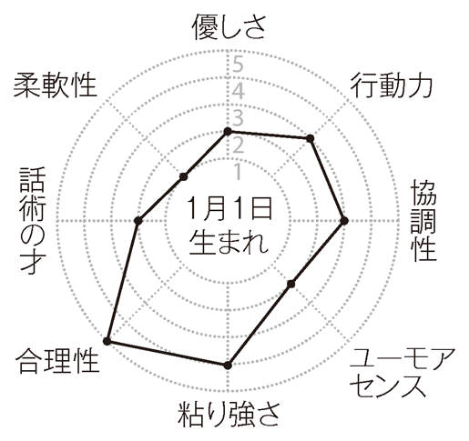
相性のいい人
従順なタイプ、指示待ち人間、包容力のある異性
相性の悪い人
自己主張の強い人、リーダータイプ、権威主義的な上司
ラッキーポイント
えび茶色、職場、国産スーツ
適職
マーケティングプランナー、プロデューサー
あなたとこの人たち（星座＋血液型）との相性は？
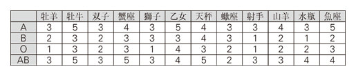
有名人 倉本聰（脚本家）、J.D.サリンジャー（米、小説家）、役所広司（俳優）
1 月 2 日生まれ
家庭運、上司運
性格と運命
穏やかで協調性のあるタイプ。根はかなり気の強い人ですが、それをストレートに出すことはありません。相手の顔色や周囲の空気を慎重にうかがいながら、上手に自分の意見や願望を通す賢さを持っています。また、仕事熱心であると同時にプライベートも大切にする人なので、結婚すると、仕事と家庭を立派に両立させる人が多いようです。
恋と結婚
巣作り願望が強く、若いうちに結婚したがるタイプ。根が真面目ですから、遊びの恋はまったくできず、つねに誠実に、そして結婚を念頭において異性に近づき、交際を続けます。また、金銭へのこだわりが強く、相手には高い経済力や家計管理能力を求めます。結婚すると、よき夫・よき妻になるのは確実で、離婚の心配もほとんどありません。
人間関係
協調性があり賢い人ですから、「人間関係はお得意」という人が多いでしょう。特に職場では、持ち前の真面目さや誠実さが評価され、上司や先輩に愛されるはず。ただ、かなりデリケートな面があって、必要以上に人目を気にして周囲に嫌がられることが......。慣れない環境では特に注意が必要。女性の場合、結婚すると、舅や姑と同居する可能性が高めですが、最初のギクシャクムードを乗り切れば、以後は快調。「可愛い嫁」と愛されます。
今後3 年間の運勢
最も好調なのは11 年6 月からの1 年間。何をするにも自分ならではの発想を大切にすることで運が大きく開けます。仕事で大抜擢を受けたり、趣味やスポーツで栄誉に浴する可能性もかなり高め。愛情面も11 年6 月からの1 年が有望です。手作りの服や小物が恋を招きやすく、自分達らしさにこだわったデートや暮らしが結婚運、家庭運を盛り上げます。
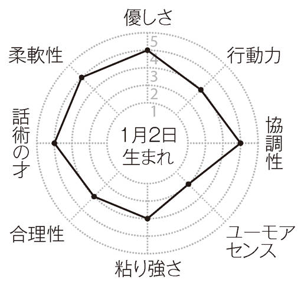
相性のいい人
しっかり者の異性、家庭的な人、おおらかな舅・姑
相性の悪い人
遊び好きな異性、気前のいい人、デリケートな人
ラッキーポイント
ベージュ、ベッドタウン、家計簿・家計ソフト
適職
保育士、調理師
あなたとこの人たち（星座＋血液型）との相性は？
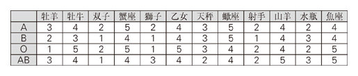
有名人 森村誠一（小説家）、津川雅彦（俳優）、立川談志（落語家）
1 月 3 日生まれ
投資運、上司運
性格と運命
柔軟性のある頑張り屋。仕事でも何でも着実に努力を重ねると同時に、「これ以上は難しい」などと感じたら、速やかに方向転換するフレキシビリティーも持ち合わせています。職場はもちろん、サークルや地域活動でも「デキる人」と評判でしょう。また、計算が早く、目端がきくので金融関係に適性が高く、投資でもかなりの利益を上げるはず。
恋と結婚
コツコツタイプのあなただけに、先を急ぐのは禁物です。じっくり計画を練ってステップバイステップで歩んでください。アタック、メイクラブ、プロポーズなど、少なくとも1 年はかけるつもりで取り組むと必ずいい結果が出るでしょう。なお、電話による意思の疎通に幸運が。特にケンカの仲直りや復縁は電話を使えば不思議なほどスムーズです。
人間関係
相手によって接し方、つきあい方を変えられる柔軟性がありますので、誰とでもうまくやっていけるタイプです。ただし、あまりにもご都合主義になると、周囲の信頼を失ってしまいますので要注意。また、ユーモアセンスがけっこうあるので、職場やサークルで人気者になれるでしょう。会話に流行り言葉を取り入れるのもおすすめです。また、上司の私用や雑用を買って出ると、予想以上に喜ばれ、目をかけられることが多いはず。
今後3 年間の運勢
12 年が運気活発。前半は仕事に関する希望や要望が受け入れられやすいので、異動や転属を申し入れるならこの機に実行を。後半は読書から得るものが多いとき。面白そうと感じた話題作をじっくり読み込むのは特におすすめ。新たな人生指針が得られたりするはずです。愛情面は、12 年の半ばに最愛の人との交際が始まる予感。婚約、見合いも大吉。
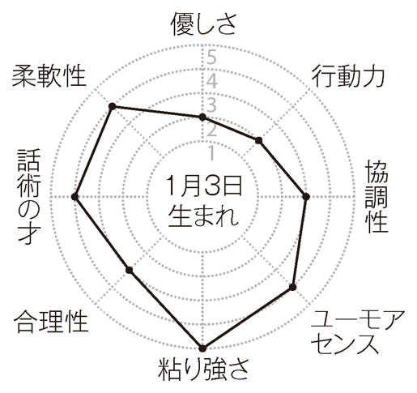
相性のいい人
紳士的な男性、育ちのよさそうな女性、安全運転タイプ
相性の悪い人
せっかちな人、情熱的な異性、ワーカホリックタイプ
ラッキーポイント
カーキイエロー、都市銀行、モバイル機器
適職
銀行員、投資家
あなたとこの人たち（星座＋血液型）との相性は？
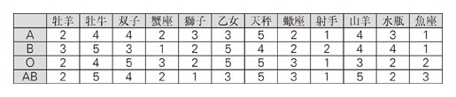
有名人 柳葉敏郎（俳優）、岩下志麻（俳優）、メル・ギブソン（米、俳優）
1 月 4 日生まれ
美容運、上司運
性格と運命
根っから慎重で堅実な超安全運転タイプ。やることが確実でほとんどミスをしない人です。それはいいのですが、石橋を叩いても渡らないところがあるので、チャンスをみすみす逃すことが多いよう。イザというときはリスクを覚悟でチャレンジを。また、抜群の忍耐力の持ち主で、ダイエットや禁酒禁煙など、いったん着手すれば十中八九成功です。
恋と結婚
真面目で誠実ですが、とても不器用。要領のいい異性からは簡単に手玉にとられてしまいます。その手のタイプにはハナから近づかないのが賢明でしょう。交際中は誠心誠意相手に尽くすタイプ。もちろん結婚を前提にしたおつきあい。ただ、不器用なので、うまく話を進めてくれる人がまわりにいないと、なかなかゴールへたどり着けない傾向も......。
人間関係
恋愛同様、友人、隣人、職場の人とのつきあいも器用なほうではありません。打ち解けるのにとにかく時間がかかりますし、ある程度親しくなっても、自分から食事やお酒に誘うことは滅多にないはず。相手に「水臭い」と思われやすいので注意して。ただし、あなたの手堅さは周囲に信頼されるのに十分すぎるほど。頼まれ事は、入院中でも果たすぐらいの律儀さです。上司から信頼され、非常に大切な仕事を任せられるでしょう。
今後3 年間の運勢
全般的に活気ある運気です。まず、不動産運が好調な11 年後半は自分のお城を持つチャンス。持ち前の粘り強さで物件探しや業者との交渉に当たればほぼ思い通りの結果に。12 年の前半は海外に雄飛する好機。出張、赴任、冒険旅行などいずれも大吉。愛情面は、11 年6 月からの1 年が幸運。とりわけ結婚を前提にしたおつきあいは確実にゴールへ到達。
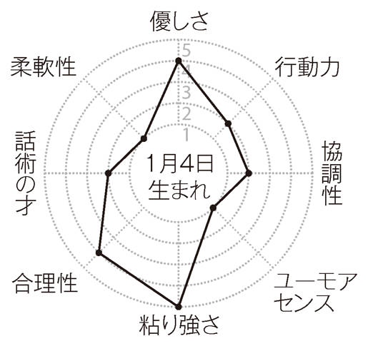
相性のいい人
ウソをつけない人、地味な異性、総務畑の管理職
相性の悪い人
冒険家、お天気屋、噂好きな同僚、お茶目な人
ラッキーポイント
ライトブラウン、ペンダントウオッチ、フラワーガーデン
適職
司法書士、タイムキーパー
あなたとこの人たち（星座＋血液型）との相性は？
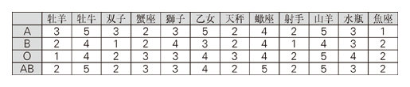
有名人 ニュートン（英、科学者）、山田風太郎（小説家）、宮本亜門（演出家）
1 月 5 日生まれ
健康運、アタック運
性格と運命
根は堅実で穏やかな気性の持ち主ですが、バイタリティーがあるので、けっこうはしゃいだり騒いだりする人です。今まで静かにしていたかと思うと、急に大声を出したりして、周囲のひんしゅくを買ったりします。また、体力に恵まれ、健康管理もしっかりしていますので、体調を崩すことが少なく、生涯大病とは無縁の人も少なくありません。
恋と結婚
基本的には受け身のあなた。でも、ここ一番というときは予想外の行動力を発揮して見事に恋をゲットします。その手際のよさには目を見張るものがあります。結婚に関してもほぼ同じ。相手が煮え切らないとみずから手はずを整えてトントンと話を進めていきます。なお、子供がすぐにできる傾向あり。産む準備が整っていないときは十分注意を。
人間関係
マイペースすぎて、「勝手な人」と思われやすいようです。実際、まわりの都合などおかまいなしに行動するクセがあり、周囲に非難されることもしょっちゅうでしょう。特に職場では独断で事を進めて上司に疎まれるなど、大ピンチに陥りやすいので十分に注意して。今後チームプレーを身につけていく必要が絶対にあります。なお、神経が図太く、ちょっとやそっとではメゲません。その点は周囲の尊敬の眼差しを集めるはず。
今後3 年間の運勢
11 年が運気快調。特に後半は知識や技能の習得がとてもスムーズ。弁護士や公認会計士など、難しい資格を取ろうと頑張っている人も吉と出るはず。その他、語学でも何でも教室通いをすれば半年で急成長を遂げるでしょう。愛情面は11 年に追い風が。何年にもわたる片思いや長い春に終止符を打つのにいいときです。率直に切り出せば確実に好結果が。
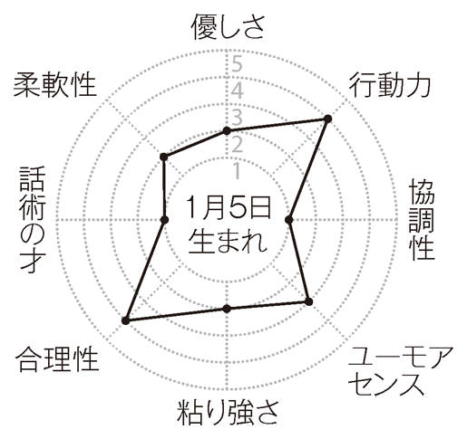
相性のいい人
スポーツマンタイプ、太っ腹な上司や先輩、営業職の異性
相性の悪い人
インテリタイプ、デリケートな人、運動嫌いの人
ラッキーポイント
ブラウン、ヘルスメーター、チャイニーズレストラン
適職
スポーツインストラクター、営業部員
あなたとこの人たち（星座＋血液型）との相性は？
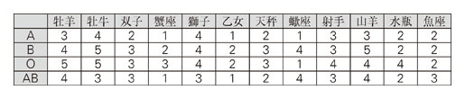
有名人 宮崎駿（映画監督）、ウォルター・モンデール（米、副大統領）、小池徹平（俳優）
1 月 6 日生まれ
おしゃれ運、人気運
性格と運命
真面目で責任感が強く、なんでもきちんと仕上げるタイプ。正義感も強く、決して不正に手を染めません。それでいて、まったくの堅物かといえばそうではなく、バランス感覚がいいので、けっこう生活をエンジョイします。特におしゃれには関心が高く、センスのいい人が多いようです。年をとっても「素敵な人」と評判になる人も少なくありません。
恋と結婚
恋に関するかぎり自分から動くことはほとんどないはず。それでも十分魅力的なあなたですから、相手の接近を待つだけでもちゃんとチャンスは訪れます。交際も結婚も、何人もの候補の中から一番気に入った人を選ぶというケースが多いはず。ただ、決断力がイマイチなので、選択に手間取り本命をつかみ損ねる心配が。あまり時間をかけないように。
人間関係
みずから交流を求めなくても、多くの人がまわりに集まってくるタイプ。もちろん、あなたの真面目さやおしゃれセンスがきいているのです。飲み会やパーティなど、社交の機会をみずから遠ざけないかぎり、豊かな人間関係を終生保ち続けられるでしょう。ただ、争い事を好まないタチですので、ケンカしながら仲を深めるといったダイナミックな関係を築くのは苦手のようです。通り一遍のおつきあいにならないように注意したいもの。
今後3 年間の運勢
12 年が本調子。大きなトラブルもなく、時間的にも精神的にも余裕を持てます。のんびり過ごすのもけっこうですが、活動範囲を広げればより有意義な1 年に。国際協力、自然保護、動物愛護などの活動に携わってみるのが特におすすめ。愛情面も12 年がハッピーです。恋人に合鍵を渡せばバラ色の日々に......。結婚を望むなら早めに親と顔合わせを。
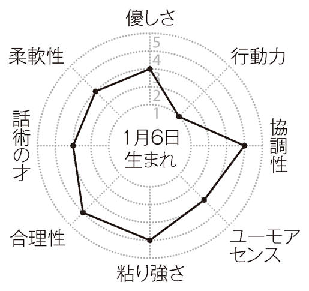
相性のいい人
おしゃれな人、育ちのいい異性、実務家タイプ
相性の悪い人
優柔不断な人、受け身の異性、社交性のない人
ラッキーポイント
ローズピンク、香水、ティーサロン
適職
デザイナー、スタイリスト
あなたとこの人たち（星座＋血液型）との相性は？
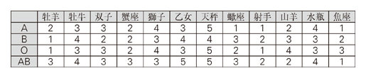
有名人 中畑清（野球評論家）、八千草薫（俳優）、立原正秋（小説家）
1 月 7 日生まれ
結婚運、勉強運
性格と運命
とても慎重で思慮深いタイプです。何事もじっくり考え、思いつきで行動することはまったくと言っていいほどありません。それだけに判断ミスをすることは少ないし、道を誤まる可能性も限りなく低めです。また、非常に忍耐強く、つらい情況が続いても決して音をあげないのも大きな特徴。不遇や逆境にとても強いタイプとも言えるでしょう。
恋と結婚
つねに全力投球の恋をするタイプ。ただし、用心深い性格ですから、自分から愛を打ち明けることは滅多にありません。熱い思いを胸に秘め、どこからか幸運が降ってくるのを辛抱強く待つ人です。せめて親友や家族に思いを打ち明け、仲を取り持ってもらうぐらいのことはしたいもの。また、よそ見を一切しないので、結婚すれば十中八九添い遂げます。
人間関係
不器用なタイプで、ウソを極端に嫌いますので、お世辞ひとつ言えない人がよくいます。おかげで、まわりの人に信頼はされますが、好感は持たれにくいようです。また、上司に一目を置かれることはあっても、可愛がられることは少ないでしょう。あなたに愛敬を振りまけとは言いませんが、笑顔ぐらいは浮かべていたいもの。なお、いったん信頼しあった相手とは滅多なことでは絆が切れず、一生おつきあいが続くケースが多いでしょう。
今後3 年間の運勢
11 年前半は何事につけ自分らしさを意識して。すると確実に評判がアップ、大役が回ってきたりするはず。また、13 年の後半は昇り調子。特に仕事・金銭面で大ブレイクの予感が。新事業や増収計画をスタートさせては？ 愛情面は13 年に" " 12 年の後半に紹介や縁談を頼んでおくのが幸運のカギになるはず。
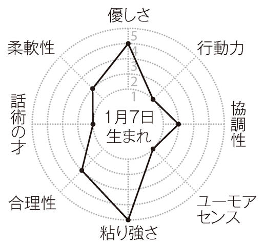
相性のいい人
頑張り屋、朴訥な男性、飾らない女性、精神的にオトナの人
相性の悪い人
お世辞のうまい人、派手好きな異性、ノリのいい後輩
ラッキーポイント
えんじ、図書館、哲学書
適職
学者、研究者、プログラマー
あなたとこの人たち（星座＋血液型）との相性は？
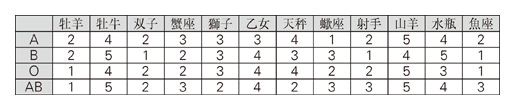
有名人 ニコラス・ケイジ（米、俳優）、はしだのりひこ（歌手）、柳生博（俳優）
1 月 8 日生まれ
仕事運、金運、独立運
性格と運命
上辺には目もくれず、中身を何よりも大切にする実質主義者。自分を無闇に飾らないし、華やかな生活に憧れる気持ちも希薄です。遊びやおしゃれには関心が低く、仕事やお金儲けに夢中になりがち。なかにはワーカホリックといった感じの人もけっこういます。また、合理性が発達し、それが金銭面に発揮されるとドライで計算高いと評されます。
恋と結婚
恋でもドライな傾向が目立ちます。惚れた腫れたと騒ぐことなく、自分にとってメリットのある相手を求め、有意義な恋をしようとします。結婚も、財産、社会的地位、主婦としての有能さを最も重視する人が多いよう。当然ながら見合い結婚が多くなります。ただ、生活力、経済力があるので、夫、妻として頼もしい存在であるのは間違いありません。
人間関係
無愛想でドライな人ですから、いわゆる好かれるタイプではありません。ただ、仕事ができるし、お金儲けも上手ですから、仕事を通じての人間関係は思いのほか豊かで、多くの人があなたを頼ってくるでしょう。独立して会社などを持った場合、あなたの能力を見込んで投資してくれる人もすぐに見つかるはず。また、しまり屋のわりに誕生日のプレゼントや盆暮れの挨拶を欠かしません。この点もあなたの無愛想さを補ってくれるでしょう。
今後3 年間の運勢
11 年は仕事運が良好。日常業務はすいすい片付き、初めての仕事も好調な滑り出し。特にオンラインビジネスの開始は発展性十分、将来金のなる木に育ってくれそう。12 年は体調を崩したりして魅力ダウンの心配あり。規則正しい生活が何よりの薬に。愛情面は、11 年後半に電撃婚などドラマチックな展開が期待できます。思い切りのよさが幸運のカギ。
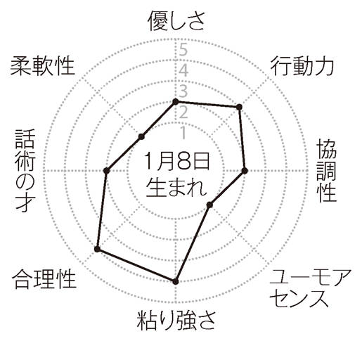
相性のいい人
家庭的な異性、投資家、仕事のできる上司
相性の悪い人
感情豊かな女性、遊び好きな男性、気前のいい人
ラッキーポイント
ダークブラウン、株式市場、クレジットカード
適職
実業家、ファイナンシャルプランナー
あなたとこの人たち（星座＋血液型）との相性は？
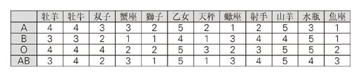
有名人 森英恵（デザイナー）、エルヴィス・プレスリー（米、歌手）、小泉純一郎（首相）
1 月 9 日生まれ
成功運、健康運
性格と運命
バイタリティーが旺盛な野心家です。たぐいまれな実務能力とスケールの大きい発想の持ち主でもあります。つねにトップを目指し、人の何倍も努力をするので、必ずと言っていいほど大目標を達成します。「宇宙飛行士になりたい」といった、子供の頃に抱いた夢を実現させる人も少なくないはず。また、徹夜が続いてもへこたれない体力があります。
恋と結婚
エネルギッシュであると同時に手堅さもありますので、この人と狙いを定めたら十中八九モノにします。根が真面目な人なので、その成功はゴールにつながることが多いよう。玉の輿や逆玉のケースも少なくありません。ただし、堅実さを忘れると運気は暗転するので、結果としてそうなるのならいいのですが、初めから玉の輿、逆玉目当てではNG と心すべき。
人間関係
プライドが高く、いろんな点で有能な人ですから、気づかぬうちに驕りが芽生えてしまいがち。人を見下すような態度をとったり、横柄な口をきいたり、頭が高かったりして周囲に嫌われないよう注意しましょう。この点をクリアすれば、あなたはどこでも頼もしい存在として、目上からは一目置かれるし、目下からは尊敬されるはず。また、ポリシーをしっかり持っているのも大きな特徴。人の口車に乗るような愚かなところはありません。
今後3 年間の運勢
11 年がハイレベル。仕事では目覚ましい活躍を見せ、出世の糸口をつかめそう。とりわけ、誰もが尻込みする仕事に挑戦するのは◎ 。翌12 年は、下り坂ながらもまだまだ好調。浪費や散財に気をつければレジャーや生活を十二分に楽しめます。愛情面は、11 年6 月からの1 年に追い風が。復縁や再婚も望みどおりに。新しい出会いは親戚づきあいを通じて。
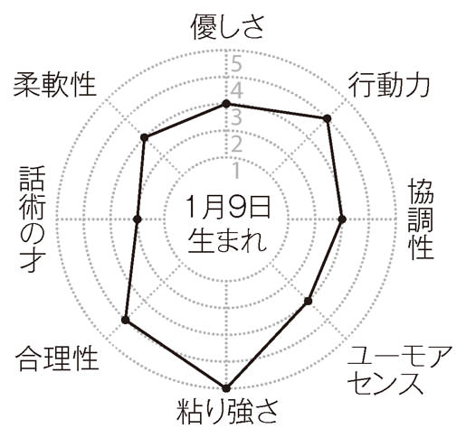
相性のいい人
大物タイプ、タフな人、ワイルドな男性、正義感の強い人
相性の悪い人
細かい人、おとなしい人、有言不実行型
ラッキーポイント
ブラウンゴールド、高原、肉料理
適職
バイヤー、フライトアテンダント
あなたとこの人たち（星座＋血液型）との相性は？
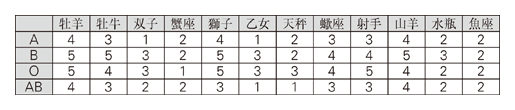
有名人 ボーヴォワール（仏、小説家）、大林宣彦（映画監督）、中山あい子（作家）
1 月 10 日生まれ
買物運、アタック運
性格と運命
頭の切れがバツグンで、鋭いことをよく口にするタイプです。ただし、口先だけの評論家ではなく、実行も伴うので、職場でもどこでも「やり手」と高い評価を受けることが多いよう。また、金銭感覚がシャープで、物の価値を見抜く目も備えています。このため買物で掘り出し物を見つけたり、率のいい投資法に気付くなど、得することが多いはず。
恋と結婚
かなりシャイな人ですが、目的意識が強く、ターゲットが定まると人が変わったように積極的になるタイプ。しかも、相手の泣き所をつくのがうまいので、アタックの成功率はハイレベル。ただし、裏切りをことのほか嫌います。浮気されると、交際中はもちろん、結婚していてもいとも簡単に別れてしまう傾向が。ちょっと潔癖すぎるかも。
人間関係
切れ者タイプのあなただけに、鋭いことを言いすぎたり、人を出し抜くような振る舞いが目立つと、「油断できない人」と警戒される心配があります。特に職場では足を引っ張られる可能性も大。「能ある鷹は爪を隠す」をモットーにしたいもの。なお、取引や交渉事に強みを発揮する傾向があり、機会があったらぜひ交渉役を買って出ましょう。「さすが......」と周囲をうならせることになるでしょう。幹事や世話役にも向いています。
今後3 年間の運勢
12 年の5 月まで快調です。心弾む出来事が多く、ノリノリ気分で過ごせそう。仕事も、自分のペースを守っていれば出来は上々、評価も期待以上でしょう。特に11 年後半は先手必勝がツボにはまって抜きんでた存在に。愛情面も、11 年後半が最も有望。趣味の教室や生涯学習の場で確かな縁が生まれる予感。告白、プロポーズも一発で成功するはず。
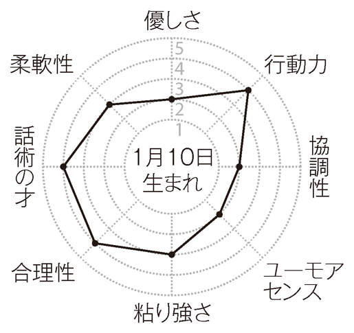
相性のいい人
誠実な異性、ハッキリものを言う人、インテリタイプ
相性の悪い人
のんびり屋、気の弱そうな異性、メンツにこだわる上司
ラッキーポイント
ダークグリーン、会議室、電子手帳
適職
証券アナリスト、各種鑑定士
あなたとこの人たち（星座＋血液型）との相性は？
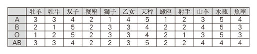
有名人 ロッド・スチュワート（英、歌手）、嵐山光三郎（作家）、森毅（数学者）
1 月 11 日生まれ
貯蓄運、アタック運
性格と運命
デリケートで感情の起伏が激しいタイプ。ただ、開放的なタチではないので心の動きを表に出すことを好みません。それだけにストレスがたまりやすく、体調も不安定になりがちです。もっとオープンになりたいもの。金銭には細かく、むだ遣いを嫌います。節約上手でコツコツ貯めるのが大の得意。晩年、お金に苦労することはないはずです。
恋と結婚
こまやかな気配りで相手の心をうまくつかんでしまう人。好きな人の気持ちを読んで、相手の望んでいることを先回りしてやってあげれば楽に恋がつかめるし、恋人や夫・妻も簡単に操縦できるでしょう。ただ、細かすぎるところがあって、つきあいが長くなるに従って言い争いが多くなります。些細なことにはできるだけ目をつぶるようにして。
人間関係
職場やサークルでは、腰が低くあまり自己主張をしない人。口数も少なく、少々影が薄くなりがちです。必要なことはもう少し口にしたほうがイメージアップにつながるはず。ただ、まわりが気のおけない仲間だけになると、けっこうはしゃいだり、冗談を言ったりして、周囲を驚かせることがよくあります。また、親友など、親しい人に対しては悩みを打ち明けたり、自宅に呼んで歓待したりと、情のこもったおつきあいをする傾向も......。
今後3 年間の運勢
下り坂ながらも、12 年6 月より反転。13 年に入ると絶好調に。ここは大目標を追求したり、思い切った転身を図るチャンスです。必要な資金を惜しげなく注ぎ込むなど、潔い決断が新たな人生の幕開けとなるでしょう。愛情面は、13 年の前半にチャンス到来。いきなりの告白が相手のハートを射抜くはず。カップルは泊りがけの旅行が以後の幸せをお約束。
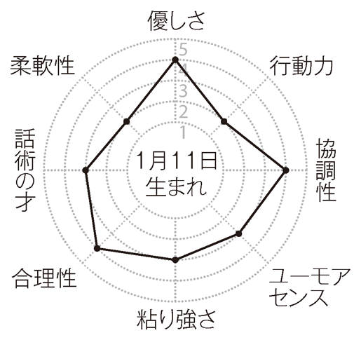
相性のいい人
他人の気持ちがわかる人、清潔感の漂う異性、芸術家肌の人
相性の悪い人
大雑把な人、口の悪い上司や先輩、無欲な人
ラッキーポイント
クリーム色、観葉植物、郵便局
適職
会計士、医療保険事務技能者
あなたとこの人たち（星座＋血液型）との相性は？
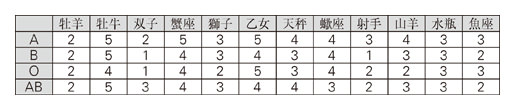
有名人 輪島大士（横綱）、ちばてつや（漫画家）、深津絵里（俳優）
1 月 12 日生まれ
交際運、アタック運
性格と運命
堅実さと要領のよさをあわせ持つタイプ。目標に向かって一歩一歩進むこともあれば、途中を省略してあっという間に成果を上げたりすることも......。また、生真面目に見えて、話してみると意外とユーモアセンスがあったりします。その両面が噛みあっているときは非常に魅力的で有能な人物ですが、そうでないときは矛盾だらけの変な人に見えたりします。
恋と結婚
恋では要領のよさが目立ちます。異性をおだててその気にさせるのが上手だし、合コンでは一番人気の異性をゲットしたりします。また、二股をかけるのが得意で、友人のBF ・GF とこっそりつきあってまんまとゴールインといった芸当もその気になればできるでしょう。結婚生活でもアメとムチを使い分け、上手にパートナーを操縦するタイプです。
人間関係
あなたの二面性を生かしてよい人間関係を築くには、ケジメをきちっとつけることがポイントになるでしょう。働くべきときはガンガン働き、羽をのばしていいときはおおいにハメを外しましょう。そうすれば、上司には頑張り屋と評価されますし、同僚や友人には楽しい人と人気を博すはず。また、お堅い人には仕事の話、おしゃれな先輩とはファッションの話と、相手によって話題や接し方を変えるのも、器用なあなたにはおすすめです。
今後3 年間の運勢
12 年の半ばまでいい調子で推移します。11 年後半は体力・気力ともに充実、職場でもどこでも大ブレイクの予感です。ツキに乗じて独立や起業に踏み切るのも吉と出ます。趣味やスポーツの大会でメダルやトロフィーを手にする予感も......。愛情面は11 年6 月からの1 年が満開。特にリゾートや観光名所では、最愛の人との出会いがあったり、至福の日々を過ごせたりするはず。
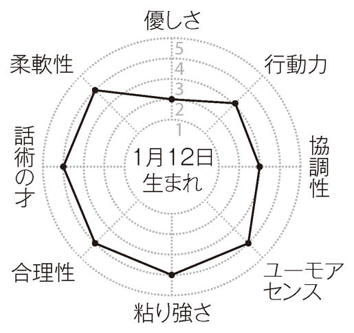
相性のいい人
物わかりのいい人、才気あふれる女性、個性派
相性の悪い人
頑固一徹の上司、亭主関白型の男性、専業主婦志向の女性
ラッキーポイント
レモンイエロー、ジャケット、パブ
適職
テレビディレクター、秘書
あなたとこの人たち（星座＋血液型）との相性は？
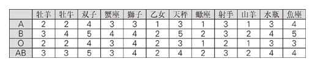
有名人 村上春樹（小説家）、楠田枝里子（司会者）、かまやつひろし（音楽家）
1 月 13 日生まれ
仕事運、生活運
性格と運命
浮ついたところがまるでなく、足元をしっかり見つめて着実に歩んでいくタイプです。計画性も抜群で、何をするにもまずプランを立て、そのとおりに実行しようとします。また、若いうちから将来のことをよく考え、生活設計をきちんと練って、一歩一歩目標に近づくよう努力します。同年齢の人に比べてかなりオトナに見える人が多いでしょう。
恋と結婚
こちらも実に計画的。好きな人の好みを調べ、ちゃんと段取りを整えてから行動に移るのですんなり交際に持ちこめます。結婚だって、長期計画で進めればどんな相手でもなんとかなるはず。ただし、ひとつだけ条件が。それはハプニングが起きたときの対応です。融通のきかないあなただけに、即、周囲にヘルプを仰いで乗り切る必要があります。
人間関係
しっかり者でオトナのあなた、滅多にトラブることはないでしょう。頼まれたことは必ず果たすし、ミスを人のせいにしないし、遅刻もしないし......。言ってみれば優等生のあなたですから、上司や先輩は安心してあなたに仕事を任せられるはず。また、計画性抜群のあなたですから、パーティやグループ旅行などではプランナーを引き受けて。綿密でしかもアイデアいっぱいのあなたのプランにみんな大喜び。おおいに面目を施すはずです。
今後3 年間の運勢
11 年がけっこう有望。特に力試しにツキが多いので、コンクールやオーディションにトライするといい目が出るはず。また、家族や親戚の助言、協力で長年の悩みが解消する暗示も......。意地を張らず素直に頼ってみて。愛情面は、11 年中に待ちに待った出会いが。仕事がらみの会合は特に幸運。プロポーズや子作りは持ち前の計画性を生かすと大吉。
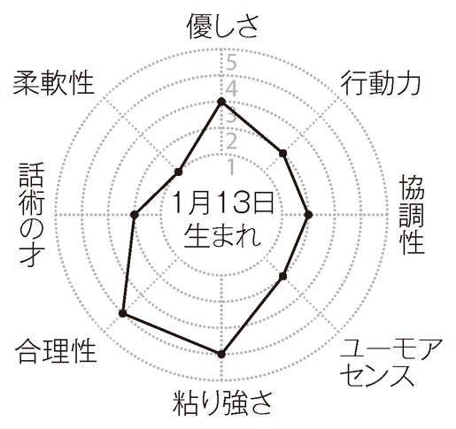
相性のいい人
真面目な人、リアリストの異性、企画開発部門の人
相性の悪い人
子供っぽい人、ロマンチストの異性、数字に弱い上司
ラッキーポイント
ロイヤルブルー、シンプルスーツ、資料室
適職
各種プランナー、公務員
あなたとこの人たち（星座＋血液型）との相性は？
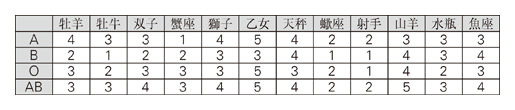
有名人 野沢那智（声優）、相米慎二（映画監督）、伊藤蘭（俳優）
1 月 14 日生まれ
仕事運、発明運
性格と運命
慎重で用心深い性格ですが、意外と行動力があって、いったん目標が決まるとパッと行動に移れる人です。特に仕事は、持ち前の現実感覚とあいまって非常にスピーディーに処理します。その手際のよさは見事のひとこと。また、物事をロジカルに考えられると同時に発想が豊かなので、コンピュータを使った創作的な仕事で力をふるう人が多いよう。
恋と結婚
恋より仕事や社会活動を重視しがちな人ですが、「この人と一緒になりたい」と思うと、まるで人が変わったように熱心になり、あっという間にゴールインというケースが多いよう。そして生活が落ち着きを見せると、また仕事や社会活動に戻っていく......そんなタイプです。なお、職場にいることが多いので、自然と社内結婚の率が高くなります。
人間関係
まったく周囲に気を使わないというわけではありませんが、本質的にはゴーイング・マイ・ウェイの人。特にいったん決めた目標や計画に口出しされるのが大嫌いで、親や夫・妻がなんだかんだ言ってくると、どうしてもケンカになってしまいます。もっと聞く耳を持ってもいいような気がしますが......。なお、日常的にはけっこう周囲に気を使い、親切です。頼まれなくてもコーチを買って出るなど、教え魔の傾向がある人も多いようです。
今後3 年間の運勢
下り坂ながらも12 年の5 月まで順調。周囲からいい影響を受けやすいので、センスのいい人や有能な人物との交流を深めましょう。生活は豊かになるし、仕事の業績も確実にアップ。一方、12 年6 月からの1 年は停滞運。特にストレス蓄積からの発病には要注意です。愛情面は11 年が順風で、心の赴くままに愛し合って大正解。出会いは職場や出張先で。
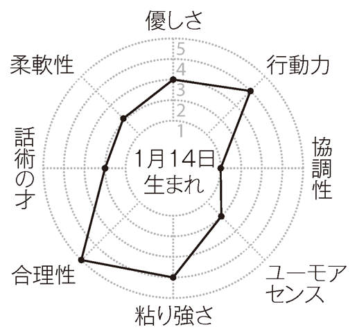
相性のいい人
理数系に強い人、キャリアウーマンタイプ、自由奔放な人
相性の悪い人
口うるさい異性、のんびり屋、家庭的な人
ラッキーポイント
セピア色、パソコン、インテリジェントビル
適職
システムエンジニア、航空整備士
あなたとこの人たち（星座＋血液型）との相性は？
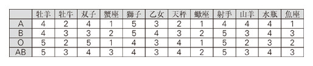
有名人 石田純一（俳優）、フェイ・ダナウェイ（米、俳優）、三島由紀夫（小説家）
1 月 15 日生まれ
芸術運、友情運
性格と運命
落ち着きがあって賢い人。判断は的確だし、やることもスマートですから、何をしてもミスが少なくトラブることもほとんどないはず。そんなソツのないあなたですが、残念ながらガッツがイマイチ。仕事が忙しくなると、ついサボってしまうのではありませんか？ なお、美的感覚がシャープなので、イラストやデザインに才を表す人が多いよう。
恋と結婚
ヘビーな恋はパス、軽くてサラリとした交際が大歓迎というタイプ。それだけに深い境地に達しにくいのはやむをえないところでしょう。ときには、何もかも忘れて恋に打ち込むことも必要なのでは？ 結婚生活も、最初は友達同士の延長みたいな感じでしょう。でも、子供ができると、お互い責任感が強まって徐々に本物の夫婦になっていくはず。
人間関係
人間関係では如才のなさが目立ちます。誰とでも気軽に言葉をかわし、ほどほどにおつきあいをします。人の気持ちを見抜くのが上手なので、その気になればすぐに相手に気に入られ、上司や先輩には可愛がられることが多いはず。ただ、複雑な関係になるのは苦手ですから、悩み相談やトラブルを持ち込まれると、スルリとかわす傾向が強いようです。そんなときにひと肌脱いであげれば、人間関係はさらに豊かなものになるのですが......。
今後3 年間の運勢
12 年に盛り上がりが見られます。特に前半はダイエットやシェイプアップにツキがあるので、成功のイメージを心に強く刻んで頑張ってみて。後半にはナイスバディを手に入れている可能性が大。プチ整形もうまくいきそう。愛情面は12 年の半ばが有望。シングルの人には海外のリゾートで宿命の出会いが。カップルにはハッピーエンドが訪れる気配濃厚。
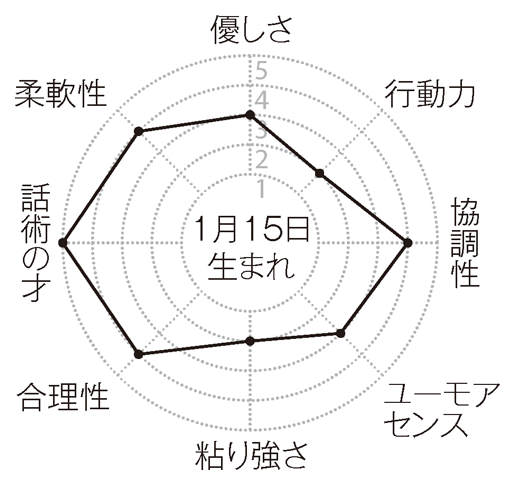
相性のいい人
アーティストタイプ、社交的な人、フェミニスト
相性の悪い人
一途な異性、エネルギッシュな上司、質実剛健な男性
ラッキーポイント
ローズピンク、外国のファッション雑誌、談話室
適職
イラストレーター、編集者
あなたとこの人たち（星座＋血液型）との相性は？
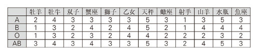
有名人 コシノヒロコ（デザイナー）、落合恵子（小説家）、石原良純（気象予報士）
1 月 16 日生まれ
文筆運、創作運
性格と運命
内向性が強く、何かあるとすぐ思い詰めるタイプです。また、非常に敏感で、ちょっとした刺激に過剰反応しがちな傾向も見られます。そんなあなたは" "
恋と結婚
思い詰め型の恋をする人。素敵な異性が現れても自分からは決して打ち明けないし、うまいこと気を引いて相手に交際を申し込ませるような器用さも持ちあわせていません。そんなあなたが交際やゴールにこぎつけるには、友達に橋渡しを頼んだり、家族に話をまとめてもらうなど、周囲の力を借りる必要があるでしょう。もちろん見合いもおすすめです。
人間関係
社交性があまりなく、交友の輪が広がりにくいタイプです。そのかわり、心と心の触れ合いを大切にするので、関係は深まりやすく、いったん生まれた友情は長続きしやすいようです。職場の人とも、仕事の仲間以上の親密な関係を求めようとします。それだけに、上司など、ビジネスライクに接してくる縦の関係の相手に対しては必要以上に心を閉ざしがちです。もっとオープンになったほうが、仕事はやりやすくなるはずです。
今後3 年間の運勢
11 年と13 年が有望です。まず11 年は、才能を伸ばすのにいい時期です。講習会に通ったりして周囲から刺激を受けるのが成長のきっかけに。13 年は心機一転に幸運が。転職、引っ越し、外国暮らしなど思いのほかスムーズに実現します。愛情面は、11 年の後半に話がトントンと進む暗示が。交際や結婚の申し込み、紹介や縁談の依頼など、ぜひこの時期に。
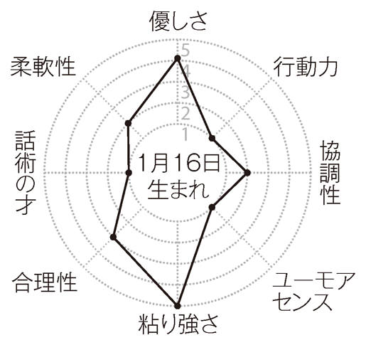
相性のいい人
心の温かい人、シャイな異性、理想主義者
相性の悪い人
体育会系の人、クールな先輩、仕事一本槍の上司
ラッキーポイント
グレー、美術館、スクラップブック
適職
小説家、陶芸家、ミュージシャン
あなたとこの人たち（星座＋血液型）との相性は？
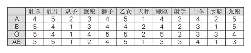
有名人 池上季実子（俳優）、堀内恒夫（野球評論家）、伊藤整（小説家）
1 月 17 日生まれ
仕事運、金運、出世運
性格と運命
我の強いしっかり者です。ただし、非常に賢い人ですから、わがままなところはおくびにも出しません。つねにまわりに気を配り、しっかり計算しながら自分の主張や望みを通します。また、現実に強く、お金儲けが得意中の得意という人も少なくないようです。さらに、仕事もすごくデキる人で、野心もあるので、同期の出世頭に躍り出ることも......。
恋と結婚
仕事やお金儲けでは有能なあなたですが、こちらはかなり不器用なタイプ。こと恋愛となると、ご自慢のコンピュータが錆ついて計算が狂ってしまいがちです。ただ、しぶとさにかけては断トツですから、自分からあきらめないかぎり狙った人をモノにできます。なお、結婚後、仕事や社会活動にかまけて家事を疎かにしがちな点には注意すべき。
人間関係
誰とでもソツなくつきあうタイプ。ただし、ハダカのおつきあいが苦手ですから、相手が真情を吐露してきたりすると、どうしても及び腰になってしまいます。その意味で、本当に心を許しあう友達や仲間はできにくいと言えます。また、夫や妻、子供との関係もクールになりがちです。もっと熱い感情を相手にぶつけてほしいもの。そのかわり、職場の人間関係のようなビジネスライクなおつきあいは非常に得意。接待も上手にこなすはず。
今後3 年間の運勢
11 年が強運。公私ともどんどん攻勢に出てください。期待以上の成果があがり、念願の仕事につけたり、収入が増えたりするはず。一方、12 年は人間関係が不調に。特に職場での冷遇や意地悪が心配されます。秘密漏えいや約束のドタキャンが原因になるので厳しく慎んで。愛情面は11 年が好調。オープンな態度、ざっくばらんな物言いが幸せを招くカギ。
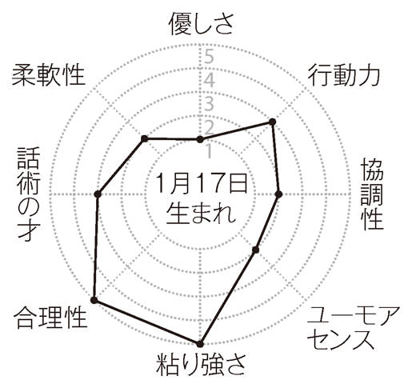
相性のいい人
包容力のある男性や上司、エリートタイプ
相性の悪い人
感情豊かな女性、情熱的な男性、単純な人
ラッキーポイント
枯草色、金融機関、チェーンネックレス
適職
経営者、政治家秘書、バイヤー
あなたとこの人たち（星座＋血液型）との相性は？
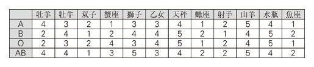
有名人 坂本龍一（ミュージシャン）、山口百恵（歌手）、平井堅（歌手）
1 月 18 日生まれ
人気運、アタック運
性格と運命
堅実さと華やかさをあわせ持つタイプ。性格的には地道なコツコツタイプですが、外見的には目立とう精神が旺盛なので、派手な服を着たり、人前でパフォーマンスをしてみせたりと、かなり輝いて見える人です。また、好きなことをやっているときはご機嫌ですが、そうでないときは終始ムスッとしているなど、気分屋の一面も持っています。
恋と結婚
照れながらも正面から攻めていくタイプ。恥ずかしそうな素振りが異性の心をおおいに揺さぶり、その場でOK ということが多いようです。メイクラブの誘いでも、結婚の申し込みでも同じこと。つねに初々しさをなくさないでほしいもの。また、ロマンチストの面もあり、夜景スポットやベイエリアなど、ムーディーな場所で恋が生まれやすい傾向が。
人間関係
やるべきことはきちんとやるし、周囲の人を笑わせるなど、サービス精神もありますので、職場やサークルではかなりの人気者でしょう。歓送迎会や忘年会、コンパなどでは幹事や仕切り役を買って出るのがおすすめです。あなたの常識をわきまえた仕切りぶりは誰からも好感を持って迎えられ、存在感をいっそう高めることになるはずです。ただ、気分屋の一面は出さないようにしたいもの。せっかくの評判にキズがついてしまいますから。
今後3 年間の運勢
12 年5 月まで明るさ十分。ここ数年来、手つかずの問題に決着をつける好機です。あなたが音頭を取りさえすればスピーディーに解決するはず。また、11 年後半はスポーツ運がバッチリ。定期的に楽しむことで体力強化はもちろん、体質改善の決定打にもなるはず。愛情面も11 年の後半が最有望。スポーツを通じてよき伴侶との出会いや愛の再燃が......。
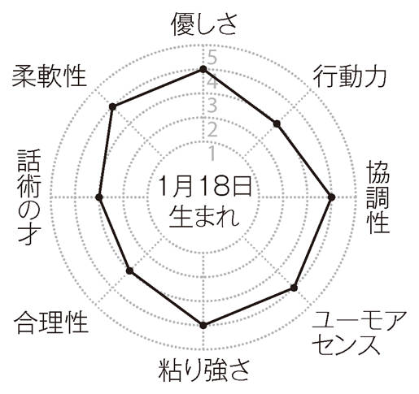
相性のいい人
多趣味な人、個性的な人、お茶目な女性、楽しい男性
相性の悪い人
ユーモアを解さない人、現実的な人、仕事熱心な先輩
ラッキーポイント
黄土色、コンパ、マジックグッズ
適職
美容師、芸能マネージャー
あなたとこの人たち（星座＋血液型）との相性は？
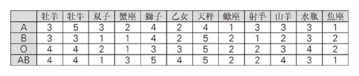
有名人 北野武（映画監督）、ケビン・コスナー（米、俳優）、森山良子（歌手）
1 月 19 日生まれ
リーダー運、愛情運
性格と運命
目的意識が強く計画性があります。さらに実行力にも恵まれていますから、個人的な目標でも事業計画でも必ずと言っていいほど実現させます。さらに頭も切れるので、どこでも第一人者の名をほしいままにするでしょう。ただし、遊び心に欠けるので、オーバーワークが元でよく体調を崩します。うまく息抜きしないと大病で倒れる可能性も......。
恋と結婚
狙った獲物は必ずモノにするタイプ。と言っても決して遊び人ではありません。それどころかバカ正直、生真面目と言ってもいいほどです。従って、異性を好きになると、必ず結婚を目指してあらゆる手をつくします。また、交際中、そして結婚後も、一切よそ見をしません。相手だけをしっかり見つめ、とことん愛し抜くピュアな愛情の持ち主です。
人間関係
トップランナーとしての素質が十分のあなた。持ち前の行動力、計画力を生かして、ぜひみんなの先頭を突っ走ってください。必ず大勢の人があなたについてきて、いつの間にかリーダーの地位に押し上げられるでしょう。当然、目上の人からの評価も高く、出世頭になることが多いはず。もちろん、出る杭は打たれることにもなりますが、しぶとさも持ち合わせているあなたにとってはたいしてこたえないし、むしろプラスになるでしょう。
今後3 年間の運勢
11 年に実りの時を迎えます。これまで努力してきたことは何であれ大輪の花を咲かせるはず。また、動植物の育成、訓練、品評会参加などに大きな喜びが。一方、13 年は、なぜか態度が大きくなって敵を作ってしまいがち。意識して腰を低くすべきでしょう。愛情面は11 年がラッキーです。季節の行事に何度となく参加するのが恋の誕生や進展の糸口に。
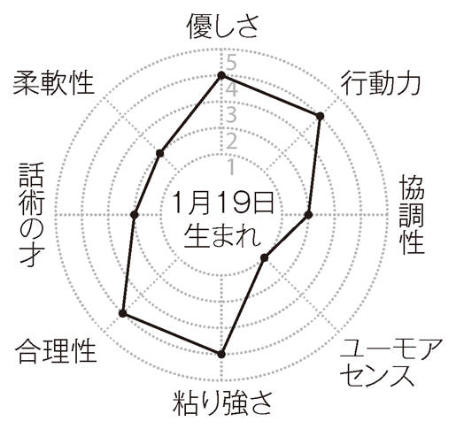
相性のいい人
つねに前向きの人、結婚願望の強い女性、愛情深い男性
相性の悪い人
お山の大将タイプ、ペシミスト、見栄っぱり
ラッキーポイント
モスグリーン、結婚式場、アイマスク
適職
レーサー、ルポライター
あなたとこの人たち（星座＋血液型）との相性は？
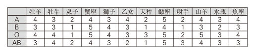
有名人 松任谷由実（歌手）、柴門ふみ（漫画家）、宇多田ヒカル（歌手）
1 月 20 日生まれ
買物運、家庭運、交際運
性格と運命
神経がこまやかで現実的なことに強い人です。物や書類の整理、データの分析、家事や家計の管理といったこまごまとしたことがお得意で、滅多にミスや過ちを犯しません。また、損得に独特の嗅覚があり、買物ではいつも掘り出し物を探り当てます。何気なく買っておいた骨董品、美術品が素晴らしいお宝だった、なんてことも十分ありえます。
恋と結婚
親切や世話焼きがキーポイントになるタイプ。つねに異性に優しくしていれば、恋は向こうからやってきますし、恋人の面倒を何かと見てあげれば、しっかり心をつかめ、スムーズにゴールインとなるでしょう。結婚しても、女性なら夫の世話をしっかり焼くし、男性なら妻への気遣いを忘れません。おかげでとても幸せで安定した家庭生活を営めます。
人間関係
一般の人間関係でもこまやかな気配り、心遣いが豊かな実りをもたらします。ミスした後輩を慰めたり励ましたり、頑張っている先輩を気遣ったり手助けしたりすることで、あなたは誰からも好かれ、職場でもサークルでもなくてはならない存在になれるはず。また、人柄のよさを買われて、先生から異性を紹介されたり、上司から素晴らしい縁談を持ちかけられることも一度や二度ではないはずです。おおいに気配りに励んでください。
今後3 年間の運勢
13 年が盛り上がっています。まず仕事では、予想外の昇給があったり、臨時手当に恵まれたりしてフトコロが潤いそう。プライベートではギャンブルで大儲けする可能性が。ただし深追いは儲けを御破算にするので慎んで。女性の場合は、美白やバストアップなど美容面でも成果が表れやすい模様。愛情面も13 年が吉。異性にモテるし、メイクラブも充実。
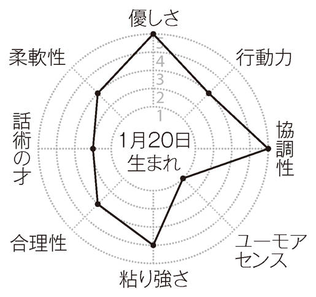
相性のいい人
甘えん坊タイプ、子煩悩な男性、料理上手な女性
相性の悪い人
束縛を嫌う異性、大雑把な人、マイペース人間
ラッキーポイント
あんず色、フリーマーケット、電卓
適職
司書、税理士、アートディレクター
あなたとこの人たち（星座＋血液型）との相性は？
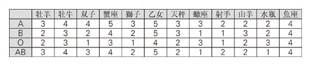
有名人 フェデリコ・フェリーニ（伊、映画監督）、いずみたく（作曲家）、有吉佐和子（小説家）
1 月 21 日生まれ
会話運、交際運
性格と運命
さわやかでサッパリとした性格です。滅多なことではキレないし、つまらないこだわりも持たないはず。また、知識欲が旺盛で未知の分野に強い興味を覚えるのもこの生まれの特徴です。ただ、飽きっぽくてひとつのことを深く掘り下げるのが苦手なため、何をやっても中途半端に終わりがち。好きなことを日課にするなどして根気を養う必要が。
恋と結婚
好奇心が旺盛で、興味を引かれた異性には即アクションをおこす人。根が器用と来ていますから、あっという間に親しくなれます。ただ、ここでも飽きっぽさが問題で、相手のことがわかるにつれ興味を失ってしまいがち。もっと辛抱強くならないと結婚運は遠ざかるばかりです。そのせいか、あなたの結婚は「できちゃったから」というケースが多そうです。
人間関係
頭も口もよく回るタイプ。豊富な話題や話の面白さで周囲の人を引きつけることでしょう。人見知りとは無縁で、誰にでも気さくに接するので、すぐに新しい友達ができるはず。職場でも、構えることなく誰とでも気軽に飲みにいったりするので、上司や先輩ともうまくやっていけます。対人問題で悩むことはきわめて少ない人と言えます。ただ、ベタベタしたつきあいが苦手なので、たまに「水臭い」と責められることはありますが......。
今後3 年間の運勢
12 年6 月からの1 年がハイレベル。悩みやしがらみから解放され活力が戻ってきます。そのパワーを新しい仕事の開拓や趣味の充実に向けると実り豊かな1 年に。また、通信、旅行、国際交流にツキが多そう。愛情面も、この1 年が好調です。特に12 年の後半には、周囲のおぜん立てに恵まれて、スンナリ交際が始まったり、ゴールインできたりするはず。
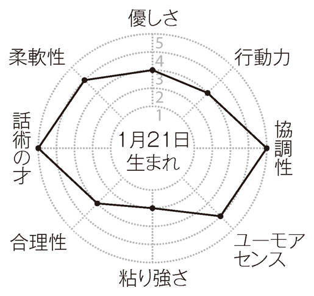
相性のいい人
趣味の広い人、頭のいい人、おしゃれな異性
相性の悪い人
じっくりタイプ、依存心の強い人、真面目な異性
ラッキーポイント
エメラルドグリーン、繁華街、T シャツ
適職
司会業、プレス、ツアーコンダクター
あなたとこの人たち（星座＋血液型）との相性は？
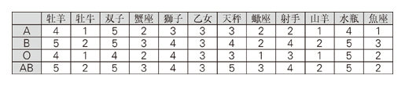
有名人 高田純次（タレント）、クリスチャン・ディオール（仏、デザイナー）
1 月 22 日生まれ
勉強運、読書運
性格と運命
知的で物静かなタイプです。人と騒ぐことをあまり好まず、ひとりで本を読んだり、考え事をしていたりする姿が目につきます。また、何事につけ自分をしっかり持っていて、他人の考えに影響されたり、流行に流されたりすることもありません。ただ、心身ともにあまりタフなほうではないので、一度挫折すると立ち直るのにかなり時間がかかります。
恋と結婚
恋に関してはかなり臆病。ステキな人ともあまり口をききませんし、心底好きになった相手にもなかなか告白できません。思いを隠してつきあい続け何年も過ぎてしまう......なんてことになりがちです。後悔したくなかったら、勇気を振り絞って打ち明けるか、信頼できる人に橋渡しを頼んだりすべきです。縁談や見合いパーティ参加もおすすめ。
人間関係
争い事が苦手で、誰にでも自分から合わせていくタイプです。周囲と意見が対立すれば、自分が正しいと思っても、モメ事になるのが嫌なのであっさり折れることが多いはず。また、大勢で遊んだり、何か活動するときも、人のプランに便乗するケースがほとんどでしょう。でも、本来のあなたは知的なタイプ。実にいい意見やアイデアを持っています。もっと自分の考えを主張したほうが、周囲に評価されるし、よい人間関係も築けるはず。
今後3 年間の運勢
11 年、12 年と明るい運気が続行。まず11 年は、人のためになることでツキアップ。職場やサークルで縁の下の力持ちを務めたり、地域や恵まれない人のために尽力しましょう。着実に信用が高まって幸運が次々と舞い込むようになるはず。また、12 年5 月までは愛情運が活発。旅行や留学を通じて自分史を塗り替えるような出会いや愛の進展がありそう。
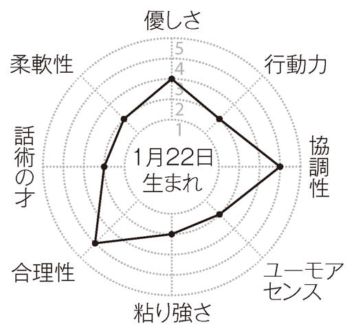
相性のいい人
物静かな異性、何事にも一生懸命な人、思慮深い人
相性の悪い人
ケンカっ早い人、野心家、賑やかな人
ラッキーポイント
コバルトブルー、書店、フォトスタンド
適職
研究者、翻訳家、学芸員
あなたとこの人たち（星座＋血液型）との相性は？
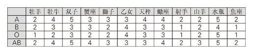
有名人 星野仙一（野球監督）、中田英寿（サッカー選手）、鳳蘭（俳優）
1 月 23 日生まれ
アタック運、商売運
性格と運命
頭が切れる人ですが、性格的には楽天性が強いようです。小さなことにこだわらず、ピンチになってもなんとかなるさと開き直れる図太さがあります。しかも、その裏にはしたたかな計算がありますので、開き直った結果は吉と出ることが多いよう。なお、この生まれには健康に無関心な人がけっこういます。大病するとしたら不摂生のしすぎが原因に。
恋と結婚
ノリが軽く機転もきくので、多くの異性と恋を楽しむことができる人です。ただ、決してマメなほうではないので、交際は長続きしにくく、従ってゴールもなかなか見えてきません。ヘタしたら40 歳近くになってからということも珍しくありません。ただ、いったん身を固めてしまうと家庭にしっかり根を下ろし、よそ見することはまずないでしょう。
人間関係
縛られるのが嫌いな人なので、組織にはなじみにくいタイプです。職場の規模が大きくなるほど、複雑な人間関係にウンザリしがちでしょう。できれば、こぢんまりとした職場やフリーランスを選択して、しがらみを少なくすべきです。特に、あなたには物怖じしないところがありますので、接客サービス業や営業セールス系はおおいにおすすめ。怖そうな人や気難しそうな人にも、あなたなら平気で話しかけ、売り込みなどができるはず。
今後3 年間の運勢
11 年が安定期。何事にもスロー＆ステディをモットーに取り組むことで力がついて存在感が大幅にアップ。特に趣味のサークルや習い事の教室ではリーダーや代表に。愛情面は11 年6 月からの1 年が有望。スキンシップに励むことで愛の季節が到来。シングルの人はひと目惚れされ激愛がスタート。カップルは至福の日々に。夫婦にはベビー誕生の予感。
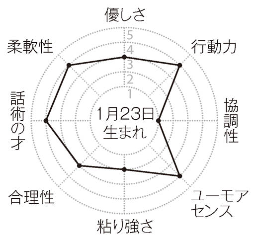
相性のいい人
一匹狼タイプ、旅行好きの人、包容力のある上司
相性の悪い人
家庭的な人、恋に夢中になるタイプ、神経質な人
ラッキーポイント
パープル、イベント会場、パーカ
適職
訪販セールス、ショップ経営
あなたとこの人たち（星座＋血液型）との相性は？
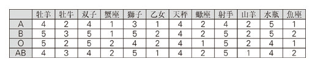
有名人 湯川秀樹（物理学者）、ジャイアント馬場（レスラー）、吉田照美（タレント）
1 月 24 日生まれ
おしゃれ運、社交運
性格と運命
おしゃれでスマート、都会的なセンスの持ち主です。服装だけでなく、身のこなしもずいぶんあか抜けています。また、社交性が豊かなのもこの生まれの特徴で、老若男女を問わず幅広い交友範囲を誇る人が多いよう。ただ、プレッシャーに弱く、重い責任を負わされたり、人前で発表させられたりすると、つい逃げ腰になってしまうのは困りもの。
恋と結婚
センスのいいおしゃれと優雅な身のこなしで多くの異性を引きつけるタイプ。ただ、恋をゲームのように考えがちで、ちょっとつきあってはすぐに別れてしまう傾向が。10 代ならまだしも、20 代30 代になってもそんな調子ではゴールは遠ざかるばかりでしょう。適当なところで軌道修正すべきです。なお、結婚後はふたりして頻繁に外出する楽しい夫婦に。
人間関係
平和主義者で争いを好みません。仲良くやりたいという意識が強いので、職場やサークルでモメ事に巻き込まれる可能性は低めです。ただ、その反面、誰にでもいい顔をして、「八方美人」と陰口を叩かれることはありそうです。嫌いな人にまで愛敬を振りまくのは考えものです。なお、社交的なあなただけに、コンパやパーティを通じて人間関係が広がることを覚えておきましょう。仕事に役立つコネもけっこうつかめるはずです。
今後3 年間の運勢
12 年の半ばに強運が。本当にやりたいことに着手するなど自己実現の暗示です。全身全霊を傾けることで素晴らしい結果を出せ、評判も飛躍的に高まりそう。13 年は、上司や先輩に注目されやすい星回り。期待に応えようと頑張ることで快適かつ充実したビジネスライフに。愛情面は12 年の半ばにピークが。愛する人を思い通りに操縦してOK 。
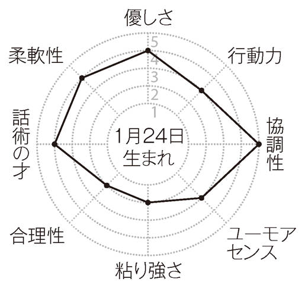
相性のいい人
視野の広い人、おしゃれな異性、遊び上手な人
相性の悪い人
合理主義者、仕事第一の人、話のわからない異性
ラッキーポイント
ショッキングピンク、高層ビル、ナイロンバッグ
適職
スタイリスト、ホテルマン（ウーマン）
あなたとこの人たち（星座＋血液型）との相性は？
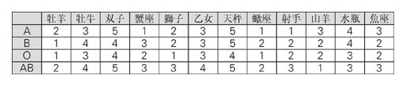
有名人 市原悦子（俳優）、尾崎将司（ゴルファー）、五輪真弓（歌手）
1 月 25 日生まれ
勉強運、家庭運
性格と運命
現実の生活より空想の世界に引かれるロマンチスト、もしくは夢想家タイプです。浮世離れしたところがあるので、お金儲けはもちろん、世渡りもかなりヘタなほうでしょう。ただ、粘り強く、探求心が旺盛なので、ひとつのことを深く掘り下げるのは得意中の得意。この点が世間の動きにうまくマッチすれば成功を勝ち取ることも十分可能です。
恋と結婚
恋の情熱は相当なもの。ただし、熱い思いを表に出さず内に秘めることが多いようです。もっとオープンになれば、恋もずっとつかみやすくなるし、愛もドラマチックに深まるでしょう。また、自分が思っている以上に結婚願望が強いようです。もちろん、自分から切り出すのは大の苦手で、相手のプロポーズや周囲の取り持ちをじっと待ちます。
人間関係
人見知りが激しいうえに不器用なところがあるあなた。職場など多くの人が集まる場所では、自分をなかなか出せないし、思うように会話もできず、悩むことが多いでしょう。あなたの場合、初めからうまくやろうなんて考えないのが正解です。すると、気が楽になって、意外とスムーズにつきあえるようになるはず。なお、あなたは生まれながらにいい家庭運を持っています。相手が同性でも異性でも家族ぐるみの交際が吉と出ます。
今後3 年間の運勢
12 年の6 月以降、快調です。まず12 年の後半は仕事が順調、人間関係も安定し、心穏やかに過ごせます。ストレス性の病気や不調もすっかり解消。13 年の前半は商才がアップ。企画やアイデアの売り込み、手作り品の販売でひと儲けできそうです。愛情面は12 年、13 年と昇り調子。愛する人と夫唱婦随の関係を築くことでバラ色の未来が開けそう。
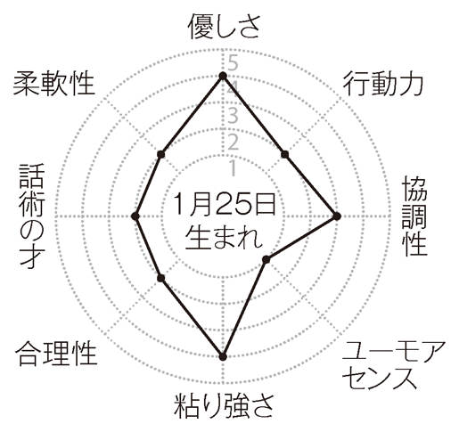
相性のいい人
優しい人、家庭的なタイプ、寂しがり屋の異性
相性の悪い人
おしゃべりな人、淡泊な異性、調子のいい人
ラッキーポイント
シルバーグレー、地下にある店、カーアクセサリー
適職
童話作家、フラワーデザイナー
あなたとこの人たち（星座＋血液型）との相性は？
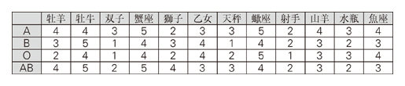
有名人 森田芳光（映画監督）、江守徹（俳優）、石ノ森章太郎（漫画家）
1 月 26 日生まれ
仕事運、友情運
性格と運命
いつも冷静で合理的に物事をこなしていくタイプです。思いつきで動いたり、途中をはしょったりしませんので、大失敗したり、仕事に大穴をあけることがなく、非常に信頼が置けます。ただ、理屈にこだわりすぎるところは少々問題ですが......。なお、仕事運に恵まれるので、男性はもちろん、女性の場合も仕事を持ち続けたほうが実り豊かな人生に。
恋と結婚
異性の前で緊張しやすく、自分の気持ちをストレートに伝えられないタイプです。好きなのに興味のなさそうな顔をしたり、せっかく誘われたのに忙しいからと断ったり......。これはメイクラブや結婚でも同じこと。素直に思いを伝えることこそ幸せになるキーポイントと心して。なお、結婚後、仮面夫婦になる恐れが。変に取り繕ったりしないで、本音をぶつけ合うこと。
人間関係
人づきあいがすごく上手というほどではありませんが、協調性が高いので組織にはすんなり順応できます。また、対異性とは違って、職場の人間関係では、こうするのが合理的と判断すればそのとおりに振る舞えるのも強みです。お局様は立てておくのが一番となれば、どんな場面でもきちっと敬意を払えるはず。交友関係では、友情が深まりやすい点にご注目。ポイントは活発に意見を戦わすこと。親友になりたい人とは本音の議論をぜひ。
今後3 年間の運勢
11 年6 月から12 年いっぱいまで高め安定運。特に社交運が活発ですから、自宅に頻繁に人を招くと幸運です。交友の輪や人脈が大きく拡大、素敵な計画が持ち上がったりして、ますます充実。また、12 年の前半はマイホームの取得、建設が思い通りに。愛情面も12 年の前半が愛の巣作りの絶好期。寝室を充実させたり、おしゃれなホテルを定宿にしたりして。
相性のいい人
理論家、現実的な人、親しみやすい異性
相性の悪い人
計画性のない人、甘えん坊、理屈に弱い上司や先輩
ラッキーポイント
サンドベージュ、オフィス街、ガラス製品
適職
教師、プログラマー
あなたとこの人たち（星座＋血液型）との相性は？

有名人 所ジョージ（タレント）、ポール・ニューマン（米、俳優）、長嶋一茂（タレント）
1 月 27 日生まれ
友情運、リーダー運
性格と運命
広い心を持つ理想主義者が多いようです。ずるい人にだまされても、「私のためを思ってのこと」などと考えるお人よしも少なくありません。確かに損をしがちですが、反面、愛すべきキャラクターと人気を集める要因に。また、けっこう行動力があり、夢を実現させる能力が高めです。子供の頃の憧れを実現させることが多いのもこの生まれの特徴です。
恋と結婚
恋でも理想を追い求めるタイプです。自分にとってベストと思える人が現れるまで本気で恋をしようとしません。そのかわり、そんな人と出会ったら、持ち前の行動力を爆発させ、自分から積極的に声をかけ、大胆に仲を深め、ゴールへ突進するでしょう。ですから、結婚は電撃的なものになるし、ハネムーンベイビーを授かることも多いようです。
人間関係
おおらかで夢を忘れないあなたは、その人間的な魅力で多くの人を引きつけるタイプです。学校でも会社でも友達を作るのに苦労したことはほとんどないはず。人に迷惑をかけられても、決して責めたりしないで笑って許すスケールの大きさは、大物の雰囲気を漂わせます。どこでも「リーダーに」と推されることが多いはず。もちろん喜んで引き受けましょう。あなたの行動力をもってすれば、たいていのことは見事にクリアできるはず。
今後3 年間の運勢
12 年が運気活発。職場やサークルで華々しい活躍を見せそうだし、レジャーの場では人気を独り占めにするシーンがありそう。どこでも誰の前でも持ち前の人のよさを発揮するのがポイントになるでしょう。愛情面は、12 年の後半が最盛期。出会いや誘いが多いうえ、一番ウマが合う人を選べばスピード婚も......。カップルは派手に遊び回るほどハッピーに。
相性のいい人
おおらかな人、アーティストタイプ、可愛い人
相性の悪い人
ポーカーフェイスの人、常識家、地味な異性
ラッキーポイント
蛍光オレンジ、高原、モバイル機器
適職
看護師、歌手、社会福祉士
あなたとこの人たち（星座＋血液型）との相性は？
有名人 モーツァルト（独、作曲家）、清水ミチコ（タレント）、ルイス・キャロル（作家）
1 月 28 日生まれ
勝負運、独立運
性格と運命
自立心が旺盛でマイペース。群れることを嫌い、なんでもひとりでやりたがります。個性にこだわる傾向も強く、人と違うところをアピールしようと変わった格好をしたり、ユニークな発言をする人が少なくありません。また、勝負強さがかなり目立ち、賭け事で大儲けしたり、仕事やスポーツで逆転勝利を収めたりすることが多いのもこの生まれの特徴です。
恋と結婚
とても積極的で、好きな人ができたら迷わずアタックをかける人。相手がシブったら押しまくる人も少なくありません。確かに積極性は大切ですが、少々やりすぎの感がなきにしもあらず。引くことも覚えたほうがいいのでは？ また、結婚願望はあまり強くありませんが、やることが早い人ですから、できちゃった婚の可能性はかなり高めです。
人間関係
行動力のあるあなた。ただ、まわりのことを考えず、ひとりで突っ走る傾向が。人の意見に耳を傾け、後輩や同僚を引っ張りながら前進すれば、よきリーダーとして高く評価されるでしょう。もうひとつ、あなたの怒りっぽさもかなり問題。自分の好きなようにならないとすぐプリプリするし、人から非難されると、相手が上司でもくってかかったりします。もっとオトナにならないと、友達は減ってしまうし、上司に疎まれつらい思いをしがちでしょう。
今後3 年間の運勢
12 年5 月までいい運気が続きます。まず11 年の後半は恋愛運が活発。職場、カルチャー教室、趣味のサークルなどでモテモテに。複数交際を楽しんでも問題化しないはず。また、出会ってすぐに深い仲になった相手とは赤い糸で結ばれている暗示も......。12 年の後半には憧れの地で新生活をスタートさせる予感あり。ひょっとすると外国暮らしかもしれません。
相性のいい人
元気な人、参謀タイプ、スポーツマン（ウーマン）
相性の悪い人
決断の遅い人、信念の人、メンツにこだわる上司
ラッキーポイント
スカーレット、紅茶専門店、ステイショナリーセット
適職
ディーラー、投資家、営業マン（ウーマン）
あなたとこの人たち（星座＋血液型）との相性は？
有名人 三浦友和（俳優）、小松左京（小説家）、福留功男（司会者）
1 月 29 日生まれ
ペット運、家庭運、愛情運
性格と運命
穏やかで協調性あふれるあなた。いつもみんなの幸せを考えたり、どうしたら人に喜んでもらえるかなどと、いろいろと心配りをしているはず。また、動物や植物が好きで、ペットや草花に囲まれた生活に喜びを見出す人が少なくありません。ガーデニングを趣味にしたり、動物愛護に携わったり、その種の仕事に就いたりすると人生が充実しそう。
恋と結婚
気性の穏やかなあなたは家庭を持つことで幸せをかみしめるタイプ。当然、早く結婚したほうがハッピーな人生に。信頼できる人に出会ったら、細かいことにこだわらずゴールを目指すべきでしょう。持ち前の優しさで相手を温かく包んでいるうち、いつの間にかゴールに到達。愛情あふれる結婚生活になるのは間違いなく、子供も3 ～4 人もうけることに。
人間関係
いわゆる「いい人」のあなたですから、職場でもどこでも周囲に好感を持って迎えられます。女性のあなたなら、お得意のこまやかな心遣いと温かな笑顔で、職場のマスコット的存在になれるでしょう。しかもあなたが幸運なのは、その穏やかな人柄のために、いくら上司に可愛がられても周囲から妬まれたりしないこと。ときどき、差し入れをしたり、チョコやキャンディをばらまいたりしておくと、この運は盤石なものになるはず。
今後3 年間の運勢
12 年から上り坂で、13 年半ばにピークが訪れます。独創性が開運のカギになるので、何をするにも自分ならではの発想ややり方を貫いて。そんなあなたに注目が集まり、やがて抜擢や推薦を受けることに。また、13 年の前半に自分らしいファッションを心がけると恋愛運が活発に。おしゃれな異性が群がったり、恋人やパートナーにますます愛されるはず。
相性のいい人
カンの鋭い人、グルメの人、花や動物が好きな異性
相性の悪い人
好奇心が旺盛な人、クールなタイプ、子供が苦手な異性
ラッキーポイント
シルバー、家の近所、ストライプ柄のシャツ
適職
トリマー、料理研究家、自然保護官
あなたとこの人たち（星座＋血液型）との相性は？
有名人 岡村孝子（歌手）、キャサリン・ロス（米、俳優）、毛利衛（宇宙飛行士）
1 月 30 日生まれ
趣味運、創作運
性格と運命
好奇心が旺盛で、興味を感じたことはすぐかじってみるタイプです。そのせいか、いつまでも若々しい感覚を保ち続ける人が多いよう。また、のみ込みがすごくいいので、何でもマスターするのが早いというのもこの生まれの大きな特徴です。さらに、創造力があり、新しいモノを作り出すのが得意で、歴史に名を残す人も珍しくありません。
恋と結婚
非常にあっさりしていて、情熱が冷めると簡単に別れを切り出す傾向がある人です。そのため、相手の本当の姿を知らずに終わってしまうことが多いよう。もっと長い目でつきあうようにしないと、真実の愛は手に入らないし、ゴールへもたどりつけません。ただし、仕事のパートナーなど、愛情以外の強い絆があるとゴールイン率はグンとアップ。
人間関係
この生まれの人はかなりマイペース。また、縦のつながりをおろそかにしがちです。そのため、組織の中では異端的な存在になることがよくあります。上司や年配者からにらまれたくないなら、もっと周囲にペースを合わせ、目上の人には敬意を払わないといけません。そうすれば、人間関係はかなり改善されるでしょう。なお、持ち前の好奇心を生かして、自分とはタイプの違う人と交流するようにすると楽しいし、学ぶことが多いはず。
今後3 年間の運勢
12 年から13 年にかけてが最も有望。努力が報われやすく、才能も開花しやすいはず。苦手なことや手に余りそうなことにも積極的に取り組んで。音楽、美術、文学など、芸術に関することは特に幸運と出ています。愛情面は12 年の前半がラッキー。シングルの人はネットで良縁をつかめそう。カップルは電話やメールで愛の言葉を囁き合うほど幸せに。
相性のいい人
個性的な人、趣味の多い人、素直な異性
相性の悪い人
おっとりした人、情熱的な異性、老成した人
ラッキーポイント
イエロー、電話局、ブリーフケース
適職
ゲーム作家、テーマパークスタッフ
あなたとこの人たち（星座＋血液型）との相性は？
有名人 長谷川町子（漫画家）、稲盛和夫（経営者）、石川さゆり（歌手）
1 月 31 日生まれ
勉強運、部下運
性格と運命
真面目で勤勉なタイプです。学生時代はしっかり勉強し、校則もきちんと守る優等生だったでしょう。社会人になっても、遅刻はせず、自分のノルマを確実に果たし、目上の人の指示は律儀に守る模範社員という人が多いはず。ただ、言われた以上の頑張りを見せる人ではないようです。もう少し向上心を持って大きな目標を追求してもいいのでは？
恋と結婚
恋ももちろん真面目です。異性を好きになると、「この思いに偽りはないか」などと自問自答しながら距離を詰めて行くはず。ただ、思い切りが悪いため、決定的な行動がなかなかとれず、トンビに油揚げをさらわれるような事態になりがち。ここというときは後先を考えず勝負に出る。これが何より大切です。結婚すると間違いなくよき妻・よき夫に。
人間関係
可もなく不可もなくといった感じです。ただ、お世辞が言えないため、先輩や上司との関係がぎくしゃくしたりしがちです。人間関係をもっとスムーズにしたいなら、「ウソも方便」と思ってあえてムズ痒くなるようなことも口にしてほしいもの。なお、よき後輩に恵まれるのもこの生まれの特徴です。日頃から教育係を務めたり、悩み相談に乗ったりしておくことです。するとあなたが困ったとき、彼や彼女らがおおいに力になってくれるでしょう。
今後3 年間の運勢
ほぼ全期間好調です。まず、11 年は友人との交流が多くなり、レジャーを頻繁に楽しんだり、サークルを立ち上げたりしそう。それを通じて新たな収入源やライフワークが見つかる暗示も......。また、12 年はリーダーや主役を買って出る好機。愛情面も12 年が勝負のとき。告白やプロポーズも強気でいけばスンナリOK が。別れ話も後腐れなく決着するでしょう。
相性のいい人
あっさりした人、不言実行タイプ、ウブな異性
相性の悪い人
押しの強い異性、コワモテの上司、遊び好きな人
ラッキーポイント
スカイブルー、スクランブル交差点、万年筆
適職
教師、学校事務職員
あなたとこの人たち（星座＋血液型）との相性は？
有名人 大江健三郎（小説家）、シューベルト（墺、作曲家）、香取慎吾（歌手）
2
FEBRUARY
月
1 日～19 日 水瓶座
20 日～29 日 魚座
2 月 1 日生まれ
事業運、独立運
性格と運命
目立とう精神が旺盛で実行力があります。人のやらないことをやりたがり、しかも見事に成功させます。グループの中では中心にいたいほうで、大勢で写真をとるときはいつも真ん中でしょう。また、頭がよく、実行力も十分と来ていますので、何をやっても人並み以上の結果を出し、早々と頭角を現す人が多いよう。独立開業する人も少なくありません。
恋と結婚
恋ではご自慢の実行力も頭の冴えも生きないようです。それは、プライドが邪魔をして、好きな人に自分から「つきあってください」などと言えないから。ついお高く構えたり、つれない態度をとったりしてチャンスを手放すことが多いのです。結婚の申し込みも夫婦生活も大体同じ。幸せになりたいなら、素直な心で接することを最優先すべきです。
人間関係
つきあい下手というほどではありませんが、どんなときもまず自分ありきという人なので、「出しゃばり」と白い目で見られがちです。有能なあなただけに、先輩やライバルにとっては目の上のタンコブと映ることも多いよう。足を引っ張られたくないなら少し自重したほうがいいでしょう。なお、古くからの友人が何かと力になってくれるのも、この生まれの特徴です。幼なじみや小学校時代の友人は大切にしたいもの。
今後3 年間の運勢
12 年が最も好調。ここ数年来、あなたを悩ませていた問題も解決に向かうでしょう。これがベストという策を積極的に推し進めればOK です。また、起業やサークルなどの立ち上げも予想外のスピードで実現するはず。愛情面も、12 年にビッグチャンスが到来。告白や交際だけでなく、長すぎた春の清算、かねてより望んでいた復縁も思い通りの展開に。
相性のいい人
仕事ができる人、心の広い先輩や上司、率直な人
相性の悪い人
独占欲が強い異性、リーダータイプ、意地っ張りの人
ラッキーポイント
オレンジ色、スカイラウンジ、帽子
適職
経営者、企画開発スタッフ
あなたとこの人たち（星座＋血液型）との相性は？
有名人 ジョン・フォード（米、映画監督）、磯野貴理（タレント）、綿矢りさ（小説家）
2 月 2 日生まれ
貯蓄運、家族運
性格と運命
繊細で傷つきやすいタイプ。人にきついことを言われると激しく動揺したり、ドーンと落ち込んだりします。自信も失いやすく、自分の能力を過小評価しがちです。「ダメだ、ダメだ」と思い込まないようにして。経済観念は思いのほかしっかりしています。損をするような買物はしないし、余分なお金はすぐ貯金に回すので、お金に困ることは少なそう。
恋と結婚
恋のアンテナが敏感なタイプです。基本的に恋には受け身ですが、自分に向けられる愛情は的確にキャッチ。相手から求められて交際を始めることが多いでしょう。結婚もしかり。相手が切り出すのをジッと待ちます。結婚後は、かいがいしくパートナーの世話を焼く傾向がありますが、少々面倒見すぎの傾向も。子供の甘やかしすぎにも注意を。
人間関係
優しいし、我も強くありませんので、人に嫌われることはほとんどないでしょう。職場の人間関係も安泰といった感じです。この生まれの人は、人に生かされる運命にあるので、心から信頼できる相手との出会いが人生を大きく変えると言っても過言ではありません。職場でもプライベートでも、そんなパートナー探しに力を入れてほしいもの。また、家族との関係も良好です。なんでも話しあえるし、旅行などを楽しむ機会も多いはず。
今後3 年間の運勢
12 年6 月から上り坂。まず12 年後半は便利な道具やメカの購入から運が開ける傾向です。13 年の後半は学ぶことに幸運が多い模様。この機に教養を深めたり、資格を取るための勉強に励んだりしましょう。豊かな未来への第一歩になるのは確実です。愛情面も13 年の後半が盛況。親切な異性と縁ができる、愛する人の優しさに幸せをかみしめるといった展開に。
相性のいい人
面倒見のいい人、聞き上手な人、情熱的な異性、家庭的な人
相性の悪い人
切れ者タイプ、おしゃべりな人、目立ちたがり屋
ラッキーポイント
ベージュ、噴水がある公園や広場、コインのついたアクセサリー
適職
バイヤー、メイクアップアーティスト
あなたとこの人たち（星座＋血液型）との相性は？
有名人 鹿島守之助（経営者）、ジェームズ・ジョイス（英、小説家）、宮地真緒（俳優）
2 月 3 日生まれ
ギャンブル運、交際運
性格と運命
明るく楽天的な性格です。ノリが軽いので、何事も深く考えずに行動するクセがあります。それでも大きな失敗をしないのは、天性のカンのよさに助けられているからでしょう。また、機敏でカンのいい人だけに、チャンスをつかむのがうまく、仕事もかなりできるほうでしょう。利殖、投資、ギャンブルでも抜け目なく利益を手にすることが多いはず。
恋と結婚
明るいし社交性もあるので、交際の機会には事欠きません。かりにフラれたとしても、すぐ次の人が現れたりして、独り身の時期はそんなに長く続かないはず。また、深く考えないあなたですから、結婚もあっさり決めてしまいがち。でも、やはり天性のカンのよさでベストな相手を選んでいることが多いので、式を挙げてすぐに離婚なんてことはありえません。
人間関係
人当たりがいいので、敵を作ることはなさそうです。友人はもちろん、職場や近所の人ともうまくやっていけるでしょう。とはいえ、あなたの要領のよさが出すぎると、「ズルいんだから」と周囲に非難されてしまいます。おいしいところを独り占めしてはいけません。時には汚れ役も買って出てください。また、あなたには公私のケジメがルーズなところがあります。私用電話など慎まないと、上司ににらまれ、仕事がやりにくくなります。
今後3 年間の運勢
12 年にピークが。それまで何かと邪魔が入っていたものが急にスムーズに運び出すでしょう。持ち前のフットワークの軽さを生かすことで商機や得するチャンスを次々つかみ、おおいに業績があがるし、フトコロも潤うはず。マンション購入など、不動産関係にもツキが多い模様。愛情面は12 年の後半が最高。略奪愛やデキ婚さえハッピーエンドに。
相性のいい人
気前のいい人、ノリのいい異性、陽気な人
相性の悪い人
体育会系の人、悲観主義者、嫉妬深い人
ラッキーポイント
アクアブルー、プラットホーム、システム手帳
適職
トレーダー、タレント
あなたとこの人たち（星座＋血液型）との相性は？
有名人 国谷裕子（キャスター）、メンデルスゾーン（独、作曲家）、檀一雄（小説家）
2 月 4 日生まれ
金運、健康運
性格と運命
感情の起伏の少ない穏やかな性格です。人前で声を荒らげることも涙を見せることも滅多にありません。生活も、刺激より安定を求めるタイプで、こうした安定志向は金銭面によく表れます。毎月コツコツと貯金をして、生命保険にも若いうちから入り、将来に備えるはず。また、健康にもよく気を使う人ですから、憂いの少ない人生を送れるはず。
恋と結婚
もちろんこちらも安定志向。危なそうな人には近づきませんし、つらい恋に身を投じることもほとんどないはず。つねに安全かどうかをシビアに判断しながら、交際を進めていくタイプ。計画性に恵まれたあなたですから、ゴールイン率は相当高め。結婚後は、生活が地味になりすぎるきらいあり。潤いを持たせる工夫を忘れないようにしたいもの。
人間関係
真面目で一生懸命な人なので、職場での信頼は厚いでしょう。ただ、あなたのよさをわかってもらうまでにはかなりの時間が必要です。と言うのも、あなたは自己アピールをほとんどしないから。できないものをできると言っては問題ですが、できることはちゃんとできると言いましょう。そこから運が開けるはず。なお、この生まれには内弁慶が多いのも特徴です。内と外の態度の落差に、周囲もビックリということがけっこうあります。
今後3 年間の運勢
12 年が安定モード。これといったトラブルもなく、仕事や家事などやるべきことを順調にこなせます。時間的に余裕が出た分、おしゃれや交友に熱心になると「ステキな人」と評判アップ。華やかな席に招かれることも少なくないはず。恋もそんな場所でつかみそう。特に12 年後半は異性の紹介や縁談が何件も舞い込み、ベストな人と結ばれる可能性が大。
相性のいい人
のんびり屋、安全運転タイプ、動物好きの人
相性の悪い人
遊び上手な異性、派手なタイプ、自己顕示欲の強い人
ラッキーポイント
オフホワイト、歩道橋、チェック柄の服
適職
銀行員、保険勧誘員
あなたとこの人たち（星座＋血液型）との相性は？
有名人 加藤剛（俳優）、山下達郎（歌手）、小泉今日子（歌手）
2 月 5 日生まれ
転居運、転職運、交際運
性格と運命
冒険的で進取の気性に富むタイプ。新しいことをやりたいという気持ちが非常に強く、そのためにはかなりの危険を冒します。また、つねに新しいものに触れていないと気分がムシャクシャしてきます。自然と行動範囲は広くなり、趣味も多くなります。転居を繰り返す人も少なくないよう。幸いなことに、環境を変えることで運が開ける傾向あり。
恋と結婚
気軽に恋を楽しむタイプ。もちろん相手は頻繁に変わります。そうしていろいろな人とつきあううち、ピタッと合う人が現れるか、もしくは妊娠ということになると、あっさりゴールインというケースがけっこう見られます。また、新しもの好きですから、結婚のスタイルは別居結婚とか、夫婦別姓といったニューウエーブ志向が目立ちます。
人間関係
ユニークでけっこう常識外れな交際をするタイプ。でも、変なことをしても笑って許してもらえる愛敬がありますので、ラッキーな人間関係と言えます。特に、持ち前のひょうきんさやお茶目なところを飲み会などで発揮すると、職場やサークルの人気者になるのは確実です。ただし、この生まれの人は時間にルーズです。みんなで何かしよう、どこかへ行こうとするたびに遅刻するようでは、せっかくの人気運も台なしになります。
今後3 年間の運勢
11 年6 月からの1 年に盛り上がりが。特に体力アップ、体質や持病の改善、ダイエットなど、体関係に星の恵みが多いよう。必要な方はぜひ取り組んでみてください。早ければ数ヵ月、遅くとも半年後には別人のような健康状態や体型を手に入れている可能性が大。愛情面は、12 年前半が最有望。自分の魅力に自信を持てば、すべて好展開を見せるはず。
相性のいい人
ユーモアのある人、正直な人、サバサバしている人
相性の悪い人
生真面目タイプ、我慢強い人、感情の起伏が激しい人
ラッキーポイント
ゴールド、広場、エンターテインメント情報誌
適職
テレビレポーター、冒険家
あなたとこの人たち（星座＋血液型）との相性は？
有名人 大地真央（俳優）、尾崎士郎（小説家）、ハンク・アーロン（米、野球選手）
2 月 6 日生まれ
おしゃれ運、芸術運
性格と運命
おしゃれで人を引きつける雰囲気を持った人です。当然、周囲に注目されますが、みずからリーダーシップをとることは滅多にありません。と言うのも責任を負うのが嫌いだから。つねに2 番手、3 番手をキープしてリーダーのサポートをするというのがハマリ役。また、美的センスがすぐれているので、絵や写真を趣味や仕事にすると人生が充実するはず。
恋と結婚
気のある素振りで相手が誘ってくるように仕向けるなど、直球勝負はしない人です。交際も、優しくしたかと思えばつれない態度をとったりと相手を翻弄するのがお得意。結婚でも、架空の見合い話を持ち出して相手に決意を促したりしがちです。思うツボということが多いのですが、落とし穴にはまることも......。駆け引きに走りすぎないよう注意を。
人間関係
人を引きつける魅力があるうえ、社交性も十分なので、人づきあいはかなり得意なほう。ただし、複雑な人間関係を嫌がって、誰に対しても一定の距離を置く傾向が目立ちます。このため、友人や知り合いの数は非常に多いのですが、親密な間柄の人は意外に少ないのが実情でしょう。イザというとき本当に力になってくれる人がいない......なんてことでは困るのでは？ 悩みを相談しあうなど、もっとつっこんだ交際を心がけたいもの。
今後3 年間の運勢
11 年6 月からの1 年に期待が持てます。特に人前で自分を表現することにツキがあるので、特技や隠し芸を披露すれば人気がアップ、コンクールやオーディションでは金的を射止める可能性も大。それを機にプロへの道が開けることも......。愛情面も、同じ1 年間に愛する人から交際や結婚を求められる暗示。結婚相談所への登録も幸せへの初めの一歩に。
相性のいい人
明るい人、社交的な人、ファッショナブルな人
相性の悪い人
依頼心の強い異性、お金に細かい人、エネルギッシュな人
ラッキーポイント
ローズピンク、ファッションビル、輸入雑貨
適職
動物カメラマン、コンパニオン
あなたとこの人たち（星座＋血液型）との相性は？
有名人 やなせたかし（漫画家）、ベーブ・ルース（米、野球選手）、福山雅治（歌手）
2 月 7 日生まれ
創作運、独立運
性格と運命
非常に個性的なタイプです。人と同じことをするのが大嫌いで、つねに独自性を強調したがります。仕事では、ルーティンワークはからっきしダメですが、クリエイティビティーを要求されるものでは素晴らしい成果を上げる人が多いようです。また、精神的にとても強い人で、海外でひとり暮らしをしても全然平気という人が少なくありません。
恋と結婚
直感に導かれて人を好きになるのが、この生まれの一番の特徴です。いわゆるひと目惚れが圧倒的に多いようです。ただ、器用なほうではありませんので、思いを叶えるまでにはかなりの時間を要します。でも、直感を信じているかぎり最後には笑うことができるのも確かです。また、それがゴールへつながりやすく、そのまま一生連れ添うことでしょう。
人間関係
非常に個性的で独自性を強調しすぎるため、サークルや職場ではどうしても浮いた存在になりがちです。また、知らないうちに敵を作ってしまうこともあるでしょう。ただ、他の人にはマネのできない独創的なアイデアを出せる人ですから、人を見る目がある先輩や上司には一目も二目も置かれ、味方にもなってもらえるはず。とはいえ、この生まれの人は独立してこそ、持てる力を最大限に発揮できるタイプなのは間違いありません。
今後3 年間の運勢
12 年から13 年にかけて大きく盛り上がります。特に家族とのつながりに幸運の女神の後押しが。親孝行、子供のしつけや教育、困っている兄弟姉妹への援助などに心を砕き、力を尽くしてはいかがでしょう？ 結束がいっそう強まり、家庭内は明るさいっぱい。恋愛面では、12 年の後半に理想のタイプと縁ができそう。地下にあるお店がその舞台に。
相性のいい人
マイペース人間、カンがいい人、セクシーな異性
相性の悪い人
我の強い人、礼儀にうるさい上司、常識家
ラッキーポイント
ワインレッド、地下街、ショートジャケット
適職
作家、イベントプランナー
あなたとこの人たち（星座＋血液型）との相性は？
有名人 阿久悠（作詞家）、小林稔侍（俳優）、宮本恒靖（サッカー選手）
2 月 8 日生まれ
不動産運、リーダー運
性格と運命
表面的にはクールな人です。でも、胸の内にはけっこう熱いものがたぎっているタイプ。また、野心があって負けず嫌い、誰かをライバルに見立てて自分を鼓舞するようなところがあります。そうして闘争心をかき立て大きな目標を達成します。なお、この生まれの人は不動産を持つと運が強くなる傾向なので、早いうちに手に入れるとよいでしょう。
恋と結婚
情熱に火がつくのに時間がかかりますが、ひとたび本気になると突っ走る傾向が。毎日のようにデートして男女の仲になったと思ったら、そのまま同棲というケースも少なくありません。周囲に反対されるとますます燃え上がり、駆け落ちなんてことも......。結婚後はさすがに無茶をしなくなり、どちらかが浮気をしないかぎり安定した生活が続くはず。
人間関係
積極的に先頭に立とうとはしませんが、潜在的な指導力はかなりのものです。班長やチームリーダーに推されるなど、トップの座につく機会があったら自信を持って取り組んで。見事に人をまとめられ、大幅に株を上げることができるでしょう。なお、この生まれの中には、野心が強すぎて、人をおとしめるような行動を取ってしまう人がけっこういます。ヘタをすると、大トラブルを招いてしまいますので、くれぐれも自重するように。
今後3 年間の運勢
12 年いっぱいまで好調域。特に12 年の後半はありのままのあなたが周囲に受け入れられる暗示です。どこでものびのび振る舞うことで、毎日が楽しく、人間関係も大きく拡大。愛情面は12 年の前半に乞うご期待。募集中の人は食べ歩きやデパ地下巡りを通じて有望な出会いが。カップルは、ふたりして互いの実家や田舎へGO 。結婚に弾みがつくことに......。
相性のいい人
忍耐強い人、誠実な人、大胆な男性、情の深い女性
相性の悪い人
ブランド志向の人、ノリの軽い人、傷つきやすい人
ラッキーポイント
マロンブラウン、神社、スチール製の名刺入れ
適職
プロスポーツ選手、デベロッパー
あなたとこの人たち（星座＋血液型）との相性は？
有名人 山田詠美（小説家）、ジェームズ・ディーン（米、俳優）、山本寛斎（デザイナー）
2 月 9 日生まれ
芸術運、人気運
性格と運命
豊かな想像力と鋭い直感力に恵まれた芸術家タイプです。心が広く気前のいい人ですが、その一方、気分屋で夢見がち、現実離れした言動で周囲の人に不信感を持たれることも少なくありません。確かに、あふれるばかりの才能で若くして頭角を現す人が多いのですが、逆に多彩な才能が災いして地道な努力を怠り大成できない人もいるようです。
恋と結婚
心の広さが際立っているので異性にはかなりモテます。ただ、恋への積極性があまり見られず、来る者は拒まず去る者は追わずというスタンスを取りがちなので、交際相手に不自由しないものの、容易に本格化しないはず。もっと本気にならないとゴールは近づいてこないでしょう。結婚後も、仕事や趣味にかまけて夫婦生活を疎かにしがちな点に注意を。
人間関係
あまり感情的ではないので、人の好き嫌いが少なく、誰とでも親しくなれる得な性分です。目上の人にずけずけとものを言っても嫌われないのは、おおらかなあなたならではの人徳でしょう。ただ、誰とでも親しくなれる反面、特に親しい人や真の味方ができにくい傾向は確かにあります。どのグループにも属さず、いつの間にか孤立してしまうなんてことも......。これはという人とは、もっと親密なおつきあいを心がけたほうがよさそうです。
今後3 年間の運勢
11 年6 月からの1 年が運気充実。仕事も趣味も自分流を貫くと確かな手ごたえが得られるはず。個性の確立にも役立ちますので、たとえ周囲の反対や非難があったとしても、自分の考え、センス、プランにこだわって。愛情面は12 年の半ばにピークが。やはり、自分の好みにこだわることでベストな相手をつかめるし、交際や結婚も理想的な形で展開。
相性のいい人
ユーモアのわかる人、頭の切れる人、リーダータイプ
相性の悪い人
喜怒哀楽の激しい人、結婚願望の強い異性、親分肌の上司
ラッキーポイント
スカイブルー、携帯電話、プラネタリウム
適職
アーティスト、テレビディレクター
あなたとこの人たち（星座＋血液型）との相性は？
有名人 秋山好古（軍人）、岩村明憲（野球選手）、あだち充（漫画家）
2 月 10 日生まれ
成功運、仕事運
性格と運命
人当たりのよい社交家に見えますが、根はかなり頑固な意地っ張り。意志が非常に強く、いったんこうと決めると何があってもやり遂げます。おかげで、誰よりも先に出世するなど大きな成功を収めやすいでしょう。ただ、若いうちは反骨精神が強すぎて道を踏み外す心配あり。特に目上の人の前での過激な発言やエキセントリックな振る舞いは慎むべき。
恋と結婚
独立心が旺盛で自由を尊ぶタチなので、結婚願望はかなり低めです。ただ、激情家の一面があるので、この人をモノにしようと思ったら、勢いでゴールまで突っ走ってしまうことが少なくありません。結婚後は、家庭よりも仕事ややりたいことに目がいきがち。なかなか子供を作ろうとしない傾向も......。悠長に構えすぎ時機を失しないよう注意して。
人間関係
人当たりはいいのですが、ユニークな発言や突拍子もない行動をとりがちで、常識的なタイプからは敬遠されがちです。でも、その一方で、知的な人や個性派からは関心を持たれ、けっこう慕ってもらえます。ただ、持ち前の反骨精神のおかげで上司や先輩とは折り合いが悪くなることが多そうです。飲んだときなど、しつこくからんだりして疎まれる恐れが高めです。また、しらふのときでも、言葉遣いや礼儀には十分気を使ってほしいもの。
今後3 年間の運勢
12 年が好調で、知的活動が実り豊か。勉強、読書、研究などに力を入れると大きな満足と高い評価が得られるはず。セミナーに参加したり、語学留学を体験したりするのも大賛成。人生の師となるような人物に巡り会えそう。愛情面は12 年の後半に乞うご期待。スポーツがらみのイベント、パーティでは運命の出会いが。真夏には急進展の暗示も......。
相性のいい人
変わり者、議論好きな男性、お茶目な女性
相性の悪い人
真面目人間、杓子定規な人、優柔不断な男性
ラッキーポイント
メタリックゴールド、ペーパーナイフ、ゲームセンター
適職
記者、ルポライター、評論家
あなたとこの人たち（星座＋血液型）との相性は？
有名人 市川由衣（タレント）、平塚らいてう（女性解放運動家）、高橋英樹（俳優）
2 月 11 日生まれ
家庭運、習い事運
性格と運命
穏やかで人当たりがよく、誰にでも優しい博愛主義者です。高い理想と深い友愛精神の持ち主でもあります。その反面、デリケートで傷つきやすい傾向も......。シビアな現実と理想とのギャップに深い挫折を味わうこともあるでしょう。なお、才能豊かな人ですが、成功を収めたいなら、あれもこれもと手を出さず、一芸に秀でるように努力すべき。
恋と結婚
穏やかで心優しいので多くの異性に好かれます。でも、気が多いタイプではありません。本当に好きな人はただひとり、それ以外の異性とは友達以上の関係には決してなろうとはしないはず。結婚はかなり早めで、家族第一のマイホーム主義者になることが多いよう。ただ、社交性も備えているので、友人が大勢集まる賑やかな家庭になることも......。
人間関係
恋愛以外の人間関係でも、あなたの優しさや協調性の高さはおおいに生きます。黙っていても、あなたと友達になりたいという人が次々と現れるはず。ただ、ひとつ注意したいのは、誰とでもいい関係を保ちたいと思うあまり、あちらを立てればこちらが立たずという状態になりやすい点です。職場では先輩や同僚にいいように使われてしまうという事態にもなりがちです。はっきりノーと言ったり、自分の立場を鮮明にする勇気も必要です。
今後3 年間の運勢
12 年が高めで安定した運気です。仕事でも何でも人の勧めを前向きに受け止めることで幸運の扉が開きます。「やってみない？」と言われたことはとりあえず乗ってみましょう。心から楽しめたり、才能開花のきっかけになったりしますから。愛情面では、12 年後半に勝負運が出ている点にご注目。たとえ形勢不利に思えても一か八かトライして損はないはず。
相性のいい人
気配り上手な人、気のいい上司、一途な異性
相性の悪い人
マイペース人間、お節介な人、金銭感覚の鋭い人
ラッキーポイント
シルバーグレー、電子レンジ、病院
適職
稽古事の先生、トリマー
あなたとこの人たち（星座＋血液型）との相性は？
有名人 鳩山由紀夫（政治家）、唐十郎（劇作家）、折口信夫（国文学者）
2 月 12 日生まれ
アタック運、会話運
性格と運命
クールでドライな性格をユーモアで包んでいるのがこのタイプ。ひょうきん者に見えますが、実は計算高い合理主義者です。よくジョークを口にしたりおどけて見せたりしますが、それも腹に一物あってのことというケースが多いよう。また、頭が切れ、先のことが見えすぎる傾向も......。つい「やってもむだ」という発想になりやすい点に注意して。
恋と結婚
異性に気軽に声をかけ、ジョークで気を引くのが上手なので、気になる人とすぐに仲良くなれるはず。ただ、クールな人ですから、愛を深めるのは下手なほう。何年つきあってもBF やGF のままというケースも少なくありません。そのため、結婚はどうしても晩婚に。ただ、先を見通す目を持っているので、いったん身を固めれば破綻とは無縁でしょう。
人間関係
楽しい人ですから、友達を作ったり、先輩に気に入られたりするのは得意中の得意。相手を飽きさせない話術で有力なコネや人脈をゲットするのも上手でしょう。ただ、交流が深まって、楽しい会話の裏に隠された計算が見えたりすると、途端に信用を失ってしまいがち。切れ者のあなたですが、頭に頼りすぎるのは考えもの。もっとハートでコミュニケーションするようにしてください。そうすれば、人間関係はいっそう豊かに。
今後3 年間の運勢
12 年が上昇運。特に創作活動やクリエイティブな仕事に力を入れると素晴らしい結果を出せるはず。新たに始めるのも開運の糸口に。なお、11 年は体調がぐずつき気味。無理すると寝込むことになりがちなので、しっかり体をいたわって。愛情面は、12 年後半に情熱的な愛情表現がツボにハマる暗示あり。意中の人には熱い眼差しを、恋人とは熱い抱擁を。
相性のいい人
インテリタイプ、話題の豊富な異性、才能豊かな人
相性の悪い人
情の深い異性、冗談が通じない人、堅物の上司
ラッキーポイント
ブルーグリーン、インターネットカフェ、ノートパソコン
適職
コメディアン、カウンセラー
あなたとこの人たち（星座＋血液型）との相性は？
有名人 木村太郎（ジャーナリスト）、リンカーン（米、大統領）、植村直己（冒険家）
2 月 13 日生まれ
成功運、援助運
性格と運命
一見自由奔放な人のように思えますが、意外と真面目でお堅いところのあるタイプ。変わった格好をしたり、突拍子もないことを言ったりするものの、仕事ぶりやライフスタイルは意外と堅実で、地に足がついています。また、頭の回転がシャープで、しかもあらゆる努力を惜しまないので、いずれの分野でも一流になる可能性が高い人でも......。
恋と結婚
恋に関しては奥手です。高校生ぐらいまでは恋愛感情にとらわれることなく、友達として異性に接することが多いでしょう。ただ、いったん意識しだすと、がぜん積極的になって大胆に思いを打ち明け、真剣に愛を育てていきます。そして、地に足がついているあなただけに、双方の親ともよく相談しながらゴールイン。結婚生活は安定度バツグン。
人間関係
鋭い知性と人なつこさを兼ね備えたあなたですから、人間関係はとても穏やかにして豊かです。よき仲間に恵まれ、何かと助けられることでしょう。ただ、それと同時に、好き嫌いの激しい一面を秘めています。嫌いな人に対しては攻撃的な行動こそとりませんが、つい心を閉ざしてしまいがちでしょう。それが関係の薄い人であればさほど問題になりませんが、直属の上司であったりすればおおいに困りもの。努めてオープンになる努力を。
今後3 年間の運勢
11 年からのほぼ2 年間好調域。まず11 年は、先輩との交流が物心両面で得るもの大。親しく交わり、何かと相談を持ちかけて。12 年は、人間関係はイマイチですが、仕事や金銭面は発展性あり。特に副業を始めると順調に収入があがり、本業化の道も見えてきそう。愛情面は11 年後半がラッキーです。小さな親切が大きな愛となって返ってくるはず。
相性のいい人
純朴な人、甘え上手な異性、何にでも前向きな人
相性の悪い人
意地っ張り、プライドが高い異性、そそっかしい上司
ラッキーポイント
ブルーグレー、ワープロソフト、講習会や研修会
適職
教師、研究員、システムアナリスト
あなたとこの人たち（星座＋血液型）との相性は？
有名人 ジョルジュ・シムノン（仏、小説家）、竹宮惠子（漫画家）、矢野顕子（歌手）
2 月 14 日生まれ
友情運、旅行運
性格と運命
自由人とはまさにこの人のこと。何ものにも縛られず自由気ままに行動するし、常識を軽々と飛び越えた意見を口にすることも多いはず。また、多芸多才なのもこの生まれの大きな特徴。何にでも興味を持ってさまざまなことに手を出します。しかも、出来は人並み以上と来ていますので、周囲から憧れの眼差しを向けられることも少なくありません。
恋と結婚
恋の目覚めが早い人です。初恋は小学校の低学年、社会に出た時点で恋愛体験は10 回以上という人も少なくありません。また、安定より刺激を求めるのは言うまでもなく、わざわざ障害のある恋に飛び込む人もけっこういます。そのせいか、結婚は勢いに任せて10 代でという超早婚型か、独身貴族を楽しみすぎての超晩婚型のどちらかでしょう。
人間関係
友情には恵まれます。身勝手な面はマイナスですが、明るくてさっぱりした気性ですから、同年輩や年下の人の人気は高く、楽しむことも上手なので遊び友達には不自由しないでしょう。ただ、非常識なところがあるために、年上の人には疎まれる傾向も......。特に職場では、上司にスポイルされる心配もありますから、正しい敬語を使ったり、ルールをきちっと守ったり、うまく立てるなどして、後ろ指をさされないように注意すべきです。
今後3 年間の運勢
11 年6 月からの1 年が上り坂。よい生活習慣が身につきやすい点にご注目。早寝早起、一日一善、定期的な運動など心がけては？ 心身ともにヘルシー＆チャーミングになるのは間違いなし。また、早めの出社もおすすめです。それだけで仕事の出来がグンと向上。愛情面は12 年の前半に、玉の輿や逆玉に乗れる予感が。既成事実先行策がうまくいきそう。
相性のいい人
車好きの人、遊び上手な友人、個性派、天才肌の人
相性の悪い人
生真面目な人、シャイな異性、保守的な上司
ラッキーポイント
朱色、バイク、エアポート
適職
ツアーオペレーター、フリーライター
あなたとこの人たち（星座＋血液型）との相性は？
有名人 酒井法子（歌手）、佐伯泰英（作家）、小林正樹（映画監督）
2 月 15 日生まれ
玉の輿運、人気運、社交運
性格と運命
いつも笑顔を絶やさない社交家です。春風のような爽やかさがあり、多くの人に愛されます。また、調整能力に長けているので、モメ事の仲裁をさせたらあなたの右に出る人はいないはず。ただ、その笑顔の裏には冷徹な計算も......。もちろん陰謀を企むほど悪質ではありません。おおむね人生行路は順調ですが、策士策に溺れることもあるので注意して。
恋と結婚
知性と愛想のよさをあわせ持つ人なので、職場やサークルで憧れの的になっても少しも不思議ではありません。学生時代は、クラスにひとりやふたりは必ずいるヒーロー、マドンナタイプだったでしょう。当然、相手から熱心に求められて交際スタートというケースが圧倒的に多いはず。結婚は、玉の輿や逆玉に恵まれるなどとてもラッキーな展開に。
人間関係
天性の社交術を身につけているあなただけに、よい人間関係を築き、保つことにかけては名人級です。どんな環境にもすぐに溶け込め、ほとんどの人に好印象を与えられるでしょう。一生を通じて人間関係で大きな不運に見舞われることはまずないはず。また、職場では年上の人に可愛がられ、必ずと言っていいほど引立てにあずかれます。ただし、その幸運を独り占めにしてはツキが落ちます。まわりの人に親切という形で分けてあげて。
今後3 年間の運勢
全般的に厳しそう。ただ、12 年は対人面に明るさが。特に古い縁の復活にツキがあるので旧交を温めるのがおすすめです。それを機に新たな楽しみやチャンスが到来。なお、11 年の転居・転職は後悔の元。今しばらく現状で我慢を。愛情面では12 年の復活運に期待して。昔の恋人とよりを戻したり、うまくいっていない恋人と一からやり直すのは特に吉。
相性のいい人
話題の豊富な人、おしゃれな男性、清楚な女性
相性の悪い人
疑い深い人、細かい女性、潔癖性の人、身なりにかまわない男性
ラッキーポイント
薄紫色、遊歩道、ストライプ柄のシャツ
適職
各種コーディネーター、サロンやクラブ経営
あなたとこの人たち（星座＋血液型）との相性は？
有名人 近藤正臣（俳優）、浅田美代子（タレント）、白土三平（漫画家）
2 月 16 日生まれ
趣味運、異性運
性格と運命
思慮深く、自分の内面をじっくり見つめるタイプです。と同時に、適度な社交性を備えているので、人前では穏やかな表情を浮かべています。ですから、決して暗いという印象はありません。ただ、物事を深く考えすぎてなかなか行動に移れないのはちょっと問題。現実的なことに疎く、金銭問題で足をすくわれることが多い点にも注意しましょう。
恋と結婚
穏やかさの中にもどこかセクシーなムードが漂うのがこの生まれ。異性を引きつけるパワーは十分です。ただ、異性を理想化しすぎる傾向があるため、実際に交際すると幻滅を味わうことが多いよう。そんなこんなで、あなたのゴールインはかなり遅めになるでしょう。そのかわり、人間的に成熟したうえでの結婚ですから、絆は揺るぎのないものに。
人間関係
内向的なあなたですが、意外と人づきあいは上手なほう。初対面のときはさすがに構えてしまいがちですが、二度目、三度目ともなれば自分から話題を出していい雰囲気を作れますし、親しみが深まれば悩みを打ち明けあうなど心を開いて接するはず。ただ、仕事関係のつきあいとなると、あなたの考えすぎが災いして、いまひとつしっくりいかないことが多そうです。特に上司の気持ちをあれこれ推し量るのは、疲れるだけと心すべき。
今後3 年間の運勢
12 年6 月からの1 年にチャンスが多そう。職場ではやりたかった仕事が回ってきたり、プライベートでは華やかなスポットライトを浴びる機会が何度もあるはず。特に女性は天職やライフワークに巡り会う可能性が大。愛情面は、12 年が発展的。社交的になればなるほどモテ運アップ。カップルも連れだって会合やパーティへ。それを機に公認の仲に。
相性のいい人
趣味人間、夢を語れる人、誠実な男性、気のいい女性
相性の悪い人
お節介な人、お金に細かい女性、パワフルな男性
ラッキーポイント
ダークレッド、パソコン、国際展示場
適職
ケースワーカー、各種コンサルタント
あなたとこの人たち（星座＋血液型）との相性は？
有名人 オダギリジョー（俳優）、多岐川裕美（俳優）、高倉健（俳優）
2 月 17 日生まれ
勉強運、結婚運
性格と運命
切れ者という言葉がピタリとはまるタイプです。頭の回転が速いし、理解力、洞察力も優れています。一を聞いて十を知るところがあり、他の人にはマネのできない鋭い指摘をよくします。性格的には慎重ですが、イザというときは大胆な人に変身。仕事でもなんでも「デキる人」であるのは間違いありません。また、年を重ねるにつれて大物の風格が......。
恋と結婚
若いうちは実際の年齢より老けて見え、異性からは人気薄。でも、20 代後半から長所が表に出るようになり、オトナの色気も漂うようになってモテモテに。交際の申し込みが殺到する人も少なくありません。結婚も遅いほうがいい相手に巡り会えるので、焦らないでじっくり構えるのが正解。結婚生活は間違いなく安定し、経済的にも恵まれます。
人間関係
周囲の人を鋭く観察し、厳しく評価を下しているのが切れ者のあなた。そのシビアな指摘が相手をギクッとさせるのは間違いないでしょう。そんなところが、周囲の人に「油断のならない人」という印象を与え、いつの間にか孤高の人になってしまうことも十分考えられます。能ある鷹は爪を隠すもの。相手のウソやごまかしに気づいても、ズバッと言わず、オブラートにつつんでやんわりと指摘して。そして、表情はいつも穏やかにを心がけましょう。
今後3 年間の運勢
12 年の5 月まで昇り調子。自分の意見や考えが通りやすいので、職場でもどこでもどしどし主張、提案を。一躍、時の人となるなど、存在感がグンとアップ。抜擢、昇進、引き抜きなどに結びつく予感も......。愛情面は、12 年の前半が至福のとき。長い片思いがやっと報われたり、カップルは結婚を誓い合ったりしそう。ドライブや旅行がそのきっかけに。
相性のいい人
知性派、公私のけじめがつく人、心の温かい異性
相性の悪い人
アバウトな人、ロマンチスト、自慢話の多い上司
ラッキーポイント
ブラウンゴールド、多機能ウオッチ、ターミナルビル
適職
キャスター、検事、弁護士
あなたとこの人たち（星座＋血液型）との相性は？
有名人 舞の海（力士）、マイケル・ジョーダン（米、バスケットボール選手）
2 月 18 日生まれ
アタック運、友情運
性格と運命
内に矛盾を抱えた複雑な性格です。理想と現実、利己主義と奉仕の精神などの葛藤が常に心の中にあり、それが大きな力を生み出す場合と、逆にみずからを縛ってしまうケースがあります。そんなあなたの運を開くカギはよき友を得ることです。友人と本音でやりあったり、助け合ったりすることで進むべき道が見えたり、成功を手にしたりするはずです。
恋と結婚
恋愛願望が強く、熱心にアプローチするのでゲット率は超高め。相手が理想の人と思えた場合は、20 歳そこそこでゴールインということも十分ありえます。ただ、" "
人間関係
根は社交的で朗らかなタイプ。初対面の人とも目上の人ともリラックスして応対できるのが強みです。ただ、自分の地位が上がるとワンマンになりがち。目下の人に尊大な態度をとって嫌われないよう十分注意したいもの。また、複雑な性格の人だけに、本当の自分をわかってもらうのに相当苦労するでしょう。でも、「どうせ理解してもらえない」とあきらめては孤独感を深めるだけです。心をオープンにして辛抱強く理解を求めて。
今後3 年間の運勢
12 年が有望です。特に前半は、それまで我慢していたことを実行に移すチャンス到来。起業、独立、転職なども思いのほかスムーズに実現しそう。12 年の後半になると対人運が活発に。礼状や中元・歳暮など儀礼への心配りが人脈拡大に思いのほか役立つはず。愛情面も12 年後半がラッキー。とりわけ国内国外を問わず、旅先が夢のような出会いや至福の時の舞台に。
相性のいい人
心の広い上司、洞察力のある人、率直な人
相性の悪い人
単純な人、奥手な異性、寡黙な人
ラッキーポイント
パープル、ヘルスメーター、インテリジェントビル
適職
エッセイスト、セクレタリー
あなたとこの人たち（星座＋血液型）との相性は？
有名人 オノ・ヨーコ（ミュージシャン）、中村敦夫（俳優）、高島彩（アナウンサー）
2 月 19 日生まれ
子宝運、人気運
性格と運命
ひとことで言えば外柔内剛タイプです。一見ひょうひょうとして軽い感じを受けますが、内に激しい情熱と強い意志を秘めています。へらへらしながらもやるときはやる、遊んでいるようでいて実はしっかり頑張っている......そんな人も少なくありません。また、内に秘めた情熱が一か八かの冒険的な行動となって表れることがよくあります。
恋と結婚
軽いイメージの人ですから、異性はとっつきやすいでしょう。気軽に遊びに誘ってきたりしてすんなり交際が始まるはず。そして、交際が本格化するにつれ、情熱家に変身。学生結婚、国際結婚も少なくないし、略奪愛に走ることも......。結婚後は、たまに魔が差すことはあるものの、基本的にはパートナーを深く愛し続け、子供もすぐにできるはず。
人間関係
よく冗談を口にする楽しい人だし、やるときはやるという人でもあるので、サークルでも職場でもかなり人気が高いはず。ただ、その一方で、ひょうひょうとしたイメージとは裏腹な反骨精神を胸の内に秘めています。周囲の不正行為を目にしたり、頭ごなしに怒鳴りつけられたりすると、激しく抗議して周囲を驚かせることがけっこうあります。上司など、目上の人に噛みついて冷遇のきっかけを作ったりしがちな点にも注意が必要でしょう。
今後3 年間の運勢
12 年に盛り上がりが見られます。特に人間関係が大きく広がることでさまざまな幸運が訪れそう。趣味のサークル加入や地域活動への参加がおすすめです。なお、13 年は金運が悪化。財布、通帳、クレジットカードなどの紛失、盗難に十分注意を。愛情面は、12 年の半ばが本格的な恋の季節。シングル・ペアとも本気を出せば何でも期待通りになるはず。
相性のいい人
アイデアマン、勇気のある人、いたずら好きな人
相性の悪い人
頑固な人、金銭に細かい人、気取り屋
ラッキーポイント
山吹色、アイデア商品、レジャーランド
適職
警察官、ガードマン（ウーマン）、証券外務員
あなたとこの人たち（星座＋血液型）との相性は？
有名人 中島美嘉（歌手）、村上龍（小説家）、財津和夫（歌手・作曲家）
2 月 20 日生まれ
ペット運、家庭運
性格と運命
敏感で喜怒哀楽の激しいタイプ。些細なことで泣いたり笑ったりするお天気屋とも言えます。ただ、根が純情でお人好しですから、わがままという感じはあまりしません。人に迷惑をかけると、相手が恐縮するほど一生懸命謝ったりする好人物です。また、生涯ペットを飼ったり、動物学者になったりと、動物と縁の深い人生を送る人が多いようです。
恋と結婚
異性の世話を焼くのが大好きな人。また、それが上手と来ていますから、相手にとても感謝されます。女性なら彼の部屋を訪ねて掃除、洗濯、料理をしてあげる。男性なら荷物持ちや運転手を進んで引き受けたり、部屋の棚をつってあげたり......。そんなつきあいを続けるうち、着実に愛が深まってめでたくゴールインというパターンが多いようです。
人間関係
恋以外の人間関係でも、あなたの世話焼き能力はおおいに役立ちます。後輩の世話係や教育係を命じられたら喜んで引き受けましょう。他の誰よりも目立った成果をあげられ、鼻高々になれるはず。また、先輩や上司のプライベートな世話を焼くのもおすすめです。あなたなら嫌味なくできるので、相手に喜ばれ、目をかけられるきっかけに。なお、約束をドタキャンする傾向が。慎まないとせっかくの好運をふいにすることになります。
今後3 年間の運勢
13 年に大きく盛り上がる運気です。仕事では、いい話が舞い込んだり、抜擢を受けたりして念願が叶いそう。プライベートでも、夢の実現に向けて頑張れば期待以上の好結果が。とりわけ前半は周囲の理解が得られやすいので、それまであきらめていた計画もスムーズに進展するはず。愛情面は同じく13 年が好調。障害の多い恋やシークレットラブにも明るい見通しが。
相性のいい人
甘えん坊の異性、家庭的な人、庶民派、情が細やかな人
相性の悪い人
一匹狼タイプ、インテリの男性、気位の高い女性
ラッキーポイント
クリーム色、観葉植物、郵便局
適職
獣医師、飼育員、インストラクター
あなたとこの人たち（星座＋血液型）との相性は？
有名人 長嶋茂雄（野球監督）、アントニオ猪木（プロレスラー）、志村けん（コメディアン）
2 月 21 日生まれ
情報運、人気運、交際運
性格と運命
カンの鋭い敏感なタイプです。頭も口もよく回り、目から鼻へ抜けるような賢さを感じさせる人も少なくないはず。ただし、根が善良な人ですから、才気煥発でも油断がならないという印象はありません。また、好奇心が旺盛で、かなりミーハーなのもこの生まれの特徴です。流行に関係した仕事や活動で才能を開花させる可能性が高いでしょう。
恋と結婚
持ち前のカンのよさで異性の心を的確に見抜いて有利に恋を進めるタイプ。ユーモアセンスもありますので、好きな人とケンカしそうになってもジョークで無事切り抜ける......そんな交際上手の一面を持っています。ただ、巣作り願望はかなり低めで、なかなか結婚に踏み切らない傾向あり。独身貴族を楽しみすぎて婚期を逃さないよう注意を。
人間関係
鋭いことや面白いことを口にして、周囲の人気を勝ち取るタイプ。仕事も器用にこなすほうなので、職場ではかなり目立つ存在です。ただ、パワーや粘り強さに欠けるので、徹夜でやらなくてはいけないといったときはヘナヘナとなりがちです。でも、そんな一面もまわりから見れば愛敬と映って、意外と人気アップに役立ちますが......。なお、情報通の友人や同僚と親しくすると、何かと得したり、助けられる暗示があります。
今後3 年間の運勢
11 年6 月以降、好調運が続きます。特に12 年は向かうところ敵なしの強運期なので、仕事でも何でも攻めまくって大勝利、大成功を収めそう。得意分野では第一人者にのし上がる可能性も大。また、13 年前半は美容運が好調。容姿に磨きをかけるほど男前度、いい女度がアップして、異性にモテモテに。口説きや告白も驚くほどスムーズにいくはず。
相性のいい人
物知りな人、流行敏感人間、ひょうきんな異性
相性の悪い人
カンの鈍い人、生真面目な人、タフな先輩や上司
ラッキーポイント
レモンイエロー、放送局、キャラクターグッズ
適職
雑誌編集者、理・美容師
あなたとこの人たち（星座＋血液型）との相性は？
有名人 サム・ペキンパー（米、映画監督）、大前研一（評論家）、酒井美紀（俳優）
2 月 22 日生まれ
愛情運、芸術運
性格と運命
ナイーブでデリケート、根っからのロマンチストで、子供の頃に抱いた夢をいつまでも忘れないタイプです。ただし、実行力に欠けますので夢のままで終わってしまうことも多いよう。周囲に力を借りたりして最後まで追い続けるよう努力して。なお、子供の気持ちを察する能力が抜群です。保育士、幼稚園や小学校の先生は天職と言えるでしょう。
恋と結婚
やはり夢見るばかりで行動に踏み出さない傾向が。誘いや告白ができないなら、せめておしゃれや仕草で異性を引きつける努力をすべきです。また、人一倍優しいあなたですから、そこを生かせば楽に相手の心をつかめるはず。特に、酔い潰れた人を介抱したり、病気でふせっている人の世話を焼いたりするのは、愛を育み、深めるうえで効果満点。
人間関係
傷つきやすいあなただけに、人間関係ではかなり苦労するでしょう。自分の気持ちをなかなか表に出せないし、周囲の何気ないひとことに傷つくことも多いはず。そのかわり、人の心の痛みが手に取るようにわかるので、失敗した同僚や挫折した後輩を優しい言葉などで癒してあげれば、心から信頼されることになるでしょう。なお、あなたはお年寄りに好かれる運も持っています。義理の親とも周囲が驚くほどうまくやれそう。
今後3 年間の運勢
13 年がかなり有望。職場でもどこでも、また、誰に対しても細かく気を遣いましょう。すると確実に評判が高まって、楽しい誘いや得する話が次々と入ってきます。なお12 年は、金銭面での冒険を避けるべき。儲かるはずが真逆の結果になりがちです。愛情面は、13 年にいいことが多い模様。特に異性からの急な誘いは幸運の前触れなので迷わずOK を。
相性のいい人
気の優しい人、フェミニストの男性、医療や福祉関係の女性
相性の悪い人
気性の激しい人、口の悪い上司や先輩、ドライな人
ラッキーポイント
ベビーピンク、詩集、フラワーショップ
適職
保育士、幼稚園や小学校教師
あなたとこの人たち（星座＋血液型）との相性は？
有名人 佐々木主浩（野球評論家）、加納典明（写真家）、都はるみ（歌手）
2 月 23 日生まれ
ギャンブル運、部下運
性格と運命
内気で警戒心が強いほうですが、行動力があるので、仕事でも何でもいったん動き出せばテキパキと処理することができる人です。新しい環境でも最初は臆することもありますが、慣れてくると水を得た魚のように自由に動き回り、みるみる成果を上げるでしょう。また、カンが鋭く、その気になればギャンブルでひと財産築くことも可能です。
恋と結婚
こちらも初めダメで、最後は花マルという傾向です。初対面の異性の前ではひとこともしゃべらなかったりしますが、顔を合わせる機会がふえるにつれて口数が多くなり、デートに誘う勇気も出てきます。こうなると、根が優しいあなたですから、何かと親切にしたりして距離を着実に詰めていくはず。そして感動的なプロポーズでハッピーエンドに。
人間関係
基本的には、周囲に自分を合わせるタイプですから人間関係のあつれきは少ないほうです。ただ、初顔合わせに弱いところがありますので、新しい環境に入った当初はなかなか打ち解けられず、孤立感を味わうことが多いでしょう。できるだけ早く警戒心を解くことが打開のカギと言えそうです。なお、もともと面倒見のいいあなたのこと、職場でもどこでも古株になるに従って後輩や部下に慕われる運を持っていることを覚えておきましょう。
今後3 年間の運勢
11 年後半と13 年がラッキーです。まず前者のほうは金運に追い風が。本業での収入アップもさることながら、ギャンブルやクジでの小遣い稼ぎに成算あり。後者のほうは家庭環境の充実を図るのがグッドです。家の改築や改造、庭作りなど大満足の結果に。愛情面は13 年の前半が実りのとき。心のこもった差し入れ、プレゼント、手助けが幸せをお約束。
相性のいい人
のんびり屋、人情家の上司、素直な後輩や部下
相性の悪い人
なれなれしいタイプ、言葉遣いの乱暴な人、マイペースの人
ラッキーポイント
ロイヤルパープル、カジノ、キャンバス地、ブーツ
適職
看護師、気象予報士、投資家
あなたとこの人たち（星座＋血液型）との相性は？
有名人 池田満寿夫（版画家）、中島みゆき（ミュージシャン）、野口五郎（歌手）
2 月 24 日生まれ
社交運、交際運、玉の輿運
性格と運命
のんきでおっとりした性格です。仕事が嫌いというわけではないものの、生活や交友を楽しむほうがずっと好き。スポーツ、芸事、コレクションなど趣味が多く、食い道楽や着道楽の人も他の生まれに比べてずっと多いようです。ただ、お金をかなり使うので、相当稼いでもなかなか貯まりません。将来を考えるともっと貯蓄に目を向けるべきでしょう。
恋と結婚
社交性があって物怖じしないタイプ。超素敵な人の前でもあがらないので、レベルの高い相手をつかむ可能性が高めです。また、年長者に「育ちがよさそう」と好感を持たれ、玉の輿や逆玉に乗ることも......。ただ、のんきな人なので、好きな人や交際相手を他の人にさらわれる心配がなきにしもあらず。キメるべきことは早めにキメるようにして。
人間関係
社交性に加えて協調性も十分ですから、難しい職場の人間関係もあなたなら楽勝でしょう。社内で敬遠されているお局様だって、相手のウイークポイントを巧みについて心をつかんでしまうはず。飲み会やグループレジャーの話をまとめるのも上手ですし、パーティを主催すれば、見事なホスト、ホステスぶりでまわりの人をうならせることでしょう。その才能を仕事や習い事に生かせば、幸運をたくさんつかめるはず。
今後3 年間の運勢
13 年がハイレベル。強い意志を持って臨んだことはたいてい叶ってしまうでしょう。大きな計画やビッグプロジェクトも、「何が何でも成功させる」の意気込みで推進を。また、新たに趣味を始める好機。生き生きとした暮らしが実現。愛情面も、13 年に隣の席や近所の異性と恋の予感。誘いを受けたら迷わず応じて。カップルは自宅が愛の泉に。同棲も吉。
相性のいい人
遊び上手な人、多趣味な異性、お坊っちゃま・お嬢様タイプ
相性の悪い人
せっかちな人、非社交的なタイプ、心配性の人
ラッキーポイント
マリンブルー、ホテルのパーティ会場、シルクの服
適職
料理研究家、ソムリエ、グランドホステス
あなたとこの人たち（星座＋血液型）との相性は？
有名人 草野仁（司会者）、アラン･ プロスト（仏、レーサー）、岩佐真悠子（タレント）
2 月 25 日生まれ
愛情運、ギャンブル運
性格と運命
シャイで口数が少なく、見るからに恥ずかしがり屋という人が少なくありません。能力的には、洞察力にすぐれ、物事の本質を見抜く目を持っている点が目立ちます。モメ事がおきれば、問題点を鋭く指摘して周囲を驚かせることがしばしばでしょう。しかし、実行力がイマイチなので、解決や収拾は他の人に任せたり、一緒に取り組んだりするのが賢明です。
恋と結婚
情が深く、いったん好きになった人はとことん愛し抜くタイプです。ただし、こちらでも行動力不足がネックとなって愛の成就は遅くなりがち。「この人！」と確信したら、人生を懸けるつもりで素早く行動に移ってください。他の人にさらわれでもしたら一生後悔することになるでしょう。もちろん、その人とは生涯連れ添うことになるはずです。
人間関係
遠慮深く控えめなタイプ。話し合いの席では黙っていることが多いし、物事に積極的に取り組む姿勢も希薄ですから、目立った評価は受けないはず。ただ、つまらないことを言わないし、何よりも口が堅いので、「この子は信用できる」などと、一部の上司や先輩からは確実に評価されます。なお、つきあいを億劫がる傾向がありますので、アフター5 の誘いも断ってばかりでしょう。2 回に1 回は乗るようにしたほうが仕事もやりやすくなるはず。
今後3 年間の運勢
13 年が明るいムード。とりわけ人間関係が安定し、誰とでもいい関係を保てそう。家にちょくちょく人を呼ぶなどしてネットワークを広げておけば、以後の人生に多くのメリットがある暗示。なお、11 年6 月からの1 年は事故や事件に巻き込まれがち。危機管理を徹底させる必要が。愛情面は13 年、パーティでの出会い、家族ぐるみの交際に星の恵みが。
相性のいい人
ウソをつかない人、無口な男性、控えめな女性
相性の悪い人
ミーハーな人、噂好きな異性、好奇心の強い人
ラッキーポイント
ワインレッド、カウンターバー、クリアファイル
適職
経理事務員、各種アナリスト
あなたとこの人たち（星座＋血液型）との相性は？
有名人 植木等（コメディアン）、中澤佑二（サッカー選手）、ジョージ・ハリスン（英、ミュージシャン）
2 月 26 日生まれ
投資運、結婚運
性格と運命
普段は従順な人ですが、ここという場面では自分の考えをきっちり通す強さを持っています。交渉事では名を捨て実を取るタイプ。相手に勝ったという思いを抱かせつつ、おいしいところはしっかりいただきます。ただ、根が善良な人ですから、いただきすぎたと思ったら半分返す人のよさも見せます。また、生涯を通じて利殖で得する傾向が。
恋と結婚
相手を立てたり持ち上げたりが上手なタイプ。髪形を変えてくればほめ言葉を忘れませんし、ちょっとスリムになった程度でうまいことおだてるし......。話上手なあなただけに結婚だってとてもスムーズ。問題があるとすればおしゃれ心がイマイチな点。結婚前はまだしも、結婚後は手抜きが目立ちそう。いつまでも魅力的な夫・妻でありたいもの。
人間関係
素直さとソツのなさをあわせ持つあなたですから、交友関係も職場の人間関係もスムーズそのもの。特に上司、先生、先輩など、目上の人にはつねに敬意を払うし、ヨイショがごく自然にできますから、可愛がられること請け合いです。やりすぎないかぎり、昇進や出世にもきっと役立つことでしょう。また、犠牲的精神が発達していますので、縁の下の力持ちにも十分なれるあなたです。幹事や世話役を引き受ければ人望が高まるはず。
今後3 年間の運勢
13 年にピークが訪れます。ただ、12 年後半は試練運なので、さまざまなトラブルに遭いがちです。それらを独力で乗り切ることで実力がつき人望もアップ。13 年には職場、地域、趣味の教室などでトップランナーとしてブレイクしそう。愛情面は13 年の前半が華やかです。二股や浮気もうまく切り抜け、幸せをまんまと手中に。出会いはベイエリアで。
相性のいい人
常識的な人、社交家、苦労人の上司
相性の悪い人
マイウエイタイプ、ブランド大好き人間、見栄っ張り
ラッキーポイント
えんじ、クレジットカード、ビアホール
適職
セールスマン（ウーマン）、ファイナンシャルプランナー
あなたとこの人たち（星座＋血液型）との相性は？
有名人 岡本太郎（画家）、桑田佳祐（歌手）、三浦知良（サッカー選手）
2 月 27 日生まれ
人気運、結婚運、援助運
性格と運命
おおらかで心優しい性格です。損をするのがわかっていても、人のために一生懸命汗をかいたり、勝ちを譲ったりすることも......。根っからのお人好しと言えるでしょう。また、ケチケチしたところがまるでなく、お金でも物でも労力でも惜しみなく使ったり、人に与えたりします。このためあまり貯まりませんが、人には気前のいい人と好かれます。
恋と結婚
人柄がよく気前もいいうえ、華やかな雰囲気もありますので、どこでも異性にモテモテです。自分から動かなくても交際相手に不自由することはないでしょう。結婚だって、何人もの候補者の中から自分に一番ふさわしい人を選ぶケースが多いようです。ただ、あまりにも恵まれすぎるせいか、愛を深め、維持する努力を忘れがちな点には注意が必要。
人間関係
お金は貯まらないあなたですが、持ち前の優しさや気前のよさで、あなたのまわりには友人、知人がわんさか集まってくるでしょう。職場やサークルで、「遊びに行こう」「勉強会を開こう」などと呼びかけると、集まりすぎて断るのに苦労するほど。また、目上目下の別を問わず、あなたの人のよさは間違いなく愛されます。仕事が行き詰まれば、必ず誰かがヘルプしてくれたりして、スムーズにピンチを脱することができるでしょう。
今後3 年間の運勢
11 年後半と13 年後半が好調域。まず11 年後半は、体を動かすことがとても楽しく、ヘルシーライフに大きく貢献。きついトレーニングさえやがて快感に変わるはず。13 年の後半は技能検定や資格試験で好結果を手にする暗示。それを機に豊かな生活への視界が開けそう。愛情面もおおいに有望。特に11 年後半は消えかかった愛の再燃や交際復活の期待が大。
相性のいい人
心の温かい人、ネアカタイプ、太っ腹な上司
相性の悪い人
地味な人、何にでも細かい女性、気の小さい男性
ラッキーポイント
コーラルピンク、フェスティバル、アロハシャツ
適職
タレント、趣味の教室経営、パーティコンパニオン
あなたとこの人たち（星座＋血液型）との相性は？
有名人 高田賢三（デザイナー）、グッチ裕三（タレント）、清水宏保（スケート選手）
2 月 28 日生まれ
芸術運、恋愛運
性格と運命
優しくて勇気があります。不幸な人や傷ついた人を見ると黙っていられず、危険をかえりみず助けようとするはずです。ボランティア活動に関心が高く、小学生や中学生の頃から参加する人が少なくありません。また、なかなかのロマンチストで、夢を育む能力には目を見張るものがあります。童話作家やアニメーターなどで大成しやすいでしょう。
恋と結婚
持ち前の優しさで異性の心をとらえるタイプ。情熱家でもありますから、生涯に何度となく大恋愛をするでしょう。恋人には全身全霊を捧げるタイプで、特に女性はとことん尽くす人が多いよう。また、同棲からそのままゴールインというパターンがよく見られます。ただ、恋に夢中になりすぎて世界が狭くなりがちな点には注意したほうがいいかも。
人間関係
優しく献身的なあなたですから、誰からも愛されます。あまりにも親切すぎて、「なんでそんなに優しくしてくれるの」と不思議がられることもしばしばでしょう。新しい環境に入ったときなど、あなたの優しさがわからない人から「八方美人」などと、陰口を叩かれることもあるでしょう。でも、気にする必要はありません。その誤解を解いてくれる人が必ず現れる運命ですから。なお、異性の友人ができやすい点もこの生まれの特徴です。
今後3 年間の運勢
11 年前半と13 年後半がなかなか好調。特に13 年後半には" " 13 年後半に発展の予感。交際でも結婚でも" "
相性のいい人
一途な異性、博愛主義者、動物好きな人、アーティストタイプ
相性の悪い人
クールな男性、お嬢様タイプ、理論派、仕事一本槍の人
ラッキーポイント
藤色、ファンタジー映画、養護施設
適職
介護福祉士、童話作家、アニメーター
あなたとこの人たち（星座＋血液型）との相性は？
有名人 田原俊彦（歌手）、兼高かおる（旅行家）、菊川怜（俳優）
2 月 29 日生まれ
家族運、結婚運
性格と運命
気が優しく世話好きなタイプ。頼まれもしないのに人に弁当を作ったり、服を見立てたり、荷物を持ってあげたりします。おかげでいい人と好感を持たれる一方で、一部の人にはおせっかいと嫌がられることも......。また、とても家庭的で、外出するより家で過ごすことが好き、仕事より家事や家族との触れあいのほうが大事という人が多いよう。
恋と結婚
結婚願望がとても強いタイプ。10 代から結婚したいのはこんな人と具体的なイメージを抱いている人も少なくありません。初恋の人と結ばれたり、初めての交際が結婚に結びついたりしやすいはず。つきあいは家族ぐるみでというケースが多く、男性でも相手を家に呼んで一緒に料理を作ったり、模様替えやガーデニングを楽しんだりする傾向が。
人間関係
相手の気持ちを汲んで世話を焼くようにすれば、実り豊かな人間関係になります。しかし、自分の寂しさを紛らわすためにそうするのではかえって逆効果になってしまいます。その点をしっかりわきまえておきましょう。また、家族愛に恵まれるのもこの生まれの特徴です。家族と争うことはほとんどありませんし、恋はもちろん、金銭や仕事の悩みも家族に相談すると必ず道が開けます。会社の人を家に呼ぶのもメリットが大きいでしょう。
今後3 年間の運勢
12 年6 月以降、明るい運気。仕事でも趣味でも目上の人の援助に恵まれ、脚光を浴びる予感が。やりたいことがあるなら、上司や先生に相談したうえで実行を。必ずや活躍の舞台を与えられ、目覚ましい成果、成功を収めるはず。愛情面は13 年の前半が特に幸運。シングル・ペアとも、しっかりおしゃれして自信を持って臨みさえすれば何でも大成功です。
相性のいい人
結婚願望の強い異性、家庭的な女性、家族思いの男性
相性の悪い人
束縛を嫌う人、自己主張の強い人、キャリアウーマンタイプ
ラッキーポイント
ラベンダー色、料理教室、カラーボックス
適職
調理師、保育士、ハウスキーパー
あなたとこの人たち（星座＋血液型）との相性は？
有名人 原田芳雄（俳優）、赤川次郎（小説家）、飯島直子（俳優）
3
MARCH
月
1 日～20 日 魚座
21 日～31 日 牡羊座
3 月 1 日生まれ
成功運、愛情運、人気運
性格と運命
機敏ですばしっこいタイプです。チャンスにはパッと飛びつき、ピンチではイの一番に逃げ出すなど、どんな情況でも素早く対処します。おかげで、何をやっても成功率が高く、実り豊かな人生に......。また、陽気なはしゃぎ屋も多く、気分が乗ると、ダジャレをよく口にするし、面白いパフォーマンスを見せるなど、笑いをとるのがお得意。
恋と結婚
愛情深く献身的なタイプです。愛する人のために自分の生活を犠牲にするのをいとわないし、そんな自己犠牲の中に真実の愛を感じ取った人から求められて交際が始まるというケースが多いよう。女性の場合は愛情至上主義と言っていいほど深い愛を示す人がよくいます。結婚願望ももちろん強烈、新婚時代が人生の絶頂期になるのはほぼ確実。
人間関係
優しくて楽しいあなたですから、職場でもどこでもまわりの人に好かれるのは言うまでもありません。信頼のおける上司には献身的に仕えますので、まわりの人が嫉妬心を覚えるほど可愛がられることになるでしょう。ただ、情が深い人だけに、信じていた人に裏切られると深く傷つき、いつまでも立ち直れないことがけっこうあります。そんなときは仕事や活動に打ち込むなど、他のことに熱中すること。決して思い詰めてはいけません。
今後3 年間の運勢
11 年は下り坂ながらも好調域。特に海外へ出かけるのが収穫大。観光旅行はもちろん、留学や出張でも素晴らしい結果を手にして帰国できます。13 年も好調でしかも上り坂。持ち前のすばしっこさを生かすことでたっぷり成果があがるでしょう。愛情面も13 年が◎ 。職場やサークルのマドンナ・ヒーローに狙いを定めて接近を。みるみる仲が深まるはず。
相性のいい人
遊び好きな人、情熱的な男性、溌剌とした女性、親分肌の上司
相性の悪い人
評論家タイプ、醒めている人、おとなしい人
ラッキーポイント
ベビーピンク、ワインバー、サイドテーブル
適職
タレント、司会業、放送ライター
あなたとこの人たち（星座＋血液型）との相性は？
有名人 加藤茶（コメディアン）、芥川龍之介（小説家）、中山美穂（歌手）
3 月 2 日生まれ
買物運、見合い運
性格と運命
庶民的で親しみやすく、気取ったところがまるでないタイプです。経済観念が発達し、ぜいたくを嫌う傾向も目立ちます。安くていい物をゲットするのが何よりうれしく、バーゲンやフリーマーケット通いにハマる人も少なくないようです。また、仕事より家庭を大切にするほうで、家族との交流にとても熱心だし、自分の家を早く持ちたがります。
恋と結婚
結婚への憧れが強く、ほとんど回り道をしない人。人生を共にするのにふさわしいかどうかで相手を選び、交際が始まると着実にゴールへ向かいます。それが無理となれば早々に見切りをつけ、他の異性に目を向けます。縁談にも熱心で見合い結婚の率がかなり高め。結婚後は、女性はもちろん専業主婦、男性でも主夫になりたがる人が少なくないよう。
人間関係
気さくで人なつこいタイプです。初対面の人にも、以前からの友達であったかのように話しかけ、すぐに親密になってしまいます。また、アットホームなつきあいが好みで、友人や職場の人を自宅に招いては一緒に料理を作って食べたり、夜通し語り明かしたりして仲を深めていく傾向です。ただ、問題なのは上下のケジメに無頓着な点。いくら気のいい上司といえども、あまりにもなれなれしくすると、疎まれてしまうので注意すべき。
今後3 年間の運勢
11 年は下り坂で12 年はどん底、13 年になって急上昇する運気です。まず12 年は、公私ともにそれまでのやり方が通用しなくなり、大胆なチェンジが求められます。13 年になると急に運が開けてきそう。特に仕事や社会活動では大活躍、代表になるなど表舞台に立つことも......。愛情面も13 年が本調子。片思い、カップルとも強気で押せば何でも思い通りに。
相性のいい人
買物上手な人、家庭的な男性、良妻賢母型の女性
相性の悪い人
気難しい上司、仕事人間、金遣いの荒い人
ラッキーポイント
スカイブルー、自宅や自分の部屋、ランチョンマット
適職
ディスカウントショップ経営、パティシエ
あなたとこの人たち（星座＋血液型）との相性は？
有名人 神坂次郎（作家）、ゴルバチョフ（露、大統領）、カレン・カーペンター（米、歌手）
3 月 3 日生まれ
情報運、レジャー運
性格と運命
楽しいことが大好きなはしゃぎ屋です。仕事熱心ではないものの、要領がいいので大穴をあけたり、人に後れをとったりすることは滅多にないはず。やるべきことを手際よく片づけたら、「さあ、遊ぶぞ」と張り切るタイプ。情報通でもありますから、遊びや趣味を楽しむすべは実によく心得ています。生活エンジョイ派の最右翼のひとりと言えそう。
恋と結婚
広範な情報網を生かして手際よく恋人を作るタイプです。中学生の頃から恋や異性に興味津々。成人してもそれは変わらず、「あの店にいい人が......」といった話を聞きつけるとマメに足を運んで恋をゲットというパターン。結婚は、自分から切り出すより、友人や家族を使って真意を確かめ、間に入ってもらってゴールインというケースが多いよう。
人間関係
こちらでも情報網がお役立ち。職場では噂好きになりましょう。そうして入手したグッドニュースを適宜周囲に流したりして公開すれば、おおいに感謝されるし、上司の引立てにもあずかれます。また、遊び友達や趣味の仲間を通じて仕事に役立つ情報や生活の知恵を入手することも多いはず。ただ、要領のよすぎるところがあるので、周囲のひんしゅくを買うことも......。人を利用してばかりではダメ。ギブ・アンド・テイクの精神を忘れずに。
今後3 年間の運勢
12 年から13 年が好調域。特に12 年の後半は、身の回りをきれいに片づけ、クリーン度を高めることで仕事の能率はあがるし、生活の快適度もグンとアップ。また、13 年の前半は知的活動が実り豊か。特に勉学や創作に励むと、学者や作家への道が開けることも......。愛情面は12 年に急進展の予感。清潔感や純粋さのアピールが異性の心をつかむカギ。
相性のいい人
ネアカタイプ、おしゃべりな人、社交家の友人
相性の悪い人
頑固一徹な上司や父親、ガードの堅い異性、寡黙な人
ラッキーポイント
山吹色、パソコン、コーヒーショップ
適職
テーマパークスタッフ、スポーツインストラクター
あなたとこの人たち（星座＋血液型）との相性は？
有名人 大森一樹（映画監督）、ジーコ（サッカー監督）、正宗白鳥（小説家）
3 月 4 日生まれ
おしゃれ運、家族運
性格と運命
誠実で几帳面なタイプです。仕事は非常に丁寧だし、頼まれたことは確実に果たします。ミスらしいミスはほとんどしないし、トラブルを引き起こすことも滅多にないはず。ただ、性格的な強さや肉体的なパワーはいまひとつ。気を使いすぎて体調を崩しやすい点には注意すべき。ストレッチやウォーキングなど軽い運動の日課に厄除け効果が。
恋と結婚
異性に対して積極的になれないタイプ。ただ、おしゃれセンスが抜群なので、異性にかなりモテるし、アプローチを受けることも少なくないはず。当然、交際は好きな相手が切りだすのを待って踏み切るケースがほとんどです。結婚は九割方相手ペースで進みます。言いなりになりすぎるきらいがあるので、もっと自分の考えや希望を出すべきです。
人間関係
誠実で思いやりあふれる人なので、周囲に何かと気を使い、親切の限りをつくします。当然どこでも好評で、あなたを悪く言う人はほとんどいません。ただ、気を使いすぎる傾向があり、それを「うっとうしい」と感じる人がいないわけではありません。周囲の「放っておいてほしい」という気持ちにもう少し敏感になって。また、家族や親戚が心の支えやよりどころとなる傾向も......。重大な悩みは、両親やおじ・おばなどに持ちかけて。
今後3 年間の運勢
13 年が運気活発。アクティブになればなるほど運をつかみやすく、大きな成功に結びつきます。そのためには、日々好体調をキープすることが肝心と心得て。また、懸案を片付けるのにいい年です。いろいろと動き回っているうちにいつのまにか解決というケースが多いよう。愛情面は13 年の前半が◎ 。プレゼントなど物に想いをこめるのが最も有効。
相性のいい人
しっかり者の同性、おしゃれな異性、看護師
相性の悪い人
エネルギッシュな人、我の強い異性、マイペース人間
ラッキーポイント
チェリーピンク、病院、バスローブ
適職
医療事務員、校正者、会計士
あなたとこの人たち（星座＋血液型）との相性は？
有名人 山本リンダ（歌手）、佐野史郎（俳優）、浅野温子（俳優）
3 月 5 日生まれ
交際運、旅行運
性格と運命
おしゃべりでフットワークが軽く、とても賑やかなタイプです。飲み会やパーティにはマメに顔を出すし、ドライブや旅行にも頻繁に出かける人が多いようです。また、せっかちでおっちょこちょい、信じられないようなミスをよくします。仕事が早いのはいいのですが、ミスが多いのはやはり問題。何事にももっと慎重になる必要があるでしょう。
恋と結婚
オープンですがすがしい恋をするタイプ。人を好きになると黙っていられずすぐに周りの人に話すし、意中の人にもざっくばらんに思いを打ち明けます。交際ももちろんガラス張り。また、遊び好きではありますが、遊び人ではありません。深い関係になった人とは必ずゴールを目指し、20 歳そこそこでゴールインというケースも少なくありません。
人間関係
気のおけない仲間や同僚とワイワイ盛り上がるのが大好きなタイプ。何かというと打ち上げや飲み会を開きたがり、先輩や上司にも気軽に誘いをかけるので、和気あいあいの関係が生まれやすいよう。ただし、仕事でのミスがあまりにも続くようだと、あなたの気やすさもかえって疎まれる原因になりかねません。きちんと仕事をすることをまず心がけるべき。なお、海外ツアーなど、団体旅行を通じて人間関係が広がりやすい点も覚えておいて。
今後3 年間の運勢
11 年と13 年が好調です。まず、11 年に表彰運が浮上。競技会やコンテストに参加すると優勝したりMVPに輝いたりしそう。仕事でも社長賞などを受ける可能性が大。13 年はサークルの立上げや教室経営などに乗り出すチャンス。よき仲間や協力者に恵まれ、スムーズに軌道に乗るはず。愛情面は、13 年に生涯の思い出に残る恋の予感が。海外旅行は特に吉。
相性のいい人
遊び上手な人、旅行好きな人、話のわかる上司
相性の悪い人
無口な人、完全主義者、腰の重い人
ラッキーポイント
パンジーパープル、カメラ、海外
適職
ツアーコンダクター、コンパニオン
あなたとこの人たち（星座＋血液型）との相性は？
有名人 中島誠之助（鑑定士）、熊川哲也（舞踏家）、栗原はるみ（料理研究家）
3 月 6 日生まれ
おしゃれ運、見合い運
性格と運命
美意識が発達し、社交好きです。ファッションやメイクなど美しく装うことに熱心で、男性でもおしゃれな人が少なくありません。また、のんびりとテレビを見たり、おしゃべりを楽しんでいたいタチで、あくせく働くのはもちろん、体を動かすのもおっくうがる人が多いよう。それだけに生活が怠惰に流れ、不健康に太ってしまいやすい点には要注意。
恋と結婚
美男美女への強い憧れを秘めた面食いタイプ。相手の顔かたちだけでなく、ファッションにも強くこだわります。また、つきあい方もおしゃれっぽくないと満足できないはず。それ自体悪いとは言いませんが、内面的なものも大事にしないと深い絆は生まれにくいので注意して。結婚は、見合い形式のパーティで縁をつかむケースが多いよう。
人間関係
社交家のあなたとつきあいたいという人は大勢いるはず。プライベートでは、おしゃれな人があなたのまわりにたくさん集まってくるでしょう。でも、職場となると、あなたの仕事嫌いな面が災いして、上司や仕事熱心な先輩に疎まれることが多いようです。「おしゃれに費やす時間があったら、もっと仕事を」と注意される前に、自分の責務をきっちり果たすべきです。なお、芸術系のサークルで心を許しあえる友人が生まれやすいようです。
今後3 年間の運勢
12 年から13 年にかけて高め安定運が続きます。起業やマイホーム建設など、2 年かけて取り組むことで理想の会社や家が持てそうです。また、投資でかなりの利益があがる暗示も......。美術品や競走馬など、金銭以外のメリットも得られるものが特に幸運。愛情面も、同じ2 年間にチャンスが目白押し。特に紹介や見合いで生まれた縁はゴールに直結。
相性のいい人
アーティストタイプ、センスのいい人、社交家
相性の悪い人
身なりに無関心な異性、頑張り屋の同性、質素な人
ラッキーポイント
ラベンダー色、コロン、ホテルのロビー
適職
ファッションコーディネーター、ホテルマン（ウーマン）
あなたとこの人たち（星座＋血液型）との相性は？
有名人 宮本輝（小説家）、ミケランジェロ（伊、画家）、高橋真梨子（歌手）
3 月 7 日生まれ
愛情運、芸術運
性格と運命
深く激しい感情の持ち主です。悲しいときはワンワン泣くし、うれしいときは子供のように大喜びするタイプ。とにかく自分の気持ちをごまかすことができない人で、本当のことを言い過ぎて相手に嫌な思いをさせることもしばしばでしょう。また、豊かな想像力と感受性の持ち主で、並々ならぬ芸術的な才能を表す人が少なくないのも大きな特徴。
恋と結婚
愛情も海のように深い人。思い込んだら命がけ、一度好きになったら全身全霊を捧げます。当然、ゴールまで一直線に進もうとします。初恋の人が生涯のパートナーになる可能性も相当高め。ただし、嫉妬深さが人一倍。恋人や結婚相手が他の異性と話しただけで心が乱れてしまいがち。相手を信じるしかジェラシーから逃れる道はないものと心すべき。
人間関係
優しく協調性があるタイプですが、あまりにも感情が激しいため、周囲に恐れられることがけっこうあります。普段はうまくやっているのに、ひとたび関係がおかしくなると、後輩を徹底的に責めて泣かせたり、先輩や上司にヒステリックにくってかかったりしがちです。くれぐれも感情に流されないよう、しっかり自制心を発揮して。なお、順応性が高いので、新しい環境にすぐ溶け込めます。この点はあなたの大きな強みでしょう。
今後3 年間の運勢
11 年、12 年と低調で、13 年から好調域に。特に11 年後半はアクシデントに見舞われやすく、大ケガの可能性も低くないので要注意。疲れを覚えたときや嫌な予感がしたときは極力安全策を取るようにして。13 年は、周囲の人と手を結ぶことで難しい仕事や高い目標もクリア可能に。恋愛面では高嶺の花を狙ったり、理想の交際・結婚を追求して◎ 。
相性のいい人
涙もろい人、一途な女性、誠実な男性、人情家の上司
相性の悪い人
計算高い人、ニヒリスト、評論家タイプ、要領のいい人
ラッキーポイント
スカーレット、ベイエリア、写真集
適職
アーティスト、俳優、シナリオライター
あなたとこの人たち（星座＋血液型）との相性は？
有名人 上村一夫（漫画家）、安部公房（作家）、チャン･ ドンゴン（韓、俳優）
3 月 8 日生まれ
上司運、アタック運
性格と運命
優しさと抜け目のなさをあわせ持つタイプ。自分が大切にしているものは手放そうとしませんが、重視していないものに関しては気前よく人に譲ったり、分け与えたりする人です。それは物でも人でも仕事でもみんな同じ。また、物を集めることに喜びを見いだし、生涯コレクションを続ける人がけっこういます。さらに貯金に熱心な人も多いよう。
恋と結婚
恋も似たような傾向です。本命以外の人は友達に譲るなどおうように構えますが、「絶対この人を」と心に決めると友達から奪ってまでゲットしようとします。できればフリーの人をターゲットにしたいもの。結婚は、高収入や若さといった条件にこだわる傾向が強く、見合いや相談所の利用にも積極的。結婚後は財布のヒモを自分が握ろうとします。
人間関係
つきあいにやや裏表があるタイプ。好きな人と嫌いな人では対応にかなり差があるようです。ただ、嫌いな人を露骨に差別したり、気に入られたい人にミエミエのお世辞を使うような愚かなことはしませんので、悪評がたつほどではありません。また、世話になった人には盆暮れの挨拶を欠かさないなど、礼儀をきちんとわきまえているので、上下関係で失敗をすることも少ないはず。気難しい舅や姑ともけっこううまくやれるでしょう。
今後3 年間の運勢
12 年まではパッとしませんが、13 年は盛り上がります。それまでいた場所を離れることが運気を高めるポイントです。引っ越し、転職、ホームステイなど、前年から計画して実行に移すとよいでしょう。必ずや幸福、成功、繁栄につながるはず。愛情面でも、13 年の転居や旅行がツキを呼びます。運命の人との出会い、愛の復活、婚約成立といった展開に。
相性のいい人
礼儀正しい人、やさしい女性、包容力のある男性、苦労人の上司
相性の悪い人
朴訥な男性、熱血漢タイプ、姉御肌の女性
ラッキーポイント
カーキ、ギフトショップ、抹茶
適職
宝石鑑定士、アンティークショップ経営
あなたとこの人たち（星座＋血液型）との相性は？
有名人 水木しげる（漫画家）、高木ブー（タレント）、桜井和寿（歌手）
3 月 9 日生まれ
名誉運、愛情運、家庭運
性格と運命
太っ腹で包容力のあるタイプ。つねにゆったり構え、何がおきてもあわてません。ミスしても「全然平気」と意に介さないところがあります。人に攻撃されてもまともにとりあわず、軽く受け流すことができる人です。また、正義感の強い理想主義者の一面を秘めている人も少なくありません。口には出さなくても世界平和を強く願っていたりします。
恋と結婚
愛されるより愛するほうを好むタチ。その愛はスケールが大きく、真に相手の幸せを願ってのものですから、そんな思いに触れた異性は心を動かされずにはいられません。相手のピンチを救ったことから縁ができ、そのままゴールインというケースが多いよう。結婚生活はまさにあなたが大黒柱、家族全員があなたを頼る......そんな家庭になるでしょう。
人間関係
おおらかでほとんどすべての人を受け入れることができるタイプ。よほどアクの強い人でないかぎり、あなたは拒否反応をおこさないはず。どんなに迷惑をかけられても声を荒らげることはありませんので、誰でも安心してあなたに心を開きます。友人は多いし、後輩には慕われるし、目上には深く信頼されるでしょう。また、とても家族思いで、いつも親や兄弟姉妹のことを気にかけていて、実家に何かあると飛んで帰ったりする人です。
今後3 年間の運勢
13 年が充実期。公私どちらでも困難が多そうですが、逃げずに立ち向かうことで苦労が血肉となり、生きる力が大幅にアップ。後半には昇進、昇格という形で報われることも......。なお、12 年の前半は人との対立を極力避けて。後輩にさえ言い負かされるなど屈辱を味わう恐れが大。愛情面は13 年の後半が最も有望。交際でも何でも本気になるほど幸せに。
相性のいい人
お人好し、楽天家、つねに前向きな人
相性の悪い人
子供っぽい異性、細かい人、現実主義者
ラッキーポイント
クリーム色、大劇場、指輪
適職
議員秘書、警察官、家裁調査官
あなたとこの人たち（星座＋血液型）との相性は？
有名人 梅原龍三郎（画家）、篠田正浩（映画監督）、木梨憲武（タレント）
3 月 10 日生まれ
成功運、アタック運
性格と運命
腰が低く当たりはソフトですが芯はかなり強い人です。グチや泣き言は一切口にしないし、苦しい状態が長期間続いても逃げ出すことはありません。また、物事に対する積極性も目立ちます。慣れないことや難しいことにも進んでぶつかっていくので、成果、成功を手にしやすいし、目上の人から「ガッツがある」などと高い評価も受けるでしょう。
恋と結婚
早くから恋に目覚め、中学生ぐらいでかなり真剣なつきあいをするタイプ。それも、受け身の恋ではなく、自分から積極的に近づいて大胆に思いを告げて交際を始めるという、攻める恋がほとんどです。交際中はとても情熱的、いっときも離れたくないという時期が長期間続きます。同棲からゴールインというケースが多いのもこの生まれの特徴です。
人間関係
当たりが柔らかでけっこう如才がないので、初対面の人にも好感を持たれやすく、周囲の評判はかなりいいほうでしょう。ただ、正義感が強く白黒をはっきりさせたがるタイプですので、関係が深まって意見や利害の食い違いがあらわになると、周囲とどうしても衝突してしまいます。とりわけ、目上とぶつかった場合は要注意。「私は間違っていません」と頑強に主張して疎まれてしまうことがよくあります。もっとオトナになりたいもの。
今後3 年間の運勢
11 年はやや好調、13 年は急上昇といった感じの運気。まず11 年は人間関係がスムーズで、周囲との協力態勢がスンナリ取れます。チームプレイを多くするほど実り豊かに。13 年は、好きなことを深く掘り下げるのにいい年です。プロや達人の域に達する予感も......。愛情面は13 年にチャンスが多そう。外見を磨きあげるほど出会いや素敵な人の接近あり。
相性のいい人
真面目な人、熱血漢、情熱的な異性、無類の頑張り屋
相性の悪い人
気の小さい人、責任感が希薄な人、口やかましい上司
ラッキーポイント
えんじ、セカンドバッグ、セミナーハウス
適職
社会福祉士、ケアマネージャー、救急救命士
あなたとこの人たち（星座＋血液型）との相性は？
有名人 シャロン・ストーン（米、俳優）、徳光和夫（アナウンサー）、松田聖子（歌手）
3 月 11 日生まれ
成功運、事業運、結婚運
性格と運命
気性が激しくバイタリティーの旺盛な頑張り屋です。目的意識が非常に強いので、いったん目標をかかげると大きな困難が予想されようと、周囲から反対の声があがろうと、何がなんでも成し遂げようとします。ときにオーバーワークから体調を崩すこともありますが、とにかくタフな人ですから、じきに回復して目標達成というケースがほとんどです。
恋と結婚
非常に結婚願望が強い人。女性の場合は、小さい頃に「将来なりたいのはお嫁さん」と答える人がけっこういます。オトナになって恋をした場合、それは結婚相手を決めたことに他なりません。ただちに親に報告し、相手の両親にも会ってゴールへとまっしぐら。また、家族思いなので、結婚後、自分もしくは相手の親と一緒に暮らすことが多いよう。
人間関係
気性の激しい人ですが、協調性があるので意外と周囲の人とうまくやっていけます。決してわがままではありませんし、お世辞のひとつやふたつ口にすることもできますので、気難しい上司ともいい関係を保てるでしょう。ただし、ひどく攻撃されたり、傷つけられたりしてキレてしまうと、激情に流されてしまうところがあります。男性の場合なら、思わず手を上げてしまうこともあるでしょう。この点には十分注意しないといけません。
今後3 年間の運勢
11 年、12 年は落ち込みモード。難しい仕事や大変な役目を押しつけられますが、期待にこたえようと懸命に頑張ることで責任を果たせ、信頼を寄せられるようになるはずです。そんな頑張りが、好調期の13 年になって昇進・昇給という形で報われる可能性が大。愛情面でも13 年に素敵な人を紹介されるなど幸せの足音が。カップルもいっそう相思相愛に。
相性のいい人
パワフルな人、親分肌・姉御肌の人、気のいい舅・姑
相性の悪い人
体力のない人、腰の落ち着かない異性、神経質な上司
ラッキーポイント
あずき色、事務所、エプロン
適職
消防官、ガードマン（ウーマン）、建築技術者
あなたとこの人たち（星座＋血液型）との相性は？
有名人 三木谷浩史（経営者）、周富徳（料理人）、白鵬翔（横綱）
3 月 12 日生まれ
仕事運、健康運、上司運
性格と運命
頭が柔らかく順応性のあるタイプ。いかなる状況にも対応できるし、どんな人にも合わせられます。トラブルがおきてもフレキシブルに対処してうまく切り抜けられるでしょう。そのうえ、頑張り屋と来ていますから、何をやっても水準以上の結果を出せます。また、健康に気を配り、大病や大怪我をする可能性がきわめて低いのもこの生まれの特徴です。
恋と結婚
恋もかなり器用なタイプ。一度にふたりの異性とつきあって、もめることなくよりふさわしい相手とゴールインといった芸当ができる人です。ただ、根は誠実な人ですから、実際に二股をかけることはほとんどないはず。結婚は、順応性が高いので、相手の親にとても気に入られてゴールイン。一緒に暮らしても確執が生じることはないでしょう。
人間関係
どんな人にも合わせられるのがあなたの最大の強みです。しかも、頑張り屋と来ていますから、やり手の上司の右腕として力をふるうことも十分可能。ただ、みずからリーダーシップをとって大勢の人を引っ張っていくというのはあまり得手ではないようです。職場でもどこでも、ナンバー2 やバイプレーヤーとして力を発揮するのが正解でしょう。なお、悪友に引っ張り回される傾向があるので、遊ぶ相手はきちんと選ばないといけません。
今後3 年間の運勢
12 年から上昇運になり、13 年の前半にピークが。特に収入増、売上増の暗示があるので、公私とも儲けることに全力をあげるとよいでしょう。本業はもちろん、副業やアルバイトに精を出すのもおすすめです。職種としては海外や輸入品関連が大吉です。愛情面も13 年にビッグチャンスが到来。外国人との交際、国際結婚はリッチな人生の糸口に......。
相性のいい人
誠実な人、やり手の上司、何事にも前向きな人
相性の悪い人
強引な異性、依頼心の強い友人、頑固な人
ラッキーポイント
レモンイエロー、ヘルスメーター、スパランド
適職
医師、看護師、弁護士、コンサルタント
あなたとこの人たち（星座＋血液型）との相性は？
有名人 やくみつる（漫画家）、江崎玲於奈（物理学者）、ライザ・ミネリ（米、俳優）
3 月 13 日生まれ
家庭運、子供運
性格と運命
慎重で危ない橋はなかなか渡らないタイプです。初めてのことや苦手なことに取り組むときは、できるかどうかじっくり考え、他の人の様子も見たうえでやっと行動に移ります。ただ、いったん動き出すと、集中力があるので、あっという間に片付けてしまうことが少なくありません。仕上がりが見事で、周囲に感心されることがしばしばでしょう。
恋と結婚
心の温かい人ですが、慎重な性格なので思いをすぐに表すことはありません。あくまでも自分に好意を持っていることがわかって初めて優しい言葉をかけたりします。ですから、なかなか恋をつかめないし、結婚に持ち込むのも相当時間がかかります。でも、いったんゴールインしてしまえばつねに愛情深く相手を守り、献身的に世話を焼こうとします。
人間関係
一般的には無口でおとなしいタイプですが、親しい友人や同僚など信頼できる人の前では意外なほどおしゃべりで、賑やかな面を見せる人です。仲良しグループで旅行を楽しむときなど、子供のようにはしゃぎ回ることさえあります。また、親思いで子供好き、家族の絆をとても大切にする人が多いのもこの生まれの特徴です。結婚しても、自分の親と一緒に暮らしたがり、親が大病でもすればつきっきりで介護したりするでしょう。
今後3 年間の運勢
11 年は下り坂ながらも活気あり。大勢で遊ぶ機会が少なくないし、趣味や創作などの腕前もかなり伸びそう。異性と一緒に楽しめば、愛が育つ可能性も十分あります。また、13 年は、それまで蓄積してきた知識やスキルが花開き、脚光を浴びる年になりそうです。特技、得意技は遠慮なくアピールすべき。異性に見染められるきっかけにもなるはずです。
相性のいい人
友情に厚い人、地道な人、仲間意識の強い友人
相性の悪い人
お調子者、せっかちな男性、自由奔放な女性
ラッキーポイント
ローズピンク、アルバム帳、実家
適職
保育士、幼稚園や小学校教諭、トリマー
あなたとこの人たち（星座＋血液型）との相性は？
有名人 佐野元春（ミュージシャン）、吉永小百合（俳優）、コロッケ（タレント）
3 月 14 日生まれ
仕事運、読書運
性格と運命
感情豊かで気まぐれな傾向が目立つ人です。今まで楽しそうにしていたかと思うと、急にふさぎこんだりして周囲を戸惑わせることが少なくありません。ただ、人生に対する真剣さはつねに変わらず、どんなことにも一生懸命打ち込みます。なお、息抜きがヘタでストレスがたまりやすい傾向あり。遊び上手な人を友人に持ったりするのが有益です。
恋と結婚
恋もつねに真剣です。ただ、元気なときは異性に積極的に働きかけますが、憂鬱気分にとらわれると好きな人の前でも黙り込んでしまいがち。交際中や結婚生活も似たような傾向です。調子がいいときはとても楽しくつき合えますが、ひとたび言い争いが起きたりすると容易に仲直りできません。いつまでもこだわっていないで早く気持ちを切り替えるべき。
人間関係
二面性のあるタイプですから、周囲に理解されにくい傾向です。さすがに昔からの友達はわかってくれますが、半年や1 年つきあった程度では、「明るいのか暗いのかよくわからない」などと思われ、敬遠されがちでしょう。また、職場では、「いったいやる気があるのかないのか」と上司の叱責を受けることも少なくないはず。つねに前向きの姿勢をアピールしたいもの。また、憂鬱なときは、楽しいことを考えたりして、早く笑顔を取り戻しましょう。
今後3 年間の運勢
13 年が上り坂。それまであった悩みやしがらみから解放され、心に活力が戻ってきます。そのパワーを自己改革に注ぎ込むと豊かな実りがあるでしょう。座禅や瞑想など、気持ちの安定を図る試みは特に有益。可能なら巡礼に出るのもおすすめです。それを通じて素晴らしい出会いもありますから。カップルは、人生について語り合うほど絆が強まりそう。
相性のいい人
感受性が豊かな人、真面目な異性、知的なタイプ
相性の悪い人
単純な人、遊び人タイプ、気まぐれな女性
ラッキーポイント
パープル、リバーシブルの服、湖畔
適職
陶芸家、記者、占い師
あなたとこの人たち（星座＋血液型）との相性は？
有名人 アインシュタイン（米、物理学者）、五木ひろし（歌手）
3 月 15 日生まれ
愛情運、家庭運、引立て運
性格と運命
知性と感情のバランスのとれている人です。いっときの感情に流されることなく冷静に物事を判断できると同時に、人の心の痛みを感じ取るデリカシーも備えています。また、けっこう家庭的で生活をエンジョイする人が多いようです。料理、ガーデニング、日曜大工、模様替えなどが得意で、それらがライフワークになる人も少なくありません。
恋と結婚
恋にのめり込むわけでもクールに構えるわけでもなく、やはりバランスがとれています。常識をわきまえて行動するとともに、ここというときは欲求の高まりに身を任せる勇気があります。おかげで狙った相手をゲットしやすく、交際も活気あふれるものになるでしょう。結婚は、互いの願望がうまくマッチして、すんなり決まるケースが多いよう。
人間関係
冷静な判断力と心の温かさをあわせ持つ人ですから、若いうちから「あの人はオトナだ」と信頼され、人望を集める人が多いようです。周囲でモメ事が起きると、決まってあなたに調停役が回ってくるし、後輩からもよく悩み相談を持ちかけられるはず。また、先輩や上司から見所ありと目をかけられ、腹心に取り立てられることもしばしばでしょう。ただ、誰にでもいい顔をしすぎる傾向は改めないと、八方美人と陰口を叩かれますので注意すべき。
今後3 年間の運勢
12 年、13 年と穏やかな運気が続きます。大きなトラブルは起きないし、体調もおおむね安定。日々やるべきことをきちんとこなしていれば、仕事の出来は着実によくなるし、生活基盤もがっちり固まることでしょう。愛情面は12 年に出会いが多い暗示です。特に旅行中に知り合った異性は人生のパートナーとしてとても有望。13 年は芸術鑑賞が交際の推進力に。
相性のいい人
常識のある人、育ちのいい異性、温和な上司
相性の悪い人
野心家、こだわり屋、思い込みの激しい先輩・上司
ラッキーポイント
ターコイズブルー、オープンカフェ、紅茶
適職
テレビディレクター、調理師、ガーデンデザイナー
あなたとこの人たち（星座＋血液型）との相性は？
有名人 武豊（騎手）、平岩弓枝（小説家）、五味川純平（小説家）
3 月 16 日生まれ
健康運、結婚運
性格と運命
感受性がとても豊かな感激屋です。人にちょっと優しくされただけで相手がビックリするほど喜ぶし、感動的な映画を見ればジーンときて涙ぐんだりするでしょう。また、心身ともにタフな点も目立ちます。相当なハードワークに耐えられるし、つらい情況が続いてもグチや泣き言はほとんど口にしないはず。逆境に強いタイプと言えるでしょう。
恋と結婚
情が深く恋にのめり込むタイプです。好きな人が現れれば全力で好かれようとするし、交際が始まれば何もかも忘れて熱中するはず。その喜びは何ものにも代えがたいものがありますが、逆に振られでもしようものなら、不幸のどん底に突き落とされたような気持ちに。ただ、逆境に強い人ですから、やがて立ち直り、最後には幸せをつかむはず。
人間関係
一般の人間関係でも、のめり込む傾向が顕著です。友人であれ会社の人であれ、この人といったん心に決めると、まるで恋人のような情愛を示します。ただ、問題なのはそれ以外の人に対して容易に心を開かない点です。そのため、多くの人から敬遠されたり、上司や先輩から遠ざけられる心配がなきにしもあらず。特定の人と親しくするなとは言いませんが、会社など公の場では意識して分け隔てのない態度を心がける必要が絶対にあります。
今後3 年間の運勢
11 年、12 年と不調期が続き、期待が持てるのは13 年。運をつかむには、仕事でも何でもイージーな道を選んではNG 。進んで汚れ役を引き受けるなど茨の道を歩むべき。すると本物の実力がついて、13 年から大役を仰せつかるなど、陽のあたる道を歩けるはず。愛情面は、13 年後半が最も有望。アタックでも何でも打つ手がことごとく当たりそう。
相性のいい人
純粋な人、エネルギッシュな男性、生活力のある女性
相性の悪い人
ノリの軽い人、クールな異性、あきらめのいい人
ラッキーポイント
ダークレッド、エスプレッソ、トレーニングジム
適職
漫画家、舞台美術家、ゲームクリエーター
あなたとこの人たち（星座＋血液型）との相性は？
有名人 浅利慶太（演出家）、ベルナルド・ベルトルッチ（伊、映画監督）、京塚昌子（俳優）
3 月 17 日生まれ
出世運、結婚運
性格と運命
根はロマンチストですが、現実的な面もある人です。幼い頃から夢を育みながらも、成長するに従って目標を絞り、着実に努力を続けて夢を叶える人が多いようです。童話作家、イラストレーターなど、ロマンチックな芸術の分野で名を成す人が少なくありません。また、とても家族思いで世話好きです。特に子供には世話を焼きすぎる傾向あり。
恋と結婚
子供の頃に抱いた理想の人のイメージを追い求めるタイプです。夢のまま終わることもありますが、他の生まれに比べるとその実現率はかなり高いものがあるようです。また、交際中は真剣そのもの、一切よそ見をせず、最高の愛を紡ぎたい、理想の結婚をしようなどと懸命に努力します。そのひたむきさにはどんな人も心を動かされることでしょう。
人間関係
とてもシャイなタイプではっきり言って交際ベタです。特に初対面の人とうまくやるのが苦手で、必要以上にかしこまってマイナス印象を持たれがちです。ただ、何事にも努力を重ねる人ですから、なんとか笑顔を浮かべよう、心を開こうと心がけるかぎり、年齢とともに次第に改善されていきます。また、自分と同じような夢を持っている人との間に深い友情が生まれるのもこのタイプの特徴です。一生おつきあいすることになるでしょう。
今後3 年間の運勢
11 年、12 年と不調です。職場や教室では失態続きでやめようかなんて気になりそうです。でも早まらないこと。原因は単なる注意力不足ですから、慎重に取り組むことであっさり悩みは消えるはず。13 年から運気上昇。好奇心の赴くままいろんなことに関わると楽しい日々に、素敵な異性と縁もできそう。カップルは、ふたりでできる趣味を開拓すると◎ 。
相性のいい人
ロマンチスト、努力家、アーティストタイプ
相性の悪い人
理屈っぽい人、損得に敏感な人、ビジネスライクな上司
ラッキーポイント
ベージュ、タペストリー、コンサートホール
適職
童話作家、イラストレーター、編集者
あなたとこの人たち（星座＋血液型）との相性は？
有名人 横光利一（小説家）、マギー司郎（マジシャン）、ロブ・ロウ（米、俳優）
3 月 18 日生まれ
アタック運、名誉運
性格と運命
真面目で正義感の強い人です。プライドも高いので、ズルやインチキなどみずからをけがすようなことは一切しません。また、開放的な傾向も強く、人に隠れてこそこそするところもまったくと言っていいほどありません。そんなあなたの生き様は確かに不器用と言えますが、どんな困難にも正々堂々と立ち向かう姿に敬意を払う人も少なくないはず。
恋と結婚
異性にも正面からぶつかっていくタイプです。待ち伏せや橋渡しなど手の込んだことは一切しないので成功率はあまり高くないようです。ただ、何度失敗してもメゲないところがあなたの強み。結局は心から望んだ人をゲットすることになるでしょう。結婚では信頼感を何よりも大切にします。相手が浮気しようものなら、きっぱり別れてしまうはず......。
人間関係
いい意味でも悪い意味でもプライドの高さがポイントです。目上の人や力のある人に対して卑屈になることはありませんので、同僚や後輩の尊敬を集めることが多いようです。ただし、自分のミスや弱点もなかなか認めることができないので、「強情なヤツ」と厳しく批判されることがよくあります。ぺこぺこする必要はありませんが、自分の過ちぐらい素直に認めるべきでしょう。でないと成長できないし、目上の人との関係も安定しません。
今後3 年間の運勢
11 年と13 年がけっこう有望。まず11 年は旅行運が活発で、観光もしくは仕事がらみで海外へ出かけることになりそうです。13 年は名声に縁がある年。作品発表やオーディション挑戦などで成功をおさめ、有名人の仲間入りをするかもしれません。愛情面も13 年が幸運。カップルは、激しく求めあいながら互いを高め合える素晴らしい関係に。出会いは劇場や映画館で。
相性のいい人
単純明快な人、自信家の男性、気の強い女性
相性の悪い人
自慢したがる上司、ナイーブな異性、策士タイプ
ラッキーポイント
山吹色、ストレートジーンズ、会議室
適職
裁判官、税務官、大学教員、経理スタッフ
あなたとこの人たち（星座＋血液型）との相性は？
有名人 曽我町子（声優）、ワダ・エミ（デザイナー）、豊川悦司（俳優）
3 月 19 日生まれ
仕事運、アタック運
性格と運命
非常に勝ち気で人に負けるのが大嫌い、そのためにはあらゆる努力を惜しまないタイプです。ただし、用心深いところもありますので、競争心をむきだしにすることはないでしょう。誰にも気づかれないように努力を重ね、いつの間にか追い抜いている、というパターンが多いようです。また、無駄遣いを嫌い、コツコツ貯める傾向も目立ちます。
恋と結婚
恋では意志の強さ、粘り強さが目立ちます。いったんこの人と心に決めると何がなんでもモノにしようとするはずです。何度断られても手を替え品を替えアタックするので、最後には相手が根負けしてOK ということに......。結婚でもこの傾向は変わらず、周囲に猛反対されてもあきらめないし、ゴールインすれば何があっても添い遂げようとします。
人間関係
とにかく負けず嫌いな人ですから、人間関係を勝ち負けでとらえすぎる傾向があります。つねにこの人に勝とう、あの人より出世したいという発想で行動するので、どうしても周囲と緊張関係が生まれやすいようです。それがいい仕事をする原動力にもなるのですが、反面、心理的に落ち着かずストレスがたまりやすいのは確かです。また、チームワークを乱して上司ににらまれることにもなりがちです。ほどほどの競争心で止めておいて。
今後3 年間の運勢
11 年は下り坂ながらも好調域。特に恋愛面でチャンスが多そう。シングルの人は、近づいてくる異性の中から一番好感を持てる人を選べばOK 。12 年はやや落ち込みますが、13 年になると急上昇。とりわけ健康運の充実ぶりは特筆もの。持病のある人はこの機に治療に本腰を入れれば必ず快方へ向かいます。体質改善、体力アップ、痩身もうまくいくはず。
相性のいい人
努力家、自信家の男性、不言実行タイプ、癒し系の女性
相性の悪い人
お天気屋、ノーテンキな人、口がうまい異性
ラッキーポイント
赤紫、グラウンド、ラケット
適職
プロスポーツ選手、トレーダー、レポーター
あなたとこの人たち（星座＋血液型）との相性は？
有名人 いとうせいこう（作家）、ブルース・ウィリス（米、俳優）、稲森いずみ（俳優）
3 月 20 日生まれ
紹介運、見合い運
性格と運命
ナイーブな恥ずかしがり屋、目立つのが苦手で隅のほうに引っ込んでいることが多い人です。意見があっても周りの人から促されないとなかなか口を開きません。素直で自分を飾らないのもこの生まれの特徴です。人の意見はスンナリ受け入れ、目上の指示にも従順です。食べ物でも何でも、人工的なものよりナチュラルなものを愛する傾向も目立ちます。
恋と結婚
無類の恥ずかしがり屋なので、自分から思いを口にすることは全くと言っていいほどありません。好きな人ができても相手が交際を求めてくるのをジッと待ちます。そのため、なかなか思いが伝わらず、そのまま終わってしまうことも多いよう。友人に仲介してもらうなど、気持ちを伝える工夫が必要。結婚は、紹介や見合いを活用するのが賢明です。
人間関係
あまり表には出しませんが、心の奥にはとても優しい気持ちを秘めています。困っている人を見ると、おおっぴらに助けることは避けますが、周囲に気づかれないようにそっと援助の手を差し伸べることはよくあります。また、目上の人の前ではとにかくおとなしい人で、逆らうことはめったにないはず。おかげで、「素直な子」と好評ですが、中にはそんなあなたを物足りなく思う上司がいることも覚えておいたほうがよいでしょう。
今後3 年間の運勢
11 年、12 年はパッとしませんが、13 年になると大きく盛り上がります。おしゃれに凝ったり、教養を深めるなど、自分磨きの成果がバッチリ。また、スポーツが脳の働きを活性化。定期的に続ければ切れ者と評判になったりします。愛情面も13 年に盛り上がりが。片思いや交際中の人は、" "
相性のいい人
いつも自然体の人、心の温かい人、遠慮深い異性
相性の悪い人
ドライな人、図々しい女性、落ち着きのない男性
ラッキーポイント
スカイブルー、自然素材の服、緑の多い公園
適職
声優、自動車整備士、自然保護官
あなたとこの人たち（星座＋血液型）との相性は？
有名人 梅原猛（作家）、竹内まりや（ミュージシャン）、竹中直人（俳優）
3 月 21 日生まれ
人気運、レジャー運
性格と運命
明るくて快活、積極的に楽しみを求めていくタイプです。思い立ったらすぐ行動に移すフットワークの軽さも魅力です。ただ、熱しやすく冷めやすい傾向があり、興味の対象がすぐに変わってしまうのは問題でしょう。また、思いつきで突っ走るところがあるので、人生は起伏に富んだものになりがちです。計画的に事を進めることも覚えてほしいもの。
恋と結婚
慣習や常識にとらわれず自由に恋を楽しもうとするタイプ。いい人が現れたら、年の差はもちろん、国籍だってかまわずに果敢に飛び込んでいくでしょう。おかげで、若いうちから恋を十分エンジョイでき、ゴールインはかなり早めです。結婚生活もやはり楽しみ重視型。堅実な生活設計をおろそかにしがちな点には注意したほうがいいでしょう。
人間関係
陽気で一緒にいると楽しいタイプなので、男女を問わず多くの人を引きつけます。職場やサークルでは" " 5 やグループレジャーの誘いが多いはず。ただ、短気でハッキリものを言いすぎるところがあるので、口がすべっての対人トラブルも多いよう。また、頭を下げるのが苦手なので、上司や先輩から頭が高いなどと思われがちな点にも気をつけて。ミスしたり、迷惑をかけたら、即、謝ること。
今後3 年間の運勢
11 年6 月からの1 年が強運です。冒険心や向上心がツボにはまって大活躍することに。ハイレベルな資格取得に挑戦したり、高度な技を会得しようと頑張ったりするとよいでしょう。思い切って転職したり、自分の店や事務所を持ったりするのもおおいにおすすめ。愛情面は11 年の後半が最も有望。素直な愛情表現が相手の心にダイレクトに響くはず。
相性のいい人
宴会好きな人、体育会系の異性、情熱的な人
相性の悪い人
デリケートな男性、おカタい女性、礼儀にうるさい上司
ラッキーポイント
黄土色、レジャー情報誌、ゲームセンター
適職
漫才師、イベントプランナー、雑誌編集者
あなたとこの人たち（星座＋血液型）との相性は？
有名人 平野レミ（料理研究家）、田崎真也（ソムリエ）、江國香織（作家）
3 月 22 日生まれ
成功運、部下運
性格と運命
大胆さと着実さをあわせ持つタイプ。地道な努力が必要なときはコツコツ頑張り、素早く動くべきときはパッと飛び出すことができるので、チャンスを生かしやすく成功を手にすることが多いはず。そんなあなたに視野の広さが加われば人生はさらに発展するでしょう。さまざまな本を読んだり、旅行や留学を通じて見聞を広めたりするのがおすすめです。
恋と結婚
理想が高く容易に妥協できない人です。ちょっといい人程度ではあっさりパスしてしまいがち。若いうちはまだしも、将来を考えなければならない年齢になったら、80 点ぐらいの異性でよしとすべきです。そうすれば恋人作りも結婚もそんなに苦労しないはず。結婚生活には安らぎを求めるタイプ。都会より静かな郊外に居を構えたほうが幸せに。
人間関係
人づきあいは上手なほうではありません。むしろ苦手なほうで、特に職場ではかなりストレスをためてしまいそう。ただ、人に物を教えるのが上手なので、その点を仕事に生かすようにすると、後輩から尊敬されたりして人間関係もだいぶ好転するはずです。また、恋の悩み相談など、プライベートでも力になってあげると、さらによい関係を築けます。なお、家族には必要以上に口うるさくなりがちです。ほどほどにしておきましょう。
今後3 年間の運勢
11 年が運気活発。良いアイデアに恵まれるので、仕事では企画をどんどん出したり、新事業などを提案すると評価アップは間違いなし。習い事や勉強の開始もおすすめです。のみ込みが非常に早く、サークルやカルチャー教室ではすぐに頭角を現すはず。愛情面は11 年の後半に急進展の予感が。思いを手紙やメールなど文章にして表すのがきっかけに。
相性のいい人
几帳面な人、海外在住経験のある人、素直な後輩
相性の悪い人
騒がしい人、要領のいい人、押しつけがましい上司
ラッキーポイント
コバルトブルー、ステイショナリーセット、図書館
適職
教師、インストラクター、コンサルタント
あなたとこの人たち（星座＋血液型）との相性は？
有名人 有働由美子（キャスター）、大橋巨泉（タレント）、キーラ・ナイトレイ（英、俳優）
3 月 23 日生まれ
スポーツ運、旅行運、人気運
性格と運命
外向的で行動力のあるタイプ。考えるより先に体が動くことが多いでしょう。また、刺激を求めてリスキーなことにも手を出す傾向が。それが金銭面に向かうと、大儲けしたかと思えば大損したりと浮き沈みの多い生活に。致命傷にならないよう十分注意を。なお、スポーツや旅行にツキがあります。楽しいだけでなく、人脈が広がる糸口に......。
恋と結婚
恋でも非常にアクティブです。ステキな人に出会ったらすぐにアプローチを開始。ただ、一度断られるとあっさりあきらめてしまいがち。もっと粘ったほうが告白、プロポーズとも成功率がグンと高まるはず。結婚後は、単調な毎日の繰り返しに耐えられなくなる心配あり。仕事でも何でもけっこうですから、とにかく熱中できるものを持つようにして。
人間関係
元気でアクティブなあなたは、人を引っ張るのが得意なタイプ。旅行やスポーツを周囲に呼びかければ、大勢の人が集まってくるでしょう。けっこうカリスマ性もあるので、いつも人の輪の中心にいることが多いはずです。ただ、そんな自分に慣れてしまうと、いつの間にか傲慢になってしまい、評判を大きく落とす心配が。特に目上を目上と思わぬ態度をとりがちな点にはくれぐれも注意して。いつスポイルされないとも限りませんから。
今後3 年間の運勢
11 年はある程度期待が持てます。特に投資運が出ているので、不動産や美術品などを買っておくと、将来かなりの値上がり益が。恋も11 年中に目鼻をつけておくのが正解。出会いは通勤・通学中に。カップルは社交ダンスなどペアを組んで楽しむ機会を多く持つとゴールが見えてきそう。なお、13 年は秘密漏えいや重要書類の紛失といった失態にご用心。
相性のいい人
活発な人、スポーツマンタイプ、旅行好きの異性
相性の悪い人
用心深い人、クールなタイプ、注文の多い異性
ラッキーポイント
パープル、スリムパンツ、イベント会場
適職
プロスポーツ選手、航海士、フライトアテンダント
あなたとこの人たち（星座＋血液型）との相性は？
有名人 黒澤明（映画監督）、川上哲治（野球監督）、津本陽（作家）
3 月 24 日生まれ
社交運、異性運
性格と運命
非常に活発で何に対しても積極的に取り組むタイプです。ただ、バランス感覚がいいので、ハメを外して遊び回る、ムキになって仕事をやりすぎる、といったことにはなりません。もめそうなことにもよほどのことがない限り手を出さないでしょう。また、エネルギッシュに見えながらも、性格的にはかなりさっぱりした人が多いのも大きな特徴。
恋と結婚
恋愛願望が旺盛で、好きな人には自分から積極的に近づく人です。そのうえ、おしゃれにも熱心なので、異性からステキな人と思われて接近を受けることも少なくありません。なかには華やかな恋愛を繰り返し、" "
人間関係
協調性があり、人づきあいに熱心なあなた。社交運に恵まれているので、人間関係は華やかでとても豊かなものになるでしょう。新しい知り合いとも古い友人ともバランスよくつきあうように心がけると幸運です。職場での人間関係もわりとスムーズ。ただし、あなたの社交家ぶりをやっかんで、ありがたくない噂を流す人も現れそう。友人が多いことや、コネをたくさん持っていることなどをこれみよがしに話すのはやめておくのが賢明です。
今後3 年間の運勢
12 年いっぱいまで上昇を続けます。特にピークに達する12 年後半は仕事でも何でも研鑽を積めば積むほど成果があがり、一躍トップランナーに......。勢いに乗って新たな分野に進出すると大成功を収め、ご褒美として留学や海外研修の機会を与えられることもありそうです。恋は12 年の前半が大吉です。心のままに行動していれば間違いなく幸せに。
相性のいい人
経験豊富な人、柔軟なタイプ、おしゃれな異性
相性の悪い人
頭が固い人、純情な男性、純朴な女性
ラッキーポイント
ローズピンク、ブランド物のポーチ、アクセサリーショップ
適職
パーティコンパニオン、芸能マネージャー、キャスター
あなたとこの人たち（星座＋血液型）との相性は？
有名人 島田紳助（タレント）、スティーブ・マックィーン（米、俳優）、綾瀬はるか（俳優）
3 月 25 日生まれ
創作運、上司運
性格と運命
内向性が強く口数の少ないタイプ。言いたいことがあっても心にとどめてしまうことが多いはず。ただ、意志が強く向上心は旺盛。こうと思ったことは必ずやり遂げますし、自分を高めるための勉強も怠らないことでしょう。また、想像力が豊かな点も目立ちます。持ち前の意志の強さや向上心とあいまって、文学や芸術の分野で大きな成功を収めそう。
恋と結婚
他人の恋には的確な判断が下せるのですが、自分のこととなると途端にダメになってしまう人。好きな相手の気持ちはわからないし、思い切った行動もとれないしで、チャンスを逃してばかりでしょう。友人に助言を仰いだりしてとにかくアクションを。当然、結婚は遅くなりますが、いったんゴールすれば安定度抜群、破局はまずありえません。
人間関係
第一印象が強烈で周囲の注目を集めるタイプですが、自分を表現するのがあまり上手ではありません。愛想は悪いし、相手に好意を伝えようと思ってもホメ言葉のひとつもなかなか出てこないでしょう。もっとサービス精神を持つ必要がありそうです。「相手を喜ばせよう」という気持ちになれば、ホメ言葉でもなんでも自然と口をついて出てくるもの。なお、職場で黙々と働くあなたの姿は、有能な上司や先輩にとても好評でしょう。
今後3 年間の運勢
11 年は人気運があり、オーディションを受けるなど、自己アピールの場を持てば名声を勝ち得ることも可能です。12 年は大きく落ち込み、何をやってもうまくいかない模様。ここは深手を負わなければ御の字ぐらいの気持ちでしっかり守りを固めるべき。13 年になると反転。自己投資が実って幸せをつかめそう。特に教養講座に通うと有望な出会いが。
相性のいい人
芯の強い人、異性に不器用なタイプ、クリエーター
相性の悪い人
噂好きの人、口がうまい異性、ノーテンキな人
ラッキーポイント
ダークグレー、キーホルダー、バー
適職
小説家、エッセイスト、モデル
あなたとこの人たち（星座＋血液型）との相性は？
有名人 志茂田景樹（小説家）、エルトン・ジョン（英、ミュージシャン）、織田信成（フィギュアスケート選手）
3 月 26 日生まれ
事業運、見合い運
性格と運命
合理的で計画性があると同時に粘り強い性格をしています。そのうえ、向上心が旺盛です。大きな壁に突き当たっても決して挫けず、何とか乗り越えようとする強さが最大の長所と言えます。子供の頃に抱いた夢や希望を長い年月をかけて実現させる人が多いようです。また、男女とも、中年以降に実業家として名を成す人が少なくありません。
恋と結婚
恋はかなり不器用です。好きなのについ意地悪なことを言ったりするなど、気持ちとは裏腹な行動をとりがちです。10 代ならまだしも、20 歳をすぎてそんな調子では、恋はなかなかできないし、生まれたとしてもぎくしゃくしてばかりでしょう。自分の気持ちに素直になり、率直に愛情表現を。なお、見合い運があるので縁談にはどんどん乗って。
人間関係
プライドが高く孤独に強いので、一匹狼になりがちな人。でも、成功や出世のためなら嫌な人間関係も受け入れられるしたたかさも持ち合わせています。ただ、それによって多くのストレスを抱え込むことになるので、グチを快く聞いてくれる友人など、支えになってくれる人をひとりはキープしておくべきでしょう。あなたのことを心から思ってくれる親友や同僚を大切に。なお、家庭を顧みない傾向があるので、その点も改善の余地ありです。
今後3 年間の運勢
11 年が下り坂ながらもけっこう有望。仕事でも何でもダメかなと思ったことが意外とうまく行きそうです。決してあきらめないようにしてください。愛情面も11 年にチャンス到来。シングル・ぺアとも、自分から動きさえすれば好結果が出るでしょう。なお、13 年は親類・縁者がトラブルの火種に......。金銭の貸し借りを避け、財産問題は先送りを。
相性のいい人
強気な人、ビジネスライクな上司や先輩、古風な異性
相性の悪い人
優柔不断な人、社交家、外見にこだわる異性
ラッキーポイント
サンドベージュ、モバイル機器、職場
適職
バイヤー、セールスエンジニア、プロデューサー
あなたとこの人たち（星座＋血液型）との相性は？
有名人 柴田錬三郎（作家）、いしだあゆみ（俳優）、安野モヨコ（漫画家）
3 月 27 日生まれ
リーダー運、レジャー運
性格と運命
人生を楽しみたいという願望の強い人です。幸い、持って生まれたレジャー運が相当いいので、その願いはスムーズに実現することが多いはず。そんなプライベートの充実は仕事や経済活動に好影響を与える可能性が高いので、趣味でも何でもおおいにエンジョイすべきです。また、心が広く、小さなことでクヨクヨしないのもこの生まれの特徴です。
恋と結婚
恋をすることで心が豊かになるタイプ。好きな人がいないと胸にぽっかり穴があいたような感じで幸せになれません。未婚の間はたくさん恋をしたいもの。もちろん傷つくこともありますが、最終的には愛情豊かな人とゴールイン。しかし問題なのは結婚後。夫婦愛が十分でないとよそにはけ口を求めがち。旅行をしたりして愛をたっぷり確かめ合って。
人間関係
おおらかで心の広いあなたは、どこにいても人望が集まるタイプ。エネルギッシュな面がちょっと怖いという印象を与えるかもしれませんが、あなたの本性がわかってくれば、まわりに人が集まってくるのは間違いありません。ただ、ちょっと見栄っ張りで自慢しがちなところがあります。高級時計やリッチな指輪など、持ち物を見せびらかしたりしないこと。一部の人の嫉妬心をかきたて、せっかくの人望にキズがつくことになるでしょう。
今後3 年間の運勢
全般的に荒れ気味で、期待が持てるのは12 年の後半です。公私ともに周囲からいい話が入ってきますので、それを的確に生かすことで楽しく充実した日々を送れます。愛情面も12 年の後半が有望。情報通になることが恋人作りや交際を進展させるポイントに。なお、13 年には収入ダウンの暗示あり。無駄な出費をできるだけ抑えて。でないと首が回らなくなりそう。
相性のいい人
率直なタイプ、元気な人、遊び好きな異性
相性の悪い人
用心深い人、理屈っぽいタイプ、淡泊な異性
ラッキーポイント
ゴールド、ビデオカメラ、テーマパーク
適職
各種教室経営、グランドホステス、ダンサー
あなたとこの人たち（星座＋血液型）との相性は？
有名人 遠藤周作（小説家）、田辺聖子（小説家）、マライア・キャリー（米、歌手）
3 月 28 日生まれ
出会い運、アタック運
性格と運命
大胆で勇気があり、決断力がすぐれたタイプ。どんなことでもズバッズバッと決めていく歯切れのよさは他の人にはマネのできないところです。ただ、短気で物事を深く考えるのは苦手なので、そのときそのときの判断は正しくても長期的に見るとけっこう間違った方へ行ってしまうことが少なくありません。時々周囲に相談したりして軌道修正を。
恋と結婚
出会ってからつきあうまでが驚くほど早いタイプです。情熱に火がつくとズバリと告白、一気に交際に持ち込みます。交際中も同様に、とにかく先を急ぎます。じっくり愛を育てていかないと、ゴールにたどりつく前に息切れしてしまうことも少なくなさそう。結婚後も辛抱強く絆を深めていくべきです。でないと破局を迎えないとも限りません。
人間関係
自己主張が強く、自分のペースで行動したがるタイプです。そのため、組織の中で歯車として働く場合や、目上に頭を押さえつけられた場合は、すっかりやる気をなくしてしまい、周囲に白い目で見られがち。早々に独立したいものですが、そうもいかない場合は、できるだけフリーの立場で働けるよう努めるべきです。なお、サークルや友達づきあいでは、持ち前の決断力を生かして仕切り役を引き受けるとおおいに評判が高まるはず。
今後3 年間の運勢
下り坂ながらも11 年はけっこう有望。堅実な取り組みで成果があがる1 年です。とりわけ資格取得や収入アップに乗り出すのはおおいにおすすめ。やるべきことをきちんとこなしているだけで目標を達成できるはずですから。愛情面もやはり11 年が順調です。おしゃれ心と協調性をなくさなければ、いい人と縁ができるし、仲も確実に深まるはず。
相性のいい人
何事にも積極的な人、自信満々の男性、勝ち気な女性
相性の悪い人
器用すぎる人、気の弱い人、行動力に欠ける人
ラッキーポイント
スカーレット、ジャケット、ニューオープンの店
適職
セールスマン（ウーマン）、ツアーコンダクター
あなたとこの人たち（星座＋血液型）との相性は？
有名人 的場浩司（俳優）、石田衣良（小説家）、水野真紀（俳優）
3 月 29 日生まれ
家庭運、人望運
性格と運命
明るく元気に振る舞う人ですが、意外とデリケートで傷つきやすい性格です。周囲の心ないひとことで内心かなりショックを受けますが、動揺を表に出さず平静さを保てる人です。いわゆる顔で笑って心で泣いてということが多いよう。また、防衛心が強いのも大きな特徴。危険なことは避けるし、自分を守るものとしての家庭を大切にします。
恋と結婚
家庭を大切にする人なので、結婚してからが本当の人生の始まりと言えなくもありません。若い頃から幸せな家庭を思い描き、交際するとすぐに結婚を匂わす傾向が見られます。相手もその願望が強ければあっという間にゴールインとなるはず。でもそうでないと、早すぎる催促が別れを招いてしまいがち。自分の願望だけで突っ走らないよう注意を。
人間関係
つきあえばつきあうほど味が出てくるタイプです。また、愛情豊かで思いやりにあふれていますので、職場やサークルでは古株になるほど多くの人に愛され、なくてはならない存在になれるはず。また、友人とは、お互いの家に泊まったり、アットホームなつきあいを求める傾向が強いようです。特に女性の場合は、子供のように甘えたり、逆に親のように世話を焼いたりするのが好き。そんな友人とは一生のつきあいになるでしょう。
今後3 年間の運勢
12 年6 月から上昇し13 年になると好調域に。12 年5 月までは行き詰まりを感じることが多いはず。そんなときは方針や取り組み方をガラリと変えるのがおすすめ。すると上昇運をうまくつかめ、成果があがりだすし、評価も高まるはず。特に愛情面では13 年からモテだして良縁も舞い込みます。カップルも嬉しいことが続くはず。婚約の可能性も大。
相性のいい人
家族思いの人、庶民派、結婚願望の強い異性
相性の悪い人
デリカシーに欠ける人、一匹狼タイプ、外出好きな異性
ラッキーポイント
スノーホワイト、ソーイングセット、コンビニエンスストア
適職
ハウスキーパー、看護師、児童厚生員
あなたとこの人たち（星座＋血液型）との相性は？
有名人 江口寿史（漫画家）、篠原ともえ（タレント）、滝沢秀明（歌手）
3 月 30 日生まれ
人気運、情報運
性格と運命
開放的で好奇心の旺盛なタイプです。新しい物や流行に関心を示すとともに、斬新なものを生み出そうとする意欲も強い人です。また、情報にとても敏感なので、周囲からいい話が入ってくることが多いでしょう。これを仕事、趣味、人間関係に生かすことで成果を手にしやすいし、人気もアップ。実り豊かな人生を送るのにおおいに役立つはず。
恋と結婚
軽い気持ちで恋に飛び込んでいくことが多い人です。交際相手がいてもそれは変わりませんので、結果として二股をかけることになりがちです。トラブルに発展しないよう慎重に交際を。もちろん二股などかけないに越したことはありません。結婚は、愛情と同時にメリットを重視する傾向です。損得に軸足が傾きすぎないよう注意すべきでしょう。
人間関係
サービス精神が旺盛で、人を楽しませることに大きな喜びを感じるあなた。人なつこいところもあるので、職場やサークルでは間違いなく人気者。入社してしばらくは、マスコット的存在として可愛がられる人も多いでしょう。また、騒ぐのが好きな人なので、何かあるたびにみんなで集まり、やれお花見だ、やれ暑気払いだと、どんちゃん騒ぎをしたり、旅行を楽しんだりするはずです。また、家族との関係も終始良好でしょう。
今後3 年間の運勢
12 年が比較的好調。割のいい仕事が入ってきたり、思わぬプレゼントがあったりするなど、ちょっとしたタナボタ運に恵まれます。ただし、欲張ると運気は崩れますので、幸運が訪れるのを待つだけにしてください。愛情面も12 年に望みが持てます。募集中の人は温泉街や焼き物の町に運命的な出会いの予感が。カップルは花嫁・花婿修業が報われる予感。
相性のいい人
フットワークが軽い異性、頭の回転が速い人
相性の悪い人
警戒心の強い人、察しの悪い異性、頭の固い上司
ラッキーポイント
クリームイエロー、パスケース、各種スクール
適職
放送作家、雑誌編集者、ソムリエ
あなたとこの人たち（星座＋血液型）との相性は？
有名人 セリーヌ・ディオン（カナダ、歌手）、津島佑子（作家）、島倉千代子（歌手）
3 月 31 日生まれ
勉強運、仕事運
性格と運命
目的意識が強く、一度やると決めたら最後まで貫き通す意志の強さを持っています。そのため、どんな仕事や活動でも水準以上の結果を出します。また、向学心が旺盛であると同時に、生まれながらにして勉強運に恵まれているので、高度な知識を身につけるのがスムーズです。記者や教育者など知的職業で大きな成功を手にする人が多いでしょう。
恋と結婚
プライドが高く頭を下げるのが苦手なため、自分からはなかなか思いを告げられません。でも、あなたには勉強運がありますから、恋のマニュアル本で学んだり、恋上手な先輩のレッスンを受けたりすれば、あえて告白しないでも恋をつかむぐらいのことは十分可能です。交際や結婚も、いろいろ勉強しながら進めるのが幸運のカギになるでしょう。
人間関係
責任感が強くプライドの高いあなたは、ハッキリ言って取っつきやすいタイプではありません。それに、あなた自身人間関係を広げるのに熱心なほうではないでしょう。そのため、交友関係に広がりが見られず、会社の人とも仕事のみのつきあいになりがちです。仕事を円滑に進める意味でも、もっと人づきあいに力を入れたほうがいいはずです。なお、勉強熱心なあなたのこと、職場やサークルで後輩の教育係を務めると評価アップは確実。
今後3 年間の運勢
上下動の激しい運気で、ピークは11 年の半ばで、どん底は13 年の後半です。まずピーク時は大きな夢を叶えるチャンス。何がなんでもの意気込みが成功のカギ。一方、どん底期は何とかなるという楽観性を排することが大切です。独立や転職など大きな動きも控えること。愛情面は11 年に勝負を賭けて。チャンスと見たら即行動が幸せに直結！
相性のいい人
秀才タイプ、事務能力のある人、頼りがいのある異性
相性の悪い人
無趣味な人、飽きっぽい人、受け身の異性
ラッキーポイント
スカイブルー、ブランケット、ドラッグストア
適職
新聞記者、大学教員、塾講師
あなたとこの人たち（星座＋血液型）との相性は？
有名人 アルバート・ゴア（米、政治家）、大島渚（映画監督）、眞鍋かをり（タレント）
4
APRIL
月
1 日～20 日 牡羊座
21 日～30 日 牡牛座
4 月 1 日生まれ
事業運、リーダー運
性格と運命
気性が激しくチャレンジ精神が旺盛なタイプ。とうてい無理と思えることにも臆せずトライしていくし、自分の限界に挑戦し、それを塗り替えることに大きな喜びを覚える人です。非常に負けず嫌いで、どんなに苦しくても弱音を吐かず、最後まで頑張り続ける傾向も......。また、なかなかの野心家で、若いうちに事業を興す人もけっこういます。
恋と結婚
恋に関しては奥手のほうで、持ち前の積極性も影をひそめます。好きな人を前にして黙り込んだり、興味のなさそうな態度をとったりしがちです。もっと素直に自分の気持ちを表せば、お目当ての人をゲットするのもそう難しいことではありません。結婚も遅くなり、30 歳以降に職場の異性と社内結婚というケースが多いようです。
人間関係
こちらでは、持ち前の積極性が十分に生かされます。職場でもどこでも、前向きな発言を心がけるうち、あなたを中心にグループが形成されることも多いはず。ただ、非常に勝ち気なタイプだけに、先輩や上司に反抗的な態度をとったりして、摩擦がかなり起きやすいようです。ヘタすると、やめざるをえない状況に追い込まれてしまいます。多少不当な扱いを受けたぐらいで猛反発するのはやめましょう。もっと冷静に抗議すべきです。
今後3 年間の運勢
11 年、12 年と好調運が続きます。特に11 年は事始めにいい年で、店を開きたい、会社を興したいといった希望があるなら、実現に向けて邁進するとよいでしょう。また、12 年は下り坂ながらも、家族の援助に恵まれますので、うまくいかないことがあったら遠慮なく親や兄・姉などに相談を。特に愛情面では、家族のひとことがピンチ脱出の決定打に。
相性のいい人
精神的にタフな人、包容力のある異性、太っ腹な上司
相性の悪い人
八方美人の異性、合理主義者、恥ずかしがり屋
ラッキーポイント
ピュアレッド、サファリパーク、サングラス
適職
事業家、スーパー・コンビニ店長
あなたとこの人たち（星座＋血液型）との相性は？
有名人 桑田真澄（野球選手）、三船敏郎（俳優）、竹内結子（俳優）
4 月 2 日生まれ
部下運、健康運
性格と運命
外ではおとなしい人ですが、家に帰ると途端に元気になる内弁慶タイプです。また、せっかく能力があるのに、損をしたくないという気持ちが強いので力を出し惜しむ傾向が目立ちます。持てる力を発揮しさえすれば、どんな世界でも人並み以上の地位につけるのにもったいない話です。なお、この生まれには健康に恵まれる人が多いようです。
恋と結婚
気持ちが穏やかでほのぼのとした関係を望む人です。仲良しカップルやおしどり夫婦を願う気持ちも人一倍でしょう。ただ、関係が深まるにつれ、身勝手な振る舞いが多くなり、疎まれてしまうことがけっこうあります。常に気遣いや思いやりを忘れないようにしたいもの。結婚生活は、あなたがしっかりしないといろいろと問題が出てきそう。
人間関係
自分から進んで人に親切にするのは苦手なほうですが、頼まれればどんなことでも力になってあげる優しさがあります。特に後輩など年下に対しては、懇切ていねいに仕事の進め方などを教えてあげるので、「あの先輩の優しさはホンモノ」などと評判になり、信頼を集めることでしょう。また、面倒をおこすのを嫌うタチで、適当なところで折れることも知っています。対人トラブルを自分から引きおこすことはほとんどないはずです。
今後3 年間の運勢
全般的にパッとしませんが、11 年は一応好調域にあります。仕事でも何でも少し頑張れば手が届きそうな目標を追いかけるのがいい年にするポイントです。12 年は、トラブルに巻き込まれやすいので、何をするにも用心深くなりましょう。愛情面も11 年に期待を。片思いや交際中の人は、常に相手の身になって考え、行動していれば徐々に仲が深まるはず。
相性のいい人
気立てのいい人、リーダータイプ、素直な後輩
相性の悪い人
闘争心の盛んな人、デリカシーに欠ける人、気分屋
ラッキーポイント
パステルグリーン、オープンカフェ、エアプラント
適職
各種教室経営、消費生活アドバイザー
あなたとこの人たち（星座＋血液型）との相性は？
有名人 岡本綾子（ゴルファー）、忌野清志郎（ミュージシャン）、坂井宏行（料理人）
4 月 3 日生まれ
交際運、発明運
性格と運命
楽天的で小さなことにはクヨクヨしないタイプです。気分転換も上手なので、嫌なことがあったり、ショックを受けたりしても翌日にはケロッとしています。また、アイデア力があり、生活を快適にするための工夫をするのが上手な人が多いようです。それがサイドビジネスにつながったり、ライフワークに発展したりすることも少なくありません。
恋と結婚
明るく前向きで、何をするにも成功を信じて疑わない傾向が強い人です。告白がうまくいかなくても落ち込まず、すぐに立ち直って次のターゲットを探します。交際相手は気のおけない友達の中から現れることが多く、波長が合うと判断すればいとも簡単に結婚に踏み切ります。結婚生活は、夫婦で一緒になって育児に励むなど、協力態勢が目立ちます。
人間関係
おおらかでこだわりのない人ですから、誰とでも気軽につきあう傾向です。初対面の人や目上の人にも自分から積極的に話しかけていくし、好き嫌いで人を分け隔てすることもありませんので、ほとんどの人から好感を持たれます。友達から遊びの誘いがひっきりなしに入るし、同僚や先輩からよい情報をたくさん分けてもらえるはず。おかげで、アフター5 や休日はしっかりエンジョイできますし、仕事もやりやすく成果も上がるはず。
今後3 年間の運勢
12 年にちょっとしたピークが訪れます。特に頭の働きが活発になり、グッドアイデアが泉のように湧いてきそう。仕事に生かせば大ヒットを飛ばすなど業績アップは間違いなし。また、悩んでいる友人や後輩に知恵を貸せば心から感謝されることでしょう。愛情面も12 年がチャンス。アウトドアレジャーを通じて有望な出会いや愛の進展があるはず。
相性のいい人
おっとりした人、開放的な人、遊び好きな人
相性の悪い人
こだわり屋、独占欲の強い異性、規則にうるさい上司
ラッキーポイント
カナリアイエロー、大型書店、ゲームソフト
適職
インテリアコーディネーター、ソムリエ、ディスクジョッキー
あなたとこの人たち（星座＋血液型）との相性は？
有名人 高橋由伸（野球選手）、エディ・マーフィー（米、俳優）、金田一春彦（国語学者）
4 月 4 日生まれ
出世運、勉強運、愛情運
性格と運命
向上心があり自分を磨くことに熱心なタイプです。現状に満足することなく、常に上を目指して努力を続けます。忍耐力も抜群で、シビアな状況が続いても決して逃げ出したりしない人です。その向上心と忍耐力でみずからの運命を粘り強く切り開いていきます。仕事で成功しやすく、また、習い事を10 年、20 年と続けて第一人者になる人も多いよう。
恋と結婚
恋を単なる楽しみではなく、お互いを向上させるための真剣な営みととらえる傾向が強い人です。従って、交際は必ずと言っていいほどシリアスなものになります。ただ、それを息苦しく感じる人もいますので、相手によって真剣さを加減する必要が......。結婚後は一切よそ見せず、夫・妻としての役割をきちっと果たす、よき家庭人になるでしょう。
人間関係
向上心があり責任感も人一倍ですから、上司や先輩からの信頼は厚いでしょう。ただ、公私の別をはっきりさせすぎる傾向があるので、同僚や後輩から「ドライな人」「水臭い先輩」と思われがちです。忘年会や社員旅行では浮いてしまうことが少なくないでしょう。ときには飲み会にも参加したりして、日頃からコミュニケーションをはかっておいたほうがよさそうです。なお、この生まれの人は、古くからの友達に支えられる運があります。
今後3 年間の運勢
11 年が好調で、後半に大きな盛り上がりが見られます。この機にリーダーシップを取るよう努力すると存在感がグッと増し、目上の人にも一目置かれるようになるはず。そんなあなたと親しくなりたいと近づいてくる異性も多そうです。その中に、何にでも熱心な異性がいたら要マーク。即、熱愛が始まるはず。カップルも11 年後半にドラマチックな展開が。
相性のいい人
前向きな人、無邪気な後輩、しっかり者の同僚
相性の悪い人
のんびり屋、控えめな女性、遊び好きな男性
ラッキーポイント
紺色、ログハウス風の建物、トラッド系の服
適職
フォトグラファー、陶芸家、フラワーデザイナー
あなたとこの人たち（星座＋血液型）との相性は？
有名人 マルグリット・デュラス（仏、小説家）、照英（俳優）、細木数子（占い師）
4 月 5 日生まれ
独立運、アタック運
性格と運命
活発で冒険心が旺盛、変化や刺激を好むタチです。周囲を巻き込むことも多いので人騒がせなタイプとも言えるでしょう。また、頭の回転がとても速く、仕事ではそこを買われて抜擢されることがよくあります。ただし、型にはまるのを嫌うため、お堅い会社や役所のような自由度の低い組織にはなじめません。フリーランスで活動することが多いよう。
恋と結婚
好きになったら告白せずにはいられないタイプ。相手が友達の恋人であろうが、結婚していようがおかまいなし。障害があるほど燃えるため、駆け落ちしたり略奪愛に走ったりすることも......。自分の気持ちに正直なのもけっこうですが、やはり他人の迷惑も考えるべき。結婚に持ち込むのもハイスピード。出会って一ヵ月で入籍することも珍しくありません。
人間関係
何事にも積極的だし、物怖じしないところもありますので、パーティやサークルなどに呼ばれなくてもどんどん顔を出すタイプ。当然、交際範囲は広くなります。ただ、自己主張が強い人なので、周囲と衝突することが多く、深い信頼関係はいまひとつ生まれにくいようです。もう少し自分を抑えることができればいいのですが......。なお、交際費や冠婚葬祭費がかさむ傾向です。この手の出費は多めに見積もったほうがよいでしょう。
今後3 年間の運勢
11 年が明るいムードで、独立運が出てきます。家を出たい、師の影響下から離れたい、会社を興したいなどと思っているなら実行のチャンス。ただし、ごり押しは危険なので、計画をよく説明して了解を得るべきです。愛情面も11 年が有望。募集中の人は勉強や学習の場での出会いに期待を。カップルは、よく話し合いながらつきあえばノープロブレム。
相性のいい人
行動派、自由奔放な人、スポーティーな人
相性の悪い人
愛想のない人、神経質な人、きれい好きな異性
ラッキーポイント
パープル、ターミナル駅、ビンテージ物のジーンズ
適職
ツアーコンダクター、セールスマン（ウーマン）
あなたとこの人たち（星座＋血液型）との相性は？
有名人 吉田拓郎（ミュージシャン）、野村萬斎（狂言師）、川原亜矢子（モデル）
4 月 6 日生まれ
異性運、おしゃれ運
性格と運命
思慮深く理性的なタイプです。また、我慢強く、自分をコントロールする力も十分あります。滅多なことではキレないし、大失敗しても無闇に落ち込むことはありません。また、並はずれた集中力の持ち主も少なくないようです。こうした能力は、職人系の仕事で存分に生かせるはず。また、研究者としても優れた業績をあげる可能性が大です。
恋と結婚
美意識が強くおしゃれな人ですから、異性にはとてもモテます。ただ、ルックスだけで相手を選ぶ傾向があるので、つきあってみるとうまくいかないことが案外多いようです。仕事同様、恋愛でも賢明さをしっかり発揮したいもの。結婚にはかなり慎重で、家柄や経済力など、いわゆる条件にこだわるほうです。それが元でゴールインはやや遅めに。
人間関係
そつがなく礼儀正しいため、誰からも好感を持たれます。上司や先輩から目をかけられることも多いようです。それ自体はけっこうなことですが、反面、それが周囲の嫉妬心をあおることもあるので注意が必要。可愛がられて喜ぶのは仕方ないとしても、それをことさらアピールするようなマネは厳しく慎んでください。なお、あなたは異性によって新たな道が開ける運を持っています。何歳になろうと異性の友人、知り合いは大切にしてください。
今後3 年間の運勢
11 年と13 年が有望です。まず11 年のほうは、仕事運が好調なので、生活の中心を仕事に置けば、実力がつくし、評価も高まるなど、実り豊かな1 年に。13 年のほうは前半にかなりの盛り上がりが。特に老若男女を問わず魅力的な人物と知り合えそうな点が嬉しい限り。恋人募集中のあなたには、赤い糸で結ばれた異性との出会いもありそうです。
相性のいい人
開放的な友人、おしゃれな人、頭のいい人
相性の悪い人
皮肉屋、地味な人、せっかちな人
ラッキーポイント
チェリーピンク、コーヒー専門店、フローラル系の香水
適職
検査技師、工芸家、ジュエリーデザイナー
あなたとこの人たち（星座＋血液型）との相性は？
有名人 谷川浩司（棋士）、宮沢りえ（俳優）、別役実（劇作家）
4 月 7 日生まれ
勝負運、家族運
性格と運命
潔癖で妥協を許さないタイプです。他人にシビアであると同時に自分にも相当厳しく、何をするにも責任を全うしようとします。また、かなりの負けず嫌いで、勝つためにはあらゆる努力を惜しまない傾向も見られます。ただ、いつも気を張っているためストレスがたまりやすく、体調を崩しやすいのは確かでしょう。気晴らしを忘れないようにして。
恋と結婚
情熱的で一途なタイプです。恋をすると相手しか目に入らなくなり、毎日のように会って愛を確認したがります。また、家庭への憧れが強く、交際＝結婚という図式が成り立っている人が多いのもこの生まれの特徴です。結婚後は、パートナーや子供をこよなく愛する夫や妻に。ただ、過剰な愛で家族を縛ってしまいがちな点には注意したほうがよさそう。
人間関係
人に対して厳しいし、負けず嫌いなので敵を作りやすいタイプです。他人の失敗は許すことができませんし、自分より能力のある人に必要以上に対抗心を燃やして、足を引っ張るような行動もとりがちです。これではいつ孤立してもおかしくないでしょう。もっとおっとり構え、もう少し丸くなるように努力してほしいもの。また、この生まれの人は、血縁者や家族との絆を大切にすると幸せになりやすい点も覚えておきましょう。
今後3 年間の運勢
13 年いっぱいまで快調です。こんな期間は滅多にありませんので、数年かけないとできそうもないことにぜひトライを。マイホームを建てたり、会社を設立したり、海外で新たな生活を始めるというのはいかがでしょう？ 愛情運ももちろん好調。11 年は昔好きだった人との縁作りや壊れかけた愛の修復がスムーズです。13 年にはズバリ、強力な結婚運が。
相性のいい人
無口な人、地道なタイプ、愛情深い女性、家庭的な男性
相性の悪い人
我の強い人、クールなタイプ、噂好きな同僚
ラッキーポイント
セピア、ピアノバー、アンティークの小物
適職
棋士、レーサー、ルポライター
あなたとこの人たち（星座＋血液型）との相性は？
有名人 フランシス・コッポラ（米、映画監督）、山本容子（版画家）、玉山鉄二（俳優）
4 月 8 日生まれ
出世運、成功運
性格と運命
実行力があって何にでも一生懸命になるタイプ。目的を達成するためには手段を選ばず、どんな犠牲もいといません。また、やるからにはトップになりたいと意欲を燃やすので、どこでもデキる人と評判に。目上の人に一目置かれ、会社勤めなら若くして出世する人も少なくありません。ただ、「野心がありすぎる」と一部の人には敬遠される傾向あり。
恋と結婚
この人と心に決めると決してあきらめないタイプです。さまざまな手段を駆使して結局はモノにすることが多いよう。交際中はとても誠実、魔が差すことさえ考えられません。結婚は、自分の中に理想の夫婦像があり、それをとことん追求します。一切妥協しないのでパートナーと衝突することも少なくないはず。もう少し柔軟になったほうが平和な家庭に。
人間関係
好き嫌いが激しく、それが顔に出てしまいがちです。そのため、好きな人とは非常にうまくいくのですが、嫌いな人とはあからさまにやりあうなど、険悪な仲になりがちです。穏やかな人間関係を保ちたいなら、感情に支配されないこと、そして、ポーカーフェイスを心がけること。この2 点を忘れないようにしてください。なお、インターネットによるチャットなど、顔の見えない相手とのコミュニケーションは非常にスムーズ。友達作りに役立てては？
今後3 年間の運勢
11 年半ばにピークが到来。ここでの頑張りは大きく報われます。特に仕事では念願のポストに就けたり、何らかの責任者になったりという展開に。プライベートでは、愛が実りの季節を迎え、1 年以上つきあっているカップルは晴れてゴールインの可能性が大。また、12 年には募集中の人に待ちに待った恋が誕生。お相手は友人の兄弟姉妹の可能性が大。
相性のいい人
野心家、合理主義者、美意識が強い人、行動派
相性の悪い人
短気な人、甘えん坊、せっかちな上司
ラッキーポイント
ブラウン、山間の温泉、ボタンダウンシャツ
適職
ゲームクリエーター、セールスエンジニア
あなたとこの人たち（星座＋血液型）との相性は？
有名人 千昌夫（歌手）、泉麻人（コラムニスト）、桃井かおり（俳優）
4 月 9 日生まれ
事業運、人気運
性格と運命
お人好しでおだてに乗りやすいタイプです。まわりにほめ上手な人がいれば、実力以上の力を発揮して、あっと驚くような成果をあげることが少なくありません。また、根が頑張り屋なので、平穏な環境に身を置くより、多少しんどくてもやりがいのある仕事に就いたほうが大きく伸びるはず。無理かなと思うことにもあえて挑戦したいもの。
恋と結婚
異性を引きつける華やかなムードの持ち主です。小さい頃からチヤホヤされていたと思うし、大人になっても一度にふたりの人からつきあいを求められることもあるでしょう。交際は、高価な贈り物を交換したり、一流のお店でデートしたりと、やはり華やかさが目立ちます。ただ、結婚してもそんな調子ではいずれトラブルに。堅実さを身につけていきたいもの。
人間関係
非常に目立つ人で、異性だけでなく同性にも注目されるタイプです。サークルや職場では中心的人物となることが多いでしょう。ただ、けっこう軽率な面があり、思いつきでものを言いますので、誤解されることも少なくありません。言葉を選んで話すなど、その辺、もっと慎重になる必要があります。また、とても気前のいい人で、後輩などによくおごってあげます。確かに懐は寂しくなりますが、人脈作りにはおおいに役立つことでしょう。
今後3 年間の運勢
11 年が有望で、何度も臨時収入に恵まれるなど金回りがよさそうです。ここは目標額を高めに置いて貯蓄に励みましょう。すると節約心が高まって、思っていたより早く目標達成。愛情面も11 年が好調です。募集中の人は、ガードをちょっとゆるめるだけでいい人と親密に。交際中の人は、オープンに接するほど相手も心を開いてきて、心がひとつになるはず。
相性のいい人
理想主義者、陽気な異性、派手な人、ノリのいい人
相性の悪い人
安全運転タイプ、完全主義の上司、向上心に欠ける人
ラッキーポイント
イエロー、ホテルのレストラン、輸入雑貨
適職
タレント、俳優、グランドホステス
あなたとこの人たち（星座＋血液型）との相性は？

有名人 山下智久（歌手）、 樹のぶ子（作家）、小林研一郎（指揮者）
4 月 10 日生まれ
アタック運、ギャンブル運
性格と運命
勇気と行動力のあるタイプ。多くの人が尻込みするようなことにも積極果敢に向かっていくし、誰に対しても堂々と自分の意見を述べたりします。また、人生を冒険ととらえる傾向があり、ひとりで海外に飛び出すなど、周囲をあっと言わせるような行動もけっこう取ります。さらに、ギャンブルを含めて勝負事に強いのもこの生まれの特徴です。
恋と結婚
恋をするととても元気になるタイプ。たいしておしゃれをしなくても生き生きとした魅力が輝いて、異性の視線を集めずにはおかないはず。また、積極性もいっそう高まるので、思いが叶いやすくなるし、交際も急進展するでしょう。結婚願望も強いほうですが、形式にはとらわれません。お金がなければ籍を入れるだけでOK という人が少なくないよう。
人間関係
自己中心的な面があるものの、悪びれたところがまったくないので、人から恨みを買ったり、嫌われることはありません。また、根が社交的で、人と交わるのが好きなタイプ。職場を離れても、同僚と連れ立って遊びに行ったりします。こうした行動が自然とチームワークを強め、仕事にも好影響が出るでしょう。グループ旅行などの言い出しっぺになれば、うまくみんなを引っ張っていけ、人気アップにおおいに役立つことでしょう。
今後3 年間の運勢
12 年の6 月まで順調です。目上の人に可愛がられやすく、何度もおごられたり、引き立てを受けたりしそう。職場ではなぜかコワモテの上司に目をかけられ、ピンチを救われる暗示も......。また、12 年の前半はレジャー運が活発。一人遊びからグループで楽しむものまで何でもOK の精神で。すると素敵な出会いに恵まれたり、恋人とも和気あいあいに。
相性のいい人
パワフルな人、開放的な異性、宴会好きの上司
相性の悪い人
つかみどころのない人、ナルシスト、用心深い人
ラッキーポイント
朱色、アウトレット、トレーニンググッズ
適職
海外現地ガイド、スポーツインストラクター、訪販セールス
あなたとこの人たち（星座＋血液型）との相性は？
有名人 木村佳乃（俳優）、和田アキ子（歌手）、堂本剛（歌手）、さだまさし（ミュージシャン）
4 月 11 日生まれ
金運、結婚運
性格と運命
親切で愛想のいい人ですが、苦手な人を前にしたり、難しいことに直面したりすると、かなり気の小さい面を見せるようです。早い話、失敗や反発が怖くて強い言動が取れないのです。一方、現実的で金銭感覚の鋭い点はこの生まれの強みと言えます。お金を貯めたり増やしたりするのが得意な人が多いはず。女性の場合、節約の達人という人も......。
恋と結婚
庶民的で愛想のいい人だけに異性からの人気は高めです。いつも楽しそうにしているし、好きな人の前でも変に気取ったりしないので、相手もガードを取り去ってざっくばらんに接してきます。また、巣作り願望が強いのもこの生まれの特徴です。いったんつきあい出したらゴールを目がけてまっしぐら。結婚したら、すぐに子供を作ろうとします。
人間関係
気が小さい人ですから、周囲に対してあまり強い態度はとれません。どちらかというと相手に合わせることが多いでしょう。おかげで、多くの人から「つきあいやすい人」と思われ、誰とでも和やかな関係を保てます。ただ、話し方がかなり早口なので、言いたいことが相手にうまく伝わらない傾向があるのは問題です。これが意外なほど人間関係に悪影響を及ぼしますので、もっと落ち着いてゆっくりしゃべるように心がけてほしいもの。
今後3 年間の運勢
11 年は恋愛運に追い風が。シングル・カップルとも、スポーツ、ハイキング、ドライブなどを通じて幸せをつかめそう。13 年は高めで安定。周囲の期待が高まってさまざまな仕事や役目を頼まれそう。人生勉強やキャリアを積むチャンスと思って、裏方でも何でも喜んで引き受けましょう。骨惜しみしないでせっせと働けば、異性の人気も大幅アップ！
相性のいい人
気持ちの穏やかな人、家庭的な異性、ほめ上手な上司
相性の悪い人
口の悪い人、厳格な上司、お金に細かい人
ラッキーポイント
シルバー、木製の食器、モデルハウス
適職
アナリスト、アクチュアリー、経理スタッフ
あなたとこの人たち（星座＋血液型）との相性は？
有名人 玉田圭司（サッカー選手）、加山雄三（歌手）、森高千里（歌手）、武田鉄矢（歌手）
4 月 12 日生まれ
趣味運、結婚運、交際運
性格と運命
明るくてノリのいいタイプです。遊びが大好きで、つねに楽しいことを追い求め、好奇心のおもむくままに行動することが多いよう。趣味も広く、中にはプロ級の腕前を見せる人も......。ただ、移り気なところがあるために、途中で嫌気が差して、せっかくの才能が花開かずに終わってしまうことが少なくありません。粘り強い取り組みが肝心です。
恋と結婚
好奇心が旺盛で行動力もあるので、早くから恋に目覚め、中学生のころに本格交際を始める人が多いようです。オトナになってからはプレイボーイ、プレイガールぶりを発揮する人が少なくありません。ただ、目的意識が強いので、落ち着こうという気になるとパッと堅実派に変身してゴールイン。結婚後は明るく楽しい家庭を築こうとするタイプ。
人間関係
協調性に富み、会話術にもすぐれたものがあるあなた。楽しく和やかな人間関係を築く天才と言っても言いすぎではありません。特に初対面の人に対して自分から積極的にコミュニケーションをとるので、どんな環境に入ってもすぐに親しい人ができるでしょう。ただ、口が上手な反面、調子のいいことを言って周囲の信頼を失いやすいところがあります。アルコールが入ったり旅に出たりして、心のタガがゆるんだときは特に注意を。
今後3 年間の運勢
12 年がけっこう有望。職場では、やりたかった仕事を自由にやらせてもらえたり、念願の部署に配属されたりする可能性が大。早めかつ熱心に希望を伝えておきましょう。なお、13 年はストレスが高じて胃腸をやられる心配あり。リラックスと気分転換が何より大切。愛情面は、12 年に愛が大きく育ちそう。甘えたり甘えさせたりがキーポイントに。
相性のいい人
知的なタイプ、遊び好きな同僚、人のいい上司
相性の悪い人
融通のきかない人、真面目人間、不言実行タイプ
ラッキーポイント
レモンイエロー、スマートフォン、テーマパーク
適職
広告宣伝スタッフ、コピーライター
あなたとこの人たち（星座＋血液型）との相性は？
有名人 田中康夫（小説家）、アンディ・ガルシア（米、俳優）、広瀬香美（ミュージシャン）
4 月 13 日生まれ
スポーツ運、見合い運
性格と運命
アクティブで何事にも積極的に取り組むタイプ。チャンスと見ればパッと行動に移る機敏さもあります。ただ、一度つまずくと自信をなくし、再トライできない傾向が。そんなときは過去の成功体験を思い出すと、本来の思い切りのよさが戻ってくるはず。また、スポーツにツキが多いようですから、体を思い切り動かすのも調子回復にお役立ち。
恋と結婚
恋でも積極派と思われがちですが、実は案外臆病です。失敗を恐れるあまり、持ち前の行動力をなかなか生かせないようです。ただ、人の気持ちがよくわかるので、親切や気配りを重ねることで異性の心をつかむことは可能です。また、スポーツ観戦に誘ったり、テニスや卓球などのペアスポーツを楽しむのも吉。結婚は見合いのほうが断然スムーズ。
人間関係
友人や同僚など、横の関係の相手とは緊張することもなく、いい雰囲気でつきあえます。ただ、上司や先輩など縦の関係となると、変に萎縮したり構えてしまったりしてマイナス印象を持たれがちです。それが元で、仕事がやりにくくなったり、居場所をなくしたりすることも考えられますので、努めてオープンに接するよう自分を変えていくべきです。その際、親しい友人や同僚に知恵を借りたり、振る舞いをマネたりすると事はスムーズに運ぶはず。
今後3 年間の運勢
11 年から12 年にかけて盛り上がります。仕事もプライベートも海外にツキがあるので、観光旅行、語学留学、海外出張や駐在などが開運のきっかけに。思い切って外国に移り住むのも大賛成。愛情面は、11 年の後半が一段とお熱い仲になるチャンス。カップルの人、近場でOK ですからぜひ海外へ。片思いの人は、熱心に交際を求めて大吉です。
相性のいい人
体育会系の人、気のやさしい異性、温厚な上司
相性の悪い人
強引な男性、シビアな上司、口うるさい女性
ラッキーポイント
シルバーグレー、スニーカー、スタジアム
適職
運転手、プロスポーツ選手、ダンサー
あなたとこの人たち（星座＋血液型）との相性は？
有名人 上沼恵美子（タレント）、藤田まこと（俳優）、吉行淳之介（小説家）
4 月 14 日生まれ
独立運、健康運
性格と運命
自由奔放な冒険家が多い生まれです。チャレンジ精神が旺盛で行動力も人一倍、困難なことにためらうことなく飛び込んでいくタイプです。その勇気に感服する人も少なくないはず。誰もやったことのない仕事やベンチャービジネスで特に力を発揮します。また、神経が図太いので、プレッシャーに強く、ストレス性の病気にかかりにくい傾向も......。
恋と結婚
自分に正直で、しかもせっかちと来ていますので、思いを止めておくことができません。好きになったら一気に勝負をつけようとするのがこのタイプ。痛い目に遭うことはもちろんあります。でも、決して懲りないあなたですから、最終的には思いどおりになることが多いよう。結婚は、あなたがリードすることでスムーズにゴールイン。
人間関係
率直で開放的、思ったことはなんでもストレートに口にするあなた。相手との間に行き違いが生じたり、間違った受け止め方をされるといったことはほとんどおきません。ただ、問題なのは、人の欠点や過ちをあまりにも正直についてしまい、思わぬ反発を受けることが多い点です。それに耐えられる人ももちろんいますが、グサッと傷つき、逆恨みする人もいないわけではありません。オブラートにつつむなど、もっと配慮すべきでしょう。
今後3 年間の運勢
全般的にイマイチですが、11 年は一応安定。何であれ計画をじっくり練って着実に実行していれば満足のいく1 年に。一方、13 年は落ち込みます。親類・縁者が損失の火種になりがちなので、安易にお金を貸したり、保証人を引き受けたりしないこと。愛情面は11 年の後半が穏やかで、自分磨きに励むほどモテ運アップ、恋人にも一層愛され、婚約成立。
相性のいい人
おおらかな異性、冒険家、真っ正直な人、正義派
相性の悪い人
優柔不断な人、無口な男性、涙もろい女性
ラッキーポイント
ロイヤルパープル、レザーコート、サーキット
適職
新聞記者、パイロット、バイヤー
あなたとこの人たち（星座＋血液型）との相性は？
有名人 今井美樹（歌手）、大友克洋（漫画家）、村治佳織（ギター奏者）
4 月 15 日生まれ
出世運、人気運、交際運
性格と運命
協調性と指導力を兼ね備えたあなた。頭も切れますから、どんな分野に進んでも必ず頭角を現します。学生時代に運動部のキャプテンや生徒会の役員として活躍した人も多いでしょう。仕事の腕も確かですから、早いうちから認められ、何度も抜擢を受けたりして出世の階段を一足飛びに昇っていきそう。社長などトップに上り詰める人も少なくないはず。
恋と結婚
おしゃれでスマート、つねに中心的な存在でいられるあなた。若いうちからモテモテだったでしょう。また、好きな人に情熱的に迫るパワーもありますので、交際相手に不自由することはないはずです。さらに、つきあい上手なあなたですから、恋を結婚に結びつけるのも、夫婦としてうまくやっていくのも思いのままという人が珍しくありません。
人間関係
恋だけでなく、こちらのほうも名人級。明るくさわやかなイメージでまわりの人を魅了できますし、自分から積極的にコミュニケーションをとれるので、誰とでもたちまち親しくなれるはず。あなたを好いている人は大勢いても、嫌っている人はほとんどいないでしょう。そんなあなたに問題があるとすれば、多くの人から誘いを受けるため、あちらを立てればこちらが立たずという状況に陥りやすい点。交通整理をうまくやらないと......。
今後3 年間の運勢
11 年、12 年と好調運が続きます。まず11 年は仕事に励めば励むほど評価が高まり、収入も増えそう。資格や特技を生かせるアルバイトや副業に精を出すのもラッキーです。12 年は強運期。先行投資が有効ですから、これから伸びそうな仕事や投資先にお金をつぎ込むと見返り大。恋も、磨けば光りそうな女性、将来を嘱望される男性と仲良くなるのが◎ 。
相性のいい人
話上手な人、おしゃれな異性、品のいい年輩者
相性の悪い人
身なりに構わない人、嫉妬深い異性、運動嫌いの人
ラッキーポイント
スカイブルー、シルクシャツ、スポーツジムやエステサロン
適職
雑誌編集者、経営コンサルタント
あなたとこの人たち（星座＋血液型）との相性は？
有名人 野口聡一（宇宙飛行士）、エマ・ワトソン（英、俳優）、釜本邦茂（サッカー選手）
4 月 16 日生まれ
健康運、出会い運
性格と運命
無口で控えめな人ですが、内に秘めたパワーは誰にも負けないというタイプ。仕事でも何でも普段はそれほど張り切るほうではありませんが、せっぱつまれば完徹して仕上げるなど、周囲を驚かせるほどの頑張りを見せるはず。また、災害に見舞われても誰よりも辛抱することができますし、さらに欲がないので、経済的なピンチにもよく耐えられます。
恋と結婚
ちょっと奥手に見えますが、胸の内に熱い情熱をたぎらせているタイプです。いったん「この人」と心に決めると、まるで人が変わったように大胆になります。また、セクシーな魅力がありますから、異性からの人気はかなりのものです。結婚には慎重なほうですが、心から頼れる相手に巡り会うと、あっという間にゴールインという人がほとんどです。
人間関係
25 歳前後を境に、くっきりと人間関係の様相が変わります。若いうちは人見知りが激しかったりして友達もできにくいようですが、実力がついて自信が持てるようになると、どんどん口数が多くなって人間関係も賑わいを見せるようになります。また、あなたの粘り強い頑張りは上司や先輩に高く評価されます。どんな仕事を押しつけられてもあなたは黙々とこなすはず。そんなあなたに深い信頼と温かい眼差しが注がれるでしょう。
今後3 年間の運勢
11 年は下り坂ながらも好調域。病気になりさえしなければ公私とも充実した毎日に。海外と取引きする仕事に就いている場合は、世界を股にかけて活躍する可能性まで考えられます。また、13 年は人間関係に明るさいっぱい。黙っていても交友の輪が広がるし、異性との交流を多くすれば自然発生的に恋が誕生。恋人との仲も楽しく喜びに満ちたものに。
相性のいい人
思慮深い人、慎重な上司、裏表がない異性
相性の悪い人
贅沢な人、ミーハータイプ、出しゃばりな異性
ラッキーポイント
パンジーパープル、クリスタル製品、コインランドリー
適職
警察官、航空整備士、トラック運転手
あなたとこの人たち（星座＋血液型）との相性は？
有名人 坂上二郎（コメディアン）、水谷八重子（俳優）、なぎら健壱（タレント）
4 月 17 日生まれ
成功運、見合い運
性格と運命
堅実で粘り強く、どんな困難も乗り越える強い意志の持ち主です。上昇志向も強いので、若いうちに「重役になろう」とか「自分の会社を作ろう」などと目標を定め、10 年、20 年と頑張って目標を達成する運を持っています。ただ、金銭に執着しすぎる傾向があるのはちょっと問題。わずかな出費を惜しんでチャンスを逃さないよう注意しましょう。
恋と結婚
とても情熱的な人ですが、同時に現実主義者の一面も......。いわゆる恋と結婚は別ものと考えるタイプで、交際を十分楽しんだあと、一転して条件のよい異性探しにかかります。そのせいか、あなたを知っている人たちがアッと驚くようなパートナーと結ばれる可能性が高めです。また、相手の親に気に入られる運があるので、見合いの成功率が高め。
人間関係
堅実な性格ですから、人間関係もそこそここなします。とりわけ年長者にはあなたの手堅さが好評で、「この子に任せておけば安心」と信頼されることが多いでしょう。ただ、あなたの金銭に対する執着は人間関係に波乱を呼ぶことが多そうです。会費など出すべきものはなかなか出さない、慶弔費をケチる、買物でやたら値切る......といった行動は厳しく慎まないといけません。友人知人がひとり、ふたりと去っていく原因になりますから。
今後3 年間の運勢
12 年の末まで好調ですが、特にいいのは11 年の後半。思いきった転身がツボにはまって、よりハッピーでリッチな生活が始まりそう。また、12 年は、大幸運がない代わり、大きなトラブルに苦しむこともない年です。こんな年は、現状を少しだけよくしようという姿勢が幸運のカギに。愛情面は11 年の後半に、見合いや紹介を通じて良縁をつかみそう。
相性のいい人
正直な人、実力のある上司、頑張り屋の男性、しっかり者の女性
相性の悪い人
飽きっぽい人、浪費家の異性、依頼心の強い後輩
ラッキーポイント
黒、有名産地の陶器、高原のリゾート
適職
消防官、理学療法士、児童厚生員
あなたとこの人たち（星座＋血液型）との相性は？
有名人 藤城清治（影絵作家）、畑正憲（動物文学者）、市川森一（脚本家）
4 月 18 日生まれ
引立て運、創作運
性格と運命
豊かな想像力と鋭い感受性の持ち主です。表現力も豊かなので、クリエイティブな仕事や趣味でおおいに力を発揮するはず。華やかなイメージもありますので、自然と周囲の注目を集め、引立てを受けることが多いはず。ただ、実力が伴わないうちに高い地位に就くと後が大変。いつ抜擢されてもいいよう、せっせと力を磨き、蓄えておきましょう。
恋と結婚
人の気持ちがよくわかり、しかも目立つタイプだけに異性にはモテモテです。しかし、いくらモテても気の多い人ではありませんので、二股をかけるようなことは決してしません。複数の候補者の中から、持ち前の洞察力で自分にふさわしい人を的確に選んで真剣に愛を育てていくでしょう。そして、経済的な条件さえ整えば迷うことなくゴールイン。
人間関係
敏感で人の気持ちがよくわかる人ですから、基本的には誰とでもスムーズにつきあえます。ただ、感受性が豊かすぎるところがあって、相手が自分に敵意や反感を持っていることを知ってしまうと深く悩んでしまう傾向が......。また、人の苦しみを自分のことのように考えて心を痛める傾向も見られます。それ自体は決して悪いことではありませんが、あなたの精神衛生上、あまりよくないのは確かです。考えすぎないようにしたいもの。
今後3 年間の運勢
12 年の6 月まで好調ですが、最も期待したいのは11 年の後半。交友運が活発になるため、友人との交流が頻繁に。楽しむだけでもけっこうですが、一緒に学んだり議論したりすることでお互い成長できるなど、より大きなメリットが。愛情面は11 年が◎ 。有望な出会いが多いし、恋人との仲も順調に深まります。やはり学び合うことが絆を深めるカギ。
相性のいい人
アーティストタイプ、甘えん坊の異性、面倒見のいい上司
相性の悪い人
現実主義者、鈍感な男性、セクシーな女性
ラッキーポイント
ゴールド、金属製のキーホルダー、海辺の公園
適職
俳優、メイクアップアーティスト、モデル
あなたとこの人たち（星座＋血液型）との相性は？
有名人 小宮悦子（キャスター）、池坊保子（政治家）、宅麻伸（俳優）
4 月 19 日生まれ
健康運、スポーツ運
性格と運命
純粋で一本気な性格です。しかも、正義感が強く実行力がありますので、人がいじめられているのを目にするとすかさず助け船を出します。世の不正を見たり聞いたりするだけで怒りをあらわにする人も少なくないよう。また、体力や運動神経に恵まれている人が多く、スポーツやダンスの世界で活躍したり、冒険家として有名になったりする人も......。
恋と結婚
一本気な性格ですから好きとなったら一直線に攻めていくのはほぼ確実。ただ、攻め方があまりにも激しかったり一方的だったりするので、相手はたじたじとなって引いてしまいがち。もっと相手の気持ちを考えながら接近・交際すれば成就率は大幅アップするのですが......。結婚も似たような傾向なので、相手とよく話し合いながらゴールを目指して。
人間関係
ケンカと和解の繰り返し......それがあなたの基本パターン。相手のちょっとしたウソや悪ふざけが原因ですぐぶつかってしまいます。あなたのカッとなりやすい点もトラブルの原因に。しかし、根に持たない性格なので、感情の荒波が通りすぎれば素直に謝ることができるし、率直に和解を求めることもできるはず。とはいえ、友達同士ならそれでも結構ですが、職場の人間関係はそう単純ではありません。とにかくケンカしないよう自分を抑えて。
今後3 年間の運勢
12 年の半ばまで好調です。まず11 年は金運が特によく、賢い買い物を心がけると、やりくりがグッと楽になるでしょう。また、投資やギャンブルでもかなりの利益があがりそう。また、12 年の前半は頭の働きが活発に。この期間に試験を受ける人は高い合格率が望めます。愛情面は11 年の後半が最も有望。片思いや停滞気味の交際に急進展の予感あり。
相性のいい人
正義派、包容力のある異性、太っ腹な上司
相性の悪い人
あきらめの悪い人、感情的な異性、能書きの多い上司
ラッキーポイント
スカーレット、帽子、高層ビル
適職
弁護士、検察官、インストラクター
あなたとこの人たち（星座＋血液型）との相性は？
有名人 庄司薫（小説家）、マリア・シャラポワ（露、テニス選手）、村野武範（俳優）
4 月 20 日生まれ
援助運、愛情運、交際運
性格と運命
勝ち気な性格ですが攻撃的なところはほとんどなく、むしろ穏やかさを好む平和主義者です。問題が起きても事を荒立てないので、誰とでもうまくやっていけるでしょう。ただ、敏感すぎるところがあるので、ストレスを感じやすく、それが元で胃痛や腸炎に悩まされることが少なくありません。悩みをため込まないよう気晴らしをマメにする必要が。
恋と結婚
恋をするとすぐに結婚を考えるタイプ。決して悪いことではありませんが、相手がまったくその気になっていないのにほのめかしたりすれば、相手は逃げ腰になるなど、チャンスは遠のいてしまいます。ここは焦らず、一歩一歩ウエディングロードを歩むようにしてください。いったんゴールインすれば、いい妻や夫になるのは間違いありませんから。
人間関係
つねににこやかで争いを好まないので、人間関係で荒波にもまれることはほとんどありません。友人はもちろん、職場やサークルの人ともすぐに親密になれるはず。また、周囲に争いが生じたときなど、あなたが割って入ったり、調停役を務めれば丸く収まることが多いでしょう。おかげであなたは、どこでも貴重な存在として歓迎されるのは間違いありません。ホームパーティを開いて大勢呼ぶとさらによい関係が生まれるはず。
今後3 年間の運勢
まず11 年の後半に魅力アップのチャンスが到来。太めの人はダイエットに励み、センスに自信がない人はおしゃれに気を使えば期待以上の効果があるはず。また、13 年にはよきパートナーが現れそう。特にビジネスで成功したい人は有能な共同経営者に恵まれ、発展の糸口がつかめそう。愛情面でも、13 年に仕事を通じて人生のパートナーに巡り会う予感が。
相性のいい人
控えめな人、家庭的な異性、世話好きな上司や先輩
相性の悪い人
口の悪い同僚、プライドの高い人、攻撃的な人
ラッキーポイント
オフホワイト、ペーパーウェイト、ベッドルーム
適職
ホテルマン（ウーマン）、ホームヘルパー
あなたとこの人たち（星座＋血液型）との相性は？
有名人 犬養道子（評論家）、森崎和江（作家）、ジェシカ・ラング（米、俳優）
4 月 21 日生まれ
おしゃれ運、人気運
性格と運命
気持ちの穏やかな楽天家です。先のことを気に病んだり、些細なことでイライラしたりすることもありません。いつもおっとり構え、嫌なことがあっても笑ってすませるおおらかさがあります。また、五感が鋭く、ファッションセンスはピカイチだし、おいしい物を見つけるのも得意なので、おしゃれやグルメ関係に進むと第一人者になれそうです。
恋と結婚
おおらかでおしゃれなあなただけに異性の人気は高いはず。それに、あなたの穏やかな表情や物腰は異性の心をおおいに和ませます。お目当ての人にとびっきりの笑顔を向けるだけで心をつかんでしまうこともあるほどです。これは交際中でも結婚してからでもまったく同じ。笑顔を絶やさず、いつも温かい言葉をかけていれば、和気あいあい間違いなし。
人間関係
笑顔がステキでユーモアセンスのあるあなた。友人や同僚には「楽しい人」と間違いなく好評でしょう。飲み会、パーティ、グループレジャーと引っ張りダコになることも珍しくないはず。ただ、そんなあなたも上司の評価は芳しくないのでは？ それは、仕事の手が遅いし、けっこう油を売るのが好きだから。サボったりしないで、テキパキと処理するよう努力して。そうすれば、職場の人間関係でつまずくことはほとんどないはず。
今後3 年間の運勢
11 年から12 年いっぱいまで穏やかな運気です。仕事やお金のことで苦しむことも、人間関係で悩むことも少ないはず。特に12 年の前半は体調も万全に近く、無理がききます。この機に仕事や社会活動に精を出すのもいいし、遊びまくるのもグッドです。すると異性の視線が集まって、素敵な人から交際を求められるといった展開も十分期待できます。
相性のいい人
育ちのいい人、センスのいい人、話のわかる上司
相性の悪い人
貧乏性の人、身なりに構わない人、仕事人間
ラッキーポイント
黄緑色、モード雑誌、お笑い系の演芸場
適職
調理師、パティシエ、調香師
あなたとこの人たち（星座＋血液型）との相性は？
有名人 輪島功一（ボクサー）、シャーロット・ブロンテ（英、小説家）、安田美沙子（タレント）
4 月 22 日生まれ
金運、結婚運
性格と運命
真面目で実直、誠実さがとても目立つタイプです。決してウソはつかないし、ずるいこともできません。どんなことでもひとつひとつ丁寧に処理していきます。また、非常に用心深く、念には念を入れて準備をするのでミスが少なく、仕上がりもほぼ完璧。ただ、時間がかかりすぎるのはちょっと問題。急ぎのときは要領よく事を進めるようにして。
恋と結婚
恋に臆病なタイプです。好きになっても気持ちをなかなか打ち明けられず、いつまでも片思いのままというケースが多いよう。でも、慎重なあなたが選んだ相手とは波長がピッタリ。勇気を奮い起こしさえすれば間違いなく幸せに......。交際は相手に主導権を渡したほうがうまくいく率が高いはず。また、結婚は愛とお金に恵まれたものになるでしょう。
人間関係
誠実で思いやりのあるあなたですが、そのよさはすぐにはわかってもらえません。でも、半年、1 年とつきあううち、必ず理解されるはず。これはプライベートでも職場でもまったく同じ。入社当初は仕事の遅さが周囲をいらつかせたりして人間関係もスムーズにいかないはず。でも、あなたの誠実で確実な仕事ぶりが認められるようになると、一転、多くの人の信頼を集めることになるでしょう。とにかく焦らないことが肝心です。
今後3 年間の運勢
11 年と13 年が有望です。まず11 年は、習い事や文化的活動があなたの世界を広げます。お茶やお華、俳句や短歌、コーラスなどの教室や団体に加入したり、一層熱心に活動することをおすすめします。13 年はイメチェンがツボにはまって魅力がアップ。周りの異性に注目され、熱心な申し込みもあるはず。また、後半は大胆なラブ行動に追い風が。
相性のいい人
頑張り屋、長距離ランナータイプ、苦労人の上司
相性の悪い人
短気な人、金遣いの荒い異性、感情的な人
ラッキーポイント
モスグリーン、目覚まし時計、日本庭園
適職
介護福祉士、ケースワーカー、医療秘書
あなたとこの人たち（星座＋血液型）との相性は？
有名人 ジャック・ニコルソン（米、俳優）、三宅一生（デザイナー）、カント（独、哲学者）
4 月 23 日生まれ
健康運、友情運、レジャー運
性格と運命
普段はおっとりしていて腰が重そうに見えますが、イザとなると素早く行動して確実にチャンスをつかめる人です。また、楽しいこと、面白いことを求める気持ちがかなり強く、勉強や仕事より遊びや趣味を優先する傾向が見られます。さらに、よい健康運の持ち主で、生涯を通じて大怪我したり、大病にかかる率が低いのもこの生まれの特徴です。
恋と結婚
気軽に趣味やレジャーを楽しみながら一歩一歩愛を育てていくタイプです。しかも、ケジメをきちっとつけられる人ですから、永い春で終わることはまずありません。むしろ、その長さが愛を揺るぎないものにする可能性のほうがずっと高いはず。交際や結婚生活の安定度は抜群です。生涯を通じて口ゲンカ以外ほとんど争うことはないでしょう。
人間関係
遊びや趣味を通じて豊かな人間関係が育つタイプ。生涯、遊び友達や趣味の仲間に大勢恵まれ、その人たちを通じて豊かさへの道も開けそう。遊びだけにとどまらず、何かあるたび相談を持ちかけたりして絆を深めていきましょう。職場の人間関係は、ビジネス優先になりきれないところがあるため、やや苦手かもしれません。「5 時からは頑張るんだけれど......」と、上司や先輩に舌打ちされないよう、仕事のほうも頑張りたいもの。
今後3 年間の運勢
11 年が運気活発。楽しいことや嬉しい出来事が次々と訪れ、人生の素晴らしさを実感する1 年になりそうです。特に、周囲の勧めや助言を素直に聞き入れることで長年の夢が実現しそうな点に乞うご期待。愛情面でも11 年に進展が見られるはず。シングル・カップルとも、ずっと行きたかった場所に足を運んでみるのが幸運を招くカギになります。
相性のいい人
生活エンジョイ派、社交家、遊び上手な異性
相性の悪い人
落ち着きのない人、腰の重い人、仕事一本槍の上司や先輩
ラッキーポイント
ラベンダー色、ビストロ、カーディガン
適職
テーマパークスタッフ、ツアープランナー、トリマー
あなたとこの人たち（星座＋血液型）との相性は？
有名人 マイケル・ムーア（米、映画監督）、上村松園（画家）、森山直太朗（歌手）
4 月 24 日生まれ
おしゃれ運、異性運、社交運
性格と運命
心が温かく、頭は冷静というタイプ。困っている人には惜しまず援助の手を差し伸べ、滅多なことでは怒りません。また、やることが非常に手堅く、ミスらしいミスをほとんどしないのもこの生まれの特徴です。さらに、美的センスが発達しているので、おしゃれはあか抜けているし、アート系の趣味や仕事に才能を発揮する人が少なくないようです。
恋と結婚
人柄のよさとおしゃれな雰囲気で異性を引きつけるタイプです。自分から行動を起こさなくても、まわりが放っておかないので、あなたが受け入れる気になりさえすればすぐに恋は生まれます。交際や結婚は、相手の熱心さにほだされてというケースが多そうですが、物事を冷静に判断できるあなたですから、それでほとんど間違いないはず。
人間関係
心の温かさと冷静さをあわせ持つ人ですから、どんな人ともうまくやっていけます。経験を積めば、間違いなく人間関係の達人になれるでしょう。子供の頃から友達が多いし、新入社員の間はマスコット的存在になれるし、ベテランになってもうるさ型として嫌われるどころか、人間関係のパイプ役としてなくてはならない存在になれるはず。また、おしゃれな社交家ですから、パーティでは花形になれるし、有益なコネもつかみやすいはず。
今後3 年間の運勢
上昇運で12 年の半ばにピークを迎えます。まず、11 年の後半は" " 12 年の前半は一転、攻勢に出ると大吉です。仕事では大きな契約が取れたり、趣味では栄冠に輝いたり、恋では難攻不落と評判の異性を落とせたりするはずです。
相性のいい人
おしゃれな人、アーティストタイプ、頭のいい異性
相性の悪い人
ガサツな人、マイペースタイプ、押しの強い男性
ラッキーポイント
サーモンピンク、アスコットタイ、パーティ会場
適職
スタイリスト、デザイナー、イラストレーター
あなたとこの人たち（星座＋血液型）との相性は？
有名人 ジャン・ポール・ゴルティエ（仏、デザイナー）、つかこうへい（劇作家）、桂由美（デザイナー）
4 月 25 日生まれ
愛情運、仕事運
性格と運命
慎重でやることがとても丁寧なタイプです。難しいことや慣れないことにもじっくり取り組み、ほぼ完璧に仕上げます。それだけに、時間が人の倍ぐらいかかるのはやむをえないところでしょう。また、自分をしっかり持っていて、一度口にしたことは決して変えないのも大きな特徴。悪く言えば頑固者ですが、よく言うと信念の人と言えるでしょう。
恋と結婚
つねに真剣勝負で恋をする人。重すぎて相手は息が詰まってしまうかもしれません。ただ、いったんこうと思ったら決してあきらめない人なので、紆余曲折がありながらも、最後には思いを遂げることが多いはず。交際や結婚は、言うまでもなくパートナーにだけ愛を捧げるタイプです。浮気とはまったく無縁という男性も珍しくありません。
人間関係
温かい心の持ち主ですが、それを表現するのがヘタな人。まわりの人に同情しても、「大丈夫？」とか、慰めやいたわりの言葉をほとんど口にしませんので、無愛想な人とか、冷たい人などと誤解されがち。ひと言でいいから優しい言葉をかけるようにすれば、人間関係は驚くほど滑らかなものになるでしょう。仕事は完璧にこなすタイプですので、上司や先輩には可愛がられなくても、信用され、重要な仕事を任せられることが多いはず。
今後3 年間の運勢
11 年は下降運ながらも有望です。何でも地道に取り組むことで周囲の期待に応えられ、ポストアップも見えてきそう。13 年には創造性が芽を吹く予感。展示会や芸術祭のようなアートイベントに何度も足を運ぶうち美意識に磨きがかかり、やがて作品となって結実します。愛情面も13 年に急展開。熱い思いを行動で表せば間違いなく至高の愛を手中に。
相性のいい人
口数の少ない人、素朴な異性、実務家タイプ
相性の悪い人
大雑把な人、調子のいい男性、ミーハーな女性
ラッキーポイント
ブラウン、カルチャーセンター、ボストンバッグ
適職
動物飼育係、税理士、アナリスト
あなたとこの人たち（星座＋血液型）との相性は？
有名人 三浦綾子（小説家）、アル・パチーノ（米、俳優）、坂東玉三郎（歌舞伎俳優）
4 月 26 日生まれ
美容運、結婚運、部下運
性格と運命
誠実なしっかり者です。たくましさと温かさを兼ね備えたタイプとも言えます。いつも笑顔を浮かべて周囲に明るさを振りまくと同時に、自分の考えはきちんと主張するし、やりたいと思ったことは何がなんでもやり遂げる芯の強さがあります。また、健康や美容に細かく気を使うおかげで、いつまでも若々しさを保つ人が少なくないようです。
恋と結婚
しっかりしているのが一番の特徴です。若いうちから人柄重視の恋人選びをするし、自分に合う人を見つけたら、友達に紹介を頼むなどして素早く動きます。交際中も浮かれることなく将来のための布石を着々と打っていきます。このため、望み通りの人とゴールインする率がとても高め。結婚生活も群を抜いた安定感。別れることは考えられません。
人間関係
持ち前の温かさで周囲の人を優しく包んであげる傾向です。特に年下からは絶大な支持を受け、後輩や部下から実の兄や姉のように慕われる人が少なくありません。ただ、あなたには上司や先輩に対してはっきりものを言いすぎるところがありますので、「生意気なヤツ」とか「うるさい子」と煙たがられる心配が高めです。自己主張するのは構いませんが、言い方はオブラートにつつんでソフトにしたほうが無難のようです。
今後3 年間の運勢
11 年に盛り上がる運気です。仕事では多くの人に支えられ、目覚ましい活躍を見せるでしょう。周囲との意思の疎通に心を砕き、相談を持ちかけたりしておくとグッドです。プライベートでは、年下との交流が思いのほか楽しいうえメリットも多そう。情報通の後輩に好きな異性の評判を聞いたり、弟や妹の縁を活用すると交際がスムーズになったりします。
相性のいい人
有能な人、素直な後輩、堅実派の男性、良妻賢母型の女性
相性の悪い人
要領のいい人、メゲやすい人、付和雷同タイプ
ラッキーポイント
ベージュ、ヘルスセンター、スキンケアグッズ
適職
看護師、保健師、アロマセラピスト
あなたとこの人たち（星座＋血液型）との相性は？
有名人 福留孝介（野球選手）、風間杜夫（俳優）、大橋純子（歌手）
4 月 27 日生まれ
人気運、健康運、評価運
性格と運命
陽気で朗らかなタイプです。まわりにはいつも明るい光があふれている感じでしょう。落ち込んでいる人を一瞬にして明るく変えてしまうパワーの持ち主も少なくありません。また、バイタリティーが旺盛で、2 ～3 時間しか眠れない日が2 ～3 日続いても疲れた顔を見せないはず。精神的にも非常にタフで、滅多なことでは弱音を吐かない人です。
恋と結婚
どこでも異性に注目されるタイプです。一度に複数の人から交際を求められることも少なくなさそう。でも、誠実な恋を望むタチですから、二股をかけたりしないで、最も気の合う異性を選んで真剣に愛を紡いでいくはずです。根がじっくりタイプのあなただけに結婚も焦りません。経済的にも精神的にも十分スタンバイできてから踏み切るはず。
人間関係
陽気で朗らかなあなたのまわりには、いつも大勢の人が集まっているでしょう。あなたがいると場が明るくなるので、飲み会やグループ旅行にはイの一番に誘いがかかるはず。また、とてもエネルギッシュなあなたのこと、自然と先頭に立つことが多くなります。仕事もとことん頑張る人ですから、同僚や後輩はもちろん、上司からも深く信頼されるはず。その信頼感がさらに重要な仕事をもたらしたり、飛躍のきっかけになったりします。
今後3 年間の運勢
11 年に盛り上がりを見せたあとずっと低調です。この2 ～3 年以内に実現させたいことは、11 年中に決着をつけるつもりで取り組めば、十中八九目論見通りに。健康や美容関係は特にラッキー。なお、13 年には通販やネットオークションで大損する心配が。ハマらないよう注意を。愛情面も11 年のみ有望です。花見やガーデニングが幸せの窓口に。
相性のいい人
アクティブな人、華やかな雰囲気の異性、楽天家
相性の悪い人
内気なタイプ、地味な異性、落ち込みやすい人
ラッキーポイント
オレンジ色、ステージ、ゴールドのアクセサリー
適職
パーティコンパニオン、ブライダルコンダクター、タレント
あなたとこの人たち（星座＋血液型）との相性は？
有名人 ジョージ秋山（漫画家）、シーナ･ イーストン（米、歌手）、宮根誠司（アナウンサー）
4 月 28 日生まれ
健康運、事業運
性格と運命
集中力があって凝り性なのが一番の特徴です。趣味でもなんでも自分にピッタリだと思ったが最後、とことんのめり込む傾向が強いようです。そんなときのあなたは生き生きと輝いて、人目を引かずにはおかないはず。また、バイタリティーが旺盛で持久力が抜群。営々と努力を重ねることができるので、大きなことを成し遂げる可能性が相当高めです。
恋と結婚
異性に気安く声をかけられる人ではありませんが、心底好きになったり運命を感じた相手には俄然積極的になるタイプ。全力を挙げて交際に持ち込もうとするし、交際中は毎日のように会いたがるなど夢中になります。その結果、どんな困難をも乗り越えてゴールインというケースが多いはず。結婚後は現実的になり、財布のヒモをがっちり握ろうとします。
人間関係
協調性がイマイチなので、周囲とはけっこうぶつかるタイプです。そんなときのあなたは、根がエネルギッシュなだけに、自然と口調が激しくなって、事を荒立ててしまいがち。穏やかに話しあうようにしたいもの。なお、仕事に夢中になっているときのあなたは、とても生き生きとしています。上司や先輩に「やる気がある」と見込まれて、励まされたりねぎらってもらえたりするはずです。抜擢を受けたり、引き抜きにあったりすることも少なくないでしょう。
今後3 年間の運勢
12 年の前半までが幸運です。特に11 年の後半は働く意欲に結果がついてくるので、いい仕事をしようとおおいに張り切ってほしいもの。成果が現れだすにつれ、やりがいのある仕事が回ってくるはず。愛情面も同様で、片思いの人は本気になればなるほど相手も真剣に応じてきます。カップルは、どちらかの誕生日や出会いなどの記念日に結婚話をふると吉。
相性のいい人
自信家、我慢強い異性、包容力のある上司
相性の悪い人
あきらめの早い人、自己主張の強い人、淡泊な異性
ラッキーポイント
グレー、運動場、フォトフレーム
適職
救急救命士、陶芸家、CG デザイナー
あなたとこの人たち（星座＋血液型）との相性は？
有名人 東郷青児（画家）、 元清美（政治家）、ペネロペ･ クルス（西、俳優）
4 月 29 日生まれ
買物運、愛情運、上司運
性格と運命
敏感で神経が細やかなタイプです。いろんなことによく気がつくし、人の気持ちを察することにも長けています。そのうえ優しい性格なので、まわりの人が困っているのを目ざとく見つけてはサッと助けてあげるはず。また、庶民的で飾り気のなさも目立ちます。安くていい物を見つけるのが大好きで、女性の場合は化粧っ気のない人も少なくありません。
恋と結婚
世話好きな点が異性の心をつかむうえでとても有利に働きます。特に年下の異性と縁ができやすく、何かと面倒を見ているうちにいつの間にか愛が育っているというケースが多いよう。また、結婚願望が強いので、交際相手は未来のパートナーとして適切かどうかで選ぶ傾向が顕著です。結婚後は、非常に仲がよく、おしどり夫婦として評判になりそう。
人間関係
気が優しく庶民的と来ていますから「親しみやすい人」とどこでも評判です。誰に対しても身構えないし、初対面の人にも気さくに話しかけていきますから、すぐに友達ができるでしょう。また、職場の上司や先輩に対してはしっかり気働きするはずです。それも、無理してという感じでなく、ごく自然に気を使い、世話を焼いたりしますので、「可愛い子」と思われて、何かと目をかけてもらえます。縁談を持ちかけられることもあるでしょう。
今後3 年間の運勢
11 年と13 年が好調期。まず11 年のほうは、交友や社交に重点を置くことで心弾む日々を過ごせるうえ、相手の考え方や生き方に触発されて新たな人生目標を見出しそう。また、13 年は好待遇や臨時収入に恵まれます。資格や特技をそれとなくアピールしておくことが福招きに。愛情面では、恋人や意中の人と苦楽を分かち合うほど距離が縮まる暗示。
相性のいい人
家庭的な人、愛情深い異性、気のいい上司
相性の悪い人
気位の高い人、マイペースタイプ、気のきかない人
ラッキーポイント
アイボリー、家庭料理、日本旅館
適職
接客営業、看護師、芸能マネージャー
あなたとこの人たち（星座＋血液型）との相性は？
有名人 中原中也（詩人）、岸田今日子（俳優）、二岡智宏（野球選手）
4 月 30 日生まれ
レジャー運、人気運
性格と運命
遊び好きでユーモアセンスのあるタイプ。いつも楽しいこと、面白い話はないかと探し回っている人です。ダジャレも平気で口にするし、宴会では愉快なパフォーマンスで拍手喝さいを浴びたりするはず。また、かなりのグルメで、流行りの料理にはすぐ飛びつきます。無邪気で天真爛漫なところをいつまでも残しているのもこの生まれの特徴です。
恋と結婚
重苦しい関係は大の苦手というタイプ。どんなに好きになっても決して深刻な顔を見せません。遊び友達や趣味仲間のように接しながら仲を深めていこうとします。肩がこらないのは確かですが、愛が深まりにくいのは否定できず、なかなかゴールに到達しません。永い春にならないよう、適当なところで真剣モードにギアチェンジすべきでしょう。
人間関係
とにかく楽しい人ですから、プライベートでは間違いなく人気者になります。ただ、職場では、あなたの遊び好きなところがどうしても槍玉にあがってしまうでしょう。デスクでは口より手を動かすこと。外回りでは休んでばかりいないで、せっせと得意先を訪ねたり、調査や取材などに励むこと。また、遊びやデートに気をとられて、仕事がおろそかにならないようくれぐれも注意を。でないと、上司に見放されたり、リストラの対象になったりします。
今後3 年間の運勢
11 年、12 年と好調運が続行。特に12 年の後半は強い追い風に恵まれ、やることなすことうまくいきます。この機に活動範囲を広げると、本当にやりたいことが見つかるなど、新たなライフステージが開けるはず。また、11 年の後半は自己投資が生きるとき。おしゃれにお金をかければ恋の誕生や愛の深まりに役立つし、教養費を増やせば人望アップに......。
相性のいい人
遊び上手な異性、ひょうきんな人、リッチな男性
相性の悪い人
ユーモアを解さない人、ノリの悪い人、独占欲の強い異性
ラッキーポイント
エメラルドグリーン、カラオケボックス、イタメシ
適職
コメディアン、レポーター、アナウンサー
あなたとこの人たち（星座＋血液型）との相性は？
有名人 河野多惠子（小説家）、常盤貴子（俳優）
5
MAY
月
1 日～21 日 牡牛座
22 日～31 日 双子座
5 月 1 日生まれ
独立運、アタック運
性格と運命
慎重なじっくり型の性格ですが、行動力はかなりあるほうです。必要となればサッと行動に移れるし、急ぎの仕事や用事も人並み以上のスピードで片づけられます。また、独立心が旺盛で、早くから自分の部屋を欲しがったり、家を出たがったりする人が多いようです。女性でも、ひとり暮らしをまったく怖がらない気の強さを持っています。
恋と結婚
異性の前ではおとなしかったり、慎み深かったりするほうです。でも、本当に好きな人が現れると持ち前の行動力が目覚めて積極的に食事やお酒に誘ったりするはず。しかも、相手がOK するまで誘い続ける粘り強さもあります。交際や結婚でも辛抱強さが目立ち、周囲から邪魔が入ろうとあきらめることなく壁をひとつひとつクリアしてゴールに到達。
人間関係
なんでもひとりでやりたがるタイプで、人と共同歩調をとるのをあまり好みません。周囲からはマイペースな人と思われて、誘いはあまりかからないはず。サークルや職場ではけっこう浮いているほうではないでしょうか？ もう少し周囲に合わせることを考えないと、豊かな人間関係は築けません。なお、釣り、ゲーム、料理といった趣味仲間に対しては、比較的心を開きやすいようです。ぜひ家に呼ぶなどして親密な関係を築きましょう。
今後3 年間の運勢
11 年に最強運が訪れます。この時期なら少々危ない橋を渡っても大丈夫。リスキーな儲け話に一口乗ったり、思い切った転身を図ったりしても結果大吉と出るはずです。また、足の向くまま気の向くままの旅行も幸運。心身ともにすっかり癒され、新たな意欲がわいてきます。愛情面も11 年が幸運で、シングル・カップルとも周囲の後押しで幸多き1 年に。

相性のいい人
不言実行型、自立している女性、インテリタイプ
相性の悪い人
子供っぽい男性、はしゃぎ屋、おしゃべりな女性
ラッキーポイント
モスグリーン、鉢植え、趣味の教室
適職
フリーライター、カメラマン
あなたとこの人たち（星座＋血液型）との相性は？
有名人 阿木燿子（作詞家）、北杜夫（小説家）、本上まなみ（俳優）
5 月 2 日生まれ
貯蓄運、援助運
性格と運命
ナイーブでとても神経質なタイプです。ちょっとしたことでイライラしたり、傷ついたりしがちです。体調も崩しやすく、顔色の悪い人が他の生まれに比べて多いようです。もっとおおらかな気持ちで過ごすように心がけてほしいもの。また、現実的で金銭感覚がシビアなのもこの生まれの大きな特徴。コツコツお金を貯めるのが得意中の得意です。
恋と結婚
恥ずかしがり屋のわりに不思議と出会いに恵まれたり、スムーズに恋人が作れたりする人です。その訳は周囲の人に力を借りるのが上手だから。モテる友人からいい人を紹介されたり、説得力のある先輩に相手を口説いてもらったり......といった幸運が多いのです。交際中や結婚後も、ケンカをすれば親友や家族が間に入ってくれるなど、何かとツキが。
人間関係
内気なので打ち解けるまでに時間がかかります。でも、根が親切な人だけに、ある程度慣れてくるとさりげなく世話を焼いたりして、次第にいい感じになってきます。先輩や上司の前でも、最初のうちは萎縮して満足に言葉もかわしませんが、やがて持ち前のサービス精神を発揮して、けっこううまくとりいってしまいます。中には、「課長って若いんですね」などと持ち上げて、ちゃっかりおごってもらう抜け目のない人もいます。
今後3 年間の運勢
11 年は下り坂ながらも好調域。自分のことばかり考えず、周囲の人の幸せを願ったり、力を尽くしたりすることで深い充足感が得られます。もちろん評判も大幅アップ。13 年は仕事も趣味もひたすら前進を。いつの間にかライバルを追い越していたりするはずです。愛情面は13 年が最も有望。話術に磨きをかけるほど、恋の誕生や愛の深まりが早まる暗示。
相性のいい人
敏感な人、デリカシーのある男性、気さくな上司
相性の悪い人
浪費家、理屈っぽい異性、気難しい上司や先輩
ラッキーポイント
シルバーグレー、貯金箱、金融機関
適職
会計士、税理士、経理スタッフ
あなたとこの人たち（星座＋血液型）との相性は？
有名人 笛吹雅子（キャスター）、秋元康（作詞家）、デビッド･ ベッカム（英、サッカー選手）
5 月 3 日生まれ
アタック運、上司運
性格と運命
お人好しとちゃっかり屋が同居しているタイプです。それは気分によって変わります。たとえば、ご機嫌のときは人のために身を粉にして働きますが、そうでないときは自分だけおいしい思いをしようとしたりしがちです。また、しっかりしているかと思えば、けっこう抜けていたりします。ひとことで言えばとらえどころのない人と言えるでしょう。
恋と結婚
恋ではしっかりしたところを見せることが多いよう。好きな人を待ち伏せしたり、友達のBF やGF をちゃっかりいただいたり、恋人の浮気を未然に防いだりするのがお得意です。結婚しても、財布のヒモをがっちり握って相手に文句を言わせないはず。女性には、夫がピンチのとき、「これ使って」とヘソクリを差し出すような殊勝な一面も......。
人間関係
かなりつきあい上手な人。相手が言ってほしいことを鋭く見抜いてさりげなく口にするので、相手はご機嫌になってあなたにすっかり気を許すでしょう。また、お世辞も上手なので、先輩や上司にも可愛がられることが多いはず。ただ、つきあいが長くなると、「口先だけ」と思われるなど、誠意を疑われることがなきにしもあらず。この点には十分注意すべきでしょう。また、意見やプランをコロコロ変えるのも不信感を持たれるので慎むように。
今後3 年間の運勢
11 年、12 年ともに順調です。特に11 年は趣味や習い事でいいことが多い予感。競技会やコンクールに参加する機会があったらぜひエントリーを。12 年になると仕事や社会活動に追い風が。持てる知識や力を遺憾なく発揮することで脚光を浴びることになるでしょう。愛情面は11 年に大きな進展が。アタックやプロポーズなど強気で臨めば思い通りに！
相性のいい人
知的なタイプ、気前のいい上司、従順な異性
相性の悪い人
意地っ張りな人、生真面目な異性、感情的な先輩
ラッキーポイント
クリームイエロー、カクテル、カフェ
適職
各種販売員、プレス
あなたとこの人たち（星座＋血液型）との相性は？
有名人 猪口邦子（政治家）、橋幸夫（歌手）、三宅裕司（タレント）
5 月 4 日生まれ
援助運、上司運
性格と運命
純粋でロマンチックな夢を大切に持ち続けるタイプです。ただし、実行力が十分とは言えないので夢が実現する可能性は低めです。家族や友人などに話して応援してもらうのが実現の第一歩になるでしょう。また、几帳面でやることが確実なのもこの生まれの特徴です。多くの人がミスしてしまうような非常に細かい作業でも完璧にこなせるはず。
恋と結婚
こちらも夢見るばかりで実行が伴わない傾向が見られます。初めて好きになった人を生涯にわたって秘かに思い続けるというケースも珍しくありません。解決策は、やはりひとりで悩まず、周囲に協力してもらうことに尽きます。これは交際中でも結婚してからでもほぼ同じ。心優しいあなたですから、誰でも快く応援してくれるはずです。
人間関係
心優しく協調性も十分のあなたですから、誰からも好感を持たれます。日頃から周囲の人に気を使っていれば、困ったとき、誰かが助けてくれるはず。また、あなたの確実な仕事ぶりは上司や先輩から高く評価されること間違いなし。リーダーとなって活躍するタイプではありませんが、フォロー役やサポート役としての能力は抜群です。人のミスを見つけたら黙って訂正しておくなど、ひそかな親切がさらによい人間関係を招くでしょう。
今後3 年間の運勢
11 年が運気活発。仕事で何でも初めてのことにツキがあるので、勇気を出して新しい分野に挑戦を。とりわけ老人介護や動物愛護の分野で生き生きと働き、活動できそう。また、13 年には金銭面でちょっとした幸運が。福引きや福袋を含めたクジ全般に注目を。愛情面は11 年の後半が勝負のとき。家族や親友の助言、励ましで交際や結婚に踏み切れそう。
相性のいい人
真面目な人、無邪気な異性、面倒見のいい上司
相性の悪い人
時間にルーズな人、ドライな異性、マイペース人間
ラッキーポイント
スカイブルー、ファイル、ステイショナリーショップ
適職
ネイルアーティスト、ブライダルアドバイザー、秘書
あなたとこの人たち（星座＋血液型）との相性は？
有名人 森繁久彌（俳優）、オードリー・ヘップバーン（米、俳優）、大黒将志（サッカー選手）
5 月 5 日生まれ
旅行運、スポーツ運
性格と運命
慎重で用心深いほうですが、好奇心が強いので面白いことを見つけると即飛びつくなど、軽率に見えることもけっこうあります。また、好きなことに取り組んでいるときは元気溌剌。あっちこっち飛び回り、生き生きと輝いて見えるはず。特に旅行やスポーツにツキがあるので、その種の仕事に就いたり、生涯の趣味にする人が少なくありません。
恋と結婚
旅やスポーツを通じて恋が生まれる運命です。学校の運動部、会社のスポーツクラブ、旅行同好会といった場で恋が生まれ、競いあったり励ましあったりしながら着実に愛を育ててゴールインというケースが多いよう。旅先で声をかけたりかけられたりして縁が生まれることも珍しくないでしょう。結婚後も頻繁に旅行するなどとても楽しい生活に。
人間関係
普段は落ち着きがあって周囲ともけっこううまくやれますが、いったん何かに夢中になると、まわりのことなどお構いなし。定時になったらばたばたと書類を片づけ、あっという間に退社して上司に眉をひそめられたりすることも......。どんなときでも常識的な配慮を忘れないようにしたいもの。また、恋愛同様、旅やスポーツを通じて人間関係が広がる運も持っています。ぜひその種のクラブや同好会に入ってネットワークを広げましょう。
今後3 年間の運勢
11 年が期待できます。特に対人運が好調で、新しい友人が何人もできるし、不仲な人との和解など人間関係の改善も進みそう。また、保険加入、マイホーム建設資金の積み立てなど、先を見据えた出費や投資は長期的な金運アップに役立つ暗示。愛情面でも11 年が発展的。友情が愛に変わりそうだし、花嫁修業や生活基盤の強化も報われる可能性が大。
相性のいい人
スポーツマンタイプ、旅行好きな人、多趣味な人
相性の悪い人
依頼心の強い異性、神経質な上司や先輩
ラッキーポイント
藤色、ジャージ、運動場
適職
ツアーコンダクター、スポーツインストラクター
あなたとこの人たち（星座＋血液型）との相性は？
有名人 工藤公康（野球選手）、地井武男（俳優）、渡部篤郎（俳優）
5 月 6 日生まれ
おしゃれ運、交際運
性格と運命
スマートで落ち着きのある人です。気力や体力などパワーのほうはイマイチですが、とにかく賢い人なので、何をやってもソツがなく、ミスもほとんどしないはず。口も上手で、ピンチに立たされてもうまく言い逃れることができます。また、美的感覚がすぐれているので、ファッションセンスや芸術鑑賞眼が人並み以上という人が多いようです。
恋と結婚
こちらもスマートさが目立ちます。気になる人と講演会や美術展へ出かけ、カフェやバーで会話を楽しみ、どちらからともなく誘いあってつきあいがスタート。そんな知的でおしゃれな恋をする人が多いよう。結婚してからもドレスアップしてレストランで食事を楽しむなど、仕事や生活に埋没することなく、恋人同士のような関係でいられそう。
人間関係
とても交際上手なタイプです。話は面白いし、ユーモアセンスはあるし、協調性も十分ですから、ちょっと話をしただけで、誰でもあなたのことを「いい人」と思ってつきあいたいと願うほど。また、人間関係の調整役としての才能にも恵まれているので、職場やサークルでは周囲の尊敬を集めやすいはず。なお、頑張りがきかないところはちょっとマイナス点をつけられそう。でも、他は満点ですから気にしなくてもよさそうですが......。
今後3 年間の運勢
12 年の6 月までがハイレベル。仕事、趣味、習い事では、コンビを組む人と切磋琢磨することで力がついて頭角を現せそう。一緒に会社を興そう、教室やお店を持とうといった計画が生まれることも......。また、恋人との仲がぐんぐん深まり、12 年の6 月までに式を挙げている予感が。募集中の人は、友人やイトコの結婚式で運命的な出会いがある予感。
相性のいい人
インテリタイプ、キャリア志向の女性、おしゃれな上司
相性の悪い人
ガサツな男性、気の強い女性、身なりに構わない人
ラッキーポイント
ワインレッド、写真集、ミュージアム
適職
各種デザイナー、美術鑑定士
あなたとこの人たち（星座＋血液型）との相性は？
有名人 ジョージ・クルーニー（米、俳優）、高橋尚子（マラソン選手）、吉田美和（歌手）
5 月 7 日生まれ
独立運、創作運
性格と運命
マニアックな傾向が強い凝り性タイプ。そのうえマイペースときています。人と交流するのを好まないし、周囲の意見にもあまり耳を傾けないでしょう。ただ、好きなことにはとことん打ち込みますので、いわゆるオタクっぽい人や孤高の芸術家といった雰囲気の人が少なくありません。また、興味が仕事に向かうと仕事の鬼といった感じの人も......。
恋と結婚
ひとりの人を生涯愛し抜くタイプです。ただ、不器用な人なのでゴールインまでには何度も振られたり、ケンカしてばかりの関係に苦しんだりするなど相当苦労するでしょう。おおむね視野の狭さや身勝手な振る舞いがネックになるので、いろいろな観点から異性をチェックしたり、相手の身になってどうすべきか考えながら愛を深めていきましょう。
人間関係
思い込みが激しく、人の話に耳を貸さないタイプですので、周囲に「つきあいづらい人」と思われやすく、人間関係はあまりスムーズにいきません。特に上司には「何度言ってもわからない子」と見離されてしまう可能性がなきにしもあらず。少なくとも一人前になるまでは、自分の考えにこだわらず、相手の意見を素直に受け入れる心構えが大切です。なお、コレクションを通じて生まれた人間関係は一生ものになりやすいようです。
今後3 年間の運勢
全般的にイマイチで、12 年末までは人間関係で苦労しがちです。でも、そこで信用を勝ち得ておけば徐々に明るさを取り戻します。あえて損な役回りを引き受けたりして人望アップに励んでください。すると13 年には、昇進や好条件の転職話など、朗報が舞い込むようになるはず。恋も13 年に有望な紹介話や縁談が。片思いの人は、友人に橋渡しを頼むと◎ 。
相性のいい人
心の温かい人、ひたむきな異性、理想主義者
相性の悪い人
飽きっぽい人、軽い人、淡泊な異性
ラッキーポイント
ダークブラウン、ハーブティー、各種専門店
適職
学芸員、アートディレクター
あなたとこの人たち（星座＋血液型）との相性は？
有名人 上川隆也（俳優）、新井満（作家）、萩本欽一（コメディアン）
5 月 8 日生まれ
成功運、不動産運
性格と運命
粘り強く計画性があり、物事をロングレンジでとらえるタイプ。何をするにもゆったり構えて決して先を急ぎません。問題解決にあたっても、何度も考え直し、「これなら大丈夫」と確信が持てて初めて実行に移ります。おかげでやり直しがほとんどなく、周囲の信頼は高いはず。また、年齢を重ねるにつれ成功率が高まる点もこの生まれの特徴です。
恋と結婚
やはり恋もじっくり型。ひと目惚れして即交際というのが大の苦手です。なかなか本命が決まらないうえ、「この人」と思っても、相手の好みを慎重にチェックしたり、人柄をきちんと確かめたりしながら少しずつ距離をつめていきます。おかげで固い絆が結ばれやすく、ゴールイン率は間違いなくハイレベル。もちろん、添い遂げる率も超高め。
人間関係
とても手堅い人ですから、仕事や人間関係で大きな失敗は滅多にしないし、深刻なトラブルを引き起こすこともほとんどありません。ただ、無愛想で優しさがいまひとつですから、周囲の人に好かれたり、目をかけられたりすることもあまりないはず。それが寂しいというのなら、友達のピンチを救ってあげたり、部下や後輩を飲みに連れていったり、上司や先輩に「お体、大丈夫ですか？」といたわりの言葉をかけてあげたりすることです。
今後3 年間の運勢
13 年の6 月まで好調運。特にピーク時の12 年半ばには、理想のライフスタイルや憧れのポストにグッと近づけそう。12 年に入ったら脇目をふらず夢や目標の追求に邁進するとラッキーです。また、11 年の後半には講演会やセミナーへの参加が新たな人生の幕開けとなる予感が。愛情面では12 年の前半に春到来。シークレットラブにも明るい兆しが。
相性のいい人
堅実派、精神的にオトナの異性、人格者の上司
相性の悪い人
せっかちな人、依存心の強い異性、遊び好きな人
ラッキーポイント
ブラウン、ソファーセット、高原
適職
公務員、司書、不動産鑑定士
あなたとこの人たち（星座＋血液型）との相性は？
有名人 小池一夫（劇画原作者）、さくらももこ（漫画家）、かたせ梨乃（俳優）
5 月 9 日生まれ
結婚運、部下運
性格と運命
おおらかで神経の図太い人です。嫌なことがあってもたいして気にとめないし、困ったことが起きてもあわてず騒がずどっしり構えています。男性の場合は太っ腹で豪胆と言えるような人も少なくなさそう。また、責任感が強いのもこの生まれの特徴で、一度交わした約束は必ず果たすし、重責を担わされてもへこたれることなく立派にやり遂げます。
恋と結婚
持ち前のおおらかさは恋でも十分に発揮され、異性に対して来るものは拒まずというスタンスを取ることが多い人です。交際を求められると、とりあえずつきあってみて、惹かれるようならそのまま深い関係に入るという感じです。交際中は滅多にケンカせず、非常に穏やか。また、大勢の人に祝福されたいと盛大な式をあげたがる傾向が見られます。
人間関係
親分肌、姉御肌のあなたですから、大勢の人に慕われ頼られます。後輩、同僚、友人は何かというとあなたに相談を持ちかけたり、仲間入りを誘ってくるでしょう。手下、子分、ファンが多いタイプと言えます。ただ、そんなあなたに対して、先輩や上司は脅威に感じたり、やっかみから苦々しく思うことが多いはずです。ヘタに刺激すると、陰に陽に意地悪されますので注意しないといけません。とにかく表面だけでも立てておくことです。
今後3 年間の運勢
11 年に盛り上がる運気。特に情報に強くなることでさまざまな幸運が訪れます。雑誌やサイトのチェック、タウンウオッチング、友人とのおしゃべりなどを通して新しい動きを素早くつかみ、仕事や活動に生かすようにしたいもの。愛情面では11 年の後半が最も有望。乗馬やヨットなどリッチなレジャーに親しむと玉の輿や逆玉のチャンスをつかめそう。
相性のいい人
素直な同僚や後輩、オープンな異性、派手な人
相性の悪い人
気の小さい上司や先輩、質素な異性、神経質な人
ラッキーポイント
ブラウンゴールド、光る素材の服、イベントホール
適職
事業家、プロデューサー、中学・高校教諭
あなたとこの人たち（星座＋血液型）との相性は？
有名人 掛布雅之（野球選手）、森光子（俳優）、平原綾香（歌手）
5 月 10 日生まれ
アタック運、勝負運
性格と運命
おとなしそうに見えますが、案外負けん気が強く、内に激しいものを秘めています。普段は口数が少なく、自分の意見もあまり口にしないでしょう。でも、無理難題を言われたりして、「これだけは譲れない」と思うと、一転自分の考えを頑強に主張することがよくあります。また、滅多に爆発しないものの、いったんキレるとすごく怖い人でも......。
恋と結婚
恥ずかしがり屋のあなたですが、好きな人ができると内に秘めた情熱が噴き出して驚くほど大胆になるタイプ。相手を100％信じて、ためらうことなく男女の仲になるなど、愛の核心に迫ろうとするはずです。このため同棲を経験する人が少なくありません。ただ、結婚して関係が安定したものになると、その激しさは次第に影をひそめるようです。
人間関係
キレないかぎりは、おとなしい人と思われて何の問題もなくつきあえます。挨拶もきちんとするので、上司や先生など目上の人には「素直な子」と好評で、何かと目をかけてもらえるはず。ただし、ひとたびキレた場合は、あまりにも取り乱したり、暴言を吐いたりするので、相手は恐れをなし、以後、敬遠するようになるはず。また、負けず嫌いのあなただけに、ライバルと激しくやりあい、周囲のひんしゅくを買いがちな点にも注意したほうがよさそう。
今後3 年間の運勢
全般的に低調で、11 年以外はあまり期待できません。特に13 年は深刻なトラブルに巻き込まれやすいので、余計なことには首をつっこまず、万一もめてしまったら、自分が悪くなくても謝るなど柔軟な対処を心がけるべき。なお、11 年は交友の輪を広げる好機。しかも、ここで生まれた異性の友がやがて恋人に変わる暗示も。趣味の教室加入は特に吉。

相性のいい人
温厚な上司、誠実な男性、情熱的な女性、オープンな人
相性の悪い人
アグレッシブな人、気まぐれな異性、クールな人
ラッキーポイント
ピュアレッド、クリスタル製品、ギフトショップ
適職
プロスポーツ選手、評論家、ガードマン（ウーマン）
あなたとこの人たち（星座＋血液型）との相性は？
有名人 橋田壽賀子（脚本家）、山口洋子（作詞家）、草刈民代（バレリーナ）
5 月 11 日生まれ
金運、家庭運
性格と運命
心配性で用心深いタイプです。何であれ十分準備してからでないと動き出さないし、リスキーなことにはまったくと言っていいほど手を出しません。それだけに、困難や不幸を背負い込むことは少ない代わり、大勝利や大成功を収めることもあまり期待できないようです。なお、金運がかなりよく、大金持ちは無理としても小金持ちにはなれるはず。
恋と結婚
恋でもなかなか行動に出ないタイプ。いい人が見つかっても、つい断られるのではという気持ちが先に立ち、デートに誘うこともできません。男性なら、一か八か声をかける勇気を出すべき。女性なら、友人に橋渡しをしてもらうなど知恵を働かせるべきでしょう。交際や結婚は言うまでもなく安全第一の人。駆け落ちのような無茶は絶対しません。
人間関係
裏切りを恐れる気持ちが人一倍強い人です。そのため、人間関係では何よりも信頼を大切にします。この人は信用できると思ったら心を開いて接しますが、そうでないとピタッと心を閉ざして紋切型の対応しかしません。また、縦の関係が大の苦手で、上司や先生の前に出ると必要以上にかしこまってしまいがち。何もあなたを取って食おうというわけではないのですから、もっと肩の力を抜いてのびのび振る舞うように心がけてください。
今後3 年間の運勢
11 年が下り坂ながらも好調域。恋愛運が特によくて、自分の気持ちに正直になればなるほど好結果が出るはずです。片思いやペアの人、こうしてほしいと思ったことはストレートに口に出すべき。13 年は発展的な運勢です。これからの人生をしっかり見つめ、ライフワークを見つけるつもりで仕事や社会活動に取り組むと、未来がグッと明るくなるはず。
相性のいい人
気の優しい人、家庭的な異性、誠実な人
相性の悪い人
口のうまい人、気弱な男性、向こう見ずな人
ラッキーポイント
オフホワイト、リュック、リバーサイドパーク
適職
塾講師、ファイナンシャルプランナー
あなたとこの人たち（星座＋血液型）との相性は？
有名人 浜田雅功（タレント）、泉谷しげる（ミュージシャン）、久保田早紀（ミュージシャン）
5 月 12 日生まれ
金運、おしゃれ運、玉の輿運
性格と運命
五感が発達すると同時に流行に敏感なタイプです。美しいものやおいしいものが大好きで、流行っていると聞くと服でもスイーツでもイの一番に試そうとします。また、なかなかのしっかり者で、仕事ぶりは地に足がついているし、金銭感覚はとても堅実。ファッションやグルメにかなりの額を使いながらも、その他の出費を倹約して貯金に励みます。
恋と結婚
おしゃれっぽさや話の面白さで異性を引きつけ、相手がその気になったらはぐらかして翻弄するなど、恋の駆け引きがお好きなようです。ただ、遊びにも飽きて落ち着こうという気になると、途端に現実的になる人です。結婚資金を貯めだしたり、相手の親に気に入られたりしてまんまとゴールイン。玉の輿や逆玉結婚の可能性もかなり高めです。
人間関係
深いつきあいより、広く浅い交際を望むタイプ。さまざまな人から刺激を受けたい、さっぱりした関係のほうが疲れなくて居心地がいいと思っているからです。交際が長くなっても深入りしないようにしますし、友達から悩みを持ちかけられてもあまり親身にならないはず。職場の人とも、ビジネスライクなおつきあいに徹するほうです。もう少しつっこんだおつきあいをしないと、ピンチになったとき、誰も助けてくれないかもしれません。
今後3 年間の運勢
11 年から12 年の6 月まで明るさいっぱい。まず11 年は出会い運が活発です。特に教会や神社仏閣では、今後の人生を大きく左右するような異性との出会いがありそう。初詣、座禅会、法事、クリスマスの際は特に有望。また、12 年の前半は、競技会やコンテスト参加など力試しに幸運が。普段の力を出しさえすれば栄冠を手にする可能性がかなり高め。
相性のいい人
賢いタイプ、話上手な異性、スマートな上司
相性の悪い人
押しつけがましい人、話題の乏しい異性
ラッキーポイント
レモンイエロー、キャッシュカード、セレクトショップ
適職
調理師、パティシエ、ソムリエ
あなたとこの人たち（星座＋血液型）との相性は？
有名人 高見盛精彦（力士）、渡辺徹（俳優）、萩尾望都（漫画家）
5 月 13 日生まれ
仕事運、結婚運
性格と運命
真面目でとても責任感の強い人です。それに完全主義者ですから、自分の仕事は完璧に果たそうとするし、人に頼まれたことは何がなんでもやり遂げます。確かに立派なことですが、反面、責任感に縛られて、ストレスを募らせやすい点には注意したほうがよさそう。何であれ八分通りできていればよしとしましょう。また、気分転換もお忘れなく。
恋と結婚
控えめで自己アピールが苦手なあなたですから、パッと見のインパクトは弱いほう。でも、多くの異性と会話したり、一緒に遊んだりするうちに、あなたの誠実な人柄が伝わって思いを寄せられることでしょう。交際中は相手に誠心誠意尽くすタイプです。結婚してもそれは変わらないので、いつまでもパートナーに大切にされるのは間違いなし。
人間関係
あなたの完璧な仕事ぶりは、上司から高く評価されるのは言うまでもありません。でも、先輩や同僚たちは「こちらの立つ瀬がない」と苦々しく思っている可能性が大です。嫌味を言われたり、ときには足を引っ張られることもあるでしょう。それが嫌なら、周囲と足並みを揃えるようにしてください。また、真面目一方のあなただけに、同僚や友達の遊びの誘いもあっさり断ってしまいがち。ある程度はおつきあいしないと孤立しかねません。
今後3 年間の運勢
11 年が順調です。公私とも手を広げすぎさえしなければ、期待通りの成果があがって充実した1 年に。転職や転居なども、現状より少し条件のいいところに的を絞って動くようにすればうまくいくはず。愛情面も11 年がラッキーです。ひょうたんから駒が出そうですから、片思いやペアの人は冗談めかして告白したり、泣き落としにかかったりすると◎ 。
相性のいい人
仕事熱心な人、合理主義者、実務家タイプ
相性の悪い人
遊び人タイプ、大雑把な人、噂好きな同僚
ラッキーポイント
グレー、日記帳、OA ルーム
適職
警察官、保安スタッフ
あなたとこの人たち（星座＋血液型）との相性は？

有名人 ボビー・バレンタイン（米、野球監督）、平井和正（小説家）、井上和香（タレント）
5 月 14 日生まれ
投資運、出会い運、人気運
性格と運命
根は慎重な人ですが、バイタリティーが旺盛なのでおとなしくしていられない傾向が。いつもわいわい騒いでいたり、ばたばた動き回っているので、周囲からはそそっかしい人と思われがち。また、カンが鋭く、金銭感覚がシャープなのもこの生まれの特徴です。買い物上手なのはもちろんですが、投資やギャンブルで利益をあげる人も少なくなさそう。
恋と結婚
活発に動き回ることで出会いに恵まれるタイプです。そのうえ、カンの鋭いあなたですから、「この人」とピンときた人に接近すればたちまち恋が始まるはず。交際中は、今日はショッピング、明日はドライブと恋をおおいにエンジョイします。ただ、結婚には慎重でなかなか踏み切らない傾向が。永い春で終わってしまわないよう、決断を早くすべき。
人間関係
公私で評価にかなりの差があるようです。職場では、あなたの賑やかさが「騒々しい」と受け取られ、評判は芳しくないでしょう。ところが、アフター5 や友人との交流の場では「愉快な人」と人気者になるのは確実です。騒ぐならTPOをしっかりわきまえるべき。なお、あなたの金銭感覚の鋭さをつきあいに生かすと評判アップが十分可能。投資やバーゲン情報を独り占めにしないで、周囲の人にも教えてあげたりしましょう。
今後3 年間の運勢
12 年末まで下り坂ながらも、11 年はまだまだ明るい運気です。スキー、お花見、海水浴、紅葉狩り......と季節の行事を楽しむ機会が多く、それを通じて恋が生まれるなど心躍る出来事が何度となく訪れそう。周囲の誘いに快く応じるとともに、自分からも積極的に働きかけて。なお、13 年は秘密の恋に苦しむ恐れが。浮気など軽率な行動はくれぐれも慎むように。
相性のいい人
元気な人、ノリのいい友達や同僚、情報通の人
相性の悪い人
物静かな異性、細かい人、口やかましい上司
ラッキーポイント
ブルーグリーン、バイク、メインストリート
適職
投資家、証券会社スタッフ、マーチャンダイザー
あなたとこの人たち（星座＋血液型）との相性は？

有名人 ジョージ・ルーカス（米、映画監督）、斎藤茂吉（歌人）、柴田亜衣（水泳選手）
5 月 15 日生まれ
おしゃれ運、美容運、交際運
性格と運命
気持ちが穏やかなのんびり屋です。朝はゆっくり食事を取って、出かける支度にもかなり時間をかけるはず。そんなあなたですが、意外にも頭の回転は相当速く、難しい話もすぐに理解するし、企画書などもあっという間に仕上げてしまうことが多いはず。また、おしゃれセンスが抜群で、ファッションやデザイン関係で成功する人が少なくありません。
恋と結婚
恋や異性に関しても知識が豊富。男心や女心のなんたるかをよくわかっているし、恋のハウツーにも詳しいはず。となれば、恋人づくりはもとより、結婚だってスムーズにいきそうなものですが、なかなかそうはいきません。もちろん原因は行動力不足です。アタックにしろ何にしろ、こうすればと思ったことは迷わず実行に移す癖を早くつけましょう。
人間関係
頭がよくおしゃれなあなたですから、友人や後輩にステキな人と思われやすく、黙っていても交友の輪が広がるはず。また、職場でも、あなたの冴えた意見やアイデアは上司や先輩にしっかり認められ、よい関係を築くうえでおおいに役立つことでしょう。行動力不足、頑張り不足のあなたですが、自分の長所を生かしてプランナーやブレインとして活躍してください。そうすれば、欠点を補ってあまりある収穫を手にするはず。
今後3 年間の運勢
11 年初頭から上昇を始め、12 年の半ばにピークが来ます。11 年は不得手なことがうまくいき出す暗示あり。公私とも、あえて苦手分野に挑戦して見事に克服という展開に持っていきたいもの。また、12 年半ばには、盛大な結婚式を挙げるなど、華やかなスポットライトを浴びる予感が。また、仕事を頑張ってきた人は華々しい活躍を見せ、時の人に......。
相性のいい人
センスのいい人、インテリタイプ、話題の豊富な人
相性の悪い人
気性の激しい女性、亭主関白型の男性、切れ者の上司
ラッキーポイント
アイスグリーン、ピアス、ホテルのラウンジ
適職
理・美容師、ファッションデザイナー、エステティシャン
あなたとこの人たち（星座＋血液型）との相性は？
有名人 井上康生（柔道選手）、瀬戸内寂聴（作家・宗教家）、美輪明宏（タレント）
5 月 16 日生まれ
家族運、引立て運
性格と運命
温和で従順、決して無茶をしないし、自分を強く押し出すこともありません。いつも穏やかな表情を浮かべているので、これといった悩みもないように見えるはず。しかし、心の奥にはかなりの不満が。これを放置するとストレス性の病気に苦しむ恐れも......。気を許せる相手にグチをこぼしたりして発散したり、旅行やスポーツなどで気晴らしを。
恋と結婚
恋はひたむき、好きな人には全身全霊打ち込みます。相手がそれを受け入れれば、これ以上ないほどの幸せを手にしながらゴールへまっしぐらでしょう。でも、そうでないと不幸のどん底に突き落とされた気になって、何もしなくなってしまいます。そんなときは家族が支えてくれるはず。決してひとりで悩まず、親や兄弟姉妹に胸の内を打ち明けて。
人間関係
どんな指示にも「ハイハイ」と素直に従うあなたの従順さは、上司や先輩にとても好評です。必ずや目をかけてもらえるはず。また、あなたの争いを好まない傾向も、友達や同僚とうまくやるうえでおおいにプラス。ただ、問題なのは仕事で大失敗したり、活動で挫折したりしたときです。そんなときは、ひとりで悩まず、信頼できる人に相談を。目からウロコのアドバイスで道が開けるし、相手との関係もますますハッピーな状態になるでしょう。
今後3 年間の運勢
11 年と13 年にピークが訪れます。まず11 年は、公私ともやる気を出せば出すほど収穫があがります。特に愛情面では、ここ10 年間でのクライマックスと言ってもいいほどの展開に。告白はもとより、結婚も子作りも望み通りに！ 13 年のほうは、人間関係や生活環境が一段と快適になる暗示。自宅にご近所、友人、同僚などを招く機会を多くするのが◎ 。
相性のいい人
何にでも一生懸命な人、情熱的な異性、苦労人の上司
相性の悪い人
クールな異性、ノーテンキな人、グチっぽい上司や先輩
ラッキーポイント
黒、環境音楽、湖畔
適職
アニマルトレーナー、フラワーショップ店員、造園設計士
あなたとこの人たち（星座＋血液型）との相性は？
有名人 溝口健二（映画監督）、ジャネット・ジャクソン（米、歌手）、ささきいさお（歌手）
5 月 17 日生まれ
仕事運、見合い運
性格と運命
たぐいまれなる頑張り屋です。抜群の忍耐力とガッツの持ち主で、努力することにかけては誰にも引けを取りません。どんなに苦しくても決してくじけず、十中八九目標を達成します。また、現実的すぎるほど現実的で、損や無駄を極端に嫌う傾向も目立ちます。度が過ぎると、ケチとか、夢がなさすぎるとか、周囲に眉をひそめられるので注意を。
恋と結婚
恋も非常に現実的。好きというだけで交際することはまずありません。相手がどんなメリットをもたらすのか、将来性はどうかといったことをしっかりチェック。それで合格となって初めてつきあいをスタートさせます。交際中も目先の楽しさに惑わされず、先のことを考えながら着実に前進。結婚は有利な条件の人と見合いでというケースが多いよう。
人間関係
はっきり言ってケチなほうだし、人間関係を重視しませんので、周囲に好かれるタイプではないでしょう。幼い頃から友達はそんなに多くなかったはず。ただ、なにぶん実力のある人ですから、同僚や後輩はもちろん、上司や先輩からも一目置かれるのは間違いなし。みんなで何かをやろうというときは、それほど好かれていないのにリーダーに推されたり、仕切りを任されたりするでしょう。もう少し気前よく、そして優しくなれば言うことないのですが......。
今後3 年間の運勢
11 年と13 年が好調です。特に11 年は恋愛面でいい話が舞い込みやすいので、友人や同僚と恋話に花を咲かせる機会を何度も持ったり、家族や親戚に「いい人がいたら」などと結婚願望を匂わせておくとラッキーです。一方、13 年は仕事運が安定モードに。大きな失敗はないうえに、上司の指示に忠実に従っていれば目をかけられるなどの幸運も......。

相性のいい人
ドライな人、金銭感覚の鋭い人、実務家タイプ
相性の悪い人
感情的な人、気の弱い人、遊び好きな異性
ラッキーポイント
ダークブラウン、クレジットカード、オフィス
適職
税理士、銀行員、営業マン（ウーマン）
あなたとこの人たち（星座＋血液型）との相性は？
有名人 中村礼子（水泳選手）、安部譲二（小説家）、井ノ原快彦（歌手）
5 月 18 日生まれ
事業運、成功運、健康運
性格と運命
心身ともに非常にタフなタイプです。どんなプレッシャーにも負けないし、何があっても動揺しません。徹夜もたいしてこたえないし、病気になっても回復は他の生まれに比べてずっと早いことでしょう。また、人間的にスケールが大きく、生涯高い目標を追い求めたり、事業を興して成功を収めたりする人が多いのもこの生まれの特徴です。
恋と結婚
持ち前のパワーを生かして恋をつかむタイプです。好きな人ができると、どんな障害があろうと押して押して押しまくって見事に交際OK を勝ち取ります。結婚だって同じこと。絶対一緒になるんだと心に決めたら、周囲の大反対を押し切ってでも意志を通す強さがあります。交際や結婚生活の主導権はあなたが握るのは言うまでもありません。
人間関係
職場やサークルでリーダーとして活躍するタイプです。あなたの意見には有無を言わさぬ説得力があります。新顔のうちはともかく、ちょっと古株になれば、どんな提案もほとんど通ってしまうでしょう。ただ、あまりにも自分の思いどおりに事が運ぶため、やがて驕りが芽生えてしまい、周囲の不評を買ってしまう恐れがあります。特に目上の人の前で、尊大な態度をとったり、横柄な口をきいたりしないようにくれぐれも注意すべき。
今後3 年間の運勢
11 年が下り坂ながらも有望で、公私ともに新しい試みが吉と出ることが多いでしょう。特に面白そうと思ったことにパッと飛び付いて大正解。芸術、芸能、芸事に関することは特に幸運です。恋も11 年に追い風が。シングルの人は、好きとなったら本気モードで接近を。あっさり受け入れられるはずですから。カップルは、真剣な議論が愛を深めるポイントに。
相性のいい人
エネルギッシュな人、勝ち気なタイプ、不言実行型の人
相性の悪い人
一匹狼タイプ、自分の意見を持たない人、心の狭い上司
ラッキーポイント
レッド、トレンチコート、スポーツクラブ
適職
パイロット、TV ディレクター、各種監督
あなたとこの人たち（星座＋血液型）との相性は？
有名人 槇原敬之（歌手）、尾崎直道（ゴルファー）、島本理生（小説家）
5 月 19 日生まれ
異性運、クジ運
性格と運命
おっとりしていて人のよさを感じさせますが、自分が大切にしていることに関しては意外と頑固で信念を曲げません。たとえ全員が反対しても、自分の好み、願望、考えを貫きます。また、正義感が強く間違ったことを目にすると烈火のごとく怒りだす激しさを秘めている人でも......。なお、クジ運に恵まれ、生涯に何度となく大当たりがありそうです。
恋と結婚
恋愛面では人のよさが目立ちます。多くの異性にいい人と好評で、頻繁に食事に誘われたりするでしょう。そんな中から自然と恋が育っていくはず。ただ、自分から愛を求める積極性に欠けがちなので、進展はスローペース。ときにはゴールに到達しないで終わってしまうことも......。ここというときは、後先考えずに思い切った勝負に出るべきです。
人間関係
人間関係では、あなたの激しさが周囲とのあつれきを生み、かなり波乱含みになります。特に上司や先輩など、目上の人に無理難題を押しつけられたときは要注意。つい激昂したり、反抗したりして、にらまれてしまう恐れが大です。ひと言不満を述べる程度に止めておくべき。また、家族や恋人など愛する人に関して、他人から非難されるとキレてしまいがちです。右から左へと聞き流す賢さ、冷静さを早く身につけたいもの。
今後3 年間の運勢
11 年に成功運が出ています。ただし、人に頼ると消えますので、自力で頑張ったり単独で出かけたりするのが条件です。特に事業、商売、副業の開始に大きなツキが。また、12 年前半は人間関係が穏やかに。もめてばかりの相手ともあなたから歩み寄ればスンナリ修復。愛情面は、11 年後半に思いが実る暗示あり。甘いささやきや熱い吐息が愛の妙薬に。

相性のいい人
気のいい人、育ちのいい異性、包容力のある上司
相性の悪い人
攻撃的な男性、利にさとい女性、身勝手な上司
ラッキーポイント
ダークレッド、ソフトスーツ、ドライブイン
適職
弁護士、検察官、ジャーナリスト、教師
あなたとこの人たち（星座＋血液型）との相性は？
有名人 西田幾多郎（哲学者）、安藤政信（俳優）、神木隆之介（俳優）
5 月 20 日生まれ
アタック運、家庭運
性格と運命
几帳面で計画性のあるタイプ。綿密にプランを練って進めていくのでミスらしいミスはほとんどしません。重箱の隅をつつくような細かい指摘をする人もよくいます。金銭的にも非常に細かく、1 円単位で割り勘の計算をしたりします。厳密さも度が過ぎると、周囲に嫌がられるだけでなく、木を見て森を見ずの結果になりがちですから注意しましょう。
恋と結婚
恋もとても計画的。好きな人の行動を観察し、アプローチプランを立ててから行動開始というタイプ。交際中も、ちゃんと下調べをしてからデートするので行き違いが少なく、終始和気あいあいでしょう。また、家庭的な傾向が強いので自宅デートを好みます。そんなつきあいが同棲に発展し、1 年後にはゴールインというパターンがよく見られます。
人間関係
人づきあいでもほとんどミスをしないタイプ。周囲に迷惑をかけることも少ないので、嫌われる心配はありません。ただ、あまりにもお金に細かく、おごることもほとんどないので、好感を持たれるまでには至らないようです。もっとおおらかに、ときには気前よくおごったりすると好かれるようになるはず。また、家庭運がいいので、親しくなりたい友人や同僚を家に呼んでご馳走したり、珍しい物を見せてあげると効果満点、大親友になれるでしょう。
今後3 年間の運勢
全般的に停滞気味ですが、13 年はやや好調。公私とも大望を抱かず、目の前の小さな利益や楽しみを着実に刈り取っていくことで満足のいく1 年に。なお、12 年は仕事や経済活動で失態を演じる恐れが。遊びや恋に心を奪われすぎないよう自分を強く戒しめて。恋も13 年が有望です。ご自慢の計画性を生かしたアタック、交際、プロポーズに星の恵みが。
相性のいい人
マメな人、家事が上手な女性、子煩悩な男性
相性の悪い人
金遣いの荒い人、衝動的なタイプ、時間にルーズな人
ラッキーポイント
オレンジ、デジタルカメラ、バーゲン会場
適職
ファイナンシャルプランナー、マネージャー、ツアーオペレーター
あなたとこの人たち（星座＋血液型）との相性は？
有名人 益子直美（バレーボール選手）、王貞治（野球監督）、光浦靖子（タレント）
5 月 21 日生まれ
勉強運、美容運
性格と運命
真面目で堅実。それに知識欲が旺盛ですから、勉強熱心、研究熱心なタイプになります。簡単なことをやるときでもいろいろと調べたり、取り組み方を工夫したりしますので、質の高い結果を出せます。また、流行に敏感でおしゃれに関心が高い点も目立ちます。女性の場合はダイエットやヘアケア・スキンケアにやたら熱心な人が少なくないようです。
恋と結婚
恋でも、マニュアル本を丹念に読んだり、恋上手な先輩にいろいろ話を聞いたりと研究熱心な点が目立ちます。雑誌やネットでのデートコースチェックも欠かさないことでしょう。おかげで思いが成就しやすいし、デートもとても楽しいはず。また、知的なあなたですから、一緒にカルチャー教室に通ったりしながらつきあうとスムーズにゴールインできそうです。
人間関係
仕事に対する研究心ももちろん旺盛。それが上司や先輩とのよい関係作りにおおいに役立つことでしょう。どんどん質問したり、研修会に通わせてもらったりしてください。うっとうしがられるどころか、「熱心な子」と温かい目で見守ってもらえるはず。また、同僚や友達とはファッションやダイエットの話で気が合いそう。一緒にウインドウショッピングを楽しんだり、エステに通ったり、海外へ買いつけに出かけたりするとよいでしょう。
今後3 年間の運勢
11 年6 月から12 年いっぱいが好調域。12 年の前半は労せずして成果があがる運気なので、ハードルが高いことにも気軽にトライを。特に無理めの異性を口説いたり、結婚に反対する親を説得するのは◎ 。また、12 年の後半は音楽にツキがあるので、楽器を習い始めたり、コンサートを開いたりするチャンス。素敵な異性と縁が生まれるという副産物も。
相性のいい人
秀才タイプ、議論好きな人、読書家、スマートな人
相性の悪い人
流行に無頓着な人、仕事嫌いの人、ひょうきんタイプ
ラッキーポイント
モスグリーン、テキスト、図書館
適職
研究員、教師、マーケティングリサーチャー
あなたとこの人たち（星座＋血液型）との相性は？
有名人 米良美一（声楽家）、玖保キリコ（漫画家）、梨花（タレント）
5 月 22 日生まれ
勉強運、成功運、友情運
性格と運命
聡明で冷静なタイプです。仕事でも何でも情に流されることなく合理性を重視したり、利害を素早く計算したりして動くので間違いが少ないし、有利な選択もできるはず。また、人生目標を早く見つけ、それに向かって着々と歩んでいく傾向も目立ちます。ただし、挫折に弱いところがあるので、開き直って巻き返すパワーを養う必要があるようです。
恋と結婚
恋では本来の冷静さや要領のよさが影をひそめる傾向です。このせいか、多くの異性と楽しい時間を過ごせるものの、好きな人とはなかなか進展しないことが多いよう。恋に失敗や挫折はつきものと割り切って、自分の気持ちを率直に告げたり、本音の交際を心がけて。そうすることで成就率やゴールイン率は大幅にアップ。このことを肝に銘じてほしいもの。
人間関係
頭のいい人なので、誰とでも上手につきあうことができます。ただ、強い支配欲と計算高さのため、ときに反感を買うことが......。面倒なことを人に押しつけたり、責任をなすりつけるといったズルさを見せないようにすべきです。周囲の空気が冷たいと感じたときは縁の下の力持ち的な行動を。それで見直されることでしょう。なお、一生を通して異性の友人から好影響を受ける傾向が。結婚後も、家族ぐるみでつきあえる異性を持ちたいもの。
今後3 年間の運勢
11 年から12 年にかけて盛り上がる運気です。まず11 年の後半は、古いものの中に役立つものが眠っている暗示あり。しまいこんでいる服、本、資料などを引っ張り出して仕事や交友に生かせば収穫が多いはず。恋でも、幼なじみや古い異性の友人に連絡を取ると急進展の可能性が。12 年の前半は愛が急速に育つとき。シリアスになればなるほど幸せに。
相性のいい人
面白い後輩、職人タイプ、学究肌の人
相性の悪い人
抜け駆けをする人、負けず嫌いの同僚、優柔不断な上司
ラッキーポイント
メタリックブルー、シティホテル、ノートパソコン
適職
大学教授、作家、評論家、翻訳家
あなたとこの人たち（星座＋血液型）との相性は？
有名人 江田五月（政治家）、大竹まこと（タレント）、田中麗奈（俳優）
5 月 23 日生まれ
おしゃれ運、社交運
性格と運命
好奇心が旺盛で変化を求める気持ちが強い人です。ワンパターンな行動や平凡な暮らしを嫌い、人と変わったことをしようとします。そのうえ美意識も発達しているので、個性的でおしゃれなライフスタイルを確立する人が多いようです。流行に敏感ではありますが、流されることはありません。また、一生を通じて実年齢より若く見られる傾向が。
恋と結婚
恋に関しても鋭い目を持つ人です。異性をパッと見て、その人ならではの魅力を見つけるのがお得意です。このせいか、他人が見ると「どこがいいの？」というような人とつきあうことがよくあります。移り気な面があるために恋のサイクルはかなり短め。若いうちに結婚すると離婚の可能性も......。ただし、再婚相手もすぐに見つかります。
人間関係
他人に対する興味が強く、人づきあいが苦になりません。特に新入社員や新しく配属された人とは、真っ先に仲良くなれるでしょう。ただ、新しいことが好きな分、古くからの常識や慣習に疎いところがあり、それが頭の固い上司や先輩を怒らせることになりがちです。マナーや礼儀も尊重する必要があります。なお、学生時代の友人が卒業後も何かと力になってくれそうです。困ったときに頼れるよう、年賀状のやりとりぐらいは続けておきましょう。
今後3 年間の運勢
11 年は、持ち前の鋭い美意識が幸運を招き寄せる予感です。買い物では大のお気に入りが見つかりやすいし、芸術鑑賞では数々の素晴らしい作品に出会え、心が豊かに......。恋愛面でも美形と縁ができやすく、ドレスアップして出かける機会を何度も持つうちいつの間にか恋が誕生。13 年は、手作りや創作に励んで吉。我ながらあっぱれの作品が......。
相性のいい人
アーティストタイプ、おしゃべりな人、オープンな人
相性の悪い人
頑固者、平凡な人、自分の意見を持たない人
ラッキーポイント
レモンイエロー、映画館、ブランド物の筆記用具
適職
スタイリスト、雑誌編集者、作詞家
あなたとこの人たち（星座＋血液型）との相性は？
有名人 サトウハチロー（詩人）、西川峰子（歌手）、ルーベンス・バリチェロ（ブラジル、レーサー）
5 月 24 日生まれ
創作運、結婚運
性格と運命
感受性が豊かで表現力に恵まれたタイプです。人に自分のことをわかってもらいたい気持ちが強く、その思いがあなたの表現力を高めているのです。また、その欲求が詩歌や楽曲などの作品として表現された場合は、多くの人の心を打つ可能性が十分あります。趣味で楽しむのもけっこうですが、それを職業にすれば成功を手にしやすいでしょう。
恋と結婚
片思いのうちは心が揺れ動きがち。相手のちょっとした言葉や態度に一喜一憂して疲れてしまうことが多いはず。でも、両思いになると徐々に心に余裕が生まれ、やがて上手につきあえるようになるでしょう。また、恋と結婚は別ものと考える傾向が強いのもこの生まれの特徴です。配偶者選びは思いのほか賢明で、誰もが納得する人を選ぶことが多いよう。
人間関係
話上手で人の関心をそらさない反面、自分のことばかりしゃべりたがる傾向があります。もう少し人の話をじっくり聞いたほうが好感を持たれるはず。特に上司や取引先との会話では聞き役に徹するべきです。頭のいいあなたのこと、優秀な聞き手になれ、それがきっかけで引き立てられることも考えられます。また、結婚後に人間関係が広がりそうなのもこの生まれの特徴です。配偶者の親類、仲間などがあなたにとってもいい友人になる予感。
今後3 年間の運勢
12 年の後半に向かって上昇する運気です。11 年は重要な仕事や役目など重い荷を背負わされそう。プレッシャーが募りますが、逃げずに向かっていけば必ずクリアでき、おおいに面目を施すはず。12 年は公私ともに勢いに乗って大活躍の予感あり。特に芸術畑で目を見張る収穫が。恋は12 年の前半に大恋愛の暗示。あなたの熱烈な愛情表現がきっかけに。
相性のいい人
サッパリした人、才女タイプ、エリートタイプの男性
相性の悪い人
ぶっきらぼうな男性、うるさ型、気のきかない人
ラッキーポイント
パステルブルー、ベルボトムジーンズ、テーマパーク
適職
キャスター、タレント、脚本家、漫画家
あなたとこの人たち（星座＋血液型）との相性は？
有名人 小沢一郎（政治家）、小林聡美（俳優）、ボブ・ディラン（米、ミュージシャン）
5 月 25 日生まれ
社交運、結婚運
性格と運命
計画性があり、物事を筋道立てて考えられる理論家タイプ。何か始めるときは、プランをしっかり練り、ちゃんとシミュレーションしてから行動に移るので、十中八九計画通りに進みます。また、平等意識やフェアプレイ精神が発達しているのもこの生まれの特徴です。差別はもちろん、特定の人に肩入れするなどえこひいきすることもありません。
恋と結婚
恋ももちろん計画的。相手選びやアプローチも熟考の末ということが多いので、成功率が高そうに思えますが、残念ながらちょっと違います。というのも、異性の心を引きつける情熱や欲望にイマイチ欠けるところがあるからです。早い話、あなたは淡泊すぎるのです。もっとハートを熱くして、ひたむきに交際や結婚を求めるようにしたいもの。
人間関係
社交的なタイプなので、こちらの人間関係はわりと好調。距離の取り方が上手で、特定の人に入れ込むことなく、どの人とも同じように接することができるあなたは、社会人として上級クラス。会社でのウケはとてもいいはず。反面、家族や友人に対しては意外と辛辣で、きついことを平気で言ったりします。親しき仲にも礼儀ありを忘れずに。なお、自分と正反対のタイプがラッキーパーソンに。困ったとき、相談すれば必ず道が開けます。
今後3 年間の運勢
12 年の6 月から盛り上がる運気です。特に12 年後半はハプニングから前途が開ける暗示なので、思いもかけずいいことがあったら深く携わってみて。隠れていた能力が花開くなど、以後の展開が楽しみに。13 年は勉強や習い事に励むほど成績や実力がぐんぐん伸びる1 年に。愛情面も13 年が大チャンス。一途な思いが実って一気にゴールインの予感。
相性のいい人
純朴な人、インテリタイプ、感情の豊かな人
相性の悪い人
気まぐれな人、独占欲の強い人、目立ちたがり屋
ラッキーポイント
ベビーピンク、携帯電話、コンサートホール
適職
プログラマー、イベントプランナー、OA 機器インストラクター
あなたとこの人たち（星座＋血液型）との相性は？
有名人 荒木経惟（写真家）、江川卓（野球選手）、横溝正史（小説家）
5 月 26 日生まれ
事業運、貯蓄運
性格と運命
知的で柔軟性のあるタイプ。常識に縛られることなく、自由に発想できるので、ユニークなアイデアやプランで周囲を驚かせることがよくあります。また、何事につけ自分らしさを大切にする傾向も目立ちます。そのため、おしゃれひとつとっても個性的と評判に......。金銭面は意外と堅実。日頃から節約を心がけ、貯蓄や利殖にも熱心な人が多いよう。
恋と結婚
賑やかな恋模様ですが、問題も多い生まれです。というのも、あなたは複数の人を同時に愛したり、恋人がいながら異性の友人とも楽しく交際したりするからです。常にどきどきしていたいというのなら、トラブルは覚悟の上で複数交際に臨むべき。ただし、結婚したらその種の裏切り行為は言うまでもなく罪ですから、厳しく慎むべきでしょう。
人間関係
どんなタイプの人ともそれなりにつきあえる社交性があります。同時に、なかなか本心を明かさない秘密主義の一面も持っています。会社でもプライベートでも、数人をのぞいては、あなたの真の姿を知らないはず。また、個性的な発言から一部の上司に煙たがられますが、考えの合う人からは引き立てられるはず。あなたの個性を評価してくれる人が多ければ多いほど、人間関係は豊かなものになるでしょう。なお、後輩ウケはよさそう。
今後3 年間の運勢
12 年がハイレベル。好奇心がツキを呼ぶので、興味をそそられたことにはとりあえず関わってみるというスタンスで過ごすとラッキーです。特に仕事は、自分が面白いと感じたものほど成果があがる暗示です。また、神秘の国や未開の地を訪ねる旅行は大満足。愛情面も12 年が有望です。自分らしいおしゃれや言動が恋を生み、愛を大きく育てるはず。
相性のいい人
クールなタイプ、多趣味な人、合理主義者、人生エンジョイ派
相性の悪い人
生真面目な人、喜怒哀楽の激しい人、常識家
ラッキーポイント
山吹色、水玉模様のハンカチ、ターミナルビル
適職
ゲームクリエーター、シナリオライター、グランドホステス
あなたとこの人たち（星座＋血液型）との相性は？
有名人 ジョン･ ウェイン（米、俳優）、モンキー･ パンチ（漫画家）、伊東美咲（俳優）
5 月 27 日生まれ
勉強運、見合い運
性格と運命
頭がよく独立心の旺盛なタイプです。何であれ人に頼らず自分の頭で考えて未来を切り開いていく傾向が顕著です。また、向上心にあふれ、どんな困難にもめげずによりよい状態を求め続ける人でもあります。ただ、金銭的なことには意外とうとく、人に勧められて手を染めた投資で大失敗なんてこともありえます。この点には生涯注意する必要がありそう。
恋と結婚
爽やかな魅力の持ち主なので、異性の友人がたくさんでき、その中から恋人が誕生するというのがあなたの基本的な恋愛パターン。恋にのめり込んだり、溺れたりということがほとんどないので、トラブルは少なめです。結婚は、互いに相手をよく理解しながら一歩一歩ゴールへ進む感じです。ドラマ性は低いものの、安定した結婚生活が送れるはず。
人間関係
わりと好き嫌いが激しいようです。でも、頭のいい人なので、それを態度に出すようなことはありません。社内ではきっと感じのいい人で通っているでしょう。ただし、仕事のできない相手は別。ついバカにした態度を取ってしまいがちです。そこを、ソフトな忠告や指導という形で対処すれば反感を持たれることはないはず。なお、インターネットを使った人脈作りが人生を豊かにする暗示あり。オフ会などを積極的に持ちかけて。
今後3 年間の運勢
まず11 年が公私ともに好調期。レジャーや交友を楽しむ機会が多いうえ、仕事も順調にはかどります。趣味や習い事を副業に発展させるのもうまくいく可能性が大。また、恋も実を結びやすい年なので、交際中の人は結婚の約束をするチャンス。あなたから率直に切り出すのが最もスムーズ。13 年は出会いに恵まれる傾向です。特に古都や老舗に幸運が。
相性のいい人
知性派、コンピュータに強い人、包容力のあるタイプ
相性の悪い人
お天気屋、粘り強い人、口うるさい男性
ラッキーポイント
水色、システム手帳、コンビニエンスストア
適職
栄養士、システムエンジニア、エッセイスト
あなたとこの人たち（星座＋血液型）との相性は？
有名人 中曽根康弘（政治家）、いっこく堂（腹話術師）、柳沢敦（サッカー選手）
5 月 28 日生まれ
成功運、レジャー運
性格と運命
決断力と柔軟性をあわせ持つタイプです。こみいった問題もいろんな方向から検討して解決策を見つけます。そして「これならいける」と思うや否や直ちに行動に移るので、こじれることは滅多にありません。また、自分の能力をアピールするのが上手なので、周囲の人に認められやすく昇進も早いはず。旅行に熱心なのもこの生まれの特徴です。
恋と結婚
ターゲットが決まると、あの手この手を使ってアプローチするタイプです。恋をするたび異性の心理に詳しくなり、告白などの成功率が高まります。ただ、相手が自分のモノになったと思うと、ついよそ見してしまう困ったクセが......。交際中はもちろん、結婚後にも浮気をする人が少なくなさそう。パートナーとしての責任を肝に銘じる必要あり。
人間関係
我が強く自分本位になりがちなので、人間関係はつねに波乱含みです。せっかく実力がありながら、足を引っ張られたり中傷されたりする心配も高めです。人当たりをソフトにする、上司を立てる、この2 点に留意すれば居心地はずっとよくなるはず。プライベートでは、友情に恵まれる傾向です。あなたの短所もわきまえたうえで好意を持ってくれる人がつねに数人いるでしょう。その人たちと組んで何かを始めるのはとても楽しいはず。
今後3 年間の運勢
12 年が最も期待の持てる1 年です。心身のパワーが十分だし、頭も冴えるので、仕事や用事が面白いようにはかどります。遅れている人に手を差し伸べると称賛が集まりそう。また、免許や免状取得にもいい年です。愛情面も11 年が有望です。恋人や意中の人との話し合いを活発に。自分の意見、考えを明確に打ち出すことで確実に距離が縮まるはず。
相性のいい人
外出好きな人、ざっくばらんな人、キャリアウーマン
相性の悪い人
目立ちたがり屋、朴訥な異性、噂好きな人
ラッキーポイント
黄緑色、ダイバーズウオッチ、図書館
適職
テーマパークスタッフ、ツアーオペレーター、フォトグラファー
あなたとこの人たち（星座＋血液型）との相性は？
有名人 立花隆（ジャーナリスト）、中尊寺ゆつこ（漫画家）、中沢新一（宗教学者）
5 月 29 日生まれ
引立て運、人気運
性格と運命
頭の回転が速くよく気がつくタイプです。一を聞いて十を知るような人もけっこういます。サービス精神が旺盛で人を笑わせたり楽しませたりするのが好きだし、上手です。おかげで人気者になりやすく、目上の人にも可愛がられ、その庇護で人生を切り開くケースが少なくありません。ただ、調子がよすぎる点は運を悪くするので気をつけないと......。
恋と結婚
恋をゲームのように考えるタイプです。より愛された者の勝ちとばかりに、異性を夢中にさせるためには手段を選ばない傾向が......。相手がその気になるとわざとつれなくしたりする人も少なくありません。また、結婚をほのめかされたとたんに逃げ腰になる人もけっこういます。もっと真剣にならないとゴールインは遠ざかるばかりと肝に銘じるべきでしょう。
人間関係
基本的に他人の喜ぶ顔を見るのが好き。面白いことを言って笑わせたり、相手が気持ちよくなるようなヨイショを言うのも上手。こんなあなたは、社会人として愛されるタイプです。上司や先輩からの引立てが期待できるだけでなく、同僚や友人からも誘いが多いでしょう。公私ともに恵まれた人間関係と言えます。ただ、調子に乗って人の秘密や弱点を漏らすと信用は地に落ちることに。それだけは気をつけましょう。
今後3 年間の運勢
13 年の6 月まで高め安定運が続きます。こんな時期は滅多にないので、スケールの大きなことに取り組むべきです。心身ともに元気に頑張っているだけで希望や目標の8 割方は達成できる暗示です。愛情運ももちろん好調。スポーツ、ダンス、旅行を通じて理想的な人に出会えたり、愛がこれ以上ないほど深まるはず。あなたが望めばゴールインも確実。
相性のいい人
楽天家、博愛主義者、ユーモアセンスのある人
相性の悪い人
金遣いの荒い人、真面目一本槍の人、思い込みの激しい人
ラッキーポイント
サーモンピンク、名刺ホルダー、サーキット場
適職
タレント、アナウンサー、ホテルマン（ウーマン）
あなたとこの人たち（星座＋血液型）との相性は？
有名人 美空ひばり（歌手）、池上 一（漫画家）、片山右京（レーサー）
5 月 30 日生まれ
社交運、旅行運、異性運
性格と運命
開放的で明るい性格です。楽しいことが大好きで、遊びやレジャーに関する知識や情報では誰にも引けを取りません。趣味も多く、話題になったことは何でもやってみる積極性があります。ただ、けっこう飽きっぽい人なので、どれも長続きしない傾向が。ひとつでも力を注ぎ続けるものを持てるかどうかで、人生の豊かさが決まってくるでしょう。
恋と結婚
楽しければそれでいいというのが、この日生まれの恋愛哲学。もともと遊び上手だし、異性を喜ばせるのも大の得意なので、当然モテます。しかも好みの幅が広いので、いろいろなタイプとつきあって恋を謳歌。若いうちはそれも悪くないでしょうが、落ち着くべき年になってもその調子では婚期を逃してしまいます。ほどほどのところで方向転換を。
人間関係
ユーモアセンスがあり、明るい人柄なので誰からも愛されます。いつも輪の中心にいて笑っている感じ。宴会や社内のイベントには欠かせない人物と言えます。好調そのものの人間関係ですが、あなた自身、社交にエネルギーを注ぎすぎる傾向があります。その結果、仕事や家族のことがおろそかになったり、金銭面がきつくなったりしがちです。少し整理したほうがいいでしょう。とりあえずどうでもいいような誘いは断ってください。
今後3 年間の運勢
12 年が比較的有望です。特にグループでの活動に収穫が多そう。職場では勉強会を立ち上げたり、慰安旅行などの開催に持ち込むと、人気や評判が高まって一層働きやすくなるでしょう。プライベートでは、趣味の会や地域の行事に積極的に参加するのが幸運です。人脈が広がって、素敵な異性との縁も生まれるはず。恋人とは悩みの共有で絆が強固に。
相性のいい人
ミーハータイプ、遊び上手な人、楽天的な異性
相性の悪い人
思いつめる人、批評家タイプ、短気な人
ラッキーポイント
ロイヤルブルー、ウインドブレーカー、観光地
適職
コンパニオン、CM ディレクター、DJ
あなたとこの人たち（星座＋血液型）との相性は？
有名人 安岡章太郎（小説家）、スティーブン・ジェラード（英、サッカー選手）、河瀬直美（映画監督）
5 月 31 日生まれ
物質運、交友運、結婚運
性格と運命
真面目な面と要領のいいところのバランスがとれています。仕事でも何でも極端に走ることなく、ほどほどに頑張り、ほどほどに楽しむ、そんな人生を送る可能性が高いよう。また、お金の使い方が上手な人で、少ない出費でたっぷり楽しむのが特にお得意。ただ、冒険を避ける傾向が強く、それが元でビッグチャンスを逃しやすい点は残念と言えば残念。
恋と結婚
相手を冷静に観察し、ほぼピッタリの異性を選ぶのが上手な人です。おかげで告白の成功率が高いうえに交際も順調に進展します。ただし、何でもほどほどのところで満足しがちな人なので、熱愛になる可能性は低めです。結婚は、相手の人柄はもちろんのこと、収入や住環境などもきちんとチェックして決めるので、上手くいかないはずはありません。
人間関係
バランスのとれた人柄が周囲に好評です。後輩の指導やトラブルの調停役を頼まれることも多いはず。でも、そのためには、細かい気配りが求められ、かなりストレスがたまりそう。気のおけない仲間とカラオケを楽しむなど、気晴らしを忘れないようにしてください。なお、会社以外の人間関係が長続きしやすい傾向があります。趣味の仲間、学生時代の友人、幼なじみを大事にしましょう。イザというとき、心強い味方になってくれます。
今後3 年間の運勢
11 年から上昇し、12 年の前半にピークが。まず11 年は、資格取得や教養を高めるための費用など、自己投資を惜しまないようにして。それが12 年前半の発展運を招くうえでおおいに役立つ暗示です。特に先生や上司の目に止まって抜擢や引き立てを受けそうな点に期待を。愛情面は、シングル・ペアとも12 年の前半に勝負に出ると万々歳の結果を手中に。
相性のいい人
頭のいい人、情報に明るい人、平和主義者
相性の悪い人
気がきかない人、恋にのめりこむタイプ、気分屋
ラッキーポイント
イエロー、セカンドバッグ、カルチャーセンター
適職
消費生活アドバイザー、介護福祉士、各種コンサルタント
あなたとこの人たち（星座＋血液型）との相性は？
有名人 クリント･ イーストウッド（米、俳優）、鈴木京香（俳優）、日高のり子（声優）
6
JUNE
月
1 日～21 日 双子座
22 日～30 日 蟹座
6 月 1 日生まれ
人気運、恋愛運、友情運
性格と運命
愛想のよい社交家とスリルに血が騒ぐ冒険家が共存しているタイプです。知性と行動力がほどよくミックスされた魅力的な人物とも言えます。頭が切れ、イザというときは大胆に行動するので、困難なことも成功に導けます。ただし、粘り強さには欠けるので、長期間の努力が必要なことは、周囲の手助けがないとうまくいかないことが多いようです。
恋と結婚
ズバリ恋の達人です。知性と情熱とセクシーな魅力が三位一体となってあなたのラブパワーを高めています。あなたに口説かれたらたいていの異性は降参です。10 代の頃から華やかな交際を繰り広げたことでしょう。ただし、継続的な努力を求められる結婚となるとやはり飽きっぽさがネックに。別れたくないなら腰を据えて結婚生活に臨むべきです。
人間関係
幅広い知識と旺盛な好奇心を持ち合わせているので、誰にでも話を合わせられ、人間関係はとてもスムーズです。友達には生涯不自由せず、さまざまなジャンルに親しい人を持つことができるでしょう。また、異性との間に友情が生まれやすく、さわやかな交際を楽しめます。ただ、少々傲慢なところがあり、無能な上司や先輩をあからさまに軽視して憎まれるケースがなきにしもあらず。命取りになりかねませんのでくれぐれも慎むように。
今後3 年間の運勢
12 年の半ばにピークが訪れます。仕事、習い事、社会活動など目標を高く掲げるほど意欲が引き出され、大躍進を遂げることに。トップの座を目指して頑張るのも◎ 。また、13 年は周りに人が集まってきやすいので、懇親会やグループ旅行などを持ちかける好機。それを通じで新たな愛が育ちそう。カップルもグループデートを多くすると結婚に弾みが。
相性のいい人
オープンな異性、ひょうきんな人、博学な人
相性の悪い人
頑固者、鈍感な上司、安全運転タイプ
ラッキーポイント
オレンジ色、タブロイド版の夕刊紙、レジャーランド
適職
キャスター、フライトアテンダント、タレント
あなたとこの人たち（星座＋血液型）との相性は？
有名人 夏川結衣（俳優）、山下泰裕（柔道選手）、熊井啓（映画監督）
6 月 2 日生まれ
異性運、家庭運
性格と運命
人なつこい面とシャープな知性をあわせ持つタイプです。人好きのする笑顔の裏には隠された真実を見通す鋭い洞察力を秘めています。一見頼りなげでも、イザとなると的確な判断、行動で周囲の期待に応えることが十分可能。ただ、単純労働が大の苦手で、単調な作業が何時間も続くと大きなポカをしでかしがち。うまく息抜きしながら取り組むべき。
恋と結婚
優しさと巧みな話術で異性の人気は上々です。おまけに甘え上手ときていますから、気になる人に頼ることで交際スタート。根が愛情深い人なので、間違いなくスイートな交際に。結婚してからもパートナーをこよなく愛するよき夫や妻に......。愛の証として子供も早く作りたがる傾向です。また、家庭運がいいので、ふたりの城を早く持つほど幸せに。
人間関係
心優しく穏やかで、人の世話をするのが大好きなタチですから、誰からも「親切な人」と慕われます。とりわけ後輩の面倒見がよく、職場でもサークルでも「優しい先輩」と人望が厚いはず。ただ、そんな穏やかさとは裏腹に、意外な反骨精神も秘めているのがこの生まれ。目上の人に無茶なことを言われると反抗的な態度をとりがちです。特に10 ～20 代は要注意。感情的になって、「やめてやる」などとタンカを切ったりしないこと。
今後3 年間の運勢
11 年6 月から13 年末にかけてぐんぐん上昇。まず12 年は仕事運が好調で、こうすればと思ったことは迷わず実行に移すべき。改善の達人として表彰されたりするはずです。健康面でも、痩身や体質改善が見事に成功。13 年は人に愛されやすい年。家族はもちろん、恋人にも何かと優しくされるでしょう。あなたも同様に接するうち結婚話が浮上しそう。
相性のいい人
素直な後輩、知的な人、穏やかな女性
相性の悪い人
スポーツマンタイプ、クールな人、気取り屋の女性
ラッキーポイント
ペパーミントグリーン、ムーンストーン、スパランド
適職
通訳ガイド、探偵、各種コンサルタント
あなたとこの人たち（星座＋血液型）との相性は？
有名人 末續慎吾（短距離選手）、小田実（作家）、アントニオ・ノゲイラ（ブラジル、格闘家）
6 月 3 日生まれ
商売運、人気運
性格と運命
ノリが軽く、巧みな話術の持ち主です。どんな人と話してもシラけることはまずないし、白を黒と言いくるめるほどの説得力を発揮することもしばしばです。性格的にはさっぱりしていて、嫌なことがあっても引きずることはほとんどないはず。ただ、そのこだわりのなさは、あきらめがよすぎるという形で現れがちな点には注意が必要でしょう。
恋と結婚
巧みな話術で異性の気を引くのが上手な人です。「遊んでる」などと警戒されることもありますが、根がさっぱりした性格ですからすぐに誤解は解けるはず。交際や夫婦生活は、べったりした関係を嫌うのでかなりあっさりしたものになりがちです。愛情を疑われてもつまらないので、ときには甘い言葉を口にしたり、進んで熱い抱擁を求めたりしたいもの。
人間関係
ユーモアセンスがあって話が面白いので、誰からも「楽しい人」と好かれるタイプ。子供の頃から人気者で、周囲にはいつも人が群がっていたでしょう。ただ、責任感に乏しく、約束を破ったり義務を怠ったりすることが多いので、上司や先輩の信頼度はイマイチでしょう。また、周囲の人を自分の都合のいいように動かそうとしがちな点も問題です。もっと誠実さを大切にしないと、せっかくの人気運もやがて色あせてしまうでしょう。
今後3 年間の運勢
11 年から12 年5 月まで順調です。特に11 年の頑張りが12 年早々にも大きく報われそう。仕事では希望の部署への異動や新しいポストへの就任が特に有望。11 年後半は懸賞応募や公募への挑戦にもツキがあります。愛情面では11 年に愛の歓びを満喫する暗示あり。交際中の人は同棲を始めると幸せいっぱい。そのまま授かり婚に移行する可能性も大。
相性のいい人
楽天的な人、頭の回転が速い人、ざっくばらんな人
相性の悪い人
質実剛健な男性、冗談が通じない女性、自信家
ラッキーポイント
カナリアイエロー、ベスト、ゲームセンター
適職
訪販セールス、DJ 、声優
あなたとこの人たち（星座＋血液型）との相性は？
有名人 和田勉（演出家）、唐沢寿明（俳優）、長澤まさみ（俳優）
6 月 4 日生まれ
上司運、引立て運
性格と運命
明るく穏やかな性質で、真面目で勉強熱心でもあります。ズバリ、誰からも好かれる優等生タイプと言えるでしょう。また、目上の人の後押しを得て伸びていく運があるので、先生、上司と進んで交流を持ちたいもの。ただ、少々気が小さいところがあり、大役を仰せつかるとプレッシャーに苦しみそう。主役や責任者など遠慮しておくのが賢明かも。
恋と結婚
恋にとにかくひたむきで、ドラマチック志向も目立ちます。理想の恋や運命の相手にこだわりがちですが、なかなかふさわしい人が見つかりません。ただ、運よく見つかれば、一途に慕い続け、最後には思いを叶えてしまうはず。じっくりチャンスを待ちましょう。結婚後は、平和な家庭を築こうと一生懸命になるタイプ。子作りにもとても熱心。
人間関係
頭が切れるうえ、ユーモアセンスもあるので、「ステキな人」と憧れの的になることが多いでしょう。とりわけ目上の人からの信頼が厚く、何かと大事な役目を仰せつかるはず。ただ、リーダーシップをとれるほどのパワーはありませんので、人の上に立たされることになったら、周囲に協力を仰ぎながら進めていく必要があります。なお、学生時代の友人が何かと幸運をもたらす暗示。いつまでも縁を途切れさせずにおきたいもの。
今後3 年間の運勢
11 年、12 年となかなかの盛り上がりです。とりわけ11 年は金運が好調なので、アルバイトに励んだり、ちょっとした商売を始めたりすればおおいに懐が潤うはず。また、12 年前半は仕事より社交や趣味を重視すると楽しいうえに毎日が充実。愛情面では、11 年の末から12 年の初頭にかけて、海外での出会いや外国人との縁が幸せに直結する暗示あり。
相性のいい人
ロマンチスト、教養のある人、理論派の上司
相性の悪い人
口の悪い人、強気な男性、感情的な女性
ラッキーポイント
ダークイエロー、コンパス、フローリングの部屋
適職
公務員、秘書、広報スタッフ
あなたとこの人たち（星座＋血液型）との相性は？
有名人 梓みちよ（歌手）、アンジェリーナ・ジョリー（米、俳優）、高原直泰（サッカー選手）
6 月 5 日生まれ
リーダー運、異性運、交際運
性格と運命
心が広いうえに頭も切れ、さらに面倒見もいいと来ています。人の頼みは何でも快く聞いてあげるし、骨の折れる役を進んで引き受けることも多いはず。おかげで多くの人に信頼され、職場でもどこでも自然とリーダーに祭り上げられます。ただ、人が大勢集まってくる分、出費も多くなりますので、しっかり稼いだりして蓄えを十分に作っておく必要が。
恋と結婚
おおらかでオープンなあなたのこと、恋は来る者は拒まずというスタイルが基本でしょう。そのうえ、近づいてくる異性には胸襟を開いて接するのですぐに打ち解けあえるはず。交際は、あなたの考えに相手が全面的に従うという形になることが多く、結婚に関してもあなたが切り出し、夫婦生活でもあなたがリーダーシップを握るのは確実です。
人間関係
心が広く交際術も巧みなあなた。目下や同輩からは慕われるし、目上の人からも信頼されるタイプです。誘いも多く、多忙な日々を送るはず。ただ、ある程度リーダーシップが確立すると、ついワンマンになってしまい、尊大な態度をとりがちな点には要注意。「何様だと思ってるんだ」と陰口を叩かれたり、面と向かって非難されたりしますから。どんな地位につこうと、いかに人気が集まろうと、謙虚さをなくさないようにしたいもの。
今後3 年間の運勢
12 年の5 月までが有望で、公私ともに活発に動き回るほど幸運です。暇を見ては外出や旅行をしたり、いろんな人と会って話をしたり、レジャーを楽しんだりしましょう。得することが目白押し。交友の輪も広がって、そこから新たな世界が開けることも......。愛情面も、12 年の5 月までさまざまな異性と交流を。最愛の人に巡り会うのは間違いなし。
相性のいい人
行動派、正義感の強い男性、勝負師タイプ
相性の悪い人
一匹狼タイプ、生真面目な人、お金に細かい人
ラッキーポイント
アクアブルー、カーナビゲーター、総合スポーツ施設
適職
プロデューサー、スーパー・コンビニ店長
あなたとこの人たち（星座＋血液型）との相性は？
有名人 大河内奈々子（俳優）、ガッツ石松（ボクサー）、檀ふみ（俳優）
6 月 6 日生まれ
社交運、玉の輿運
性格と運命
柔らかな物腰とおしゃれな会話が目立つ社交家タイプ。そのうえ、知性もあっておしゃれセンスも冴えているので、どこでも「素敵な人」と評判になるはず。ただし、地味な役回りは嫌いだし、地道な努力は苦手と来ているので、助っ人や支援者に恵まれない限り仕事やお金儲けはなかなかうまく行かないはず。豊かな人生を築きたいなら早々に改善を。
恋と結婚
おしゃれで話上手なあなただけに異性からは注目の的でしょう。女性の場合は憧れの人になりやすいし、男性でもプリンス扱いされてどこでもモテモテ。交際は、近づいてくる何人もの異性の中から本命を選ぶという形で始まるケースがほとんどです。ただ、結婚生活は努力嫌いの点がネックになって暗礁に乗り上げる恐れがあるので十分注意を。
人間関係
洗練された話術と柔らかな物腰で周囲の注目を集めるタイプ。特にパーティでは、大勢の人に話しかけられ、おおいに話が弾むはず。それを通じて有力なコネもつかめるはず。ただ、意外とクールなところがあり、かなり親しくなってもなかなか胸襟を開きません。そのため、友人、知人の数は多くても、親密度はイマイチということが多いよう。広く浅くもけっこうですが、腹を割って話せる親友作りも大切です。もっとオープンになりましょう。
今後3 年間の運勢
12 年末まで上昇を続けます。特に仕事は波に乗って次々と業績を上げ、出世の階段を昇っていく可能性が大。人が嫌がる役目をあえて買って出るのがポイントに。プライベートは、11 年の後半がジョイフル度満点。こちらは好きな趣味や遊びに熱中するのが幸運のカギ。それを通じてベスト相性の人と恋仲になれたり、恋人との仲も急進展してゴールイン。
相性のいい人
ファッショナブルな女性、情報人間、おしゃべりな人
相性の悪い人
しつこい男性、地味な人、依頼心の強い女性
ラッキーポイント
チェリーピンク、宝石入りの装飾品、カジノバー
適職
コンパニオン、アナウンサー、ホテルマン（ウーマン）
あなたとこの人たち（星座＋血液型）との相性は？
有名人 SHIHO（モデル）、山田太一（脚本家）、中尾ミエ（歌手）
6 月 7 日生まれ
研究運、家庭運
性格と運命
さわやかな明るさと真理を探求する哲学者の魂を持つ人です。友人や同僚といるときは楽しげに話していますが、自宅や図書館などでひとりになると深刻な顔で物思いにふけったり、本に向かっていたりします。また、不器用な人なので若いうちは何かと苦労します。でも、年齢を重ねるにつれ賢明さを身につけ、徐々に生きやすくなる傾向が......。
恋と結婚
恋愛シーンでは考え込む姿が目につきます。特に10 代は片思いに悩んでばかりでしょう。でも、20 歳をすぎて自分の魅力や能力に自信が持てるようになると、明るさが前面に出て積極的にアプローチするようになり、両思いからゴールへと着実に歩んでいきます。結婚後は、かつての悩み深げな表情はすっかり影を潜め、明るく穏やかな夫や妻に......。
人間関係
二面性のあるあなたですから、周囲の人を戸惑わせることが多そうです。職場でもどこでも、あなたを正しく理解できる人はあまりいないのではないでしょうか？ 自分をわかってもらう努力を怠らないようにしてください。また、あなたの要領の悪さには上司や先輩がイライラしがちです。手際のいい同僚のやり方を見習ったりして、テキパキとこなす工夫も忘れないようにして。そうすれば、職場や教室での居心地はぐっとよくなるはず。
今後3 年間の運勢
12 年から上昇開始、13 年の後半が最も好調。仕事では長年の夢や希望が叶いそうだし、プライベートでは最愛の人に思いが届くなど我が世の春を謳歌しそう。無理かなと思ってもあきらめないで、二度、三度とトライするのが幸せを招くカギになります。なお、11 年は持病の悪化や療養生活の心配あり。健康第一の生活を送り、検診なども進んで受けて。
相性のいい人
一途な人、心が広い年長者、苦労人タイプ
相性の悪い人
単純な人、しまり屋、がさつな人
ラッキーポイント
モスグリーン、自然素材の服、ビアホール
適職
放送作家、ツアープランナー、証券外務員
あなたとこの人たち（星座＋血液型）との相性は？
有名人 岸部四郎（タレント）、アンナ･ クルニコワ（露、テニス選手）、手塚理美（俳優）
6 月 8 日生まれ
勉強運、研究運
性格と運命
好奇心が旺盛で頭のいい人です。いろいろなことを知っているし、難しい話もきちっと理解できるはず。そのうえ粘り強さがありますので、飽き飽きするようなルーティンワークも楽にこなすことができます。ひとつのテーマを10 年、20 年と追い続けることも可能でしょう。学問、研究、コンピュータなどの分野に進むとひとかどの人物になれるはず。
恋と結婚
とても現実的なタイプで、恋や結婚に夢を託すことはほとんどありません。恋と結婚は別ものと考えたり、相手の性格や条件によって、「この子は恋人、あの人は結婚相手」とドライに振り分ける傾向も見られます。また、見合いのほうが身元が確かなので安心と考え、10 回以上の見合いの末に最も有利な人を選ぶといったケースも少なくないよう。
人間関係
かなり疑り深いところのあるあなた。人の話をなかなか信じないし、自分の仕事を人に任せるのも嫌いでしょう。そうなれば、当然相手だってあなたを信用しないし、あなたの能力も認めないはず。これではどんな人ともいい関係が生まれるわけはありません。まずはあなたがまわりの人を信用して心を開いて接すること。そうすれば、あなたの頭のよさや粘り強さもきちんと評価してもらえ、応援や抜擢を受けることにもなるでしょう。
今後3 年間の運勢
11 年初頭から上昇開始、12 年の半ばにピークが到来。特に11 年は出会い運が活発なので、老若男女を問わず、魅力を感じた相手には進んで交流を求めましょう。学ぶことが多いうえ、その後の人生のナビゲーターになってくれる人とも知り合えそう。それが未婚の異性なら、12 年には人生のパートナーに発展する可能性も十分考えられます。
相性のいい人
誠実な人、深窓の令嬢タイプ、紳士的な男性
相性の悪い人
話題の少ない人、あきらめのいい人、夢見がちな男性
ラッキーポイント
グリーン、百科事典、古典芸能の劇場
適職
プログラマー、研究者、評論家
あなたとこの人たち（星座＋血液型）との相性は？
有名人 城島健司（野球選手）、秋山庄太郎（写真家）、なだいなだ（作家）
6 月 9 日生まれ
創作運、人気運、リーダー運
性格と運命
知性があって感性が鋭く、行動力も十分と三拍子が揃っているあなた。ありあまる才能を生かして豊かな未来を築いていくことでしょう。とりわけクリエイティブな分野で成功を手にしやすいはず。ただし、組織の中では足を引っ張られたりして力を十分にふるえないかもしれません。フリーランスなど、自由な立場でより大きな果実を手にすべきでしょう。
恋と結婚
あなたのありあまる才能は異性の関心もかなり引きそう。とりわけ仕事や勉強熱心な異性には人気が高く、あなたが温かい気持ちで接するだけで向こうから交際を求めてくるはず。交際中は、相手を尊敬する気持ちが愛を深める原動力に......。丁寧な言葉を使ったり、何かと持ちあげたりするうちに、相手の心に結婚への決意が生まれることになります。
人間関係
人気が高く、リーダーシップも抜群のあなた。生まれながらにして人の上に立つ風格を備えています。職場でもどこでものびのびと振る舞うだけで、周囲の注目を集め、いつの間にかリーダーや主役に祭り上げられることでしょう。なお、あなたにはお世辞に弱いところがあります。後輩などにおだてられると、つい財布のヒモがゆるんでしまうでしょう。ただ、懐は痛むものの、人気アップにはしっかり役立ってくれますが......。
今後3 年間の運勢
多少の上下動はあるものの全期間上げ潮ムード。11 年には満足できる職場や働き口が見つかりそう。転職や副業を考えているならさっそく動いて。12 年は家族や親類との会話、交流を多くすると楽しい計画が何度も実現する暗示です。13 年は恋や結婚の季節に。シングル・ペアとも、雪祭り、お花見、花火大会といった季節の行事が幸せの舞台になる予感。
相性のいい人
アーティストタイプ、人生エンジョイ派、理想主義者
相性の悪い人
口がうまい人、嫉妬心の強い人、計算高い女性
ラッキーポイント
ゴールデンイエロー、キーホルダー、アリーナ席
適職
TV ディレクター、映画監督、フォトグラファー
あなたとこの人たち（星座＋血液型）との相性は？
有名人 国仲涼子（俳優）、ジョニー・デップ（米、俳優）、内田恭子（アナウンサー）
6 月 10 日生まれ
情報運、結婚運、交友運
性格と運命
旺盛な知的好奇心とバイタリティーの持ち主です。ちょっとでも関心を持ったことは追求せずにはいられないし、夜を徹して本を読んだり勉強したりしてもたいして疲れを覚えないはず。また、駆け引き上手で、人の心を操るのが上手な人が少なくありません。商談やトラブルの調停などでおおいに力をふるえるはず。政治的な活動でも活躍できそうです。
恋と結婚
押してダメなら引いてみる、直球勝負がイマイチならフェイントをかけてみるなど、恋の駆け引きを楽しむ傾向が強い人です。ただ、融通がきいて変わり身も早いほうですから、好きな相手が真剣だとわかると一転してひたむきに愛を深めようとします。激しく愛し合ったあと、勢いに任せてプロポーズということも珍しくありません。
人間関係
快活でつきあいのいいあなたですから、交友関係はとても賑やか。好奇心が旺盛なので海外に友人を持つ可能性も高めです。生涯を通じて多彩な人間関係を持てるでしょう。ただ、ちょっとしたことで激昂しやすく、親友と絶交なんて事態にも......。短気は損気と肝に銘じて。職場でも、生き生きと飛び回るあなたに周囲の温かい視線が注がれます。上司にも遠慮しないで意見を述べたり、飲みに誘ったりしてください。とても可愛がられるはず。
今後3 年間の運勢
11 年と12 年がいい調子です。まず11 年は、体調のいい時期が長く続き健康的な魅力がアップ。とりわけ運動が効果満点と出ているので、ジムや公園などでたっぷり汗を流す習慣を。また12 年は職場、サークル、カルチャー教室などで人気者になれそうです。年下の異性の面倒を見るうち甘い恋も生まれそう。カップルは相思相愛度が一段とアップ。
相性のいい人
明るく元気な人、遊び上手な異性、博識な上司
相性の悪い人
優柔不断な男性、安全運転タイプ、甘えん坊の女性
ラッキーポイント
アプリコット色、英会話のテキスト、国際会議場
適職
ジャーナリスト、議員秘書、各種コーディネーター
あなたとこの人たち（星座＋血液型）との相性は？
有名人 ジェームス三木（脚本家）、米長邦雄（棋士）、松たか子（俳優）
6 月 11 日生まれ
変化運、発表運
性格と運命
にこやかな表情とは裏腹にかなりきつい性格です。人と意見が対立すると、相手の話に相槌を打ちながらも自分の考えを変えませんし、最後には自説を押し通します。また、気まぐれなところもあって、急に方向転換をすることが少なくありません。ただ、そんな唐突な行動が、ピンチ回避につながるなど、意外と好結果を招くことがよくあります。
恋と結婚
意外性のある恋愛運です。好きな人に思わぬ所でバッタリ会って交際が始まったり、異性の恋愛相談に乗ったら相手から愛を打ち明けられるといった展開になることがけっこうあります。交際中や結婚後も、運命のいたずらで愛が深まったり、婚約が成立したり、子供ができたりするでしょう。すべて前向きにとらえることで幸せの鐘を鳴らせるはず。
人間関係
気まぐれな性格が人間関係を狭めてしまいがちです。初対面でもすぐに打ち解けられる気やすさを持っているのに、些細なことで約束をキャンセルしたりするので、相手に不信感を持たれやすいのです。変わらぬ気持ちで人に接する心がけが大切です。なお、あなたの個性的な意見やプランは、上司や先輩とのよい関係作りにおおいに役立ちます。思いついたことはどんどん提案すべきです。高い評価を受け、昇進につながったりしますから。
今後3 年間の運勢
12 年から上昇を開始、13 年いっぱい好調です。特に愛情面は13 年末に最高の結果を手にする予感が。心のこもったプレゼントや心づくしの手料理が交際のスタートや婚約成立の決め手になりそう。仕事・創作・習い事・スポーツは13 年に急成長を遂げそうです。お正月に、それらに関する1 年の計を立て、公表したうえで実行に移すとよいでしょう。
相性のいい人
涙もろい人、ロマンチストの男性、カンのいい女性
相性の悪い人
お山の大将タイプ、几帳面な人、意固地になる人
ラッキーポイント
オフホワイト、育成ゲーム、旅先
適職
雑誌編集者、ゲームクリエーター、アナリスト
あなたとこの人たち（星座＋血液型）との相性は？
有名人 チェ・ジウ（韓、俳優）、沢口靖子（俳優）、新垣結衣（俳優）
6 月 12 日生まれ
成功運、独立運、部下運
性格と運命
鋭いひらめきと独自の発想が際立つ切れ者タイプです。個性的すぎて常識外れと思われるなど苦労することも多いでしょう。でも、才能を磨く努力を怠らなければ、非常に独創的な作品やシステムを生み出せ、天才的と絶賛されることも少なくなさそう。ただ、組織プレーが苦手なのは言うまでもありません。自由にやれる分野での成功を目指すべき。
恋と結婚
ユニークすぎるあなたですが、人当たりは意外とよくて、異性には爽やかな人とけっこう好感を持たれます。自分から積極的に動かなくても、相手に求められて交際がスタートすることが多いはず。交際中は、熱く抱擁し合うより静かに語り合いたいタイプ。結婚願望も弱めなので、長くつきあった末になんとなく一緒になるというパターンが多そう。
人間関係
人当たりがよく分け隔てをしないため、すぐに友達ができるでしょう。ただ、なにぶんにも個性的すぎるので、本当に理解してくれる人はそうはいないはず。また、あなたは上下関係に無頓着なので、目下からは「気やすい人」と親しみを持たれますが、目上の人からは「無礼なヤツ」と不興を買うことが少なくありません。それがもとで、冷や飯を食わされることもなきにしもあらず。敬語をきちんと使うなど、敬意をしっかり払うべき。
今後3 年間の運勢
11 年はまずまずの運気ですが、ラブチャンスにはけっこう恵まれます。募集中の人は飲み会や合コンにマメに参加していればいい人に巡り会えるし、交際中の人はお互いの家を行き来することで結婚モードに。12 年は、あなたの独創性が開運のカギに。企画や創作などできるだけオリジナリティーを盛り込むようにしましょう。きっと脚光を浴びるはず。
相性のいい人
自由人タイプ、心の広い男性、清楚な女性
相性の悪い人
几帳面な人、常識家、礼儀にうるさい上司
ラッキーポイント
シルバーグレー、衛星放送、映画館
適職
発明家、システムエンジニア、フリーライター
あなたとこの人たち（星座＋血液型）との相性は？
有名人 船村徹（作曲家）、松井秀喜（野球選手）、釈由美子（タレント）
6 月 13 日生まれ
勉強運、交際運
性格と運命
合理的な考え方や行動が目立つ人です。つねに論理的に考えを組み立て、理屈に合わないことは決してしようとしません。議論に強く、ディベートでは十中八九勝利を収めます。仕事は能率的に進めることを最も重視するし、金銭面では無駄や贅沢を嫌い、リーズナブルな値段の物にしか手を出しません。このため、ケチと思われることもよくあります。
恋と結婚
つねに冷静で感情的になることは滅多にない人です。それだけに理性的な選択やつきあいが目立ちます。さすがにトキメキ度はイマイチですが、安定感はバツグンです。特に同じ目標や価値観を持つ異性と同志的な絆で結ばれることが多いよう。結婚願望はかなり低めで、縁がなければ一生一人でも構わないとクールに割り切る人が珍しくありません。
人間関係
無意識のうちに利害を考えてしまいやすいあなた。自分にとってメリットがあるかどうかを交友の判断基準にしがちです。職場でも、あの人についていると得かどうかで行動しがちでしょう。それもひとつの生き方だとは思いますが、あなたがそうなら相手だってあなたを利用価値があるかどうかだけで接してくるでしょう。特に仕事関係では、利用価値がなくなればポイということも......。損得を抜きにしたおつきあいも大切にしたいもの。
今後3 年間の運勢
12 年に大きく盛り上がります。特に仕事では、大きな契約をまとめたり、ビッグプロジェクトを成功へ導くチャンス。機会があったら「その任はぜひ私に」と名乗り出るのがおすすめ。愛情面も12 年に急進展の予感あり。片思いの人は手段を選ばずの姿勢で臨めば両思いは確実です。交際中の人は既成事実を作ってから結婚を求めれば狙い通りの展開に。
相性のいい人
知的な人、他人の悪口を言わない人、心優しい女性
相性の悪い人
口の悪い人、陽気な異性、思いつめるタイプ
ラッキーポイント
ダークグレー、電子ブック、家電量販店
適職
弁護士、各種技術者、アクチュアリー
あなたとこの人たち（星座＋血液型）との相性は？
有名人 山田邦子（タレント）、伊調馨（レスリング選手）、梅棹忠夫（民族学者）
6 月 14 日生まれ
事業運、友情運
性格と運命
活発で行動力があり、しかも発想がとても豊かと来ています。どんなことに取り組んでも、いかなる分野に進んでも水準以上の結果を出すはず。また、細かいことにこだわらないおおらかさがありますので、一緒にいて心が和むと多くの人に好かれます。グループレジャーやサークル結成などを呼びかければ大勢の人が集まってくるのは確実です。
恋と結婚
自由奔放で失敗を恐れない人なので、ステキな異性を見つけたら遠慮なく誘いをかけることでしょう。そんな気軽さが相手にウケて即OK というケースが多いはず。交際中は、人目を気にせずおおっぴらに恋をエンジョイするタイプ。結婚後は明るい家庭を築きますが、奔放さが悪く出て浮気に走る心配も......。酒席で魔がさしやすい点には特に注意を。
人間関係
心が広く、親分肌・姉御肌のあなたですから、多くの人に頼られたり、慕われたりしてネットワークがどんどん広がる傾向です。どこへ行ってもすぐに友達ができ、アドレス帳はつねに満杯状態でしょう。会社でも、同僚や後輩から相談を持ちかけられることが多く、「頼りになる人」と評判です。ただ、上司や先輩の中には、そんなあなたに嫉妬して嫌がらせをしてくる人がいるかもしれません。この点には十分注意すべき。
今後3 年間の運勢
12 年の5 月まで安定運が続きます。まず11 年は転居や不動産取得に幸運が。友人や親戚のつてをたどると希望にぴったりの格安物件が見つかりそう。恋愛運も好調で、緑あふれる場所でのデートや旅行を通じて愛は豊かな実りを見せるはず。12 年の5 月までは、趣味や習い事に関する発表会や競技会に挑戦するのが◎ 。合格や受賞の可能性が大です。
相性のいい人
アクティブな人、人生エンジョイ派、正直者
相性の悪い人
シャレの通じない人、気の小さい人、評論家タイプ
ラッキーポイント
エメラルドグリーン、RV 車、ツアーデスク
適職
事業家、スポーツインストラクター、プロデューサー
あなたとこの人たち（星座＋血液型）との相性は？
有名人 原秀則（漫画家）、椎名誠（小説家）、比嘉愛未（俳優）
6 月 15 日生まれ
創作運、玉の輿運
性格と運命
ソフトなイメージですが、正義感が強く芯のしっかりしたタイプです。周りでトラブルが起きると進んで仲介役を務めるなど調整に動くことも多いはず。ただ、理想が高い分、現実とのギャップには悩みそう。また、美的センスにすぐれ、アーティストとしての素質も十分です。花や美術品など、美しい物に囲まれた生活を望む傾向も強いよう。
恋と結婚
スマートで人当たりがよく、ファッショナブルなあなたですから、どこでも異性の視線を集めます。恋愛願望も強く、若いうちから数多くの恋を経験するでしょう。ただ、頭がいい人なので、泥沼にはまるような恋は慎重に避けるはず。結婚は、潮時を的確に判断して適齢期を少し過ぎたあたりでゴールインというケースが多いようです。
人間関係
おしゃれで笑顔がステキだし、人の気持ちもよくわかると来ています。そんなあなたですから、まわりの人に好かれないわけはありません。落ち込んでいる人を明るく励ましたり、友達同士のトラブルを調停したりで、ますます人望を集めるはず。ただ、不正を憎む気持ちが強いせいか、他人のズルや悪事を暴き立てる傾向があるので、会社などでは敵を作ってしまう可能性がなきにしもあらず。いたずらに騒ぎ立てるのは考えものです。
今後3 年間の運勢
12 年がやや好調。公私とも人に頼らず自力で事を進めると大きな満足が得られます。技能向上や資格取得は特にラッキー。一方、11 年は飽きっぽさが目立ちます。仕事や習い事など、いったん手をつけたら最後までやり遂げて。でないと骨折り損のくたびれ儲けばかりに......。愛情面は12 年がややチャンス。強い意志と思いきった行動が幸せをつかむカギ。
相性のいい人
正直な人、おしゃれな女性、モラルに厳しい上司
相性の悪い人
要領のいい人、独占欲の強い異性、短気な上司
ラッキーポイント
インディゴブルー、リトグラフ、スイミングクラブ
適職
警察官、社会福祉士、各種デザイナー
あなたとこの人たち（星座＋血液型）との相性は？
有名人 オリバー・カーン（独、サッカー選手）、伊東四朗（タレント）、細川たかし（歌手）
6 月 16 日生まれ
研究運、ギャンブル運
性格と運命
勝ち気で思い込みの激しいタイプです。いったんこうと思ったら滅多なことでは変えません。また、何をするにも極端に走りがちで、人生の浮き沈みも大きくなりがちです。ただ、研究心が旺盛なので、スペシャリストを目指せば一流になれるでしょう。また、異様なほどカンが鋭いのもこの生まれの特徴で、チャンスもピンチも鋭く感じとれるはず。
恋と結婚
わりと奥手のほうですが、いったん恋に目覚めるととことんのめり込むタイプです。毎日のようにデートをしたがり、仕事が手につかなくなったりします。それだけに会えないときはすごくつらくて、女性なら涙することもしばしばでしょう。このため、「ひとりはイヤ」とばかりに同棲を始めたり、周囲の反対がなければ、急いで結婚する傾向も......。
人間関係
口数は少ないものの、ここぞというときには決定的な発言をするあなた。周囲の人から一目置かれやすいタイプと言えます。職場やサークルでは、何かと意見を求められたり、助言を頼まれることが多いはず。ただ、思い込みが激しいために、人の話をちゃんと聞かなかったり、一方的に決めつけたりして、周囲に反感を持たれやすい点には注意が必要。特に上司や先輩の指示は最後まできちんと聞かないと、とんだミスをしでかします。
今後3 年間の運勢
12 年から好調域に入り、13 年末まで上昇します。12 年は目が回るほど忙しそうですが、逃げさえしなければ用事や課題を次々とクリアでき、とても充実した1 年に。13 年は周囲から多くのことを学んで大きく成長できそうです。特に節約や投資に強い人がよき先生に。愛情面は12 年に有望な出会いや愛の進展が。ギフトショップや贈り物が幸運のカギ。
相性のいい人
おおらかな人、一芸に秀でた人、従順な異性
相性の悪い人
怒りっぽい上司、騒々しい異性、理屈っぽい人
ラッキーポイント
カーキイエロー、クレジットカード、地下街
適職
各種鑑定士、気象予報士、学芸員
あなたとこの人たち（星座＋血液型）との相性は？

有名人 ねじめ正一（詩人）、山本晋也（映画監督）、大橋歩（イラストレーター）
6 月 17 日生まれ
出世運、交際運、引立て運
性格と運命
抜群の実行力と堅い意志の持ち主です。実務能力にすぐれ、社会的地位にこだわる野心家も少なくありません。若い頃から努力を惜しまないので、早くから有望視され、出世も早いはず。また、流行に敏感で、新しいものを積極的に取り入れようとするのもこの生まれの特徴です。女性はおしゃれや食べ物、男性はメカやゲームに特に関心が高いよう。
恋と結婚
仕事や勉強は得意ですが、恋は「ちょっと...」というタイプ。好きな人を前にして照れたり恥ずかしがったりして話しかけるのさえためらってしまいがち。このためなかなか恋が生まれません。でも、人に取り持ってもらったりして交際にこぎつければ、持ち前の意志の強さで十中八九ゴールイン。結婚後はすこぶる安定。まず離婚は考えられません。
人間関係
聞き上手で人から話を引き出すのが巧みなタイプ。それに、いかにも真面目そうなので、多くの人から相談を受けるでしょう。ただ、けっこう頭が固いところがあり、こうと思ったらあとは聞く耳持たぬという感じで、相手を閉口させることが少なくありません。もっと柔軟になってください。なお、目上の人には妙にウケがよく、何かとバックアップされる運を持っています。日頃から気を使っていれば、さらによい援助運が舞い込むはず。
今後3 年間の運勢
11 年はレジャー運が好調。周囲の誘いに気安く乗ることで何度も楽しい思いができるはず。特に気の置けない仲間とドライブ、キャンプ、旅行を楽しむのは一生の思い出に。気になる異性と恋に落ちる可能性も大。12 年は、仕事も知的活動もできることを着実に果たしていれば確かな実りがあるでしょう。上司や先生の評価も確実にアップします。
相性のいい人
常識家、苦労人の年長者、しっかり者
相性の悪い人
浪費家、ハデな女性、お坊っちゃまタイプ
ラッキーポイント
ダークグリーン、アンティーク、植物園
適職
バイヤー、調理師、セールスエンジニア
あなたとこの人たち（星座＋血液型）との相性は？
有名人 麻生久美子（俳優）、ビーナス・ウィリアムズ（米、テニス選手）、二宮和也（タレント）
6 月 18 日生まれ
リーダー運、告白運、部下運
性格と運命
春の光のように明るくさわやかなイメージのある人です。無理に飾らなくてもあなたの魅力は十分引き立ち、どこでも注目の的になったり、好感をもたれたりするはずです。また、人の面倒見がいい点もこの生まれの特徴で、悩んでいる人を見れば進んで相談に乗ろうとするし、困っている人には自分の利益を度外視して手を差し伸べることでしょう。
恋と結婚
明るくさわやかな人だけに異性も集まってくるでしょう。自分の気持ちを伝えるのが上手なあなたですから、告白の成功率もハイレベル。プロポーズだって同じこと。女性のあなたも「男から申し込むもの」などと決めつけず、自分から切り出せばより早く幸せに。結婚後は、かいがいしく夫の世話を焼く妻や、妻をしっかりサポートする優しい夫に。
人間関係
親分肌で面倒見がいいので、後輩や部下など目下の人に慕われるタイプです。仕事はもちろん、プライベートでも何かと相談に乗ってあげれば、生涯にわたって敬愛されることになるはずです。ただ、意外と気が短いところがあるので、相手がモタモタしたりグズグズしたりしていると、癇癪をおこしてしまいがちです。それが度重なると、「怖い人」と敬遠されることにもなるでしょう。努めて気を長く持つようにしてください。
今後3 年間の運勢
11 年、12 年と低めながらも好調域。まず、11 年は波風がほとんど立たない穏やかな1 年に。不仲な人ともうまくやれるし、何かと親切にすれば新しい友情や愛情も生まれそう。ずっと争ってきた人とも和解のチャンス。12 年は健康運が好調で、体力アップや持病改善の努力が報われやすいでしょう。特に足腰の鍛錬はヘルシーライフの源になる予感。
相性のいい人
おだて上手な人、体育会系の男性、勝ち気な女性
相性の悪い人
皮肉屋、煮え切らない男性、涙もろい女性
ラッキーポイント
オレンジ色、デジタルプレイヤー、イベント会場
適職
ツアーコンダクター、映画監督、ケアマネージャー
あなたとこの人たち（星座＋血液型）との相性は？
有名人 ポール・マッカートニー（英、ミュージシャン）、横山光輝（漫画家）、三田誠広（作家）
6 月 19 日生まれ
レジャー運、人気運
性格と運命
人生エンジョイ派の典型のようなあなた。楽しいことへの関心がとても強く、新しいプレイスポットを見つけるのは得意中の得意でしょう。頭もいいし行動力もあるので、仕事はかなりできるはず。でも、いかに業績をあげようと、人生を楽しみたいという気持ちが弱まることはないはずです。仕事より趣味や遊びに生きる人と言っても間違いなさそう。
恋と結婚
恋ももちろんエンジョイ派。地道に愛を育てるより、楽しくつきあうことを優先させるタイプです。当然、結婚はなかなか考えず、20 代は独身貴族で通す人がほとんどでしょう。そして35 歳近くになって、年貢を納める形で見合いしてゴールインすることが多いはず。結婚後は、それまでに十分遊んだせいか、家庭にどっかり腰を据える傾向です。
人間関係
人の気持ちを明るくすることにかけては名人級のあなた。楽しいおしゃべりとノリのよさで、まわりの人の気持ちを引き立て、女性の場合は、間違いなく職場やサークルの花になるでしょう。飲み会など、あなたが参加しないと取り止めになることがあるほどです。ただ、何分、働く意欲がイマイチですから、仕事熱心な上司や先輩には疎まれてしまうのはやむをえないところです。「やるときはやる」というところを見せたほうがいいのでは？
今後3 年間の運勢
11 年、12 年が安定しています。特に11 年は少しぐらい無理しても全然バテないし、失敗しても誰かに救われ事無きを得るはず。愛情面は、ちょっとした働きかけでけっこう恋が育つとき。片思いの人はそれとなく思いをほのめかし、交際中の人はさりげなく一歩先を匂わせたりしてみましょう。12 年には、学校、教室、図書館に出会いの予感が......。
相性のいい人
ひょうきんな男性、お茶目な女性、太っ腹な上司
相性の悪い人
規則にうるさい人、シャレが通じない人、しまり屋
ラッキーポイント
サフランイエロー、スニーカー、パーラー
適職
テーマパークスタッフ、司会者、イベントプランナー
あなたとこの人たち（星座＋血液型）との相性は？
有名人 宮里藍（ゴルファー）、大山加奈（バレーボール選手）、太宰治（小説家）
6 月 20 日生まれ
引立て運、社交運
性格と運命
温厚で愛想のいい人ですが、心の奥に強い独立心を秘めています。微笑みを浮かべながら断固として自分の意志を貫き、我が道を行くタイプと言えます。従って、道の選択を誤らなければ精神的にも経済的にも満たされた人生を歩むことができるはず。ただ、かなり保守的で、年を取るほど時代遅れになりがちな点には注意したほうがいいでしょう。
恋と結婚
一度好きになったらなかなか愛が冷めない人です。結婚願望も強いので、早婚になりやすく、初恋の人とゴールインする率も高めです。また、自立心が旺盛なので、恋人に甘えたり頼り切ったりすることがないのもこの生まれの特徴です。結婚してからも対等な立場で手を携えて人生を歩んでいこうとします。夫婦別姓を願う人も少なくなさそう。
人間関係
愛情深く、人の気持ちを大切にするタイプ。それに、世話好きで、自分のことを犠牲にしてでも人に尽くそうとする優しさがあります。特に友人や同僚、後輩といい関係が生まれやすく、生涯親密な関係が続くケースが多いはず。また、先輩や上司に対しても温かい心遣いを忘れないので、とても可愛がってもらえます。先輩が残業をしているときに軽くつまめる物を差し入れする......といったことをすれば、おいしい見返りがあるはずです。
今後3 年間の運勢
12 年6 月から上昇し、13 年にかなりの盛り上がりが。特に体質や生活改善の努力が大きく報われる暗示です。健康に不安のある人はもちろん、自信のある人だって、早寝早起、菜食、ジョギングなど体にいいことをどしどし実行するのがおすすめ。愛情面は13 年が有望です。恋人や意中の人とは共同作業が効果的。愛の芽生えや再燃、結婚などの決定打に。
相性のいい人
素直な人、経済観念の確かな異性、理性的な人
相性の悪い人
ひがみっぽい上司、ニブい人、詮索好きな女性
ラッキーポイント
ターコイズブルー、お弁当、外資系の銀行
適職
飲食店経営、保育士、看護師
あなたとこの人たち（星座＋血液型）との相性は？
有名人 ニコール・キッドマン（米、俳優）、石坂浩二（俳優）、相武紗季（俳優）
6 月 21 日生まれ
文筆運、アタック運
性格と運命
ひょうきんさとクールな知性をあわせ持つタイプです。面白いことをやって人を笑わせるのが得意ですが、一方で、笑っている相手の性格を分析するなど、冷めた目をなくさない人でもあります。また、表現力に恵まれているので、相手をおだてたりして思いのままに動かすことが上手な人でも......。文才のある人が多いのもこの生まれの特徴です。
恋と結婚
クールであると同時に表現力がありますので、口説き上手なタイプと言えます。ただし、恋愛願望が低めなので誰かれなしに口説くわけではありません。あくまでも本命が現れたときにその能力を発揮するという感じです。交際中や結婚生活は、自分からあれこれ働きかけるより、相手のリードにお任せというスタイルが性に合っているようです。
人間関係
コミュニケーション名人のあなたですから、友達作りも上下関係も楽にこなせるのは間違いなし。初対面の相手ともあっという間に親しくなれるし、言い争った人とさえすぐに仲直りできるはず。そんなあなたの問題点は、ひとりの人とじっくりつきあうのが苦手なこと。「すぐ相手を変えるんだから」とひんしゅくを買わないよう、つねに配慮する必要が。なお、ネットを通じて友達ができやすい点も覚えておくとよいでしょう。
今後3 年間の運勢
12 年が有望です。特に自分自身をリニューアルするのにいい星回りなので、これまでの人生を振り返り、問題点や欠点を見つめ直しましょう。そして気付いたことを実行に移していけば、必ずや新しいあなたやライフスタイルが誕生します。愛情面でも、恋人やパートナーとやり直したり、イメチェンして新たな恋をつかんだりするのにいいときです。
相性のいい人
話上手な人、よく笑う異性、じゃじゃ馬タイプ
相性の悪い人
用心深い人、情熱的な異性、杓子定規な人
ラッキーポイント
エメラルドグリーン、ワープロソフト、ミニシアター
適職
ライター、編集者、探偵、占い師
あなたとこの人たち（星座＋血液型）との相性は？
有名人 朝原宣治（陸上競技選手）、ウィリアム王子（英、王族）、都倉俊一（作曲家）
6 月 22 日生まれ
家庭運、結婚運
性格と運命
マメで家庭的なタイプです。家にいて細々としたことをするのが好きで、掃除、洗濯、料理、日曜大工などが得意な人が多いよう。男性でも、エプロンをかけてキッチンに立ったりします。職場でも小マメに動き回り、デスクなどいつもきれいに片づいています。ただ、何事につけ細かい人なので、スケールの大きいことを成し遂げるのは苦手でしょう。
恋と結婚
異性に対してはかなり用心深いタイプです。相手を信用できるまでは決して心を開きません。そのかわり、いったん信頼したら身も心も捧げてとことん尽くしたり、何くれとなく面倒を見たりします。結婚願望も強いので、深い関係になるや否やゴールを目指して着実に歩み出すのもこの生まれの特徴です。結婚後は間違いなくよき家庭人に......。
人間関係
何よりも誠実なつきあいを心がける人。決してウソはつきませんし、思いやりも忘れません。ライバルを出し抜こうといった発想も全然持たないタイプです。そのかわり、相手に対して100％の誠意を求め、裏切られるとスッパリ縁を切ってしまいます。また、きちんと仕事をする人ですから、上司や先輩はもちろん、顧客や取引先の信頼も厚く、何かと声や指名がかかるはず。多少のミスなら大目に見てもらえる点も有難いはず。
今後3 年間の運勢
11 年、13 年と二度好調期が到来。まず11 年は、興味のおもむくままいろいろな場所に出かけ、さまざまな人と交流を。特に海外ツアーへの参加は人脈拡大の糸口に。また、競争率の高い異性と縁ができる予感も。13 年は、長年の交際に愛の女神の祝福あり。信頼できる人を間に立てればとんとん拍子でゴールイン。仕事では大きな契約を取るチャンス。
相性のいい人
しっかり者、家庭的な人、お堅い上司
相性の悪い人
外出好きな人、見栄っぱりの異性、要領のいい先輩
ラッキーポイント
薄紫色、固形スープ、マーケット
適職
ホームヘルパー、インテリアプランナー、グリーンアドバイザー
あなたとこの人たち（星座＋血液型）との相性は？
有名人 山本周五郎（小説家）、阿部寛（俳優）、加藤ローサ（タレント）
6 月 23 日生まれ
仕事運、交際運、友情運
性格と運命
元気で活発、フットワークのとても軽いタイプです。少々腰が軽すぎて軽薄に見えることもあるでしょう。もう少し落ち着きを身につけたほうが周囲の信頼度は高まるはず。また、頭の回転が速いので、仕事や用事をてきぱき片づけることができる人です。客が押し寄せるような職場でも全然平気だし、むしろ水を得た魚のように大活躍するはずです。
恋と結婚
好きな人ができるとすぐ家族や友達に話すなど、オープン度満点の恋をするタイプです。相手の人にも「好きになっちゃった」などとあっけらかんと告白します。交際も決して隠さず、夜の営みさえ友人や兄弟姉妹に話すような人が少なくありません。もちろんふたりの間に隠し事はゼロ。問題が起きても本音でやり合うので後腐れなく解決できます。
人間関係
気持ちが優しく、それを親切行動としてはっきり表に出すタイプ。当然、相手に感謝され、嬉しいお返しがありますし、新しい友情や交流のきっかけにもなるでしょう。職場でも、親しい人がすぐに、そして大勢できるのは間違いありません。また、上司や先輩にはあなたの仕事の早さが確実に評価され、たとえミスしても、「今後、気をつけなさい」のひと言ですむことが多いはず。私用を買って出れば可愛がってももらえるはず。
今後3 年間の運勢
全般的に好調ですが、最も有望なのは13 年。何であれ持てる力を存分に発揮することで立ちはだかっていた壁を見事にクリア、将来の見通しがグッと明るくなるでしょう。特に仕事では苦手な業務を克服でき、昇進や独立の道が開けそう。愛情面では11 年にモテ運が。スポーツの場が出会いの舞台に。カップルはダンスを趣味にすると超スイートな関係に。
相性のいい人
陽気な人、スポーツ好きな異性、気さくな上司
相性の悪い人
物静かな人、のんびり屋、グチっぽい上司や先輩
ラッキーポイント
パープル、携帯電話、コーヒーショップ
適職
テーマパークスタッフ、グランドホステス、看護師
あなたとこの人たち（星座＋血液型）との相性は？
有名人 ジネディーヌ・ジダン（仏、サッカー選手）、筑紫哲也（キャスター）
6 月 24 日生まれ
おしゃれ運、家庭運、交際運
性格と運命
家庭的でおっとりとした性格です。汗水流して働くのは大の苦手。家でのんびりテレビを見たり、花の世話をしたり、インテリアに凝ったりという、ゆとりある生活をしたがります。また、家族を大切にする気持ちが人一倍強く、友人や恋人と遊ぶより、一家団欒や家族旅行を優先する人が少なくありません。親に代わって弟や妹の面倒をみることも。
恋と結婚
小さいうちから温かい幸せな家庭を夢見るタイプ。結婚願望がとても強く、つねに結婚を意識して異性とつきあうし、「この人となら一緒にやっていけそう」と判断すると、それとなく友人の結婚話を持ち出したりして相手に決断を促します。結婚後は家庭第一のよき妻、よき夫になるのは言うまでもありません。マイホームや子供も早く持ちたがります。
人間関係
親切でバランス感覚が発達していますので、誰とでも分け隔てなくおつきあいするタイプ。たとえ嫌いな相手にも、笑顔を浮かべながら如才なく応対できるのは一種の才能と言ってよいでしょう。当然、友達は多いし、飲み会やレジャーの誘いもひっきりなしにかかるはず。ただ、職場では、あまり仕事熱心ではないところが槍玉にあげられるかもしれません。たまに残業を買って出たりして、点数を稼いでおいたほうが安全でしょう。
今後3 年間の運勢
12 年から13 年がハイレベル。特に12 年は家庭運が好調で、家族に慶び事があったり、一家そろって趣味やスポーツに熱中したりと、お望み通りハッピーな家庭生活を営めそう。また、新居を建てようという計画も思いの外スムーズに運ぶはず。愛情面は、13 年にチャンス到来。家族の知り合いの異性と恋に落ちたり、親の勧めで縁談が整ったりしそう。
相性のいい人
センスのいい人、動物好きな人、社交家
相性の悪い人
熱くなりやすい人、落ち着きのない異性、仕事人間の上司
ラッキーポイント
クリーム色、スカーフ、自宅
適職
インテリアデザイナー、フラワーショップ店員、コンシェルジュ
あなたとこの人たち（星座＋血液型）との相性は？
有名人 中村俊輔（サッカー選手）、野々村真（タレント）、岡野玲子（漫画家）
6 月 25 日生まれ
貯蓄運、愛情運
性格と運命
カンが鋭く、人の気持ちを感じ取る能力に長けています。ただ、感情が豊かすぎるせいか、物事を客観的に判断するのが苦手です。そのため、とんでもない思い違いをして失敗することがけっこうあります。また、物や金銭に対する執着が強く、買い物中毒に陥ったり、逆に物を捨てられない人になったりしがちです。また、貯金が趣味という人も......。
恋と結婚
愛情の深さでは誰にも負けないタイプです。いったん好きになったらすべてを投げうつほどの熱中ぶりを見せるでしょう。それだけに、相手の愛情表現に不満を抱きがちだし、相手が浮気をしようものならそれこそ刃物を持ち出しかねません。結婚するとさすがにトーンは落ちますが、それでも他の人に比べると相当なやきもち焼きの夫や妻に......。
人間関係
人の心を読めるタイプですが、何分にも感情的になりすぎるところがあります。同僚や先輩のズルさに気づくと、自分でも止めようのない怒りがこみあげてきて、露骨に反発したり、激しく非難したりしがちです。くれぐれも冷静になるよう努力して。なお、困っている人や弱い立場の人に対して心から同情できるのはこの生まれの一番素晴らしい点です。そこを人づきあいに生かせば、親友など、心底信頼しあえる人が何人もできるでしょう。
今後3 年間の運勢
12 年の前半がまずまず好調。仕事でもプライベートでも有利な取引ができそうです。粘り強く交渉したり、思い切って値切ったりするのがおすすめです。13 年は上り坂。とりわけ愛が盛り上がりそうな気配です。冷めきった相手とも濃厚なメイクラブをきっかけに愛が蘇る可能性が大。片思いの人は、想いをひたむきに訴えれば心を動かせるはず。
相性のいい人
心の豊かな人、一途な異性、人情に厚い人
相性の悪い人
クールなタイプ、束縛を嫌う人、評論家タイプ
ラッキーポイント
ピンク、金庫、バザーやバーゲン会場
適職
リフォームアドバイザー、ソムリエ、介護福祉士、臨床心理士
あなたとこの人たち（星座＋血液型）との相性は？
有名人 松浦亜弥（歌手）、本宮ひろ志（漫画家）、沢田研二（歌手）
6 月 26 日生まれ
金運、家庭運、子宝運
性格と運命
デリケートで感受性が豊かなタイプ。ちょっとしたことで感激したり、ささいなことで落ち込んだりします。また、出不精なところがあり、休日は家で過ごすことが多いよう。さらに、金銭感覚がシャープな点も目立ちます。得することに独特の嗅覚があり、買物に出かけたり、ショッピングサイトをのぞくたびに掘り出し物を見つけたりするはず。
恋と結婚
エキサイティングな体験より、落ち着きを求める傾向が強い人です。選ぶ相手も気心の知れた身近な異性ということが多いし、交際もあっちこっち飛び回るより自宅でくつろぐことを望むはず。また、巣作り願望が強いので、結婚を前提に交際するのもこの生まれの大きな特徴。見合いにも抵抗がなく、「いい人がいたら」と自分から親や親戚に頼むことも。
人間関係
とても親切でしっかり者なので、「安心してつきあえる人」と周囲の人に好評です。多少おせっかいのきらいはありますが、頼りがいがありますので、多くの部下や後輩に慕われます。ただ、それが金銭がらみとなると腰が引けてしまいがち。その辺をうまくクリアすれば、あなたは人間関係の達人に。また、隣人運に恵まれるのもこの生まれの特徴です。キャンプに出かける、バーべキューを楽しむなど、おおいに家族ぐるみのつきあいを。
今後3 年間の運勢
11 年が発展運で、13 年もかなり好調。まず11 年は、公私ともに思い切った方向転換が大吉と出る模様。特にこれまでと大きく異なる仕事や会社に移るのは輝かしい人生の幕開けに。外国滞在も幸せや繁栄をお約束。13 年は周囲の助力が得られる年。恋人やパートナーとモメたときは親、親友、専門家などに相談を。危機を乗り越えることで盤石の絆が。
相性のいい人
家庭的な女性、子煩悩な男性、思いやりのある人
相性の悪い人
腰の定まらない人、マイペースな人、物を粗末にする人
ラッキーポイント
オフホワイト、インテリア雑誌、ベッドタウン
適職
トレーダー、ブリーダー、保育士
あなたとこの人たち（星座＋血液型）との相性は？
有名人 クラウディオ・アバド（伊、指揮者）、具志堅用高（ボクサー）、杉本苑子（作家）
6 月 27 日生まれ
健康運、愛情運、社交運
性格と運命
明るく陽気な性格です。と同時に、感情豊かで涙もろい一面も見られます。友人に失恋話を聞かされてもらい泣きをしたり、映画やテレビドラマを見ていて泣いたり笑ったりと、表情がよく変わります。また、食欲が旺盛で、なんでもパクパク食べる人が多いのもこの生まれの特徴です。おかげで体力があり、ハードワークに耐えられる人が多いよう。
恋と結婚
愛情豊かでしかもオープンときています。人前でおおっぴらに告白したり、街中で堂々とキスをしたり......。根っから明るい人ですから、ぶしつけな行動を取ってもさほど白い目で見られません。交際中も結婚後も愛情表現は熱烈でメイクラブにも相当熱心。それだけに、まだ欲しくないのにできてしまった、という展開になりがちな点には注意が必要。
人間関係
明るくオープンな人ですから、あなたと友達になりたい、お近づきになりたいという人はたくさんいるはず。しかも、あなたはそんな人たちを快く受け入れますので、交際範囲がとても広く、うるさいくらい電話がかかってくるでしょう。また、職場ではあなたのタフな面が上司や先輩や取引先に評価され、目をかけられるのは間違いありません。ただ、仕事でも何でも自慢したがるところがあるのはちょっと問題。つねに謙虚でありたいもの。
今後3 年間の運勢
全般的に順調です。特に11 年にはずっと探していたものが見つかる暗示が出ています。なくしたと思っていた物から本当にやりたい仕事まであきらめずに探し続けてほしいもの。また、13 年は愛情運が上り調子。恋愛も結婚も自分の思い通りに運びそう。ツキを招くカギは明確な意思表示です。意中の人や恋人への申し入れや注文はストレートに！
相性のいい人
楽天家、社交的な人、つねに前向きな人
相性の悪い人
ポーカーフェイスの人、食の細い人、悲観的な人
ラッキーポイント
ペールオレンジ、パスタ、スポーツクラブ
適職
俳優、コンパニオン、接客営業
あなたとこの人たち（星座＋血液型）との相性は？
有名人 小泉八雲（小説家）、横尾忠則（画家）、優香（タレント）
6 月 28 日生まれ
家族運、愛情運
性格と運命
優しい心根と激しい気性をあわせ持つタイプです。特に自分の家族や仲間にはこのうえなく優しい態度で接するはず。一方、敵対する者に対してはすごく攻撃的になりがちです。ほどほどにしておかないと、一生恨まれるなんて心配も......。なお、激しい怒りがストレスとなって体調悪化につながることがよくあります。この点からもセーブする必要が。
恋と結婚
愛情深く、面倒見のとてもいいタイプです。好きな人ができると、さりげなく世話を焼いたりして気を引きます。そして、ある程度親しくなると、手料理や心づくしのプレゼントなどで心をつかもうとします。交際中や結婚後は、一生懸命尽くしたり、相手を徹底的に守り抜こうとするはず。また、大の子供好きで、家計さえ許せば何人でも作りそう。
人間関係
気の合う人たちとはチームワークばっちりですが、そうでない人は仲間外れにする傾向が見られます。また、職場では、進んでグループや派閥に入ったり作ったりするタイプ。それが悪いとは言いませんが、仲間ではない人やよその派閥の人に対してあまりにも攻撃的になるのは考えもの。仕返しが心配ですし、第三者から見て非常に見苦しく、運を悪くしてしまう可能性も大です。なお、隣人や親戚づきあいから得るものが多いようです。
今後3 年間の運勢
11 年に期待が持てます。ただし、何事も単独ではうまくいかず、人と協力し合ってこそ前進できるし、成果もあがります。新しいことを取り組むときはまずは協力者集めを。愛情面も11 年にチャンスが集中。シングルの人は、友情から愛情への進展に期待を。交際中の人は次のステップに進むのにいいときです。同棲、結婚、子作りなど積極的に推進を。
相性のいい人
愛情深い異性、家庭的な人、面倒見のいい先輩
相性の悪い人
一匹狼タイプ、淡泊な異性、クールな人
ラッキーポイント
サーモンピンク、トロピカルフルーツ、ログハウス
適職
秘書、スーパー・コンビニ店長、マネージャー
あなたとこの人たち（星座＋血液型）との相性は？
有名人 水野美紀（俳優）、中村あゆみ（歌手）、藤原紀香（俳優）
6 月 29 日生まれ
買物運、愛情運、交際運
性格と運命
庶民的で気取らないタイプです。いつでもどこでも背伸びすることなくありのままの自分を出してはばかることがありません。高級レストランに普段着で入ったり、デートやパーティに仕事着のままかけつけたりする人も......。また、得することが大好きで、女性の場合、バーゲンの女王と異名を取るほど安物買いに走る人が珍しくないようです。
恋と結婚
情がこまやかでとてもマメなタイプです。異性同性を問わず誰に対してもやさしいし、家族、親友、恋人に対してはかゆいところに手が届くような気遣いを見せる人が少なくありません。結婚後は、パートナーや子供の世話を焼くのが何よりうれしく、女性なら専業主婦で通そうとするし、男性でも主夫になりたがる人が珍しくないようです。
人間関係
まったく気取らないし、親切ですから、世話を焼かれるのが大嫌いな人を除けば、誰からも好感を持たれます。子供の頃から友達が多く、オトナになっても交際範囲が広く、親友も複数いるので、晩年に寂しい思いをすることはまずないでしょう。また、会社では後輩の面倒を進んで見ますし、上司の世話もとても上手に焼きます。おかげで上司や先輩から非常に大切にされ、結婚の際は、仲人を頼めば喜んで引き受けてくれるでしょう。
今後3 年間の運勢
11 年は下り坂ながらも好調域。職場でもどこでも自分の責任を全うすることで未来が明るくなります。家族、メンバー、社員としての責務を他のことより優先させて。13 年は旅行、転居、異動によって新しい人生が開ける予感。出会う人すべてに心を開いて接するのがポイントです。すると運命の恋が始まったり、天職に気付かされたりするはずです。
相性のいい人
母性愛・父性愛の豊かな人、人のいい上司
相性の悪い人
マイウエイタイプ、見栄っぱりの人、インテリタイプ
ラッキーポイント
あずき色、輸入家具、デパート
適職
運転手、児童指導員、マーケティングリサーチャー
あなたとこの人たち（星座＋血液型）との相性は？
有名人 野村克也（野球監督）、倍賞千恵子（俳優）、井川遥（俳優）
6 月 30 日生まれ
買物運、友情運
性格と運命
好奇心が旺盛でいつも面白いことはないかと探し回っているタイプです。落ち着きがなくけっこうドジの多い人ですが、反面、目前が利いてチャンスをつかむのが上手な人も少なくありません。また、いい物を見抜く目を備えている人も多く、買物で掘り出し物を見つけたり、オークションですぐれ物をゲットするなど、得することが頻繁にあるはず。
恋と結婚
いつも「いい子はいないか」と探し回り、興味を持った人には気軽に声をかけていきます。面白い人だし、遊び上手なので、交際を申し込まれることも、また、自分から申し込むことも多いでしょう。デートは毎回盛り上がりおおいに楽しめます。ただ、結婚となると、楽しいだけではすまないので、間に入ってくれる人がいないと苦労しがちでしょう。
人間関係
つねに楽しい相手、面白い人を求める傾向です。また、実際に冗談をよく口にしますので、プライベートでは愉快な人たちがまわりにたくさん集まってくるでしょう。ただ、会社では仕事に熱心でないこともあって、上司や先輩から「もっと真面目にやれ」と叱られることが多そうです。隣のデスクの人といつまでもむだ話をしたり、長々と私用電話をかけたりしないこと。飲み会や社員旅行でもハメを外しすぎないように注意して。
今後3 年間の運勢
12 年の5 月まで活発です。11 年は仕事が発展機運にあり、頑張れば頑張るほど実力がついて、上のポストに引きあげられたりするでしょう。プライベートでは、趣味や習い事に熱中すると実り豊かな1 年に。愛情面は、11 年の暮れから12 年の春先までが有望。華やかな席で理想のタイプと知り合い、恋がスタート。プロポーズ、見合い話も受けて吉。
相性のいい人
ユーモアを解する人、遊び上手な異性、情報通の友人
相性の悪い人
腰の重い人、無口な人、堅物の上司や先輩
ラッキーポイント
アイボリー、おもちゃ、ブランドショップ
適職
バイヤー、芸能マネージャー、イベントプランナー
あなたとこの人たち（星座＋血液型）との相性は？
有名人 マイケル・フェルプス（米、水泳選手）、南伸坊（イラストレーター）、夏帆（俳優）
7
JULY
月
1 日～23 日 蟹座
24 日～31 日 獅子座
7 月 1 日生まれ
転居運、アタック運
性格と運命
活発で行動力のあるタイプ。チャンスと見たらサッと動いて幸運をつかむのがお得意です。ただ、その素早さが裏目に出ることもなきにしもあらず。特に金運がよくないあなたなので、衝動買いはほとんどハズレと思って間違いなし。なお、転居は吉と出ることが多そうです。人生に行き詰まったときなど、思い切って引っ越してみるとよいでしょう。
恋と結婚
恋のチャンスをつかむのももちろん上手。たまたま帰りが一緒になった程度でつきあいを始めることができるはず。交際中も、恋人が家族とケンカしたり、仕事で失敗したりしたときに、「一緒に暮らさない？」などと提案して、同棲や結婚に持ち込んだりすることがけっこうあります。結婚後も、手綱をうまく握って相手によそ見する暇を与えないはず。
人間関係
自分だけ得しようという気持ちが強いので、あまり好かれるタイプではありません。特に、家族、友達、同僚、後輩の前では、その気持ちを隠そうとしませんので、「勝手なことばかり言って」と非難され、口ゲンカになることがよくあります。誰だって可愛いのは自分だけなどと開き直るのはやめましょう。なお、上司や先輩には、あなたの仕事の早さが高く評価されるので、多少勝手なことを言っても見逃してもらえそう。
今後3 年間の運勢
11 年は下り坂ながらも好調域。ご自慢の行動力を生かすことでピンチをチャンスに変えることも十分可能。特に難しい用事や仕事を頼まれたときは名をあげる好機と思って奔走を。13 年はぐんぐん上昇。勝つという意識を強く持って事に当たれば、周囲もびっくりの契約が取れたり、高嶺の花を射止めたりするはず。ゴールを目指して突っ走るのも◎ 。
相性のいい人
自信のある人、不言実行タイプ、やり手の上司
相性の悪い人
のんびり屋、お堅い女性、ものぐさな男性
ラッキーポイント
ローズピンク、情報誌、植物園
適職
不動産鑑定士、ハウジングアドバイザー、レーサー
あなたとこの人たち（星座＋血液型）との相性は？
有名人 浅井慎平（写真家）、香山リカ（精神科医）、明石家さんま（タレント）
7 月 2 日生まれ
愛情運、部下運
性格と運命
警戒心が強く、軽率な行動はまったくと言っていいほどとらないタイプ。何をするにも慎重に検討し、これなら大丈夫となって初めて動き出すので、大失敗や大トラブルにはほとんど無縁です。また、使うべきお金も使わないなど、出費を惜しむ傾向も目立ちます。おかげで大損する心配はありませんが、大儲けする可能性も限りなく低めです。
恋と結婚
警戒心が邪魔をして容易に思いを伝えられないタイプです。ただ、強い愛を持ち続ける人ですから、友達同士のような関係を続けるうち、いつしか両思いにというパターンは十分考えられます。結婚に関しても、いつとはなしに暗黙の了解ができていて、「そろそろいいんじゃない」などと促されたのがきっかけでゴールインというケースが多いよう。
人間関係
警戒心が強く、構えてしまいがちなタイプですから、初対面や入社時など交際の浅い段階では、なかなか打ち解けられず苦労しがちです。でも、つきあいが長くなるにつれ、あなたの優しさや親切心がまわりの人に伝わって、よい関係が生まれやすいのは、恋愛面とまったく同じ。特に、あなたの世話焼き上手な面は、後輩など年下の人に大好評を博すでしょう。生涯にわたって年下のファンや信奉者に恵まれる人も少なくないようです。
今後3 年間の運勢
13 年がハイレベル。仕事でも何でも意欲的に取り組めるので達成率が非常に高く、長年の夢を叶えることも十分可能です。特にマイホームを持ちたいといった願望は十中八九満たされるはず。不動産投資にもツキがあります。愛情面も13 年に大願成就の暗示あり。オーソドックスな恋はもとより、秘密の恋や親に反対されていた関係にも嬉しい決着が。
相性のいい人
無茶をしない人、おっとりした異性、素直な後輩
相性の悪い人
短気な人、クールな異性、インテリタイプ
ラッキーポイント
ワインレッド、鍋物、居酒屋
適職
消防官、警備士、介護福祉士
あなたとこの人たち（星座＋血液型）との相性は？
有名人 西川きよし（漫才師）、小柳ルミ子（歌手）、内橋克人（作家）
7 月 3 日生まれ
金運、買い物運、懸賞運
性格と運命
カンが鋭く頭がよく回るタイプで、チャンスを見抜く目を持っています。金銭感覚もシャープなので、いい物を格安で手に入れたり、上手な儲け方ができたりと、得することが多いはず。ただし、気まぐれな点は問題です。せっかくうまくいっていたのについ途中で放り出し、成果をつかみ損ねることが少なくありません。辛抱強さを身につけて。
恋と結婚
恋でも気まぐれな傾向がネックに。この人と思ったら最後まで追い続けるようにしてください。もともと交際上手なあなたですから、途中で気が変わらなければ必ずカップルになれ、楽しくつき合えるはずですから。結婚も同じこと。つまらないことで婚約解消なんて行動に出ないよう十分注意を。初志貫徹と自分に言い聞かせながらゴールを目指して。
人間関係
誰とでもすぐに親しくなれるタイプです。ただ、それが災いして、ひとりひとりの友達を大切にしない傾向が強いようです。頼み事をされたり悩み相談を受けたりしても、あまり親身にならないはず。冷たい人と非難されたくなかったら、ちゃんと話を聞いてあげ、力になってあげましょう。なお、あなたの頭のよさやカンの鋭さを仕事に生かすと幸運をつかみやすいはず。特に上司や先輩には重宝がられ、引立てを受けることになるでしょう。
今後3 年間の運勢
12 年、13 年と高め安定運が続きます。まず12 年は、向かうところ敵なしですから、仕事、競技、恋愛などどんどん勝負を挑むべき。目標が高いほど、また、強敵が現れるほど素晴らしい結果を手にするはず。13 年には、おおいに懐が潤ったり、リッチな異性と縁ができたりする暗示が出ています。高級店や上流社会に足を踏み入れるのが幸運です。
相性のいい人
融通のきく人、話の面白い異性、切れ者の上司や先輩
相性の悪い人
腰の重い人、金銭に細かい異性、頭の堅い上司や先輩
ラッキーポイント
シルバーグレー、カタログ、特設売場
適職
バイヤー、ファイナンシャルプランナー、評論家
あなたとこの人たち（星座＋血液型）との相性は？
有名人 戸田奈津子（映画字幕翻訳家）、トム・クルーズ（米、俳優）、野口みずき（マラソン選手）
7 月 4 日生まれ
おしゃれ運、結婚運
性格と運命
感情が豊かで感受性の鋭い人です。美しいものを見れば深く感動し、人に親切にされれば大感激するでしょう。ただ、かなりの心配性で、先がどうなるかわからないと不安に襲われ、落ち込むことがよくあります。ひとりで悩んでも始まらないので家族や友人に相談を。また、美的センスが素晴らしく、おしゃれ上手な人が多いのもこの生まれの特徴です。
恋と結婚
好きな人ができても失敗することばかり考えてなかなか行動に出られない人です。ただ、もともとおしゃれなあなたですから、自分から動かなくてもアプローチを受けることは多いはず。交際や結婚の申し込みがあったら、やはり周囲に相談しながらうまくチャンスをつかんでください。ひとたび軌道に乗れば、とてもスムーズに愛を紡いでいけるでしょう。
人間関係
人の気持ちがよくわかり、面倒見もいいほうです。まわりの人を見ていて、「こうしてほしいんだな」と感じたところをそのまま実行に移せば大当たりということが多いはず。特に、上司や先輩の気持ちを汲んで先へ先へと仕事を進めるようにすると、評価されるのは間違いありません。ただ、飲み会など、楽しみの場でいくらかかるかなどと費用のことばかり気にするのはいただけません。「二度と誘いたくない」などと思われてしまいますから。
今後3 年間の運勢
11 年が有望で、恋と芸術に運命の女神の後押しが。募集中の人は、ミュージシャンやアーティストタイプに的を絞ったり、文学サークルに出入りすると運命の人に出会えそう。カップルは美術展や音楽会デートを多くすると心が寄り添い、結婚機運も高まります。13 年は安定運。バランスのとれた食生活を心がけることで体調はもちろん、魅力もアップ。
相性のいい人
おおらかな人、ファッショナブルな異性、感激屋の友人
相性の悪い人
鈍感な人、シャイな異性、はしゃぎ屋
ラッキーポイント
ローズピンク、オードブル、エアポート
適職
デザイナー、理・美容師、ホームヘルパー
あなたとこの人たち（星座＋血液型）との相性は？

有名人 赤西仁（タレント）、真野あずさ（俳優）、ヒロコ・グレース（モデル）
7 月 5 日生まれ
仕事運、リーダー運
性格と運命
気まぐれな傾向が見られるものの、基本的には真面目な働き者です。自分のノルマをきちっと果たすだけでなく、プラスアルファを求める向上心も十分あります。家事にも熱心で、休日も忙しく立ち働くことが多いはず。ただ、仕事が忙しすぎたりしてストレスがたまってくると、急に休みを取って旅行に出かけるなど、唐突な行動を取ることも......。
恋と結婚
けっこう欲張りなタイプです。クラスで一番可愛い人や社内の出世頭など競争率の高い人を狙いがちなので、なかなか思いが実りません。なんとか交際に持ちこんでも、一流レストランで食事をしたりグリーン車で旅行をしたりするなど贅沢したがる傾向です。結婚しても同様で、十分な蓄えがない限り共稼ぎでないととてもやっていけないでしょう。
人間関係
仕事や活動に真剣に打ち込むことで自然とリーダーに推されるタイプ。いいところを見せようなどと張り切る必要はありません。与えられた仕事を黙々とこなしていれば、周囲に高く評価され、責任者や仕切り役が回ってくるでしょう。なお、20 代の前半までは、気まぐれな面が出やすいようです。気に入った人とだけつきあって、苦手な相手を遠ざけたりしないこと。世界が狭くなってしまうし、争いの種をまいてしまうことにもなりかねません。
今後3 年間の運勢
11 年にリーダー運が出ています。職場やサークルでみんなを引っ張る機会があったら進んで引き受け、精いっぱい頑張って。そんなあなたに異性の視線が集まって、可愛い女性やかっこいい男性から交際を求められることになるでしょう。また、13 年は新たな環境に身を置くのにいいときです。心はずむ出来事が多く、とても有意義な1 年に......。
相性のいい人
マメな異性、育ちのいい人、労を惜しまない人
相性の悪い人
遊び好きな人、掃除嫌いの人、グチっぽい上司や先輩
ラッキーポイント
ラベンダー色、ワークパンツ、ドライブイン
適職
総務スタッフ、ハウスキーパー、ホテルマン（ウーマン）
あなたとこの人たち（星座＋血液型）との相性は？
有名人 杉山愛（テニス選手）、藤圭子（歌手）、山田優（モデル）
7 月 6 日生まれ
おしゃれ運、パーティ運
性格と運命
知性と感情のバランスのとれたタイプです。頭が切れますが、決して冷たい人ではなく、言うことにもやることにも情がこもっています。ピンチになってもパニックに陥ることなく冷静に対処できます。また、美意識が豊かで、部屋に花を切らさなかったり、家具に凝ったりするなど、美しく暮らしたいという欲求が強い点もこの生まれの特徴です。
恋と結婚
恋に関する美意識も並外れて強い人です。小さいうちから面食いで、憧れるのは決まって可愛い女の子や美少年の男の子。オトナになっても同様で、おしゃれな店で待ち合わせ、ムーディーな場所へ足を運んで素敵な時間を持とうとするはず。結婚だって、ゴージャスなマンションからスタートしたがるなど、やはり美しい生活にこだわるでしょう。
人間関係
取り乱したり激しく攻撃したりしないので、周囲の人に安心感を持たれます。また、パーティ好きですから、飲み会、歓迎会、忘年会など、会と名のつくものにはほとんど出席。みずからホームパーティを開いたりもしますので、人間関係は誰にも負けないほどの広がりを持つはずです。ただ、あなたにはキレイな人やおしゃれな人を優遇しすぎる傾向が。他の人からやっかまれ、嫌な噂を流されることにもなりかねませんので、十分注意を。
今後3 年間の運勢
11 年、12 年はゆったりとした上り坂。外面的にも内面的にも自分磨きの努力が確実に報われます。そして13 年になると、それまでの努力が大きく花開き、やりがいあるポストが回ってくるし、地位もあがっているはずです。プライベートでも、長年の夢が叶って最愛の人と結ばれたり、玉のような赤ちゃんを授かったりするなど、人生最良の日々に。
相性のいい人
教養のある人、おしゃれな女性、スマートな男性
相性の悪い人
ガサツな人、身なりに構わない人、気の小さい上司
ラッキーポイント
クリームイエロー、ニットベスト、シティホテル
適職
インテリアデザイナー、コンパニオン、雑誌編集者
あなたとこの人たち（星座＋血液型）との相性は？
有名人 瀬川瑛子（歌手）、桐島洋子（作家）、長塚京三（俳優）
7 月 7 日生まれ
愛情運、子宝運
性格と運命
感情豊かで涙もろいタイプです。情の深さ、激しさでは誰にも負けないことでしょう。また、カンが鋭く、人の心を一瞬にして見抜く目を持っています。ただ、人の気持ちがわかっても、行動は情に流されがちなので、おせっかいを焼いたりして反発を買うことが少なくありません。助けるにしても何にしても、相手の意志を尊重する心がけが肝要です。
恋と結婚
愛の深さもやはり誰にも負けません。真剣な思いを生涯持ち続ける人ですから、初恋の人、もしくは、初めて男女の仲になった相手とゴールインする率がとても高めです。交際当初はもちろん没頭。夢中になりすぎ、仕事や交友面に支障をきたさないよう注意する必要が。結婚後は、早々に子供を作り、ひたすらパートナーと子供を愛し続けるはず。
人間関係
感情的になってトラブルを起こしやすいあなた。人と意見がぶつかるとたちまち平常心を失ってしまうし、取引先からクレームをつけられると激しく動揺して言わなくてもいいことを口にしがちでしょう。口論がエスカレートして、絶交に発展したり、退職や降格に追い込まれることにもなりかねませんので、常に冷静でいられるよう自分をコントロールしてください。なお、親友とはケンカしながらも生涯支えあっていけそうです。
今後3 年間の運勢
13 年が最も有望。金運、物質運に恵まれて豊かな生活を営めそう。しっかり働けば汗を流した以上の報酬が得られるし、節約や再利用の工夫を重ねることで家計はグッと楽になるはず。宝くじの購入や懸賞応募もラッキーです。愛情面も13 年に充実します。シングルの人は好みのタイプと結ばれそうだし、カップルも永遠の愛を誓い合うことになるはず。
相性のいい人
情のこまやかな人、一途な異性、おおらかな人
相性の悪い人
ドライな人、八方美人、理屈っぽい人
ラッキーポイント
黒、恋愛小説、オーシャンビューのホテル
適職
心理カウンセラー、絵本作家、保育士
あなたとこの人たち（星座＋血液型）との相性は？
有名人 塩野七生（作家）、堤真一（俳優）、MISIA（ミュージシャン）
7 月 8 日生まれ
仕事運、名誉運、人望運
性格と運命
真面目で誠実、何にでも真剣に取り組み、決して手抜きをしない人です。冗談を言ったりふざけたりすることがほとんどなく、堅苦しいイメージを周囲の人に与えることも多いでしょう。また、自分に厳しくどんなハードルも辛抱強く乗りこえていきます。仕事はもちろん、社会的活動で大きな業績を残し、その道の大家になる人も少なくないようです。
恋と結婚
家庭的で早く結婚したがるタイプです。ただし、甘い夢を見てのそれではなく、生活の基盤を作りたいという現実的な欲求から出た結婚です。そのため、見合いや紹介結婚になる可能性が高めです。なお、交際中や結婚後は、あまり遊ぼうとしないため、相手は息が詰まってしまうことが少なくありません。もっと楽しんでも決して罰は当たりません。
人間関係
まわりの期待を裏切らない、とても頼りになる人です。約束も必ず果たしますので、周囲の信頼度は誰よりも高いはず。ただ、あまりにも真面目で堅苦しいために、信頼はされても、好かれる、人気が集まるということは少ないでしょう。もう少し遊び心を持ったほうがよりよい人間関係を築けるはず。なお、自分に厳しいのはいいのですが、他人も同じ物差しではかりがち。自分と同じ頑張りを同僚や後輩に押し付けたりしないこと。
今後3 年間の運勢
13 年が好調で、変化が吉と出る暗示。髪形やメイクをガラッと変えれば魅力アップは確実だし、仕事や住居を変えれば新しい能力が開花したり、人生が開けるきっかけになったりします。海外で仕事をしたり、外国に留学するのも大吉です。愛情面も13 年が有望です。ピュアな思いが異性の心を打つので、計算を抜きにして誠心誠意の対応で愛をつかんで。
相性のいい人
頑張り屋、堅実な異性、自立している人
相性の悪い人
自由奔放な異性、ぜいたくな人、お調子者
ラッキーポイント
ベージュ、目覚まし時計、インテリジェントビル
適職
教師、警察官、税理士
あなたとこの人たち（星座＋血液型）との相性は？
有名人 三枝成彰（作曲家）、東山魁夷（画家）、三谷幸喜（脚本家）
7 月 9 日生まれ
健康運、スポーツ運、人気運
性格と運命
陽気で活発な面とデリケートでウエットな面をあわせ持つタイプです。非常にエネルギッシュに動き回っていたかと思うと、翌日には元気なく肩を落として歩いていたりします。ただ、もともとの体力には素晴らしいものがあり、いくら落ち込んでも体調を崩すことは少ないはず。なお、スポーツにツキがあり運動選手として活躍する人が多いようです。
恋と結婚
映画や小説のようなドラマチックラブに憧れつつも、実際には地味な恋をすることが多い人です。というのも、傷つくことを何より恐れるため、結局は選ぶ相手もつきあい方も無難なところで妥協してしまいがちだからです。とはいえ、見た目は地味でも、内実は意外なほど豊かな恋であったり、結婚生活だったりするはずです。二世帯住宅暮らしも吉。
人間関係
陽気で楽しいあなたですから、友達の間やサークルなどではかなりの人気者でしょう。飲み会でもグループ旅行でも、マジックを披露したり、愉快なパフォーマンスをやってみせるなど、進んでムードメーカーになるでしょう。ただし、職場ではあなたのそんな楽しさが「不真面目だ」と上司や先輩のひんしゅくを買い、冷遇される心配が......。特に上司や先輩と飲みにいくときは要注意。無礼講と言われてその気になると大失敗しかねません。
今後3 年間の運勢
11 年と13 年が有望です。まず11 年はアグレッシブな姿勢がツキを呼ぶので、仕事も恋も積極的に攻めていけば難攻不落と評判の取引先や異性だって落とせるはず。また、仕事ではトップの業績をあげたり、恋ではリベンジを果たせる予感も......。13 年は趣味や習い事に力を入れると収穫大。コンテストやオーディションに挑戦すれば見事な結果を手中に。
相性のいい人
誠実な人、スポーツ好きの人、遊び上手な先輩
相性の悪い人
皮肉屋、頑固な上司、お堅い先輩
ラッキーポイント
オリーブ色、楽器、スタジアム
適職
プロスポーツ選手、ツアーコンダクター、運転手
あなたとこの人たち（星座＋血液型）との相性は？
有名人 細野晴臣（ミュージシャン）、浅野ゆう子（俳優）、久本雅美（タレント）
7 月 10 日生まれ
成功運、結婚運
性格と運命
喜怒哀楽が激しく行動力が抜群です。日頃から感情をあらわにしやすく、過激な言動で周囲を驚かせることがよくあります。また、自分の限界に挑戦する意欲と勇気の持ち主で、周囲に無理と言われると意地でもやり通そうとします。うまくいかないことも確かにありますが、他の人ではとても手に入らない成功をつかむことも少なくありません。
恋と結婚
恋も冒険的でアグレッシブ。高嶺の花の異性を前にしても怖気づくどころか、かえってハートを熱く燃やして果敢にアタックしていきます。相手に恋人がいても簡単にあきらめず、自分にチャンスが回ってくるのをジッと待って、結局はモノにすることが多いよう。結婚は、衝動的に踏み切る傾向が見られるものの、意外と失敗は少ないようです。
人間関係
好き嫌いが激しく、好きな人に対してはとても親切に面倒を見ますが、嫌いな人に対しては手のひらを返したように冷たく接する傾向です。また、後輩など年下の人がミスすると、まわりの人がビックリするほど激しくなじったりしますので、怖がられることがよくあります。恨みを買ってもつまらないので、ひと言厳しく注意したらそれでおしまいにしてください。なお、仕事でもなんでもライバルを持つとよい影響を与えあえる暗示です。
今後3 年間の運勢
低めながらもほぼ全期間好調域。まず11 年は大きな成功も失敗もない模様。こんな年は自分のできることを着実に果たしていくのが一番です。12 年以降は勉強や研究に力を入れることで収穫を手にする暗示。特に13 年はカルチャー教室や語学学校通いがおすすめ。未来の夫や妻に出会える予感あり。カップルも一緒に通えば絆が強まり、ゴールが見えてきそう。
相性のいい人
情熱的な人、ヒーロータイプ、パワフルな人
相性の悪い人
気の小さい人、傷つきやすい異性、要領のいい先輩
ラッキーポイント
えんじ、サングラス、プチホテル
適職
冒険家、探偵、動物カメラマン、レーサー
あなたとこの人たち（星座＋血液型）との相性は？
有名人 布施博（俳優）、市田ひろみ（服飾研究家）、村山由佳（小説家）
7 月 11 日生まれ
家庭運、人気運
性格と運命
愛情深く面倒見のいい人です。困っている人を見ると黙っていられず、進んで声をかけたり世話を焼いたりします。ただし、金銭に対する執着が強いので、金銭的な援助はあまりしないようですが......。また、家庭的で親思いの人が多いのもこの生まれの特徴です。休日は家で過ごすことを好み、旅行なども親と一緒にということが少なくありません。
恋と結婚
温かい家庭に憧れる気持ちが人一倍強く、無類の子供好きでもあります。恋をする目的は、パートナーと愛し合うというより、温かい家庭と可愛い赤ちゃんを早く持ちたいがため、ということが多いようです。また、交際や結婚に関して費用を惜しむ傾向が目立ちます。あまりケチケチすると愛想をつかされ、幸せが逃げていきかねないので要注意。
人間関係
気さくで面倒見のいいあなたですから、誰からも好感を持たれます。特に異性の後輩はあなたの世話焼きに感謝感激。その人たちが中心になって、社内やサークルにあなたのファンクラブのようなものが誕生することもあるでしょう。なお、家庭にツキがあるあなたですから、親密になりたい相手は自宅に呼んで歓待すると、必ずと言っていいほどハッピーな結果が出るはずです。機会あるごとにティーパーティやパジャマパーティを開いてみて。
今後3 年間の運勢
12 年まで低調で、13 年に運気好転。特に12 年は何かと邪魔が入りやすいので、大事なことは人に知らせずこっそり進めるようにしてください。13 年は人間関係に恵まれます。特にプライベートでは気のいい人や愉快な人が周りに集まり毎日楽しく過ごせそう。合コン、パーティでは好みにピッタリの異性との巡り会いも......。また、ダンスが熱愛の呼び水に。
相性のいい人
子供好きの異性、料理上手な人、感激屋の後輩
相性の悪い人
マイペースの人、ちゃっかり者、ナルシストの異性
ラッキーポイント
グレー、おもちゃ、リビングルーム
適職
保育士、各種教室経営、児童厚生員、介護福祉士
あなたとこの人たち（星座＋血液型）との相性は？
有名人 木の実ナナ（俳優）、ジョルジオ・アルマーニ（デザイナー）、藤井フミヤ（歌手）
7 月 12 日生まれ
情報運、友情運、交際運
性格と運命
思慮深いじっくり型の性格ですが、案外フットワークも軽い人です。普段はよく考えたうえでアクションを起こしますが、イザというときはチャンスにパッと飛びつくなど思わぬ敏捷さを見せます。また、好奇心が旺盛で、何にでも首を突っ込みたがり、流行もけっこう追いかけます。特にベストセラーの小説など話題の本に強い興味を示す人が多いよう。
恋と結婚
準備は念入りだし、行動は機敏と来ています。アタックの成功率がとても高いタイプと言えるでしょう。ただ、心変わりしやすいところがあるので、恋をつかむまでにはかなりの紆余曲折が。あまりフラフラしないよう自分を戒めてほしいもの。結婚に至る過程もほぼ同様ですが、結婚後は次第に落ち着き、トラブルの可能性はグッと低くなります。
人間関係
好奇心が旺盛でさまざまな人とつきあうタイプ。新しい情報の交換や、流行の遊びやスポーツをエンジョイすることで交友の輪が大きく広がる傾向です。特にユニークな相手、面白い人ほど楽しみや収穫が大きい暗示。また、あなたの思慮深いところは年長者に評価されやすく、意見を求められることが多いようです。上司や偉い人の前では、ミーハーな面はセーブして、じっくり考えた結論を落ち着いた口調で話すとよいでしょう。
今後3 年間の運勢
12 年から上昇し、13 年にピークが。まず12 年は、新鮮な運気が流れ込み、新しいことにトライしたくなります。周囲に話して理解や協力が得られれば好結果間違いなし。13 年はそれまで頑張ってきたことで頂点を極めそう。それと同時に収入が大幅にアップ！ 愛情面も13 年に本命を射止めたり、婚約がととのったりしそう。幸運を信じてひたすら前進を。
相性のいい人
情報通の友人、遊び上手な異性、やり手の上司
相性の悪い人
腰の重い人、優柔不断な異性、情緒不安定な人
ラッキーポイント
オフホワイト、タウン誌、繁華街
適職
ルポライター、雑誌編集者、プレス
あなたとこの人たち（星座＋血液型）との相性は？
有名人 イ・ビョンホン（韓、俳優）、中村玉緒（俳優）、渡辺美里（歌手）
7 月 13 日生まれ
芸術運、友情運
性格と運命
想像力が豊かなロマンチストです。子供時代はもちろんのこと、大人になっても夢みたいなことばかり言っているし、やることもかなり現実離れしています。スターやアイドルに夢中になって外国にまで応援に出かけたりする人も少なくないようです。確かに純粋で心のきれいな人ではありますが、いつまでも大人になりきれない人とも言えそう。
恋と結婚
控えめで依存心の強いタイプです。いつも誰かに守られたいという気持ちがあって、ことあるごとに異性に頼り、甘えたりしながら愛を育んでいきます。ただ、誘惑に弱い点は困りもの。フリーのときならまだしも、交際中や結婚後もそうでは大問題になりかねません。防止策としては、誘惑を受けるような状況に自らを置かないことに尽きます。
人間関係
情に厚く思いやりのあるタイプ。つねに相手の立場や気持ちを考えて行動するので、もめることはほとんどありません。ただ、問題なのは仕事がらみの人間関係。現実性に欠けるあなただけに、手順を間違えたり、入れるべき連絡を忘れるなどミスが多く、まわりの人に迷惑をかけてしまいがち。ひとつひとつ手堅く処理していかないと、「ダメな子」のレッテルをはられ、職場に居づらくなることも......。この点には十ニ分に注意して。
今後3 年間の運勢
11 年に大きく盛り上がります。特に、持ち前の想像力が芸術活動で実を結びやすく、スポットライトを浴びることもあるでしょう。作品発表や人前でのパフォーマンスにおおいに励んで。また、海外への旅行、留学を通じて激愛が誕生。真剣につきあえばあっという間にゴールインも十分可能。13 年は、副業を始めるなど、収入増を図るチャンスです。
相性のいい人
包容力のある異性、気の優しい人、世話役タイプ
相性の悪い人
リアリスト、マイペースの人、うるさ型の上司
ラッキーポイント
ピンク、画集、フラワーガーデン
適職
童話作家、作詞家、トラベルプランナー
あなたとこの人たち（星座＋血液型）との相性は？
有名人 ハリソン・フォード（米、俳優）、関口宏（司会者）、中森明菜（歌手）
7 月 14 日生まれ
旅行運、アタック運
性格と運命
明朗快活でおしゃべりなタイプです。どこにいても人目を引くし、少々賑やかすぎる人も少なくありません。かなりのミーハーで、アイドルやスポーツ選手に夢中になったり、そのスキャンダルを面白がったりする傾向も目立ちます。また、行動半径が広く、自転車やバイクで全国を旅したり、単独で海外に飛び出したりする人も多いようです。
恋と結婚
好みのタイプを見つけたら自分からアプローチする人です。男性の場合はナンパに熱心な人も多いよう。しかも、ネアカで楽しい人だけにアタックもナンパも成功率が高めです。交際は、毎週のようにドライブ、スポーツ、旅行を楽しむなど、アクティブな傾向が顕著です。結婚にも積極的。情熱的な夜を過ごした勢いでプロポーズをすることも......。
人間関係
明るくて大勢で盛り上がるのが大好きな人ですから、遊び友達には不自由しないことでしょう。会社でも、気軽に同僚や先輩を飲みに誘うので、けっこういい関係を保てます。ただ、ひと皮むけばかなり自己中心性が強い人なので、つきあいが長くなったり、シビアなやりとりが行われたりした場合は、我の強さが出てしまい、勝手な人と疎まれる可能性が高めです。目下や同輩相手でも、最後には自分が譲るぐらいの気持ちでいたほうが......。
今後3 年間の運勢
11 年と13 年が有望です。まず11 年は収入運がアップ。稼ぎたいという意向を折に触れてアピールしておくことが、臨時収入などの福招きに役立ちます。13 年は師弟関係が愛に変わる暗示あり。仕事を教わった先輩、語学教室などの講師、インストラクターが最も有望。交際中の人は、学ぶ気持ちで接すると信頼関係が深まり、ゴールが近づきます。
相性のいい人
エネルギッシュな人、ノリの軽い異性、遊び上手な先輩
相性の悪い人
楽をしたがる人、ガードの堅い異性、おとなしい人
ラッキーポイント
ターコイズブルー、パスポート、ターミナルビル
適職
タレント、イベントプランナー、アナウンサー
あなたとこの人たち（星座＋血液型）との相性は？
有名人 久米宏（キャスター）、水谷豊（俳優）、斉藤慶子（俳優）
7 月 15 日生まれ
おしゃれ運、玉の輿運
性格と運命
スマートで洗練されたおしゃれセンスの持ち主です。ファッションなど、シンプルでありながらさりげなく流行を取り入れているのはさすがです。仕事も、あまり頑張るほうではありませんが、どんな業務も役目もソツなくこなすので、けっこう評価が高いでしょう。ただ、運動嫌いの傾向があり、そこを直さないと体調不良に悩むことが多そう。
恋と結婚
恋愛願望、結婚願望とも強いほうではありません。ただ、おしゃれで魅力的な人ですから、自分から望まないわりにチャンスが多く、デートの誘いや交際の申し込みを断るのにひと苦労することも......。結婚は、相手から強く望まれてOK する形になる可能性が大。縁談や紹介にも恵まれ、20 代なら玉の輿や逆玉的な話が舞い込むこともあるでしょう。
人間関係
スマートなあなたですから、誰とでも上手につきあえます。お局様やこわもての上司でさえ、内心あなたに一目置くことでしょう。相手の自慢に思っているところをさりげなくくすぐることを心がけていれば、余程ドジを踏まないかぎり、叱責を受けることはないはずです。また、後輩に「ステキな先輩」と思われやすく、足手まといになることもあるほどです。依頼心の強い後輩の世話を焼くのはほどほどにしておいたほうがよさそうです。
今後3 年間の運勢
12 年後半から上昇し、13 年にピークを迎えます。まず12 年後半は上司や指導者に目をかけられ抜擢を受ける暗示あり。厳しいことを言われても食らいついていきましょう。13 年には勝利の暗示が。コンペ、コンクール、競技会には意欲的に挑戦を。愛情面も13 年が有望で、ライバルに勝って恋をつかんだり、親を説得してゴールインを果たしたりしそう。
相性のいい人
品のある人、社交家の女性、エリートタイプ
相性の悪い人
しまり屋の上司、強引な男性、甘えん坊の女性
ラッキーポイント
ペパーミントグリーン、ネクタイ、ブティック
適職
ソムリエ、ホテルマン（ウーマン）、接客スタッフ
あなたとこの人たち（星座＋血液型）との相性は？
有名人 小池百合子（政治家）、瀬古利彦（マラソン選手）、永瀬正敏（俳優）
7 月 16 日生まれ
創作運、引立て運
性格と運命
気性の激しい人ですが、思慮分別がありますので、みだりにキレる人ではありません。むしろ普段は物静かな人で通っているでしょう。ただ、人から裏切られたときは話が別。烈火のごとく怒ってとことん責任を追及したり、謝罪を求めたりします。また、想像力が豊かで、小説を書くなど、文才に恵まれた人が少なくないのもこの生まれの特徴です。
恋と結婚
裏切られるのが怖くてなかなか踏み切れないタイプです。とはいえ、心から愛せる人が現れたり、本物の信頼関係が生まれたと感じれば、本来の激しさが頭をもたげ、大胆に思いを打ち明けたり、自分から一線を越えようとしたりするはずです。もちろん、男女の仲になった人とは一生連れ添うつもりでゴールイン。そこには微塵の迷いもないはず。
人間関係
控えめで物静か。自分から遊びや飲みに誘ったりするタイプではありません。大勢で騒ぐのも苦手でしょう。ですから、友達はどうしても少なめに。ただ、一度頼まれたことは何がなんでも果たすので、一部の人からは深い信頼を寄せられ、一生のつきあいになることが少なくありません。職場では、あなたの口の堅さが上司や先輩から信用され、マル秘情報を教えられたり、プライベートな相談を持ちかけられたりすることが多いようです。
今後3 年間の運勢
11 年は下降運ながらも好調域。特に愛情面でいいことが起きやすく、シングルの人には素敵な異性からアプローチがあり、カップルはとても楽しい期間がずっと続きそう。レジャーの機会を多く持つほど幸運です。13 年はぐんぐん上昇。特に仕事、勉強、習い事ではトップの成績をあげたり、首席やプリマなど第一人者にのしあがったりする可能性が大。
相性のいい人
真面目な異性、おおらかな人、ロマンチスト
相性の悪い人
落ち着きのない人、お調子者、目立ちたがり屋
ラッキーポイント
レッド、テラリウム、ワインレストラン
適職
作家、ライター、秘書、各種アドバイザー
あなたとこの人たち（星座＋血液型）との相性は？
有名人 桂三枝（落語家）、諸見里しのぶ（ゴルファー）、古手川祐子（俳優）
7 月 17 日生まれ
金運、援助運
性格と運命
お人好しでありながら、やることはけっこうしっかりしています。特に仕事では手堅さが際立ち、イージーミスはほとんどしないし、頼まれたことは必ず期日どおりに仕上げます。また、金銭のからむ交渉に強いのもこの生まれの特徴です。どんなに手ごわい相手でも粘り強く話し合い、有利に決着することが多いはず。買物でもよくまけさせます。
恋と結婚
恋ではお人好しの傾向が目立ちます。友達に頼まれれば、どんなに忙しくても橋渡し役や仲裁役を引き受けます。そんな優しさが功を奏し、お返しに異性を紹介されることが少なくありません。交際中も自分のことを犠牲にして相手の面倒を見たりします。ただ、好きな人を友達に譲るような人のよさは考えもの。いつまでも悔やむことになりがちです。
人間関係
職場では、後輩のミスを尻拭いしたり、同僚の残業を代わったりするので、「いい人」で通っているはず。少々甘く見られるきらいはありますが、何かと誘いがかかったり、ピンチのときサポートが入ったりと、メリットが多いので、やはりいい人で通すべきでしょう。なお、上司の前では、交渉に強いところをしっかりアピールしたいもの。何度となく会社に利益をもたらすうち、目をかけられ、ゆくゆくは腹心に抜擢されたりするはずです。
今後3 年間の運勢
11 年が下降運ながらも好調域。趣味や習い事の腕があがって、選手に抜擢されたり、代表に推されたり、発表会や競技会で賞を取ったりするでしょう。また、安物買いにツキがあり、品物でも株式でも単価の低いものに宝が潜んでいるものと心して。愛情面も11 年のみ有望で、片思い・カップルとも、自己犠牲が相手の心をわしづかみにする暗示です。
相性のいい人
律儀な人、マメな男性、世話好きな女性
相性の悪い人
切れ者タイプ、抜け目のない人、そそっかしい人
ラッキーポイント
ライトブラウン、コーヒー、会議室
適職
人事スタッフ、各種販売員、弁護士
あなたとこの人たち（星座＋血液型）との相性は？
有名人 清宮克幸（ラグビー監督）、大竹しのぶ（俳優）、丹波哲郎（俳優）
7 月 18 日生まれ
表彰運、人気運、部下運
性格と運命
面倒見のよさと行動力をあわせ持ち、キップもいいと来ています。姉御肌や親分肌のリーダータイプと言えるでしょう。何があってもうろたえることなく悠然と構えているし、人の頼みもどんと胸を叩いて快く引き受けるはず。また、ノリがよくて人前で何かするのが得意。コンテストやオーディションで金的を射止める可能性がかなり高めです。
恋と結婚
目立つタイプですので異性の人気は高いはず。また、おだてに弱く、異性にヨイショされるとコロッといって、それが交際の始まりになるパターンが多いようです。交際中は、持ち前の行動力でリーダーシップをガッチリ握り、着実にゴールへ歩んでいきます。結婚後も、大黒柱はもちろんあなた。家族全員があなたを心から頼りにすることでしょう。
人間関係
姉御肌や親分肌のあなたですから、どこでも頼りにされるのは間違いありません。何を頼まれても気持ちよく引き受け、きちっと果たしますし、人に迷惑をかけられても声を荒らげることなく、笑って許すことが多いはず。当然ながら、友達は多いし、信奉者にも事欠かないでしょう。ただ、目上の人の中にはそんなあなたに嫉妬心を抱く人がいないわけではありません。人脈の豊かさを吹聴するようなマネは控えたほうが無難でしょう。
今後3 年間の運勢
11 年はやや好調。大望を抱かず、目の前のチャンスを確実に拾っていけば満足のいく1 年に。特においしい物を食べる機会はすべてゲットが大正解。また、13 年は職場や教室で才能を認められ、自分にいっそう自信が持てるようになりそうです。その自信が異性への積極性を引きだし、片思いを卒業したり、永い春に終止符を打つことにつながるはず。
相性のいい人
大物タイプ、楽天的な人、パワフルな人
相性の悪い人
横柄な人、一匹狼タイプ、気の小さい人
ラッキーポイント
クリームイエロー、コサージュ、映画館
適職
演出家、ツアーコンダクター、各種インストラクター
あなたとこの人たち（星座＋血液型）との相性は？
有名人 ニック・ファルド（英、ゴルファー）、千葉真子（マラソン選手）、広末涼子（俳優）
7 月 19 日生まれ
成功運、アタック運
性格と運命
気性が激しく太っ腹。何か事件が起きてもあたふたしないし、人に文句をつけられても涼しい顔をしている人です。チャレンジ精神も旺盛で、危険が予想されることにもためらうことなく飛び込んでいくはずです。そんなあなただけに、どんな分野に進んでも持てる力を十二分に発揮して、人並み以上の活躍を見せるのは間違いないでしょう。
恋と結婚
恋の目覚めも交際開始も早い人。小学校の低学年で異性を意識して、高学年でファーストラブ、中学生で初体験という人が少なくありません。また、アタックでもなんでも自分からというのがあなたの鉄則。女性だって自分からベッドに誘ったりするはずです。結婚後は、仕事を持ったり、副業に手を出したりと、二足のワラジをはく人が多いよう。
人間関係
平気できついことを言う人なので、周囲に反発を受けることが多いでしょう。ただ、悪気はなく、カラッとした性格なので、反発を受けるわりに嫌われることはあまりなく、むしろ「本当のことを言ってくれる人」と感謝されることがしばしばでしょう。また、上司にまったくお世辞を使いません。そのため、不興を買うことがありますが、それでも実力があるし、堂々としているので、いびられたり、冷遇されたりする可能性は低めです。
今後3 年間の運勢
11 年に大きな盛り上がりが見られます。特に仕事は大発展、職場の人はもちろん、取引先の社長から能力を認められるなど、社外での評判もおおいに高まることでしょう。恋も11 年に生まれる暗示。相手は職場の人や取引先の異性の可能性が大。13 年は、12 年の落ち込みから脱して上昇の一途です。自分磨きに精出すことで公私ともにますます充実。
相性のいい人
意欲満々の人、情熱的な異性、元気溌剌とした人
相性の悪い人
用心深い人、奥手の異性、安全運転タイプ
ラッキーポイント
えび茶色、ムスク系のコロン、スポーツジム
適職
プロスポーツ選手、営業マン、企画開発スタッフ
あなたとこの人たち（星座＋血液型）との相性は？
有名人 近藤真彦（歌手）、宮藤官九郎（脚本家）、三波春夫（歌手）
7 月 20 日生まれ
家庭運、美容運、結婚運
性格と運命
決して身勝手な人ではありませんが、気分屋のところが多分にあるため、わがままっぽく見える人です。気が向かないからと約束をキャンセルしたりするのは慎むべき。また、カッとなったときはひと呼吸置いてから口を開くようにして。これを心がけるだけでトラブルの大半は防げます。なお、家事や美容にツキが多いのもこの生まれの特徴です。
恋と結婚
とても結婚願望が強い人。女性はもちろん、男性でも20 歳をすぎた頃から結婚を意識して交際を始めます。話がトントン進んで、20 代前半でゴールインということも......。また、家族ぐるみの交際を心がけるのもこの生まれの特徴です。互いの家を行ったり来たりするうちに公認の仲になり、やがてどちらからともなく結婚話が......といった展開が多いよう。
人間関係
わがままな人と見られやすいので、人間関係はあまりスムーズではありません。本来の優しさがまわりの人に伝わるまでは、何かと冷たくされたり、意地悪されたりするでしょう。でも、めげずに気を使ったりサービスを心がけたりすることで、確実に人間関係は好転します。また、よい家庭運、美容運を人間関係に生かすのは大賛成。親しくなりたい人を自宅に呼んだり、おしゃれについて話し合ったりしましょう。心温まる交流の糸口になるはず。
今後3 年間の運勢
11 年と13 年に期待が持てます。まず11 年は、社交運が活発で人脈が広がりそうな気配。会合や集まりにはできるだけ参加して顔を売るのがおすすめです。講習会や研修会では異性との真面目な縁も生まれそう。また、13 年は愛が着実に深まる年。交際中の人は、愛すること、生きることについての語らいが結婚へのプロローグになる可能性が大です。
相性のいい人
情熱的な異性、優しい先輩、家庭的な人
相性の悪い人
短気な人、一匹狼タイプ、心の狭い上司
ラッキーポイント
ホワイト、スキンケアグッズ、ヘアサロン
適職
メイクアップアーティスト、調理師、リフォームコーディネーター
あなたとこの人たち（星座＋血液型）との相性は？
有名人 緒形拳（俳優）、松坂慶子（俳優）、間寛平（コメディアン）
7 月 21 日生まれ
人気運、情報運
性格と運命
おしゃべりでユーモアセンスがある人です。友人と顔を合わせるたびに「面白いことない？」と聞いてみたり、暇さえあれば友達と冗談を言い合ったりして笑い転げていたりします。また、好奇心が旺盛で情報に敏感なのもこの生まれの特徴です。常に雑誌やモバイル機器を持ち歩き、カフェや車中などでよくトレンドチェックをしています。
恋と結婚
持ち前のユーモアセンスで異性を楽しませて交際に持ち込むのが上手な人です。ギャグを連発して相手を笑わせ、面白そうなイベントを見つけては「行こう、行こう」と誘いまくったりするはずです。当然、交際の楽しさは満点ですが、反面、真剣な話し合いが疎かに......。結婚を望むなら、マジメなコミュニケーションも織り込むようにすべきでしょう。
人間関係
話の面白さ、ノリのよさで周囲の人気を集めるタイプ。特に遊びや交遊の場では人気を独り占めすると言っても過言ではありません。ただ、仕事場となると事情は一変。「もっと真面目にやれ」などと、上司や先輩に一喝されることが少なくないはず。けじめをきちっとつけましょう。また、あなたの情報収集力は仕事におおいに役立ちますので、それを生かすことで名誉挽回が可能です。グッドニュースを上司や先輩にどんどん流して。
今後3 年間の運勢
12 年から上昇を始め、13 年後半に新たな人生指針やライフワークが見つかる暗示。そのためには、12 年からさまざまな経験を積みながら、" " " " " " 13 年はパートナーとお店を開くのにいい年です。
相性のいい人
ひょうきんな男性、お茶目な女性、遊び好きな人
相性の悪い人
生真面目な人、ガードの堅い異性、話のわからない上司
ラッキーポイント
オフホワイト、コンパクトカー、ゲームセンター
適職
ウェブデザイナー、ゲームクリエーター、アナウンサー
あなたとこの人たち（星座＋血液型）との相性は？
有名人 小林麻央（アナウンサー）、船越英一郎（俳優）、藤川球児（野球選手）
7 月 22 日生まれ
投資運、買物運
性格と運命
神経がこまやかで細部までよく気が回るタイプです。仕事は完璧に仕上げるし、遊びの計画もじっくり練り上げます。ただ、完璧を期すあまり神経をすり減らし、体調を崩すことも少なくないようです。もう少しゆったり構えてもいいのでは？ なお、金銭感覚が鋭く、物を見る目もあるので、買物、買い付け、取引で成功することが多いでしょう。
恋と結婚
恋人選びに関しても完璧を求めすぎてなかなか本命が決まらない傾向です。80 点ぐらいでよしとすればすぐに交際相手が見つかるはず。交際中も細かいことにこだわりすぎて嫌がられたり、争ったりしがちです。結婚後も細かすぎる点は問題ですが、女性なら家計をきっちり管理するし、男性なら確実に給料を持ってくるので、お互い安心できます。
人間関係
かなり神経質な人ですから、人間関係で疲れることが多そうです。いい子になろうとしすぎるのが原因です。もっとのびのびと振る舞うように心がけてください。また、少しぐらい失敗したほうがずっと好感を持たれるはずです。なお、あなたの完璧な仕事ぶりは上司や先輩に喜ばれるのは言うまでもありません。「堅苦しい子」と思いながらも、あなたの才能を高く買ってくれ、高得点をつけてくれます。場合によっては抜擢も受けるでしょう。
今後3 年間の運勢
全期間好調域にあります。まず11 年は、愛情面に援助運が出ているので、信頼できる友人、先輩、親戚に頼ることで恋の誕生や結婚話の進展が。また、12 年は金運が良好で、真面目な働きが収入増に結びつきます。13 年はこの期間のピークで、飛躍を目指しての挑戦が大当たり。職場やサークルで第一人者になったり、有名人の仲間入りを果たしたりしそう。
相性のいい人
几帳面な人、デリカシーのある異性、合理主義者
相性の悪い人
がさつな人、お調子者、大雑把な上司や先輩
ラッキーポイント
シルバーグレー、システム手帳、証券会社
適職
各種アナリスト、会計士、トレーダー
あなたとこの人たち（星座＋血液型）との相性は？
有名人 原辰徳（野球監督）、長谷川京子（俳優）、森公美子（歌手）
7 月 23 日生まれ
買物運、友情運
性格と運命
オープンで飾り気のないタイプです。思ったことはそのまま口にすることが多いし、家族の失敗を人に話して面白がったりすることも......。また、庶民的な傾向も強く、安い物が大好き。バーゲンにせっせと通い、雑貨はなるべく百均店で購入、旅行は季節外れの格安ツアーを利用するなど、ちょっとでも安くあがるとすごく得した気分になる人です。
恋と結婚
異性に気軽に話しかけていくタイプ。構えることはほとんどないのですぐに打ち解け合えます。ただ、友達モードになりやすいので、愛がなかなか深まらず、結婚に発展しないことが多いよう。永い春を避けるには、家族に乗り出してもらうなど、周囲の後押しが必要でしょう。結婚後は質素に暮らす傾向です。節約しすぎて潤いをなくさぬように。
人間関係
気さくで隠し立てをしない人なので、誰からも好感を持たれます。友達や同僚と言い争いになっても、翌日にはケロリとしていますので、こじれることはありません。また、上司や先輩に怒られても、素直に謝り、恨んだりしないはず。そのため、多少仕事ができなくても冷遇されることはないでしょう。なお、買物上手なあなたですから、バーゲン情報や賢い買い方をまわりの人に教えてあげれば、評判アップにおおいに役立つことでしょう。
今後3 年間の運勢
まず11 年が運気安定。仕事は順調にはかどるし、周囲との意思の疎通もスムーズです。恋人との仲も着実に深まって、ゴールが見えてきそうです。小さな親切を重ねることが幸運のカギになる暗示。また、13 年は上昇運で、いい夢が正夢になったり、人にもらった宝くじが当たったり、偶然の出会いが恋に発展するなど、思わぬ好展開が期待できます。
相性のいい人
ざっくばらんな人、はしゃぎ屋、おおらかな人
相性の悪い人
気取り屋、四角四面な人、ぜいたくな異性
ラッキーポイント
ロイヤルブルー、預金通帳、量販店
適職
消費生活アドバイザー、養護教諭、ディスカウントショップ経営
あなたとこの人たち（星座＋血液型）との相性は？
有名人 朝丘雪路（俳優）、松方弘樹（俳優）、倉田真由美（漫画家）
7 月 24 日生まれ
人気運、パーティ運、恋愛運
性格と運命
明るく陽気な性格で、人生を精一杯楽しもうとするタイプ。いくら仕事が忙しくても休日はしっかり取るし、夏場など仕事をほっぽり出して遊びまくる人がけっこういます。お金を使うことに熱心で、30 歳を過ぎても貯金ゼロという人が少なくありません。周囲から「心配にならないの？」と聞かれても、「なんとかなるさ」と能天気に構えています。
恋と結婚
恋は人生の最高の楽しみと考えるタイプです。幼い頃から異性と遊ぶのが大好きで、思春期には毎年のようにつきあう相手を変えながら恋を謳歌し、20 代では社内一のプレイボーイ、プレイガールと評判になる人も少なくありません。結婚は、恋愛遍歴の末に30 代の半ばになってから、自分と似たタイプとゴールインというケースが多いようです。
人間関係
サービス精神が豊かで、人気運に恵まれたあなた。パーティや宴会には欠かせないタイプと言えます。団体スポーツやグループレジャーでもムードメーカーとして活躍することでしょう。また、そういう場で交友を深めたり、知り合いを増やしたりするのが得意中の得意。自分が思っている以上に人から好かれるタイプなので、職場でも人気者。ただし、口が軽いので失言には十分注意を。せっかくの人気運に水をさすことになるでしょう。
今後3 年間の運勢
11 年から12 年の6 月まで強運期。公私ともやりたいことはぐずぐずしないで実行を。強い追い風に乗ってトントン拍子に目標達成。また、人前で芸や特技を披露することに幸運が。若い人の場合はスカウトの目に止まることも。愛情面は11 年後半が最有望。個性をアピールするほど異性にモテるし、恋人にも好かれるはず。出会いは異国情緒漂う街で。

相性のいい人
シャレのわかる人、遊び好きな人、華やかな異性
相性の悪い人
理屈っぽい人、こだわり屋、生真面目な異性
ラッキーポイント
サーモンピンク、ゴールドのブレスレット、パーティ会場
適職
フードコーディネーター、コンシェルジュ、テーマパークスタッフ
あなたとこの人たち（星座＋血液型）との相性は？
有名人 久保田利伸（ミュージシャン）、吉本ばなな（小説家）、ジェニファー・ロペス（米、俳優）
7 月 25 日生まれ
健康運、引立て運
性格と運命
想像力の豊かなロマンチストです。ひとり静かに読書したり、空想にふけったりすることが多く、話すことややることはちょっと浮世離れしています。ただ、物静かなイメージとは裏腹に、肉体的にはかなりタフなほうで、男女とも丈夫で長生きする人が多いよう。なお、現実に強くないので、稼ぎがパッとしないのはやむを得ないところでしょう。
恋と結婚
一途で情熱的、ひとりの人に愛を注ぎ続けるタイプです。いったん愛した人は完全に独占したいと願うでしょう。ですから、恋愛中は愛の歓びに満たされながらも、会えなかったりすると不安になり、よからぬ妄想に苦しみがち。ただ、結婚して生活が安定すれば、次第に不安から解放されます。もちろん、相手の裏切りなどがないものとしての話です。
人間関係
独特の存在感のあるあなた。迫力がありすぎてちょっと怖いという印象を持たれるかもしれません。そのせいか、人間関係にはあまり広がりは見られないようです。もう少し柔和な表情やあたりの柔らかさを身につけたほうがよいでしょう。なお、実力のある人には不思議と好かれ、引立てを受ける運を持っています。職場では、有能なボスを早く見つけ、その人についていくようにすると、活躍の場が広がるし、出世も早くなるでしょう。
今後3 年間の運勢
11 年に愛情運が盛り上がります。恋人がいる人は、相手を信頼して身も心もすっかり許すことで新婚生活を思わせるようなスイートな日々が続きそう。もちろん、本当の新婚生活に踏み切るのも◎ 。13 年も上り坂で、異性を引きつけるパワーがグングン上昇。意中の人には、気のある素振りをチラッと見せるだけで向こうから交際を求めてくるはず。
相性のいい人
洞察力のある人、親分肌の上司、身持ちの堅い異性
相性の悪い人
博愛主義者、束縛を嫌う異性、リアリスト
ラッキーポイント
ダークレッド、ジャケット、天文台
適職
アニメーター、作詞家、学芸員、司書
あなたとこの人たち（星座＋血液型）との相性は？
有名人 中村紘子（ピアニスト）、小磯良平（画家）、高島礼子（俳優）
7 月 26 日生まれ
事業運、引立て運、見合い運
性格と運命
上昇志向が強く、いつも成功を夢見ている野心家です。幸い、スケールの大きい発想と豊かな商才に恵まれているので、独立して事業を興すと期待以上の結果を手にする可能性が高めです。ただ、ストイックなところがあってハメを外せない傾向も......。より豊かな人生を送るためには、もう少し生活を楽しむことを考えたほうがいいでしょう。
恋と結婚
恋にはかなり不器用なタイプです。好きな人を手に入れようと頑張るものの、相手に気づまりな思いをさせてしまうなど、なかなかうまく行きません。なんとか交際にこぎつけても、相手のミスを責めたり、説教をしたりして、ぎくしゃくすることが多いはず。また、結婚を社会的信用を得るための手段と考える傾向があるのもこの生まれの特徴です。
人間関係
向上心にあふれるあなた。職場では、やる気をしっかりアピールすることで上司や先輩に目をかけられたり、有力なコネをつかめたりするでしょう。人づきあい自体はそれほど上手なほうではないので、小競り合いは日常茶飯事かもしれません。ただ、バックアップしてくれる人物を見つけておけば、さほど問題にはならないでしょう。なお、グチをこぼしあえる友人とは長いつきあいになる暗示。ぜひひとりは持っておくべき。
今後3 年間の運勢
期待が持てるのは11 年です。仕事でも何でも得意分野に的を絞って頑張るのがおすすめです。すると目覚ましい上達を見せ、一躍注目株になる暗示が......。会社勤めの人は、ステップアップに弾みがつくことになりそう。愛情面も11 年のみ順調です。募集中の人は周囲に紹介を頼んでおくとおいしい縁が。カップルは、旅行に出るたび愛が深まる暗示です。
相性のいい人
頭のいい人、前向きな人、誠実な異性
相性の悪い人
遊び好きな人、八方美人、無欲な人
ラッキーポイント
ベージュ、ダークスーツ、官庁街
適職
事業家、プロデューサー、国家公務員
あなたとこの人たち（星座＋血液型）との相性は？
有名人 ミック・ジャガー（英、ミュージシャン）、加藤夏希（タレント）、杜けあき（俳優）
7 月 27 日生まれ
名誉運、アタック運
性格と運命
素直でお人よし、人を疑うことを知らないタイプです。どんなこともストレートに受け取り、裏を読んだり、邪推したりすることは滅多にありません。また、辛抱強さに欠け、物事を長い目で見るのが苦手な点もこの生まれの特徴です。じっくり構えれば大きな成果があがるのに、それができず損をしたり、評価を下げたりしやすい点には注意が必要。
恋と結婚
オープンなのが一番の特徴です。好きになったら気持ちを隠さず、人前で堂々と打ち明けることも珍しくありません。交際中も、自分の気持ちをストレートに伝え、メイクラブにも積極的。そして、気持ちが最高に高まったとき、ためらうことなく結婚を申し込んだり迫ったりします。ただ、結婚後も他の異性を好きになってしまいやすい傾向は困りもの。
人間関係
明るく裏表のないあなたは、つきあっていてとても気持ちのいいタイプ。多くの仲間に囲まれることでしょう。特に趣味を通じて親密になった相手とは生涯つきあうことになるはずです。なお、口の軽いあなただけに、不用意な発言で周囲の人を傷つけたり、物議をかもしたりしやすいようです。その点には十分注意しないと人生を誤ることになるかも。また、態度の大きいところも要注意。上司など目上の前では意識して腰を低くすべき。
今後3 年間の運勢
11 年が有望です。" " 11 年の後半がラッキーです。ひと目惚れや同棲も確実に幸せにつながります。
相性のいい人
気の強い人、目立ちたがり屋、心が広い異性
相性の悪い人
策士タイプ、面倒くさがり屋、地味な異性
ラッキーポイント
ゴールド、カラーシャツ、テーマパーク
適職
タレント、ダンサー、スーパー・コンビニ店長
あなたとこの人たち（星座＋血液型）との相性は？
有名人 高島忠夫（俳優）、かわぐちかいじ（漫画家）、上妻宏光（三味線奏者）
7 月 28 日生まれ
リーダー運、アタック運
性格と運命
勝ち気で押しのとても強い人です。何であれ押しまくって思い通りにしてしまうことが多いはず。また、平凡な生活に満足できない傾向も目立ちます。ドラマチックな人生を求めて冒険に身を投じる人も少なくありません。さらに、派手さを好み、ゴージャスな服を身につけたり、リッチな住まいを持ちたがったりするのもこの生まれの特徴です。
恋と結婚
熱いハートの持ち主で、行動も非常にアグレッシブ。好きになったら即、誘いをかけるし、相手が渋っても押して押して押しまくるので、相手は根負けして結局はOK を出すことに......。結婚もあなたの強引さが決め手になるはず。結婚式は盛大に挙げたがり、結婚生活も友人や同僚を家に呼んでパーティを開くなど、賑やかさを求める傾向です。
人間関係
人づきあいに非常に積極的なタイプです。グループで行動するときは、つねに先頭に立ちたがるし、仕切るのも大好きでしょう。実際、その能力は十分に持っていますが、何分目立ちすぎるので、上司や先輩から煙たがられることが少なくありません。会社勤めの間は控えめにしておいたほうが無難でしょう。なお、独立した場合は、持ち前の押しの強さや冒険心がよい方向へ働いて、部下に頼られる有能なボスになるのは間違いありません。
今後3 年間の運勢
12 年いっぱいまで好調です。特に11 年の自己投資が12 年に金の卵を産みそうですから、資格を取ったり、腕を磨いたりする費用は惜しまずに。また、11 年はいい買い物もできるので、不動産や車などの高額品を手に入れるチャンスと心して。愛情面は、11 年の後半にツキが集中。本気になれば告白もプロポーズも一発で成功します。出会いは駅や空港で。
相性のいい人
ハッキリした人、積極派、健気な異性
相性の悪い人
平凡な人、用心深い異性、保守的な上司や先輩
ラッキーポイント
朱色、輸入家具、ステーションビル
適職
セールスマン（ウーマン）、テレビディレクター、フライトアテンダント
あなたとこの人たち（星座＋血液型）との相性は？
有名人 矢井田瞳（ミュージシャン）、渡瀬恒彦（俳優）、大瀧詠一（ミュージシャン）
7 月 29 日生まれ
金運、結婚運
性格と運命
明るく楽しそうに振る舞う人ですが、その裏には内気でデリケートなあなたが隠れています。賑やかに騒いでいたかと思うと、何かの拍子にフッと寂しげな表情を見せることが少なくないはず。また、金銭感覚がとてもシャープで、お金を貯めたり、儲けたりするのがお得意。投資で財を築くなど、経済的にはかなり恵まれた人生になるでしょう。
恋と結婚
恋ではデリケートさが目立ちます。好きな人に優しくされれば大喜びする一方で、ちょっとつれなくされただけで傷ついたりしがちです。また、恋愛至上主義的なところがあるため、恋によって人生が大きく変わる可能性が高いのもこの生まれの特徴です。結婚は、20 代の半ばと早めのほうで、大恋愛の末にゴールインというケースが多そうです。
人間関係
寂しがり屋のうえに、人気者になりたいという願望の強い人。そのため、人に嫌われることを恐れ、必要以上に他人に合わせてしまうところがあるようです。でも、本来明るく楽しい人なので、周囲に合わせなくても十分人気者になれるはず。自分の意見をはっきり言ってのびのび振る舞うことを第一に考えるべき。なお、お金儲けが上手な点を周囲の人のために役立てるとおおいに感謝され、人間関係がグッと豊かになるでしょう。
今後3 年間の運勢
11 年と13 年に盛り上がる運気です。まず11 年は仕事が発展期を迎え、大ヒットを飛ばすなど、おおいに業績があがるはず。あなたの懸命な働きによって社運が隆盛になることも......。13 年は、周到な準備が成功を招く年。特に恋は、意中の人の情報を十分に集めてから行動に移れば間違いなく成就するはず。交際中の人は相手の親に認められるチャンス。
相性のいい人
堅実な人、マメな人、おおらかな異性
相性の悪い人
せっかちな人、傷つきやすい女性、むこうみずな男性
ラッキーポイント
オフホワイト、プリペイドカード、コンビニエンスストア
適職
芸能マネージャー、俳優、トレーダー
あなたとこの人たち（星座＋血液型）との相性は？
有名人 山際淳司（作家）、フェルナンド・アロンソ（西、レーサー）、秋吉久美子（俳優）
7 月 30 日生まれ
友情運、情報運
性格と運命
頭がよく表現力があります。自分の意思を人に伝えるのがとても上手で、黒を白と言いくるめるほど口のうまい人もけっこういます。また、明るく楽天的な性格が口のうまさと相まって、どこでも人気者になりやすいようです。ただ、体力的にはいまひとつ。健康管理や体力作りにはつねに気を使う必要があるでしょう。もちろん肥満にも気をつけて。
恋と結婚
たくさん恋をしたいとか、最高の異性でないと嫌だとか、贅沢なタイプです。幸い表現力があるので告白の成功率が高く、望み通りの展開になることが多いはず。ただし、周囲から" "
人間関係
コミュニケーション能力が高いうえに、明るいあなた。楽しいおしゃべりで相手を自分のペースに引き込んで心をつかんでしまうのが上手なようです。おかげで友人はいとも簡単にできますし、営業や販売系の仕事ではお得意様がたくさんできて、高い業績をあげるのは間違いありません。また、上司や先輩に対するヨイショも得意中の得意のはず。やりすぎないかぎり、どんな職場でも目上の人に可愛がられ、おごられることも多いでしょう。
今後3 年間の運勢
11 年は資格や試験にツキがあるので、語学検定を受けたり、大型免許などを取っておくのがおすすめです。それがキャリアアップの強力な武器に。12 年は趣味やスポーツの分野に活躍運が出ています。主役や代表選手を目指して頑張るとよいでしょう。愛情面は11 年に念願が叶いそう。ずっと思い続けていることがあるなら、積極的に実現を図るべき。
相性のいい人
派手好きな人、おしゃべりな異性、おだてに弱い上司
相性の悪い人
鈍感な人、不器用な異性、口数の少ない人
ラッキーポイント
レモンイエロー、トラベルポーチ、公民館
適職
アナウンサー、声優、販売員、セールスエンジニア
あなたとこの人たち（星座＋血液型）との相性は？
有名人 荒井注（タレント）、アーノルド・シュワルツネッガー（米、俳優）、ジャン・レノ（仏、俳優）
7 月 31 日生まれ
仕事運、評価運、異性運
性格と運命
真面目な働き者で、コツコツ頑張ることに大きな喜びを覚えるタイプ。どんな仕事も嫌がらないし、他の人が放り出した面倒な作業も進んで引き受けることでしょう。仕事で成功を収めるのは間違いありません。ただ、柔軟性がイマイチなので、情況が急に変わるとついていけない傾向が。自分の考え、センス、ポリシーなどにこだわりすぎないこと。
恋と結婚
恋に関しては真面目さが目立ちます。好きな人ができると、相手に気に入られようと懸命に努力します。交際が始まっても、愛されるための努力を怠らず、地道に絆を深めていくはず。ですから、時間はかかっても結局はゴールに到達します。ただ、結婚後は次第に自分の色を押し出すようになり、やがては主導権をがっちり握ることになります。
人間関係
責任感が強く完璧主義のあなたは、とても信頼できる人でしょう。周囲に悩み相談を持ちかけられることが少なくないはず。ただ、自分の意志を貫こうとするあまり、まわりの人を振り回してしまう傾向も見られます。特に責任者やリーダーになったときは要注意。自分の責任や役割を全うすることしか頭になくなり、部下やメンバーの気持ちは完全無視。その結果、誰もついてこなくなったりします。くれぐれも視野を広く持ちたいもの。
今後3 年間の運勢
運気が大きく盛り上がる11 年に、長年の夢を叶えたりして、新たな人生を歩み出す可能性が高めです。それが転職という形を取ることもあれば、最愛の人との同棲や結婚生活など愛情面の新展開になる場合もあります。また、11 年は教育関係にツキがあるので、学校の教諭、習い事の先生、スポーツなどのインストラクターを目指すのもグッドでしょう。
相性のいい人
キレイ好きな人、頑張り屋、読書家
相性の悪い人
ロマンチスト、飽きっぽい人、気の弱い異性
ラッキーポイント
コバルトブルー、ファイルケース、博物館
適職
アナリスト、医療秘書、翻訳家
あなたとこの人たち（星座＋血液型）との相性は？
有名人 柳田國男（民俗学者）、栗原恵（バレーボール選手）、中山秀征（タレント）
8
AUGUST
月
1 日～23 日 獅子座
24 日～31 日 乙女座
8 月 1 日生まれ
発明運、リーダー運
性格と運命
決断力があり、余計なことで悩まないタイプです。いったん口にしたことはキッチリ実行する点も目立ちます。大きな目標を掲げれば間違いなく実り豊かな人生に。また、創造力に恵まれ、新しいものを生み出す才能の持ち主でもあります。その気になれば、名作を生みだしたり特許を取ったりして、芸術家、発明家として名を成すことも十分可能です。
恋と結婚
自分の感情に忠実なタイプです。好きとなったらストレートに思いを告げ、その場でOK をかち取ることが多いはず。交際中は、行きたいところ、やりたいことを進んで提案。自分のペースで仲を深め、半年以内にゴールインというケースが多いはず。なお、恋人やパートナーへの思いやりを忘れて愛が冷める心配あり。この点には十分注意を。
人間関係
有言実行型のあなたはとても頼もしいタイプ。職場でもプライベートでも、リーダーに推されたり、責任者を任されたりすることが多いはず。幸い、あなたには決断力がありますから、見事に引っ張れるし、的確な判断も下せますので、人望がおおいに高まることでしょう。問題なのは押しつけがましい傾向がある点です。相談されもしないのに、勝手に口出しして「こうしろ、ああしろ」と命令したりしないこと。せっかくの人望に傷がついてしまいます。
今後3 年間の運勢
11 年の半ばにピークを迎え、以後、下り坂です。大きなことを成し遂げるには、11 年いっぱいで決着をつけるつもりで取り組むべき。特に有望なのは収入増の努力です。周囲に聞いて回ったりして副業や儲け口を見つけ、知恵を絞り、懸命に働きましょう。愛情面も、11 年の半ばから年末にかけておおいに進展。素早い行動がステップアップのカギ。
相性のいい人
きびきびした人、自信家、率直な異性
相性の悪い人
シャイな人、傷つきやすいタイプ、優柔不断な異性
ラッキーポイント
スカーレット、アイデアグッズ、繁華街
適職
ディレクター、映画監督、企画開発スタッフ
あなたとこの人たち（星座＋血液型）との相性は？
有名人 田村正和（俳優）、米倉涼子（俳優）、冨永愛（モデル）
8 月 2 日生まれ
ペット運、人気運、愛情運
性格と運命
男性的なたくましい実行力と女性的な柔らかな感性をあわせ持つタイプです。思い切った行動に出ることもできるし、相手の気持ちを察するのもお得意です。また、困っている人の力になろう、動植物を大切にしようという気持ちも人一倍。ボランティアに力を入れたり、植樹活動に携わったり、動物愛護団体に加入したりする人も少なくないよう。
恋と結婚
海よりも深い愛の持ち主です。そのうえ、思いこみが激しいので、生涯ひとりの異性しか知らないという人が珍しくありません。初めて交際した人と結婚できなかった場合、一生独身のままという可能性も十分あります。また、子供好きで、家計さえ許せば何人も持ちたがるはず。万一、生まれなかったら養子をもらうこともあるでしょう。
人間関係
つきあいがよく、面倒見のいいあなたは素晴らしい人気運の持ち主です。職場でもサークルでも多くの人に好かれるし、飲み会やレジャーの誘いもひっきりなしにかかるでしょう。そのおかげで、とても華やかな人間関係になりますが、反面、交際に気をとられて仕事や家事がおろそかになりがちな点には注意すべき。また、交際費が増えすぎて食費や教養費などにしわ寄せが......。つきあいがいいのも考えもの、ある程度選別しましょう。
今後3 年間の運勢
期待できるのは11 年と13 年の後半です。まず11 年は、持ち前のたくましい実行力がフルに発揮され、仕事や社会的活動で目覚ましい活躍を見せるはず。恋愛でも思い切った行動が図に当たり、ずっと好きだった人を射止めたり、永い春に別れを告げたりする可能性が大。13 年前半は気力が充実、スタミナにも恵まれ、どんな困難も乗り越えられそう。
相性のいい人
カンのいい人、マイホームタイプ、愛情深い異性
相性の悪い人
ドライな人、厳しい上司、遊び好きな異性
ラッキーポイント
シルバー、赤い羽、動物園
適職
自然保護官、動物飼育係、ケースワーカー
あなたとこの人たち（星座＋血液型）との相性は？
有名人 渡辺久信（野球監督）、中上健次（小説家）、鴻上尚史（演出家）
8 月 3 日生まれ
文筆運、出世運
性格と運命
頭の回転が速くのみ込みもいいので、職場でもどこでも切れ者と評判になるタイプです。先生や上司に目をかけられ、選手やリーダーに抜擢されたり、重要な役目やポストを任されたりすることが多いはずです。また、アイデア力と表現力に恵まれているのもこの生まれの大きな特徴。マスコミ関係や文筆業で活躍する人も少なくないようです。
恋と結婚
恋に積極的で情熱度もかなり高いほうですが、何事も長く続かない傾向があるので、いわゆる熱しやすく冷めやすい人が多いよう。好きな人ができると即声をかけ、強引に交際に持ち込みます。しかし、しばらくつきあって新鮮さが薄れてくると、他の異性に目がいってしまうのは困りもの。結婚は女性で30 歳前後、男性で35 歳あたりと遅めです。
人間関係
顔には出さないものの好き嫌いがけっこう激しいタイプです。体面を気にするため、露骨に人を避けたりはしませんが、自分の中ではこの人は好き、あの人は嫌いとはっきり決めてつきあう傾向が強いようです。また、公私を峻別するのもこの生まれの特徴です。職場ではあくまでもビジネスライクで通し、アフター5 になると急に楽しい人になったりします。なお、上司や先輩をおだててご馳走になるなど、要領のいい一面も持っています。
今後3 年間の運勢
13 年の前半まで好調域。特にピークの12 年後半は、勉強や仕事への意欲、向上心がダイレクトに結果に結びつきます。ぜひ新しい課題やテーマを追いかけて。学ぶこと、働くことが俄然楽しくなるでしょう。愛情面は11 年6 月からの1 年に運命の恋が始まる予感。初対面なのに会ったことがあるような気がした人がそのお相手。迷わず声をかけるべき。
相性のいい人
楽観主義者、目立つタイプ、ファッショナブルな人
相性の悪い人
用心深い人、お堅い異性、アバウトな人
ラッキーポイント
エメラルドグリーン、ワープロソフト、駅前広場
適職
雑誌編集者、ライター
あなたとこの人たち（星座＋血液型）との相性は？
有名人 黒鉄ヒロシ（漫画家）、安住紳一郎（アナウンサー）、藤田朋子（俳優）
8 月 4 日生まれ
家庭運、家族運
性格と運命
向上心が旺盛で理想に向かって突き進む実行力を持つ人です。それも、無闇に突進するのではなく、周到に準備して慎重に歩んでいくので実現率はかなり高いでしょう。ただ、柔軟性に欠けるため、状況に応じて方向転換したり、やり方を修正したりするのは苦手です。それが元で成果をつかみ損ねることもあるので、今後、柔軟性を養っていく必要が。
恋と結婚
理想が高いうえにつきあう条件にこだわるタチなので、恋人ができにくい傾向があります。なかなか本命が見つからず、20 歳をすぎても本格的な恋愛経験がゼロという人もけっこういます。結婚も当然遅くなります。ただ、ひとたびゴールに入ってしまえば、持ち前の向上心と用意周到さで実り豊かな家庭生活を営んでいくのは間違いないでしょう。
人間関係
慎重なタイプで、周囲とモメないように気をつける人。特に職場では、仕事の手堅さとあいまって、多くの人の信頼を勝ちえていることでしょう。ただ、プライベートでは案外辛辣な面を見せ、それがもとで友人とぶつかったりすることが少なくありません。いかに親しい相手といえども、歯に衣を着せぬ言動は控えたほうが無難です。なお、家族や親戚とは生涯にわたっていい関係を保ち続ける人が多いのもこの生まれの特徴です。
今後3 年間の運勢
11 年がかなり高めで、仕事でもプライベートでも新たな道が開けそう。何にでもとりあえず携わってみる、頑張ってみるという姿勢がツキを呼びます。特に昇進試験、免許取得、教室加入に幸運が多いでしょう。愛情面も11 年がチャンスです。募集中の人には仕事を通じて待ちに待った出会いあり。カップルは共通の趣味を持つと絆がグンと深まる暗示。
相性のいい人
建設的な人、家庭的な人、包容力のある異性
相性の悪い人
気分屋、ドジな人、図々しい友人
ラッキーポイント
レモンイエロー、応接セット、セカンドハウス
適職
エンジニア、研究スタッフ
あなたとこの人たち（星座＋血液型）との相性は？
有名人 布川敏和（俳優）、江川紹子（ジャーナリスト）、沢田知可子（歌手）
8 月 5 日生まれ
商売運、成功運
性格と運命
明朗快活でフットワークの軽い人です。好奇心が旺盛で流行にもとても敏感。新しいものに対する嗅覚の鋭さは他の追随を許さないことでしょう。また、多芸多才で、さまざまな分野で活躍する運を持っています。興味を抱いたことはとことん追いかけてみるべきです。新たな才能が開花するなど、自分の可能性を広げることになりますから。
恋と結婚
まさに恋の冒険家といった感じです。親の認めない交際や略奪愛のような障害のある恋に燃える傾向も見られます。スリルや興奮を得るためにわざわざトラブルに飛び込んでいくこともあるほどで、およそ穏やかな恋とは無縁のタイプ。また、束縛を非常に嫌うため、あえて独身を通したり、籍を入れなかったり、通い婚を選択するような人も少なくありません。
人間関係
信頼しあえる仲間を得るのに時間がかかる傾向です。というのも、この生まれの人には自分より力の劣った人を見下す傾向があるからです。その気持ちは自然と相手に伝わっていつの間にか溝ができてしまいます。この溝を埋めるのにかなりの時間がかかるのです。" "
今後3 年間の運勢
12 年末まで下り坂ながらも好調域。無茶してはいけませんが、ある程度の無理ならOK です。バテることも、人と争うこともないし、むしろ成果・成功を手にする可能性のほうが高いでしょう。特に体力アップ、体質改善、痩身など、健康・美容系が◎ 。愛情面は、11 年後半が幸福期。告白成功はもとより、結婚、出産、マイホーム完成といった慶びが。
相性のいい人
勇気のある人、さばけた女性、陽気な男性
相性の悪い人
クールなタイプ、腰の重い人、意固地な同僚
ラッキーポイント
ダークレッド、デジタルカメラ、屋上や展望台
適職
ファッションプランナー、マーチャンダイザー
あなたとこの人たち（星座＋血液型）との相性は？
有名人 森口瑤子（俳優）、柴咲コウ（俳優）、ジョン・ヒューストン（米、映画監督）
8 月 6 日生まれ
異性運、部下運、家族運
性格と運命
おおらかでバランス感覚のすぐれたあなた。何があっても焦ることなくゆったり構えているでしょう。かといって行動力がないかと言えばそうではなく、必要なときは機敏に動いてチャンスをしっかりモノにします。また、物やお金に対する執着心が低いのもこの生まれの特徴です。人に気前よくおごったりしてびっくりさせることがよくあります。
恋と結婚
気前がよくて華やかな雰囲気がありますので、異性にはかなりモテるタイプです。このため交際は、夢中になった相手から熱烈に口説かれてスタートするケースがほとんどです。これは結婚でも同じこと。相手やその家族から拝み倒されゴールインというパターンが目立ちます。結婚後は、女王様や亭主関白として家庭に君臨することが多いよう。
人間関係
おおらかで懐が深いので、周囲の人気、信頼は上々です。さらに、気前がいいと来ていますので、年下からの人気が厚く、職場ではあなたのためなら何でもするという部下や後輩ができやすいはず。そして、彼ら彼女らに支持されて素晴らしい業績を残し、出世の階段を上っていく人が少なくありません。また、この生まれの人は家族との絆が深いのも大きな特徴。若い頃はそれを重荷と感じますが、次第に心の拠り所に変わっていきます。
今後3 年間の運勢
12 年末まで快調です。何をやっても水準以上の結果を出すので、周囲に能力を認められ、リーダーや責任者に推されることが多いはず。また、異性からも頼りにされ、快く力を貸したりするうち自然発生的に恋が誕生。恋人との仲も順調に深まって、12 年の秋にゴールインする人が少なくなさそう。なお、13 年は食欲異常が心配。低カロリー食で肥満防止を。
相性のいい人
楽観主義者、カリスマ性のある上司、家庭的な異性
相性の悪い人
デリケートな人、ワイルドな男性、お金に細かい女性
ラッキーポイント
スモーキーピンク、札入れ、ファッションビル
適職
人事スタッフ、プロデューサー
あなたとこの人たち（星座＋血液型）との相性は？
有名人 古田敦也（野球選手）、堺正章（タレント）、高橋克彦（作家）
8 月 7 日生まれ
芸術運、勝負運
性格と運命
表立って自己主張するわけではありませんが、本質的には我が強く、ポリシーをしっかり持っている人です。また、美しい物や芸術に対して独特の感性や嗅覚があって、一芸に秀でた人になることも多いよう。さらに、勝負運の持ち主も少なくありません。ピンチが続いていても、ここ一番という勝負に出れば逆転勝利を収めたりするはずです。
恋と結婚
異性の好みがユニークで、タイプの異性になかなか出会えない傾向です。しかも妥協できないタチなので、どうしても恋人いない歴が長くなってしまいます。当然、結婚も遅くなります。その代わり、大本命に出会ったら、貯めていたエネルギーを爆発させ、あっという間にゴールイン。以後、幸せな日々が一生続くというケースが多いようです。
人間関係
心の中でつねに自分が一番と思っているし、協調性もイマイチなので、「孤高の人」というイメージがついて回るタイプです。大勢で飲んだり遊んだりするのがあまり好きではなく、出不精でもあるので、友人、知人が少なくならざるをえません。職場では、ひとりで業績をあげたいという気持ちが強く、わからないことがあってもなかなか人に聞かないはず。もっとチームプレイを重視して、孤立しないように心がける必要があるでしょう。
今後3 年間の運勢
12 年に少し落ち込むものの全般的に強運です。まず11 年は、幼馴染と再会して一挙に恋に落ちるなどドラマのような恋が展開しそう。理想のタイプと思えたらゴールまで突っ走って大正解。障害もほとんどないはず。また、13 年は何にでも意欲的に取り組めば予想以上の好結果が。特に難しい交渉や大きな契約は十中八九有利な形で決着するはず。
相性のいい人
マイペースの人、アーティストタイプ、個性派
相性の悪い人
優柔不断な人、親分肌の上司、平凡な人
ラッキーポイント
藤色、クラシックのCD 、コンサートホール
適職
陶芸家、照明技師、デザイナー
あなたとこの人たち（星座＋血液型）との相性は？
有名人 司馬 太郎（小説家）、内田春菊（漫画家）、桑名正博（歌手）
8 月 8 日生まれ
独立運、投資運、結婚運
性格と運命
上昇志向が強くバイタリティー旺盛なタイプです。トップを取りたい、有名になりたいという気持ちが強く、そのための努力を惜しみません。仕事では出世にこだわり、それが思うようにいかないなら、スパッと会社をやめて独立する決断力や潔さを持っています。また、金銭面でのカンが鋭く、投資やギャンブルで成功する人が少なくありません。
恋と結婚
好きになったらまっしぐらというタイプです。しかも自信家ですから、堂々と交際を申し込み、有無を言わさず交際や結婚を認めさせてしまうパワーがあります。また、若いうちからしっかり結婚資金を貯める人で、そんな生活力が相手の心を動かすことが多いよう。結婚後は、仕事や生活を重視する傾向で、マイホームも早々と手に入れます。
人間関係
好き嫌いで人に接する傾向です。気に入らない相手にはけっこうきついことを言ったり、意地悪な面を見せたりしますが、好きな人には非常に親切で、できるかぎりの力添えをします。そのため、味方も多いけれど、敵も少なくないという人間関係ができあがります。また、頑固で野心的な人ですから、目上の人からは" "
今後3 年間の運勢
11 年がハイレベル。まず、金運がいいので、節約を心がけつつ収入アップを図ればたんまり貯めることができるはず。接客・サービス系のアルバイトやサイドビジネスは特に有望。また、髪形やファッションスタイルを変えると素晴らしい開運効果が。愛情面も11 年にビッグチャンスが。劇的なひと目惚れなど、心に炎を感じたら飛び込んで大吉です。
相性のいい人
情熱的な異性、ポリシーのある人、おおらかな上司
相性の悪い人
細かい人、ナイーブな人、気の小さい上司
ラッキーポイント
サンドベージュ、アタッシュケース、一流ホテル
適職
経営者、トレーダー、バイヤー
あなたとこの人たち（星座＋血液型）との相性は？
有名人 金原ひとみ（小説家）、新井素子（小説家）、天海祐希（俳優）
8 月 9 日生まれ
出世運、異性運、リーダー運
性格と運命
大胆で向上心があると同時に、人に注目されたいという気持ちが強い人です。自分を高めるためには危険を承知で冒険に乗り出し、そんな自分を多くの人に見てもらいたい、称賛されたいと願うでしょう。また、仕事でも何でも、楽をするよりやりがいを求めるタイプで、大きな困難が予想されても精一杯燃焼できる道を選ぶことが多いはずです。
恋と結婚
恋が活力源となるタイプ。いつも誰かを愛していることで生き生きと毎日を送れます。異性を引きつけるパワーも十分なので、思いがとても実りやすいようです。交際中は、デートはもちろん、愛し合うことにとても熱心、同棲にも積極的。結婚は、形式にとらわれないタイプ。籍を入れなかったり、式をあげなかったりする人が珍しくありません。
人間関係
周囲から頼られることが多く、人に必要とされることに大きな喜びを覚えるタイプです。基本的に親分肌・姉御肌なので、面倒見がよく、男女を問わず年下に好かれます。職場では、周囲をまとめるのが上手なので、リーダー的な存在になることが多いよう。なお、この生まれの人は親しい人の前でわがままが出がちです。思い通りにならないとグズったり、短気をおこして当たり散らしたりしそう。この点には十分注意したほうがいいでしょう。
今後3 年間の運勢
12 年の6 月までが好調域。特に11 年は、友人が増えたり、素敵な人を紹介されたりするなど、プライベートの人間関係がラッキーです。困っている人を助けたり、逆に助けてもらったりが幸運のカギになるはず。愛情面も11 年が有望で、自分からひと押しすればあっさり交際スタートに。カップルも、希望や欲求を率直に口にすることで愛の歓びを満喫。
相性のいい人
情が深い異性、責任感のある人、勝負師タイプ
相性の悪い人
生真面目な人、シャイな異性、一匹狼タイプ
ラッキーポイント
ピュアレッド、シトラス系のコロン、劇場やホール
適職
プロデューサー、俳優、政治家
あなたとこの人たち（星座＋血液型）との相性は？
有名人 桜井洋子（アナウンサー）、黒柳徹子（タレント）、野村万之丞（狂言師）
8 月 10 日生まれ
独立運、スポーツ運
性格と運命
気性の激しい自信家です。自己主張が非常に強い人ですが、口だけの人ではありません。言った以上のことをやり遂げる、素晴らしい実行力の持ち主です。また、自立心が旺盛で、人に頼りたくない、何でも自力で成し遂げたいという欲求が強い点も目立ちます。フリーランスで活躍したり、みずから事業をおこしたりする人が少なくなさそう。
恋と結婚
過激と言えるほどの大胆な行動力と熱いハートの持ち主です。あまりにも激しくて相手が引いてしまうことも多いよう。もう少し相手の気持ちを考える余裕を持てばゲット率は格段に高まるし、交際もずっとスムーズになるでしょう。結婚に関しては思いのほかリアリスト。夢に引きずられず、身の丈に合った相手を選んで着実にゴールに向かいます。
人間関係
自己中心的な人なので、周囲と衝突することがどうしても多くなります。職場でもサークルでも、親しい人ができるまでにかなりの時間がかかるでしょう。とはいえ、周囲を圧倒するほどの意欲と実力の持ち主だけに、いつかはやり手と評判になり、上司や先輩から一目置かれるのは間違いありません。なお、スポーツを通じて交友の輪が広がりやすい傾向があります。会社や地域のスポーツクラブにはぜひ入っておきたいものです。
今後3 年間の運勢
12 年の6 月までが有望です。まず11 年は、より充実した人生を求めての転職、独立、起業などが実現しそう。自分自身が頑張ると同時に、経験者や専門家に助言を仰ぐのが成功のカギに。なお、11 年は愛情面も実り豊かです。カップルには授かり婚の予感あり。12 年の前半は、出会いに恵まれる傾向です。初詣でやお花見など季節の行事がその舞台に。
相性のいい人
好奇心旺盛な人、体育会系の人、実力派の上司や先輩
相性の悪い人
おせっかいな人、傷つきやすい異性、腰の重い人
ラッキーポイント
オレンジ色、デニム素材の服、体育館やジム
適職
フリーライター、実業家、プロスポーツ選手
あなたとこの人たち（星座＋血液型）との相性は？
有名人 北澤豪（サッカー選手）、アントニオ・バンデラス（西、俳優）、速水もこみち（俳優）
8 月 11 日生まれ
人気運、結婚運
性格と運命
明るく陽気で面倒見のいいタイプ。職場でもどこでもいい人、楽しい人と評判でしょう。また、人が見ていようと見ていまいと一生懸命努力する誠実さも多くの人に好かれます。ただし、金銭に対する執着心が強すぎる点はちょっと問題。会費や飲み代など、出すべきものを惜しんだり、なかなか出さなかったりして、評判を悪くしないよう注意を。
恋と結婚
友人に異性を紹介するなど、人の恋には積極的に関わりますが、自分のこととなるとかなり慎重です。それが元でチャンスがスルリと逃げていくことが少なくありません。自分の恋にこそもっと積極的になるべきです。交際中や結婚後は、愛する人に献身的に尽くしたり、マメに世話を焼いたりします。愛情豊かな家庭を築くのは間違いないでしょう。
人間関係
協調性が高く、周囲の人とうまくやりたいと思う気持ちが人一倍強い人。そのうえ、面倒見もいいと来ていますので、多くの人に好かれます。ただ、人のことに口を出しすぎ、トラブルを背負い込んでしまうこともしばしばです。その点にはちょっと注意したほうがいいでしょう。なお、人間関係に金銭がからむとトラブル化しやすい傾向があります。たとえ親友といえども、安易な金銭貸借は避けたほうが無難です。保証人になるのも慎重に。
今後3 年間の運勢
11 年がハイレベル。家事や日常業務はすいすい片付くし、新しいことにトライしても意外なほどうまくいきます。おかげで余裕を持って毎日を過ごせ、趣味や習い事にも十分時間を割けるはず。半年ほど精を出せば免状が取れるほど上達することでしょう。愛情面も11 年がラッキーです。募集中の人は、仕事を通じてベストパートナーに巡り会えそう。
相性のいい人
ノリがいい人、心の温かい人、努力家
相性の悪い人
金遣いの荒い人、悲観的な人、一匹狼タイプ
ラッキーポイント
アースカラー、ワークシャツ、園芸店
適職
客室乗務員、スポーツインストラクター、ホームヘルパー
あなたとこの人たち（星座＋血液型）との相性は？
有名人 古谷三敏（漫画家）、小林綾子（俳優）、中尾彬（俳優）
8 月 12 日生まれ
芸能運、人気運、社交運
性格と運命
ありあまるほどの行動力の持ち主です。ただ、落ち着きがないので、物事をテキパキとこなす反面、けっこうミスが多いよう。何はさておき焦らないことが肝心です。また、楽天的でユーモアセンスがあり、面白いギャグやアイデアがどんどん湧いてくるのもこの生まれの特徴です。男女とも喜劇作家やお笑い芸人として成功する可能性が高めです。
恋と結婚
何があっても決してめげないタイプです。好きな人につれなくされても全然こたえないし、何度断られてもデートに誘ったりします。そんな能天気とも言える明るさに、相手もついガードがゆるんで誘いを受け入れるという形で交際が始まることが多いよう。結婚の申し込みだって「よかったら一緒に暮らさない？」といった軽い調子が目立ちます。
人間関係
大勢の人を集めて楽しく遊ぶのが大好きなタイプ。機会あるごとに飲み会、合コン、グループ旅行、スポーツ大会などを呼びかけますので、プライベートでは人気ナンバーワンでしょう。一方、職場では、同僚や後輩には好かれるものの、上司や先輩には眉をひそめられ、何かと注意を受けるはず。嫌味程度ならジョークでかわしても構いませんが、正しい指摘には真剣に耳を傾けて。でないと無視や冷遇のきっかけになりかねません。
今後3 年間の運勢
11 年の後半と12 年から13 年にかけてが有望です。まず11 年後半は、世のため人のために働くことに生きがいを覚えそう。自然保護活動に携わったり、青年海外協力隊に加わったりするのは特に吉。また、12 年から13 年にかけては異性との意思の疎通がスムーズです。思いを打ち明けたり、結婚願望を匂わせたりすれば嬉しい返事を耳にするはず。
相性のいい人
遊び上手な人、ノリの軽い異性、行動力のある人
相性の悪い人
気難しい上司、感情の起伏が激しい異性、生真面目な人
ラッキーポイント
グラスグリーン、ミニゲーム、イタリアンレストラン
適職
タレント、放送作家、ツアーコンダクター
あなたとこの人たち（星座＋血液型）との相性は？
有名人 吉田秋生（漫画家）、陣内孝則（俳優）、吉岡秀隆（俳優）
8 月 13 日生まれ
交友運、人気運
性格と運命
太っ腹で面倒見のいいタイプです。友人や後輩に頼られれば何でも快く引き受けるし、多くの人が嫌がる雑用に進んで取り組むことも少なくないはず。そんな親分肌・姉御肌のところがある一方で、デリケートで多感な少年・少女の一面もあるようです。ちょっとしたことで傷ついたり、どうってことのないミスで落ち込んだりするのはこのせいです。
恋と結婚
若いうちはデリケートな少年・少女の傾向が強く出て、好きな人の前では緊張しがち。もちろん告白など失敗が怖くてできません。そんなあなたも、さまざまな経験を積むことで太っ腹な面が強まって、堂々とアタックするようになります。おそらく本格的な交際は20 歳過ぎ。結婚は、互いの部屋を行き来するうち、「一緒に暮らさない？」という展開に。
人間関係
華やかなムードがあり、注目されやすいあなたですから、自然とまわりに人が集まってくるでしょう。遊び上手でもあるので、楽しい交友関係に恵まれるのは間違いありません。ただ、人から攻撃されると、自分でも驚くほど腰が引けてしまいます。特に職場やスポーツ関係のサークルではライバルと戦わずして負けてしまうことが少なくありません。本来、パワーのあるあなたですから、自分に自信を持ってとことんやりあってほしいもの。
今後3 年間の運勢
12 年までが好調域。まず11 年の後半は新たな収入源やライフワークが見つかる暗示。作品をフリーマーケットで販売したり、公募に応じたり、売り込みに奔走したりしてみましょう。また、12 年は精神的にひと回り成長できる予感。哲学や心理学の本を読むのがきっかけに。愛情面は11 年が最有望。海外旅行を通じて運命の出会いや結婚話の進展が。
相性のいい人
優しい女性、アウトドア派、表現力の豊かな人
相性の悪い人
口が悪い人、気性の激しい女性、無遠慮な男性
ラッキーポイント
ゴールド、カシミヤのセーター、テーマパーク
適職
イベントプランナー、コンパニオン、モデル
あなたとこの人たち（星座＋血液型）との相性は？
有名人 伊藤みどり（スケート選手）、桂枝雀（落語家）、篠原涼子（俳優）
8 月 14 日生まれ
出世運、恋愛運、リーダー運
性格と運命
底知れないパワーと心の広さをあわせ持つタイプです。とても賑やかで、その場のムードを明るくすることにかけては右に出る人がいないはず。また、努力家という点でも誰にも負けていないので、大勢の人を引っ張りながら大きなことを成し遂げることができるはず。たとえ不遇の時を過ごしても、いつかチャンスをつかんではい上がってくる人です。
恋と結婚
豊かな表現力と熱いハートの持ち主だけに恋愛模様は華やかです。小学生の頃から異性に強い関心を持ち、高校生では" " 30 代の半ばでしょう。
人間関係
天性のリーダーシップを備えているあなた。それほど力まなくても、多くの人の支持を得ることができるはず。特に後輩からは絶大な人気を得るでしょう。一生を通じてよき友、よき後輩に支えてもらえるタイプです。ただ、何分目立ちすぎるので、目上の人や嫉妬深い人から煙たがられたり、遠ざけられたりしがちなのは否めません。デキるところを無闇にアピールするのは考えものです。「能ある鷹は爪を隠す」をモットーにしてください。
今後3 年間の運勢
11 年が有望です。特に社交運が活発なので、パーティやレジャーに誘われる機会が多く、楽しく充実した1 年に。しかも、さまざまなタイプの人と交流することで人生のステージが大きく広がる暗示もあります。もちろん、その中には愛を紡ぐ異性との出会いもあるはず。すでに交際している人は、「このままでいいんだ」という確信が持てる1 年に。
相性のいい人
正義感の強い人、情熱的な異性、熱血漢
相性の悪い人
ドライな人、シャイな異性、情に流されやすい人
ラッキーポイント
ピュアレッド、金のネックレス、ホテルのラウンジ
適職
エンターテイナー、ブライダルコーディネーター、ディレクター
あなたとこの人たち（星座＋血液型）との相性は？

有名人 ハル・ベリー（米、俳優）、杉良太郎（歌手）、桂歌丸（落語家）
8 月 15 日生まれ
創作運、恋愛運、社交運
性格と運命
表現力と美的センスを兼ね備えたアーティストタイプです。自己PR が巧みなので、デザイン、芸術、芸能方面で一本立ちすることも決して夢ではありません。性格的には明朗快活ですが、お天気屋の傾向も見られます。さっきまでニコニコしていたのに、突然怒りだしたりして、周囲をまごつかせることが少なくなさそう。常に平常心を維持する努力を。
恋と結婚
異性を引きつける魅力と自己表現力を兼ね備えたあなた。小学生の頃から異性に人気があったはずだし、青春真っ盛りの頃はプレイボーイ、プレイガールを自認していた可能性も大。もちろん、いつまでも相手をとっかえひっかえしていては悪い評判に悩まされるだけ。早いところ本命を絞り込むことこそ、幸せな交際やゴールインの近道と心得て。
人間関係
おしゃれで会話センスも冴えているあなた。まわりにハイセンスな人が集まってくるでしょう。そんな人たちを仕切ったり、友達同士を引き合わせたりするコーディネーターこそあなたにぴったりの役回り。ホームパーティを開くなどして名ホストぶりを発揮して。さらに人気が高まるはず。ただし、泥をかぶるのを嫌うタチなので、引き合わせた人同士にトラブルが起きると逃げ腰に。いったん取り持った以上、最後まで責任を持つべきでは？
今後3 年間の運勢
11 年、12 年と高め安定運が続きます。まず11 年は、仕事運が好調でおおいに業績があがるはず。トップを目指して頑張れば、飛び級で昇進できたり、よりよい条件で引き抜きを受けることもあるでしょう。また、恋愛運も活発で、営業、セールス、リクルートを通じて運命的な出会いがありそう。12 年は、恋人との本音の議論が◎ 。真の愛が育つはず。
相性のいい人
センスのいい人、さわやかな男性、知的な女性
相性の悪い人
身なりにかまわない人、ムードのない異性、ガサツな上司
ラッキーポイント
ショッキングピンク、ブランド物の眼鏡、スカイラウンジ
適職
俳優、広告宣伝スタッフ、イラストレーター
あなたとこの人たち（星座＋血液型）との相性は？
有名人 大橋未歩（アナウンサー）、川口能活（サッカー選手）、麻生祐未（俳優）
8 月 16 日生まれ
健康運、異性運
性格と運命
勝ち気で行動的なタイプです。ただ、一本気な性格ではなく、気まぐれなところもあるようです。ゴールを目がけて一直線に進んでいても、何かの拍子に横道にそれたりすることがけっこうあります。また、体力的に誰にも負けないものを持っているのもこの生まれの特徴です。強靭な肉体、病気になってもすぐに治ってしまう回復力には自信を持ってOK です。
恋と結婚
明るさの中にどこか謎めいた雰囲気が漂い、異性の関心をおおいにそそるタイプです。周囲の異性にちやほやされることが多いし、つきあいが長くなっても相手の心は簡単に離れていかないはず。ただ、思いきりが悪い人なので、失恋するとその傷を長く引きずってしまいがち。結婚が遅くなるとしたら、そのあたりが主な原因になるはずです。
人間関係
明るさと思慮深さをあわせ持つあなた。その長所をストレートに表に出せば、周囲の人に好かれるし、信頼もされるでしょう。でも、どうもそうはいかないようです。上司や先輩に注意されると必要以上に傷ついて心を閉ざしてしまいがち。また、他人の失敗を自分のせいにされたときは防衛心が過剰に働き、大騒ぎして人間関係を悪くしてしまいがちです。そんなあなたに求められるのは、人を許し、受け入れる広い心。これに尽きます。
今後3 年間の運勢
11 年は下り坂ながらも好調域。特に出会い運がいいので、募集中の人は異性が集まる店や施設に通ううち待ちに待った本命登場。カップルは助け合う度合いに応じて絆が深まる暗示です。また、13 年は方向転換がうまくいきそう。仕事でも何でもやり方を180度変えれば急に成果があがりだすはず。転居・転職も幸運だし、イメチェンも魅力アップに直結。
相性のいい人
裏表のない人、正直な男性、献身的な女性
相性の悪い人
口のうまい人、独りよがりな人、お調子者
ラッキーポイント
ダークレッド、シルクのパジャマ、スパランドやサウナ
適職
救急救命士、運転手、建築士
あなたとこの人たち（星座＋血液型）との相性は？
有名人 マドンナ（米、歌手）、西田ひかる（タレント）、菅原文太（俳優）
8 月 17 日生まれ
成功運、出世運、結婚運
性格と運命
意志の強い努力家です。しかも、強い達成欲求の持ち主ですから、どんな形でスタートしてもいつしか成功を手に入れているでしょう。また、活躍の場が広いほど力を発揮できるので、大企業や官庁など大きな組織に入って頑張るのは特に有望。なお、体力にも恵まれていますが、意志が強い人だけにオーバーワークになりがちな点には注意すべき。
恋と結婚
押しの強い人ですが、遊び気分で異性に迫ることはほとんどありません。つきあう以上、結婚を念頭に置き、真剣かつ粘り強く交際を求めます。また、現実的な人でもあるので、交際がうまくいくかどうかをある程度見極めてから申し込むことが多いはず。交際中は、リーダーシップをしっかり取りながらゴールに向かって力強く歩んでいきます。
人間関係
こちらでも押しの強さが目立ちます。友人や仲間からは強引な人と煙たがられることが多そうです。その反面、頼まれたことは無理してでも果たすので、頼りにもされるはず。それは、仕事がらみの人間関係でもほぼ同じ。あなたのパワーは後輩から尊敬されるし、上司からは「頼もしい」と評価されることでしょう。しかし、同僚や先輩はそんなあなたに脅威を感じて非協力的な態度を取りがちです。ときどき、花を持たせるなどの配慮をすべき。
今後3 年間の運勢
11 年がハイレベル。心の底から望んだことなら、実力を大きく上回る目標も見事に達成できるはず。特に海外で仕事をしたいと思っている人は、外資系の会社の門を叩いたり、外国語学校に入学したりすると、やがて道が開けるはず。愛情面も11 年が好調で、シングル・ペアとも切実な心の声に従って行動すれば素晴らしい結果を手にする予感。
相性のいい人
一本気な男性、スペシャリスト、一途な女性
相性の悪い人
無理をしないタイプ、グチっぽい人、淡泊な異性
ラッキーポイント
アースカラー、ブーツ、フィットネスジム
適職
経営者、営業マン（ウーマン）、弁護士
あなたとこの人たち（星座＋血液型）との相性は？
有名人 坂東眞理子（評論家）、ロバート・デ・ニーロ（米、俳優）、蒼井優（俳優）
8 月 18 日生まれ
成功運、健康運、交際運
性格と運命
明るい性格で前向き姿勢が目立ちます。暗い顔をしていることは滅多にないし、何度失敗しても明日を信じて頑張り続けることでしょう。また、一本気でエネルギッシュな人なので、こうしようとひとたび思うと脇目も振らず努力して見事目標を達成するはず。体力にも恵まれているので、イザとなれば徹夜してでもやるべきことを果たします。
恋と結婚
好きな人の前ではけっこうシャイなタイプです。とりわけ10 代ではあがりまくって満足に話もできない模様。でも、そんなあなたが可愛いと年上の人から交際を求められることが少なくありません。20 代の後半になると、本来の一途さが表に出て、ひたむきに思いを訴えたりして恋をつかみます。結婚後も愛されるための努力を忘れない人です。
人間関係
人情に厚いあなた。面倒見がよく思いやりがあるので、多くの人があなたのまわりに集まってくるでしょう。でも、情けは人のためならず。あなたもまた慕ってくる人に助けられることが多いはず。助け助けられ、支えあっていくのがあなたの人間関係の特徴です。ただ、いったん嫌いとなると、手のひらを返したように冷たい態度を取りがちな点は問題です。根にもたれて仕返しされたり、周囲の不信を買ってしまったりするので慎むべき。
今後3 年間の運勢
11 年が運気活発。とりわけ新しいことのスタートに追い風が。温めている計画があるならさっそく実行に移すべき。愛情運も好調なので、恋人づくりや結婚プランも実現させるチャンスです。たとえ冗談のようなプランでもひょうたんから駒が出る結果になるはず。12 年は金運が良好で、儲け話や得する情報が数多く舞い込みそう。特にネットの活用が幸運です。
相性のいい人
ハートの熱い人、ネアカな人、人のいい上司
相性の悪い人
ケチな人、口うるさい女性、生真面目な男性
ラッキーポイント
ブラウンゴールド、トレーニングマシン、劇場
適職
編集者、スーパー・コンビニ店長、医師
あなたとこの人たち（星座＋血液型）との相性は？
有名人 清原和博（野球選手）、名取裕子（俳優）、中居正広（タレント）
8 月 19 日生まれ
リーダー運、リベンジ運
性格と運命
考えるよりも先に体が動く行動派です。しかも指導力に恵まれているので、気合いを入れて号令すれば、年上の人まで従ってしまうほどのリーダーシップを示すはず。職場でもサークルでもトップに立ったときは素晴らしい活躍を見せるでしょう。ただし、反骨精神が旺盛で、上司に楯つく傾向が。控えないと活躍どころか、逆に冷遇されるので要注意。
恋と結婚
行動力があるうえに惚れっぽいと来ているので、ひと目惚れして即アタックというパターンが多いよう。成功すればあっという間に深い仲になり、電撃婚に至るケースも珍しくありません。また、失敗してもすぐに立ち直って新しいターゲットを探すはず。結婚後は次第に落ち着きを見せますが、それでも浮気のひとつやふたつは避けられないかも。
人間関係
感情が激しく、しかも、喜怒哀楽がはっきりと表に出てしまうので、口論やケンカが絶えないでしょう。と同時に、その感情がずっと続くことはありませんので、すぐに仲直りできるところがあなたのいい点です。また、あなたの裏表のない正直さは、誰からも好感を持たれるでしょう。ただし、ときにその単純さが陰険なタイプの餌食になることがあるので十分注意を。儲け話をもちかけてきたり、やたらホメてくる人には気を許さないこと。
今後3 年間の運勢
11 年に第一の好調期が訪れます。持ち前の指導力が周囲にスンナリ受け入れられ、号令を発する機会が増えるでしょう。もちろん評価や人気はうなぎ上り。また、玉の輿や逆玉的な縁談が舞い込むなどタナボタにも恵まれそう。第二の好調期は12 年の後半です。人の気持ちがよくわかるので、友人や同僚の悩み解決に力を貸すと豊かな人間関係を育めます。
相性のいい人
行動派、遊び好きな人、情熱的な異性
相性の悪い人
礼儀正しい人、のんびり屋、議論好きな人
ラッキーポイント
スカーレット、ダンベル、ハイウエイ
適職
プロスポーツ選手、レポーター、訪販セールス
あなたとこの人たち（星座＋血液型）との相性は？
有名人 ビル・クリントン（米、大統領）、前川清（歌手）、森麻季（声楽家）
8 月 20 日生まれ
家庭運、結婚運
性格と運命
心が温かく奥ゆかしい性格です。困っている人を見ればなんとかしてあげようと思うものの、しゃしゃり出ることはありません。あくまでも相談されて初めて温かい手を差し伸べます。また、ソフトなイメージからはうかがい知れない我慢強さを備えているのも大きな特徴。どんな困難に遭遇しても音をあげることなく黙々と頑張り続けることでしょう。
恋と結婚
明るくほのぼのとした家庭を築きたがるタイプです。でも、異性にはかなり引っ込み思案の人なのでなかなか思いが実りません。友人や親しい同僚などに後押ししてもらう必要があるでしょう。交際はもちろん結婚前提型。持ち前の我慢強さで相手が言いだすのをジッと待ちます。そのかいあってゴールインすれば、懸命に愛の巣作りに励みます。
人間関係
庶民的で気取らないあなた。誰にでも愛想よく接するので、どこでも人気は高いはず。また、家族や仲間を愛することにかけてはあなたの右に出る人はそうはいません。ピンチになれば、骨身を惜しまずヘルプに励むことでしょう。職場でも持ち前の協調性を発揮して、後輩の面倒を見たり、上司の役に立ったりと、いろいろと気を使うはず。おかげで、ファンができたり、可愛がられたりして、快適なビジネスライフを送ることに......。
今後3 年間の運勢
11 年は運気が穏やかなうえ、異性との会話が増える傾向なので、引っ込み思案のあなたでも恋人が作りやすいはず。できるだけ好きな人のそばにいるようにするのが幸運のカギに。カップルも、一緒に過ごす時間が長ければ長いほどゴールインが近づきます。また、13 年は芸術から得るものが多そうです。鑑賞はもちろん創作や発表も収穫大です。
相性のいい人
包容力のある人、マイホームタイプ、自信満々の男性
相性の悪い人
派手好きな女性、見栄っ張りな男性、評論家タイプ
ラッキーポイント
プラチナゴールド、フードプロセッサー、テラスハウス
適職
調理師、接客・販売スタッフ
あなたとこの人たち（星座＋血液型）との相性は？
有名人 アグネス・チャン（中国、歌手）、司葉子（俳優）、桐島かれん（タレント）
8 月 21 日生まれ
人気運、社交運
性格と運命
頭の回転が速く、話上手なタイプです。おまけに目立ちたがり屋と来ていますから、どこにいても周囲の視線を集めるばかりか、人気もさらってしまうスター性の持ち主です。また、ユーモアセンスがあって、面白い話で人を楽しませるのも得意だし、ピンチに立たされてもジョークで切り抜けることができる点も、この生まれの大きな特徴です。
恋と結婚
異性にとても積極的なタイプです。ちょっと気に入った程度で誘いをかけるし、口説き上手でもあるので、恋愛経験がとても豊富な人が多いよう。しかも、平気で二股をかけたり、略奪愛に走ったりとトラブルメーカーの傾向も......。若いうちはまだしも、いい大人になってもそんな調子では、交際はもちろん結婚だって短命に終わりがちでしょう。
人間関係
遊びもおしゃべりも上手なあなた。パーティやグループレジャーではいつも中心的存在でしょう。華やかな雰囲気がぴったりなので、あなたのまわりにはリッチな人やおしゃれな人がたくさん集まってくるはずです。また、職場でも、遊びすぎと白い目で見られることはあるものの、もともと実力のある人ですから、上司や先輩からいびり出されるといった心配はありません。とはいえ、真面目な席で冗談を言ったりするのは慎むべきです。
今後3 年間の運勢
13 年の6 月までが有望です。特に11 年は恋愛面に明るさが。シングル・ペアとも、持ち前のユーモアセンスを生かすことで簡単に恋がつかめるし、仲を深められる暗示です。また、13 年前半はあなたにスポットライトが当たりやすいとき。演壇やステージなど視線の集まる場に積極的に出て行けば、存在感が際立って、チャンスが次々と舞い込むはず。
相性のいい人
おしゃれな人、多趣味な人、活発な人
相性の悪い人
感情的な女性、堅物の男性、仕事人間
ラッキーポイント
クリームイエロー、コミック、パーティ会場
適職
アナウンサー、イベントプランナー、コンパニオン
あなたとこの人たち（星座＋血液型）との相性は？
有名人 関根勤（タレント）、菅原洋一（歌手）、野口健（登山家）
8 月 22 日生まれ
金運、家庭運
性格と運命
一見おとなしそうですが、実はかなりのやり手です。しかも行動力がある人なので、胸に抱いた大きな夢を夢のままで終わらせることなく、着々と実行に移して実現させます。また、経済観念が発達しているのもこの生まれの特徴です。無駄遣いは滅多にしないし、貯蓄や投資にも熱心でしょう。この点も夢の実現や目標達成にとって有利と言えます。
恋と結婚
若いうちは恋に恋する傾向が強いようですが、人生経験を積んだ20 代の後半からは地に足のついた行動が取れるようになります。選ぶ相手は自分の身の丈に合った異性ということが多いし、交際もステップ・バイ・ステップで仲を深めていくはずです。結婚後は、ご自慢の経済観念が十分生かされ、お金がなくて苦しむということはほとんどないはず。
人間関係
初対面の人の前ではかなりのテレ屋。口数は少なくなりがちですし、自分からお茶などに誘うこともほとんどないはず。でも、ある程度交流が生まれてくると、徐々に積極的になり、やがては持ち前の実行力でリーダーシップをとることさえ少なくありません。また、あなたの節約上手な面は会社の人にとても好評。コピーひとつとるのでさえ、極力むだを省こうと心がけるので、「しっかりしている」と感心されることが多いようです。
今後3 年間の運勢
11 年に盛り上がりを見せる運気です。仕事、趣味、交友など思い通りになることが多いうえ、自ら望まなくても幸運が降ってくるような展開に。特に出店や起業の誘いがあったら喜んで受けるべき。親の資金援助も期待できます。愛情面も11 年が有望です。願ってもない紹介話が入ってきたり、いつのまにか結婚のおぜん立てが整っていたりするでしょう。
相性のいい人
純情な異性、教養のある人、細かい上司
相性の悪い人
ガサツな男性、男勝りの女性、競争心の強い人
ラッキーポイント
ローズピンク、キャンバス地のスニーカー、プラネタリウム
適職
各種教室経営、トラベルプランナー
あなたとこの人たち（星座＋血液型）との相性は？
有名人 みのもんた（司会者）、菅野美穂（俳優）、タモリ（司会者）
8 月 23 日生まれ
結婚運、名誉運、リーダー運
性格と運命
知・情・意の三拍子が揃ったオールマイティータイプです。どんな分野に進んでも人並み以上の結果を出すはず。一時期不遇をかこってもいずれは頭角を現すはず。ただし、事がうまくいきすぎてつい努力を怠ってしまいがちな点は問題です。確かに素質だけでかなりの地位を手にできますが、努力すればもっと上まで行けることをお忘れなく。
恋と結婚
恋は楽しむものと考えがちなタイプです。できるだけ多くの異性とエンジョイしたいという気持ちが強いはず。有能なあなただけに、その思いはかなりの部分叶えられるでしょう。しかし、年齢を重ねるうちに飽き足りない部分が出てくるのも確かなよう。そんなときがまさにあなたの適齢期。真剣に愛を育むようにすればすんなりゴールインのはず。
人間関係
人間の器が大きく、相手によっていくらでも自分を変えることができる柔軟性に富んだあなた。人に迷惑をかけられても笑って許すことができますし、取引先に無理難題を押しつけられても嫌な顔ひとつしないで黙々と取り組むはず。そんなあなたですから、誰とでもうまくやれるし、大きな信頼も勝ち取れます。その気になれば、まわりの人を引っ張るのも上手なはず。職場でもどこでもリーダーやエースとして高く評価されるでしょう。
今後3 年間の運勢
11 年、12 年と好調運が続きます。まず11 年は物を見る目がさえ渡り、お値打ち品やお宝をいくつもゲットできそうです。実物をちゃんと見て選ぶのが成功のカギ。12 年は人と人とのつながりが運を開く暗示です。会合や講演会に足を運んで人脈拡大を図りましょう。将来を誓い合う異性との出会いもあるはず。カップルは譲り合いが絆を深めるポイントに。
相性のいい人
前向きな人、一本気な男性、溌剌とした女性
相性の悪い人
権威に弱いタイプ、気の小さい人、ストイックな異性
ラッキーポイント
ロイヤルパープル、牛革のバッグ、新幹線のホーム
適職
プロデューサー、介護福祉士、バイヤー
あなたとこの人たち（星座＋血液型）との相性は？
有名人 三好達治（詩人）、コービー・ブライアント（米、バスケ選手）、佐藤しのぶ（声楽家）
8 月 24 日生まれ
家庭運、交際運
性格と運命
計画性があって落ち着きのあるタイプ。仕事でも何でもきちんとプランを練って進めるので手違いがほとんどありません。口も上手で、ピンチに立たされてもうまく言い逃れることができるでしょう。ただ、スタミナに欠けるため、頑張りがきかず、いまひとつ収穫があがりにくいようです。また、神経質なのでストレス性の病気にも注意する必要が。
恋と結婚
恋も計画的に進めるタイプ。好きな人ができてもいきなりアタックすることはまずありません。友達づきあいをしながら、相手の好みや人柄をしっかりチェック。それに基づいて作戦を立て、着実に実行に移していきます。結婚願望も強いほうなので、いったん交際を始めればゴールに到達する率はかなり高めです。結婚生活も堅実さが目立ちます。
人間関係
かなり交際上手なタイプです。社交性がありますし、気を使うタチですから、人に嫌われるということがまずありません。むしろ、「優しい人」と好感を持たれるケースのほうが圧倒的に多いはず。また、気働きが得意なので、上司や先輩に可愛がられるのも間違いないところです。問題なのは、やはりパワーがイマイチな点でしょう。体力が続かず、周囲に迷惑をかけることが少なくありません。日頃から体力アップを心がけましょう。
今後3 年間の運勢
11 年6 月から上昇し、12 年の後半にピークが到来。どんな目標も11 年の夏から着手して課題をひとつひとつこなしていけば、12 年後半には豊かな実りが。天職やライフワークを見つける営みもラッキーです。愛情面は12 年前半が強運期。熱い思いを持ち続ければ華やかな恋のドラマが始まるし、カップルも絵に描いたようなハッピーエンドに。
相性のいい人
几帳面な人、堅実な異性、思いやりのある人
相性の悪い人
無神経な人、口の悪い異性、気まぐれな上司や先輩
ラッキーポイント
スカイブルー、ガーリック、スカイラウンジ
適職
各種プランナー、ケアマネージャー、プレス
あなたとこの人たち（星座＋血液型）との相性は？
有名人 滝廉太郎（作曲家）、高嶋ちさ子（バイオリニスト）、山田太郎（歌手）
8 月 25 日生まれ
創作運、愛情運
性格と運命
とても几帳面なタイプです。簡単な線を引くのにも定規を使うし、シャツやブラウスの襟元はいつもきちんと止めているといった調子です。完全主義の傾向も強く、何でも完璧に仕上げないと気がすまないことでしょう。この傾向が仕事に生かされると優秀な専門家になります。文学や芸術にも深い関心を示し、その種の研究者になる人も少なくないよう。
恋と結婚
根っから真面目な性格なので、この人と心に決めると一切よそ見をしないタイプ。ただ、自分の気持ちを表に出せないところがあるため、なかなか思いが実らないし、ゴールするのもひと苦労。ひとりで解決しようとしないで、家族や親友に協力を仰ぐべき。なお、結婚後は微動だにしない愛を築けます。一生連れ添うことになるのは間違いありません。
人間関係
気は優しいのですが、几帳面な完全主義者なので、どうしても「細かすぎる」と周囲の人に疎まれて、人間関係はあまりスムーズにいきません。特に同僚や先輩には「堅苦しい人」と思われて、飲み会やカラオケにもあまり誘ってもらえないでしょう。ただ、上司からは、仕事の完璧さが高く評価され、目をかけられることが多いはず。なお、職場でもどこでも自分のことをオープンにしたがらないのも、この生まれの大きな特徴です。
今後3 年間の運勢
11 年と13 年が有望です。まず11 年は住居運が好調で、模様替え、リフォーム、新築など、家族と力を合わせて取り組めば理想のマイルーム、マイハウスをゲット。また、13 年は手作りや創作にツキがあります。文学や芸術系では傑作誕生の予感あり。愛情面は13 年が最も好調。好きな人のバースデーやクリスマスにプレゼント付きで思いを告げれば大成功。
相性のいい人
清潔感あふれる人、ひたむきな異性、有能な上司
相性の悪い人
自由奔放な人、冗談好きな人、オープンな人
ラッキーポイント
薄茶色、ゲームソフト、仕事場
適職
評論家、経理・財務スタッフ、アニメーター
あなたとこの人たち（星座＋血液型）との相性は？
有名人 中野友加里（スケート選手）、田宮二郎（俳優）、岡田武史（サッカー監督）
8 月 26 日生まれ
事業運、投資運
性格と運命
抜群の計画性と地道な実行力の持ち主です。何事も長期的な視点に立ってじっくり取り組み、決して先を急ぎません。非常に困難な作業でも時間さえあれば十中八九成し遂げます。また、派手さを嫌い、決して目立とうとしないのもこの生まれの特徴です。さらに、経済観念が発達し、地道な投資で着実に財産を殖やす人も少なくないようです。
恋と結婚
恋ももちろんじっくり型。初恋の人を10 年、20 年と思い続けてゴールインを果たす人も珍しくありません。あまりにもペースが遅いため、まわりからいらぬおせっかいを受けますが、自分のペースを崩さずに見事ゴールを決めるはず。結婚生活は抜群の安定度を誇ります。ただ、家計を詰めすぎてパートナーに不満を持たれやすい点には注意が必要。
人間関係
根は優しい人ですが、表現力がイマイチですから、その優しさはなかなか相手に伝わりません。交流の初期の段階では、むしろ無愛想な人とさえ思われて敬遠されがち。でも、つきあいが長くなるにつれ、あなたの優しさは徐々に相手の心を打つはずです。特に職場やサークルでは、持ち前の手堅さがすっかり知れるところとなり、「この人に任せておけば大丈夫」と全幅の信頼を置かれそう。そんな中から生涯つきあう相手も現れます。
今後3 年間の運勢
期待できるのは11 年と13 年です。まず11 年は愛情面に恵みが多く、交際中の人には強力な結婚運が出ています。その気があるなら、一歩も引かぬ覚悟で申し入れを。その場でOK が取れるはず。募集中の人は、友人の結婚披露宴での出会いに期待を。13 年は仕事や社会活動が発展的。特に共同経営やエコロジーに携わると深い充足感が得られそう。
相性のいい人
地道な人、おっとりした異性、人格者の上司
相性の悪い人
短気な人、派手な異性、浪費家
ラッキーポイント
ダークブラウン、電子手帳、会議室
適職
銀行員、ファイナンシャルプランナー、デベロッパー
あなたとこの人たち（星座＋血液型）との相性は？
有名人 マコーレ・カルキン（米、俳優）、いがらしゆみこ（漫画家）、中島知子（タレント）
8 月 27 日生まれ
結婚運、部下運
性格と運命
おおらかさと線の細さが同居しているタイプです。仕事でも何でも問題がなければゆったり構えていられるのですが、ひとつ事がおきると不安になって必要以上に心配したり、あくせく動き回ったりしがちです。また、責任感が強く、自分の役目は完璧に果たそうとします。ただ、責任を感じすぎて、みずからを窮屈にしている傾向がなきにしもあらず。
恋と結婚
自分から打って出るタイプではありません。でも、おおらかな性格なので、相手から熱心に求められれば多少好みに合わなくても受け入れる傾向あり。それが思いのほかいい縁で、ゴールインにつながることも珍しくありません。夫婦生活は活発で、情愛に満ちたものになりやすいのもこの生まれの特徴です。女性の場合は喜んで専業主婦になるタイプ。
人間関係
抜群に面倒見がいい人で、年下の人にとても慕われるタイプです。職場やサークルでは、なにくれとなく後輩の世話を焼くので、そこを上司に見込まれて、教育係をおおせつかることも少なくありません。ただ、ひとたびモメ事が起きると、気が動転してしまうのはやはり問題。そんなときは、日頃面倒を見ている後輩に頼ることです。快くフォローしてくれるし、「可愛い先輩」などとかえって関係強化に役立つことに......。
今後3 年間の運勢
11 年に大きく盛り上がる運気です。特に対人運が抜群で、誰とでも円満につきあえるし、援助を受けることも少なくないはず。大勢でレジャーや旅行に繰り出すのも楽しさ満点。素敵な思い出が作れるはず。愛情面も11 年に期待して。友人や先輩から理想のタイプを紹介されそうだし、現在の恋人とも未来予想図を描く機会を何度か持てばゴールが目前に。
相性のいい人
落ち着いた人、オープンな異性、素直な後輩
相性の悪い人
頭の固い人、秘密好きな異性、怒りっぽい上司
ラッキーポイント
オリーブ色、自然素材の服、ベッドルーム
適職
保育士、看護師、児童福祉士
あなたとこの人たち（星座＋血液型）との相性は？
有名人 丸谷才一（作家）、山岡久乃（俳優）、宮沢賢治（童話作家）
8 月 28 日生まれ
仕事運、評価運、家庭運
性格と運命
パッと見は穏やかな感じですが、意外と気性が激しく負けず嫌い。ちょっとからかわれた程度でムキになって怒り出し、相手をビックリさせることがよくあります。ただ、仕事はかなりできるほう。緻密な分析や合理的な取り組みで難しい業務も手早く片付けます。後輩には尊敬のまなざしで見られ、先輩には一目置かれることが少なくありません。
恋と結婚
仕事で見せる有能さはあまり見られず、どちらかと言うとつきあい下手のほう。自分の思いや考えを素直に出せず、ぎくしゃくすることが多いでしょう。ただ、あなたのテキパキとした仕事ぶりは異性も引きつけます。職場の人や取引先の異性から交際を求められることが少なくなさそう。結婚後は、本来の有能さを取り戻し、見事に家庭を仕切ります。
人間関係
生真面目なうえに控えめときていますので、つきあい上手なほうではありません。ムキになるところも問題で、友達をなくす原因になったりするので要注意です。職場では、なんと言ってもあなたの有能ぶりは注目の的でしょう。上司や先輩から頼りにされ、特別扱いを受けることが少なくないはず。後輩からは好かれはしないものの、敬意を払われるのは間違いないところです。ただ、それがやっかみを生むこともたまにはありますが......。
今後3 年間の運勢
11 年と12 年前半が有望。まず11 年は収入増のきっかけがつかめる暗示。アルバイトや副業の勧めがあったら乗ってOK 。自分の生活スタイルにうまくマッチして、長く続けられるはずですから。また、恋にもツキがあり、恋人や気になる人とカラオケやスポーツを楽しみながら関係を深めていけるはず。13 年は食生活の改善で体力や魅力アップが実現。
相性のいい人
やり手タイプ、懐の深い先輩、不器用な人
相性の悪い人
調子のいい人、ひょうきんな男性、ミーハーな女性
ラッキーポイント
えんじ、電子メール、研究室
適職
システムエンジニア、栄養士、アクチュアリー
あなたとこの人たち（星座＋血液型）との相性は？
有名人 ゲーテ（独、詩人）、城戸真亜子（タレント）、宮川花子（漫才師）
8 月 29 日生まれ
おしゃれ運、美容運
性格と運命
感じやすくとてもデリケートなタイプです。つねにまわりに気を配っているし、ちょっとした刺激にも敏感に反応します。また、喜怒哀楽の振幅が激しく、人に優しくされたといっては感激するし、冷たくされたといっては落ち込んだりする人です。おしゃれやインテリアに関心が高く、美しく暮らしたいという気持ちが強いのもこの生まれの特徴です。
恋と結婚
感情豊かな点は恋でもまったく同じです。いい人ができたといっては大喜びするし、フラれたといってはさめざめと涙を流したりするでしょう。また、いつも身ギレイにしているので、異性の人気が高く、同年齢の人に比べて恋愛経験は多いほう。交際中も結婚後も一喜一憂は続きますが、生活が安定するに従ってさすがにその振幅は小さくなります。
人間関係
やはり敏感すぎるところが人間関係のネックになります。上司や先輩の心ないひとことでムチャクチャ傷ついてそのまま退職なんてことも十分ありえます。とにかくひとりで思い詰めないこと。なお、おしゃれやインテリアに関するあなたの豊富な知識と素養は、プライベートなつきあいでおおいに役立つことでしょう。髪形やメイクのアドバイスをしたり、買物で服を見立ててあげたりすれば、とても感謝され、よりよい関係になれるはず。
今後3 年間の運勢
11 年と13 年に期待が持てます。まず11 年は、援助運が活発なので困ったときはもちろん、そうでないときも気軽にSOSを出して吉。快く助けてくれるし、感謝の気持ちをしっかり表せば、人間関係も一段と良好に。13 年は恋愛運が活発です。恋人や気になる人と頻繁に趣味やレジャーを楽しんで。確実に距離が縮まり、ゴールも見えてくるでしょう。
相性のいい人
ファッショナブルな人、感激屋、ロマンチスト
相性の悪い人
口の悪い人、ポーカーフェイスの人、ガサツな人
ラッキーポイント
ベージュ、ブラウスシャツ、家具店
適職
インテリアデザイナー、メイクアップアーティスト、理・美容師
あなたとこの人たち（星座＋血液型）との相性は？
有名人 ペ・ヨンジュン（韓、俳優）、川上未映子（作家）、八代亜紀（歌手）
8 月 30 日生まれ
情報運、旅行運、交際運
性格と運命
目端がきいて細かいことによく気がつくタイプです。そのうえ、おしゃれに関心が高いので、友人や同僚が髪形を変えてくればすぐに気づくし、服のブランドなどもひと目で言い当てたりします。また、好奇心が旺盛で流行っている遊びや新製品にはイの一番に飛びつく傾向も目立ちます。さらに、旅行が大好きな人が多いのも、この生まれの特徴です。
恋と結婚
話が面白くお世辞も上手なので異性と親しくなるのがとてもスムーズです。また、今日は買物、明日はドライブ、明後日は講演会と、とっかえひっかえデートを楽しむ傾向も目立ちます。ただ、生活力がイマイチなので、いざ結婚となると相手は二の足を踏むことが多いよう。花嫁修業、堅実な生活設計、資金作りなど、ゆめゆめおろそかにしないこと。
人間関係
遊びの知識やノウハウに関しては申し分のないあなた。楽しい友人や趣味仲間はすぐできるタイプです。あなたがコンパやグループレジャーを呼びかければ千客万来間違いなし。ただし、遊びや趣味に気持ちが入りすぎ、仕事への関心が薄れがちな点はおおいに問題。上の空で作業して大ドジを踏むことも少なくないはず。上司はもちろん、後輩にまで眉をひそめられるようになったら、行く末は暗澹たるものに......。けじめをしっかり！
今後3 年間の運勢
12 年6 月からの1 年間が有望です。特にインターネットを駆使していろいろな趣味や職業を持つ人と親しくなっておくのは、今後の人生の貴重な宝に。また、仕事関係の展示会やパーティに参加するのもコネ作りにとても有益。愛情面は12 年の後半が絶好調。笑顔やジョークを心がけるだけで意中の人の心をつかめるし、恋人との仲も一段と楽しく充実。
相性のいい人
賢い人、話題の豊富な異性、遊び上手な上司
相性の悪い人
無口な人、質素な異性、堅苦しい上司
ラッキーポイント
イエロー、キャリングケース、アンテナショップ
適職
スタイリスト、バイヤー、トラベルプランナー
あなたとこの人たち（星座＋血液型）との相性は？
有名人 キャメロン・ディアス（米、俳優）、井上陽水（ミュージシャン）
8 月 31 日生まれ
異性運、上司運
性格と運命
とても真面目で几帳面なタイプです。何でもきちんとやらないと気が済まず、どんな仕事も一切手を抜きません。また、非常にキレイ好きで神経質。部屋やデスクはいつも整理整頓されているはず。ただ、人が散らかしているからといって黙って片付けるようなマネは控えるべき。また、細かいことを気にしすぎてストレスをためないよう注意を。
恋と結婚
さわやかさや清楚な魅力をたたえたタイプ。異性の人気が高く、多くの人から交際を求められることでしょう。ただ、根が神経質な人なので、ちょっとしたことでいらついて言い争いになったりするなど、交際は決してスムーズとは言えません。結婚生活でも、ああだこうだと言いすぎていらぬ波風を立ててしまわないよう、自分を戒める必要あり。
人間関係
礼儀正しくきちんとしているので、目上の人にはとても好評。気配りも上手な人ですから、上司には非常に可愛がられ、縁談などプライベートの面倒まで見てもらえることでしょう。ただ、同僚や友人にとっては、そんな礼儀正しさが「水臭い」「打ち解けにくい」と映ってしまい、思いのほか人気がありません。もっと冗談を言ったり、スキンシップをしてみるなど、なれなれしいくらいのおつきあいを心がけたほうがよさそうです。
今後3 年間の運勢
11 年のみ有望です。まず、再挑戦にツキがあるので、失敗ばかりしていたことに今年こその意気込みでトライを。ダイエットや体力アップは特に有望。また、趣味や創作活動に打ち込み、作品を世に問うのにもいいときです。愛情面は、11 年の後半に復活愛の予感あり。別れようかと思っている人とやり直したり、昔つき合っていた人に連絡を取ったりしてみて。
相性のいい人
清潔感のある人、真面目な異性、紳士的な上司
相性の悪い人
遊び好きな異性、騒がしい人、散らかし魔
ラッキーポイント
シルバーグレー、石けん、ヘアサロン
適職
エステティシャン、薬剤師、司書
あなたとこの人たち（星座＋血液型）との相性は？
有名人 野茂英雄（野球選手）、青木功（ゴルファー）、杏里（歌手）
9
SEPTEMBER
月
1 日～23 日 乙女座
24 日～30 日 天秤座
9 月 1 日生まれ
勉強運、アタック運
性格と運命
控えめな態度が目立ちますが、性格そのものは攻撃性が強く、批判精神も旺盛です。ただ、頭がいい人なのでそれを露骨に出しません。やんわりと批判するなどオブラートに包む術を心得ています。また、勉強熱心で、成績優秀な人が多いのもこの生まれの特徴です。社会人になってもカルチャー教室や成人学級に通うなど、学ぶことを忘れません。
恋と結婚
普段は控えめで慎み深い人ですが、ひとたび運命を感じるような相手に出会うと、絶対に逃すまいとがぜん攻勢に出るタイプ。しかも、頭がいいので、相手の弱点を的確についてすんなりモノにする可能性が高めです。結婚に関してもクレバーさが目立ちます。相手の親に気に入られるなど、うまく外堀を埋めながらゴールを目指したりするでしょう。
人間関係
交際が始まった当初はおとなしくしているので、誰とでもけっこううまくやれます。ただ、つきあいが深まるにつれ、少しずつあなた本来の鋭さが表に出てきて、「油断のならない人」と思われることがよくあります。特に争いが起きたときは、抑えていた攻撃性が顔を出し、相手に脅威を与えてしまうことがなきにしもあらず。本来のソフトな対応を忘れないようにしたいもの。なお、勉強友達とは終生変わらぬ友情で結ばれる傾向です。
今後3 年間の運勢
11 年と13 年後半が有望です。まず11 年は、持ち前の向学心が運気にマッチ、学べば学ぶほど実り豊かな1 年に。特にカルチャー教室や成人学級への参加は◎ 。また、この年は仕事を通じて恋が生まれる気配が濃厚。カップルも仕事に関する話し合いが愛にプラスに働きます。13 年後半は金運が良好。貯蓄目標額を決めて節約に励めば望み通りの結果に。
相性のいい人
秀才タイプ、向上心のある人、クールな異性
相性の悪い人
見栄っ張り、ミーハーな人、遊び好きな上司や先輩
ラッキーポイント
ブルーグリーン、専門書、大学
適職
学者、評論家、ジャーナリスト
あなたとこの人たち（星座＋血液型）との相性は？
有名人 小澤征爾（指揮者）、若山富三郎（俳優）、幸田文（作家）
9 月 2 日生まれ
家庭運、結婚運
性格と運命
情のこまやかな家庭的なタイプです。女性はもちろん、男性でも服の整理、模様替え、洗濯などのハウスワークに熱心で、天気のいい休日は1 日中衣類や庭の手入れをして過ごす人も少なくなさそう。また、買物好きで、アフター5 や休日はひとりでもウインドウショッピングに出かける人です。ただ、経済観念が発達し、無駄遣いは滅多にしません。
恋と結婚
用心深くガードの堅い人ですが、「この人は大丈夫」と確信が持てると、相手の用事を買って出るなど、積極的に親しくなろうとします。また、幼なじみや小中学校の同級生と恋仲になりやすく、そのままゴールインというケースも少なくないようです。結婚後は相手に尽くし、子供をこよなく愛し、家庭をしっかり守るよき家庭人になるタイプ。
人間関係
同性や同年代の場合は、打ち解けるまでにそれほど時間がかかりません。一緒に飲んだり食べたり、ショッピングを楽しんだりしているうち、いつの間にか親しくなっているでしょう。特に家族ぐるみの交際にツキがあり、お互いの家を行ったり来たりすれば、無二の親友になれるはず。一方、相手が異性や目上となると必要以上に構えてしまい、ぎこちない関係になりがちです。警戒心を緩めることが改善への第一歩になるでしょう。
今後3 年間の運勢
11 年と13 年の後半が好調です。まず11 年は、仕事でもプライベートでも大きな目標を達成できそう。特に11 年以前から追求していた目標は十中八九成就の予感。また、13 年後半はコミュニケーション運が急上昇。家族、親友、恋人とは以心伝心で気持ちが通じ合うはず。特に結婚を希望している人は、この機に話を進めればすんなりまとまることでしょう。
相性のいい人
デリカシーのある人、家庭を大切にする異性、気さくな上司
相性の悪い人
放浪癖のある男性、外出好きの女性、ドライな人
ラッキーポイント
グレー、鉢植え、フラワーガーデン
適職
栄養士、ブティック経営、消費生活アドバイザー
あなたとこの人たち（星座＋血液型）との相性は？

有名人 国分太一（タレント）、早見優（タレント）、なかにし礼（作詞家）
9 月 3 日生まれ
趣味運、人気運、交際運
性格と運命
真面目な人ですが、けっこう遊び好きでもあります。仕事が終わればすぐ飲みに行こう、遊びに行こうとするでしょう。仕事が趣味の人もいないわけではありませんが、だいたい楽しむための趣味を2 つ、3 つ持っています。また、ちゃっかりしたところがあって、人におごらせるのがうまかったり、趣味を副業につなげたりする人が少なくありません。
恋と結婚
フットワークが軽く口も上手ときています。好きな人を遊びに誘ったり、ジョークで笑わせたりするうちに、ごく自然に親密になるタイプ。交際中も、一緒に趣味を楽しんだり、あっちこっち出かけたりするなど、楽しいつきあいが続きます。そして結婚したくなると、パッと真剣モードにチェンジして、あっという間にゴールインという早業を見せます。
人間関係
楽しいムードがあるうえ、性格的にちゃらんぽらんではありませんので、信頼と人気を同時に獲得するタイプです。人間関係に関するかぎりとても恵まれた人と言えます。職場でもサークルでも、いつも話題の中心にいるのは間違いないでしょう。問題があるとすれば、あまりにも恵まれているために、それが当たり前と思ってしまい、周囲に対する感謝の気持ちをいつの間にかなくしてしまう点。傲慢にならないようにくれぐれも注意を。
今後3 年間の運勢
12 年がハイレベルです。主役運が出ていますので、職場でもどこでも周囲の注目を集めやすく、あなた中心に物事が動くケースが多いはず。ここは積極的に意見を言ったり、さまざまな提案をしたりすれば収穫盛りだくさんの1 年に。その中には、恋の成就や愛の進展も当然あります。片思いの人は、12 年ならいつ告白してもOK 。プロポーズも同様です。
相性のいい人
多趣味な人、話好きな人、物わかりのいい上司
相性の悪い人
口数の少ない異性、仕事人間の上司、無趣味な人
ラッキーポイント
ベージュ、工芸品、青空市場
適職
工芸家、司会業、コンシェルジュ
あなたとこの人たち（星座＋血液型）との相性は？
有名人 楳図かずお（漫画家）、野田聖子（政治家）、澤地久枝（小説家）
9 月 4 日生まれ
成功運、事業運、アタック運
性格と運命
やることが非常に手堅いしっかり者です。約束を忘れることは滅多にないし、頼まれたことも確実に果たします。何事につけキチッと計画を立てて進めていくので高い成功率を誇ります。また、物事を長い目で見て辛抱強く取り組む傾向も目立ちます。このため、子供の頃に描いた夢が実現しやすく、なりたいと思った職業に就くことが多いようです。
恋と結婚
慎重で堅実なタイプです。相手の弱点を調べ、信頼できる人に助言を求めてから行動に移ります。中には予行演習までする人も......。おかげで成功率は非常に高く、出会いから結婚まで一本道という人も少なくありません。ただ、あまり遊ばない人なので、交際は面白みに欠けがちです。また、魔が差して浮気すると本気になりやすい点にも注意を。
人間関係
どちらかと言うと不器用なほうで、気を使いすぎて疲れてしまうことが多いようです。コンパやパーティなどの集まりもあまり好きではありませんので、つい腰が引けてしまいがち。そんなこんなで、あなたの人間関係のネットワークはどうしても狭くなってしまいます。ただ、やることが手堅いので、まわりの信用はピカイチ。特に職場では、何年かすると上司の絶大な信頼を得て、腹心に取り立てられる可能性が十分あります。
今後3 年間の運勢
11 年と13 年に盛り上がりが見られます。まず11 年は、有益な情報や得する話を耳にすることが多いでしょう。よほどうますぎる話でない限り信じて正解です。特に土地やマンションなど不動産関係に希望通りの物件が......。13 年は恋愛運が好調で、思い切った申し入れが大当たりしそう。同棲や結婚を考えている人は、この機に切り出すと十中八九幸せに。
相性のいい人
地道な人、不言実行タイプ、議論好きな異性
相性の悪い人
忘れっぽい人、そそっかしい異性、気まぐれな上司
ラッキーポイント
インディゴブルー、掲示板、美術展
適職
秘書、各種プランナー、総務スタッフ
あなたとこの人たち（星座＋血液型）との相性は？
有名人 ビヨンセ（米、歌手）、島谷ひとみ（歌手）、田丸麻紀（タレント）
9 月 5 日生まれ
仕事運、アタック運
性格と運命
思慮深い人ですが、考えるだけの人ではありません。行動力もあってチャンスと見ればパッと飛び出していくでしょう。仕事もじっくり考えてプランがまとまると、即、実行に移り、テキパキ処理します。また、理屈に強く、ロジカルに考えることができるので、コンピュータを含めてメカの操作に冴えを見せる人が多いのもこの生まれの特徴です。
恋と結婚
けっこう手が早い人です。ただし、根は真面目な性格ですから、遊びで声をかけたり口説いたりすることはありません。あくまでも本気でつきあうつもりで積極的に誘いをかけるタイプです。交際が始まってからも、ためらうことなく一線を越えようとするし、結婚だってグズグズしていません。熟慮のうえ、大丈夫と思うや否や果敢に切り出します。
人間関係
人間関係にはあまり重きを置かないタイプです。仕事を成功させることや、ひとりで趣味を楽しむことを重視する人が多いようです。それだけに、友達や知り合いはあまり多くありません。でも、本人はそれで寂しいわけではないようです。ただ、チームプレーを求められる仕事についた場合はかなり問題。メンバーとしっくりいかないことが多く、評価を下げてしまいがちです。ここぞというときは、しっかり歩調を合わせましょう。
今後3 年間の運勢
11 年のみ有望です。とりわけ仕事運と金運が手を携えて上昇するので、仕事に精を出すほど業績があがり、それに伴い給料やギャラもアップします。中には臨時ボーナスまで手にしてフトコロがグッと豊かになる人も......。愛情面ももちろん11 年に恋が生まれ、愛が深まる暗示。自分の利益を度外視して相手を助けたり、尽くしたりするのがポイントです。
相性のいい人
マイペースタイプ、頭の切れる人、行動派
相性の悪い人
のんびり屋、グチっぽい人、依頼心の強い異性
ラッキーポイント
パープル、インターネット、サーキット
適職
ルポライター、サーチャー、カスタマーエンジニア
あなたとこの人たち（星座＋血液型）との相性は？
有名人 利根川進（分子生物学者）、棟方志功（版画家）、仲村トオル（俳優）
9 月 6 日生まれ
勉強運、名誉運
性格と運命
知的で落ち着きのあるタイプ。つねによく考えて行動するし、どんなに楽しくても子供のようにはしゃぐことは滅多にないはず。また、事態を客観的に見つめ、できるだけ正しい判断を下そうとする姿勢も目立ちます。大学教授や評論家として名を成す人が少なくない生まれです。ただし、知性派ならではの行動力不足は否めないようですが......。
恋と結婚
ハートより頭で恋をするタイプ。どんなに好きになってものぼせあがることはありません。クールに相手の人柄を分析し、自分に合うか、つきあうメリットがあるか、といった点を見極めたうえで態度を決めます。それだけに、交際にこぎつけたりゴールに到達したりする率はかなり高めです。もちろん、ペースがゆっくりなのは言うまでもありません。
人間関係
静かで落ち着いた交際を望むタイプ。友人や同僚とは、飲んで大騒ぎするより、じっくり語りあうことを好みます。また、一緒に講演会や美術展へ出かけることも多いはず。職場では、世間がよくわかっている人なので、同僚や後輩はもちろんのこと、上司や先輩から意見を求められることも少なくないはず。ただ、なにぶん実行力不足のきらいがあるので「口ばかり」と非難される心配も......。せっせと動くように心がけるべきです。
今後3 年間の運勢
12 年を中心に盛り上がる運気です。どんなに大きな目標や遠大な計画でも3 年間かけて仕上げるつもりで取り組めば十中八九成功するはず。事務所、店舗、NPO法人などの立ち上げは特に有望。また、11 年と13 年は恋愛運が活発に。11 年は意中の人からの告白、恋人からのプロポーズの期待が十分。13 年はレジャーの場で素敵な出会いがある予感。
相性のいい人
アーティストタイプ、読書家、知的な異性
相性の悪い人
行動派、強引な人、せっかちな上司
ラッキーポイント
ネイビーブルー、ハーブティー、図書館
適職
大学教授、評論家、ライター
あなたとこの人たち（星座＋血液型）との相性は？
有名人 西村京太郎（小説家）、谷亮子（柔道選手）、氷川きよし（歌手）
9 月 7 日生まれ
趣味運、愛情運
性格と運命
真面目で誠実なタイプです。どんなことにも正面から向き合い、課題をひとつひとつクリアしていきます。また、社会の不正に対してストレートに異を唱える傾向も目立ちます。確かに立派なことですが、多くの場合、厚い壁にぶつかって悩みを深めることになりがちです。そんなときにうまく気分転換できる趣味を持っておくと救われるでしょう。
恋と結婚
ひとりの人を真剣に思い続けるのが一番の特徴です。ただ、不器用な人ですから、思い切って告白しても「考えさせて」となりがちで、なかなか思いが実りません。でも、そこからがあなたの真骨頂。陰に日向に相手を支え続けることで最後には愛をゲットできるはず。結婚後は、それまでの苦労が報われて、愛情豊かな夫婦生活がずっと続くはず。
人間関係
器用につきあえる人ではありませんので、交友の輪が広がりにくいようです。反面、誠実度が抜群で、ひとたび信頼した相手には誠意のかぎりを尽くしますので、心の友と言ってもいいような深い友情が生まれます。人生の悩みを相談しあうことで一生支えあっていくことでしょう。職場では、仕事熱心な人たちには評価されますが、そうでない人たちからは煙たがられそう。彼ら彼女らの前ではお堅いことを言いすぎないようにしたいもの。
今後3 年間の運勢
12 年と13 年の後半が有望です。まず12 年には、塵も積もれば山となる暗示があります。公私とも遠い先のことは考えず目先のことをひとつひとつクリアしていきましょう。これで仕事の成果、生活の充実は間違いなし。13 年の後半は愛情面に順風が。片思い・交際中とも、小さな親切の積み重ねで相手の愛と信頼を勝ち取れ、確実に絆が深まるはず。
相性のいい人
何事にも真剣な人、一本気な異性、理想主義者
相性の悪い人
自由気ままな人、モテる異性、遊び好きな上司
ラッキーポイント
セピア、長編小説、オペラハウス
適職
裁判官、警察官、心理カウンセラー
あなたとこの人たち（星座＋血液型）との相性は？
有名人 長渕剛（歌手）、岡崎朋美（スケート選手）、森下裕美（漫画家）
9 月 8 日生まれ
貯蓄運、不動産運、出世運
性格と運命
おっとりしているイメージですが、実はなかなかのつわものです。人に従うふりをしながらも結局は自分の意見を通すし、会社でほされるなどシビアな状況が続いても決して弱音をはきません。また、経済観念が発達していて、節約や利殖に天性の冴えを見せる人がけっこういます。ただ、健康運はイマイチで、ストレス性の病気に注意が必要です。
恋と結婚
粘り強くアタックして最後には思いを遂げるタイプです。根性がありますので何度断られてもメゲません。むしろ冷たくされるとナニクソという気になって、あの手この手を使ってOK を勝ち取ります。ただ、ケチなところがありますから、交際が長くなると相手を喜ばすための出費を惜しみがち。せめて誕生日やクリスマスなど特別な日は気前よく。
人間関係
しまり屋で我の強いあなたですから、はっきり言ってあまり好かれるタイプではありません。特に職場では、上司や先輩に逆らったりして、にらまれる可能性が高めですから要注意。ただ、あなたには不遇のほうが力を出せる運があります。冷遇されてもそれをバネに頑張れば、素晴らしい業績があがり、上司や先輩を見返すことができるでしょう。なお、幼い頃からの友人とはいい関係が続く暗示。同窓会、クラス会にはマメに参加を。
今後3 年間の運勢
11 年が順調です。特に仕事では待ちに待ったポストの獲得など大きな進展が。「ここ」というときに全力を傾けるのが幸運のカギになるはず。また、進路や人生設計を見直すともっと適した道が見つかる予感も......。愛情面も11 年が幸運です。新たな遊び場や趣味の教室を開拓すると美形、美人と縁ができそう。交際中の人は自分磨きに励むほど愛される星回り。
相性のいい人
やり手の友達、エリートタイプ、金銭に明るい人
相性の悪い人
浪費家、派手な異性、気の小さい上司
ラッキーポイント
ダークブラウン、指輪、ヘルスランド
適職
財務スタッフ、トレーダー、不動産鑑定士
あなたとこの人たち（星座＋血液型）との相性は？
有名人 松本人志（タレント）、鈴木亜久里（レーサー）、服部道子（ゴルファー）
9 月 9 日生まれ
事業運、独立運、金運
性格と運命
現実的で計画性があります。しかも、たぐいまれなパワーの持ち主なので、どんなプレッシャーにも負けずに予定どおりに事を進めていくタイプです。気の遠くなるような目標でもめげることなく努力を重ねて見事に達成するでしょう。また、自立心が旺盛なので、脱サラして事業を興したり、お店の経営者となったりする人が少なくありません。
恋と結婚
シャイな人ですが、それを乗り越えるガッツがあります。好きな人には、真っ赤になりながらも正面から愛を打ち明けます。そんなウブなイメージが相手の心を揺さぶって交際スタートとなることが多いよう。また、芯の強い人ですから、周囲に反対されても愛を最後まで貫きます。結婚後は、共稼ぎで頑張ってリッチな生活を送る可能性が高めです。
人間関係
協調性はいまひとつ。どちらかと言えばマイペースな人でしょう。でも、有能な頑張り屋のあなたですから、よほど身勝手な行動をとらないかぎり、周囲からそうはクレームがつかないはず。特に上司は、非難するどころか、何があっても音をあげないあなたに未来のリーダーやエースとして大きな期待を寄せ、目をかけてくるはずです。将来、独立しようという気がないなら、上司の期待にしっかり応え、おおいに地位をあげたいもの。
今後3 年間の運勢
11 年が最高潮。仕事に一生懸命取り組むことで、確実に力がついて、ポストアップが実現しそう。新製品の開発や新規顧客の開拓が出世の引き金になる暗示。愛情面も11 年にロマンスの花が咲く予感。おしゃれなカフェ、レストラン、ホテルがその舞台に。頻繁に足を運んだり、デートしたりしたいもの。13 年は、W ワークや在宅仕事で収入増が実現。
相性のいい人
努力家、個性的な異性、実力のある上司
相性の悪い人
怠け者、八方美人の異性、批評家タイプの同僚
ラッキーポイント
オレンジ色、ダンベル、ドライブイン
適職
事業家、デベロッパー、消防官
あなたとこの人たち（星座＋血液型）との相性は？
有名人 弘兼憲史（漫画家）、倉本昌弘（ゴルファー）、大塚愛（歌手）
9 月 10 日生まれ
アタック運、リーダー運
性格と運命
計画性と意志の強さと行動力をあわせ持つ人。ひと言で言えば実行力抜群というタイプ。こうしようと思ったことはほとんど実現させるはず。どんな業務についても平均以上の結果を出すし、とても無理と思った仕事もやってみれば大成功ということが多いはず。ただ、体のほうは自分が思っているほど頑健ではないようです。あまり無理をしないこと。
恋と結婚
攻めにとても強い人です。狙った獲物は十中八九モノにすると言っても過言ではありません。ただし、次から次への狩人タイプではなく、心から好きになった相手をゲットすることに全力を挙げ、その確率が90 ％以上という意味です。交際中や結婚後は、相手だけを見てほとんどよそ見をしないはず。子供やマイホームも早く持ちたがる傾向です。
人間関係
何しろ実行力抜群ですから、職場では一歩抜きん出た存在になるのは間違いありません。飲みに行けば仕切り役を任され、プロジェクトチームでは責任者に推されるなど、同期の星と期待されるタイプと言ってよいでしょう。また、仲間内でもあなたがいないといろいろな計画が進展しないということが少なくないはず。出る杭は打たれる事態になることもあるでしょうが、打たれ強いあなたなら大丈夫。かえって励みになるほどです。
今後3 年間の運勢
11 年のみ好調です。特にプライベートは、好きな物を身の回りに揃えることで充実した毎日を送れます。家具でも何でも、気に入ったものが見つかったら迷わずゲットがおすすめです。また、仕事も愛用のメカやツールを使うことで驚くほど能率があがりそう。愛情面も11 年にいいことが多いはず。異性の友達や恋人を家に招くのは特にラッキー。
相性のいい人
有能な人、愛情深い異性、野心家
相性の悪い人
元気のない人、気まぐれな異性、グチっぽい先輩
ラッキーポイント
えび茶色、トレーニングウエア、パブやビアホール
適職
人事スタッフ、バイヤー、ディレクター
あなたとこの人たち（星座＋血液型）との相性は？
有名人 綾戸智恵（歌手）、内館牧子（脚本家）、進藤晶子（アナウンサー）
9 月 11 日生まれ
創作運、愛情運、見合い運
性格と運命
ナイーブでデリケートな人ですが、気の強い一面も秘めています。普段は恐い上司を敬遠するなど気弱な行動を取りがちでしょう。でも、身に覚えのないことで責められたりすると思わぬ反撃に出るなど、窮鼠猫をかむ的な行動をけっこう取ります。また、感受性が豊かで芸術への関心が高く、創作に打ち込んで成果を上げる人が少なくありません。
恋と結婚
異性に対してごく自然に思いやりを示せる人です。それだけに、悩んでいる人を慰めたのが縁で愛が芽生え、熱心に求められて交際が始まるというケースが多いでしょう。交際中や結婚後も優しさは変わらず、パートナーから深く愛されるのは確実です。子供好きなので、結婚したらすぐ作ろうとします。大きなお腹でウエディングということも......。
人間関係
一般の人間関係でもやはり優しさは変わりません。男女・年齢の区別なく気を遣ったりしますので、誰からも「いい人」と思われて、友人知人がたくさんできます。会社でも、みんなに愛され、新入社員当時はマスコット的存在になれるはず。また、人のよさを見込まれて、上司、先生、先輩、ご近所の人から異性を紹介されたり、縁談を持ち込まれたりするでしょう。さらに、芸術仲間とは一生のつきあいになることが多そうです。
今後3 年間の運勢
11 年後半がやや好調。公私ともにグッドニュースに恵まれます。ただし、グズグズしていると幸運は逃げていくので、すぐさま仕事、生活、人間関係に生かすことが大切です。また、13 年は恋愛運が急上昇。恋の情熱は高まるし、どう行動すべきかのアイデアも湧いてきます。それを実行に移すことで思いは実るし、愛もこれ以上ないほど深まるはず。
相性のいい人
アーティストタイプ、家庭的な人、世話好きな上司
相性の悪い人
気のきかない人、冒険的な男性、高飛車な女性
ラッキーポイント
ベビーピンク、イラスト集、ギャラリー
適職
陶芸家、イラストレーター、フラワーコーディネーター
あなたとこの人たち（星座＋血液型）との相性は？
有名人 フランツ・ベッケンバウアー（独、サッカー選手）、泉ピン子（俳優）、涼風真世（俳優）
9 月 12 日生まれ
勉強運、アタック運
性格と運命
知的好奇心が旺盛で多彩な才能の持ち主です。非常に勉強熱心で、知りたいと思ったことは何であれ手を出します。また、器用な人なのでパソコンでも何でもすぐに人並み以上のレベルに達します。ただ、飽きっぽいところがあるので、モノにしたなと思うとそれ以上の努力を怠ってしまいがち。引き続き頑張ればその道の達人になれるのですが......。
恋と結婚
かなり抜け目のない人です。合コンに参加すれば一番ステキな人と仲良くなるし、気になる人が失恋したと聞くとすかさず慰めて心をつかんでしまいます。交際に持ち込むのが非常に上手で、つきあいの楽しさでは言うことなし。ただ、気が多い人なのでなかなか長続きしないようです。ある程度の年齢になったら意識してじっくりつき合うべきでしょう。
人間関係
話題が豊富で、面白いことをしょっちゅう口にするので、友達や同僚からの人気がとても高いタイプです。飲み会や合コン、グループ旅行といった、楽しみの機会には必ずお呼びがかかるでしょう。また、あなたがそんな機会を提案すれば、すぐに大勢の人が集まるはず。ただ、労を惜しむところがあるため、職場での評判はいまひとつでしょう。特に仕事熱心な上司からはにらまれる心配も......。働くべきときはめいっぱい頑張りましょう。
今後3 年間の運勢
12 年の前半まで安定しています。気まぐれなところも影を潜め、仕事は順調にはかどるし、生活にも余裕が出てきます。この機に習い事や語学教室通いを始めるととても充実した毎日に。愛情運も穏やかで、恋人や意中の人とスポーツやアウトドアレジャーを楽しむ機会を多く持つほど親密に。遊び上手な人との新しい縁も順調に深まっていくでしょう。

相性のいい人
趣味の多い人、ノリのいい異性、遊び上手な同性
相性の悪い人
体育会系の人、独占欲の強い人、仕事熱心な上司
ラッキーポイント
カーキイエロー、カクテル、カフェテラス
適職
雑誌編集者、コンパニオン、司会業
あなたとこの人たち（星座＋血液型）との相性は？
有名人 丸山茂樹（ゴルファー）、あがた森魚（ミュージシャン）、戸田恵子（俳優）
9 月 13 日生まれ
上司運、仕事運
性格と運命
正直で律儀な人です。決してウソはつかないし、約束もよほどのことがない限り破りません。人に借りたお金は10 円でもきちんと返すし、物を借りればお礼の品を添えて返します。また、やることがとても丁寧でミスや手落ちが少ないのも大きな特徴。おかげで誰からも信頼され、秘密保持に関わる重要な仕事や役目を任されることが少なくないはず。
恋と結婚
異性の前でももちろんウソをつきません。好きになったら正直に気持ちを伝えて礼儀正しく交際を申し込みます。交際中も一片の偽りもない関係を築こうとします。正直すぎて相手が気を悪くすることもあるほどですが、信頼感がバツグンなので関係悪化につながることはありません。結婚後も真実一路。なお、旅行は夫婦愛を活気づけるスパイスに。
人間関係
きちんとしていて礼儀正しい人。敬語も正しく使いますし、態度も折り目正しいので、先輩や上司からは「育ちのいい子」と受け取られ、何かと目をかけられるでしょう。ただ、友達や同僚に対してもていねいな言葉を使ったりしますので、「打ち解けにくい」と思われて、和やかな関係は生まれにくいようです。そのうえ、相手が言われたくないことを口にすると来ては嫌われても仕方ありません。もっと気を使うべきです。
今後3 年間の運勢
まず11 年が有望です。旧交復活の暗示があるので、旧友に連絡を取ったり、同窓会に参加したりすると嬉しい展開が待っています。また、昔好きだった異性と交際が始まる予感も......。13 年は、自己投資の見返りが大きそう。資格を取ったり、特殊技能を身につけるために時間とお金を使いましょう。うまくいけば秋には新たな収入の道が開けていそう。
相性のいい人
真面目な人、素朴な異性、紳士的な上司
相性の悪い人
自由奔放なタイプ、お調子者、ギャンブル好きな人
ラッキーポイント
チョコレート色、会席料理、日本庭園
適職
公務員、税理士、ホテルマン（ウーマン）
あなたとこの人たち（星座＋血液型）との相性は？
有名人 松坂大輔（野球選手）、玉置浩二（ミュージシャン）、山田洋次（映画監督）
9 月 14 日生まれ
健康運、買物運、勝負運
性格と運命
慎重で注意深い性格です。ただ、体力があってとても元気な人なので、慎重にと思いつつも体が先に動いてしまい、準備不足で失敗することがけっこうあります。焦らない、急がないと自分を戒める必要あり。また、計算の速さと同時にカンの鋭さを備えています。バーゲンで掘り出し物を見つけたり、ギャンブルでひと儲けすることが少なくなさそう。
恋と結婚
アクティブで生き生きとした魅力の持ち主です。元気に飛び回っているだけで異性の目に止まって声をかけられることが少なくありません。そのうえ、自分からも気軽に誘いをかけるので、恋はとても生まれやすいはず。旅行やスポーツの場は特に有望です。交際や結婚は、元気なあなたがきっかけを作り、自然とリードする形になることが多いでしょう。
人間関係
友人や同僚とは、恋愛同様、旅行やスポーツを通じて縁が生まれ、仲が深まりやすいようです。機会あるごとにグループ旅行、ボウリング大会、ゴルフコンペなどを持ちかけるとよいでしょう。また、上司や先輩に対しては、あなたの利にさといところを生かすと幸運。超お得なバーゲンや貴重な利殖情報を耳にしたら、それとなく耳打ちしたりして。そうすれば、いい関係をキープできるし、可愛がってももらえるはず。
今後3 年間の運勢
期待できるのは11 年です。職場でもサークルでも個性や才能が認められ、自分に合った仕事や役目が回ってきそう。もちろん力を尽くせば尽くすほど成果があがり評価もアップ。そんなあなたに異性の視線が集まって人気を博すことでしょう。この機に好きな人にアタックすれば交際スタートはほぼ確実。カップルは大人の恋愛映画が熱愛のスパイスに。
相性のいい人
活動的なタイプ、旅行好きな人、多趣味な異性
相性の悪い人
腰の重い人、優柔不断な異性、神経質な上司
ラッキーポイント
薄紫色、ボストンバッグ、スタジアム
適職
ツアープランナー、マーケティングリサーチャー、証券アナリスト
あなたとこの人たち（星座＋血液型）との相性は？
有名人 上戸彩（俳優）、矢沢永吉（歌手）、赤塚不二夫（漫画家）
9 月 15 日生まれ
レジャー運、出会い運、社交運
性格と運命
気持ちが穏やかでのんびりした性格です。先のことを考えてあくせくするのが大嫌い、ゆったりと毎日を過ごしたいという気持ちが強い人。また、おいしい物が大好きで、終業後は食べ歩きを楽しんだり、休日は料理やケーキ作りに熱中することが少なくありません。美的感覚がすぐれているので、おしゃれな人が多いのもこの生まれの特徴です。
恋と結婚
おしゃれでおっとりしたあなたですから、チャンスは向こうからやってきます。とりわけ合コンや男女ミックスのグループレジャーは超有望。異性にちやほやされるうえ、「今度二人きりで」という誘いも少なくないはず。結婚も、相手から熱心に求められてゴールインというケースが圧倒的に多いはず。その後も、ずっと大切にされるのは間違いなし。
人間関係
社交性が抜群ですから、交際上手という点では誰にも負けません。初対面の人ともすぐ親しくなれるし、コンパやパーティでは人気を独り占めにしてしまうほど。交際範囲が広すぎて、GW やバカンスシーズンなど、誘いがかちあったりしてうれしい悲鳴をあげることが少なくないはず。ただ、心配なのは、交際に気を取られるあまり、仕事のほうがおろそかになりがちな点。上司や先輩ににらまれないよう、くれぐれも注意しましょう。
今後3 年間の運勢
11 年が快調です。公私ともに思い通りに事が運び、悩みも自然と解消へ。芸術鑑賞にツキが多いようですから、美術展やコンサートなどに足を運ぶと感動の多い1 年に。それを通じて恋が生まれ、愛が深まる暗示もあります。感想をじっくり語り合ったり、共同制作にもトライを。なお、13 年は運気荒れ気味。転居・転職など大きな動きは控えたほうが......。
相性のいい人
社交家、おしゃれな女性、経済力のある男性
相性の悪い人
口数の少ない人、不粋な男性、しまり屋の女性
ラッキーポイント
アイボリー、ピアス、ゲストルーム
適職
ファッションデザイナー、宝石鑑定士、料理研究家
あなたとこの人たち（星座＋血液型）との相性は？
有名人 今村昌平（映画監督）、竹下景子（俳優）、アンジェラ・アキ（ミュージシャン）
9 月 16 日生まれ
金運、健康運、仕事運
性格と運命
集中力が抜群の凝り性タイプ。そのうえ真面目で金銭への執着も強いと来ていますので、仕事や金儲けで本領を発揮するのは間違いなし。目いっぱい働くこと、たんまり貯めることが生きがいの人も少なくありません。また、体が頑健でスタミナがあるうえ、健康への配慮を怠らないので、大きな病気にかかりにくいのもこの生まれの特徴です。
恋と結婚
仕事や金儲けへの関心が強く、恋愛願望はあまり強くありません。素敵な人から告白されても大喜びすることはほとんどないはず。交際相手はたいていが職場の人で、仕事を助け合ったりグチを言い合ったりしながら絆を深めてゴールインというケースが多いよう。結婚後は、男性は仕事人間に、女性は仕事と家庭の二足のワラジを履く可能性が高め。
人間関係
友達づきあいや、同僚とのプライベートな交際には関心が低いほう。社会人になってからは、旧友と会う場合でも、仕事の情報交換や悩み相談をかねて......ということが少なくありません。もちろん上司や取引先とのコミュニケーションには積極的で、いい情報を引き出すためには、とってつけたようなお世辞も平気で口にするなど、あらゆる努力を惜しみません。ビジネスがらみでないのは、親友とのつきあいぐらいのものでしょう。
今後3 年間の運勢
11 年の後半は新たなことを始めるのにいいときです。特にボランティア活動に携わるなど、世のため人のために力を尽くすと充実した毎日に。一方、13 年は人の幸運に便乗できる星回り。クジに当たった人やモテる人と親しくすると、あなたにもツキが巡ってくるはずです。愛情面は13 年が有望で、自分の気持ちに正直になるだけで恋が生まれ、愛も急進展。
相性のいい人
頑張り屋、ドライな人、仕事のできる上司
相性の悪い人
飽きっぽい人、遊び好きな異性、人情家の上司
ラッキーポイント
黒、ブラックコーヒー、会社近くの店
適職
銀行員、ファイナンシャルプランナー、ディーラー
あなたとこの人たち（星座＋血液型）との相性は？
有名人 竹久夢二（画家）、緒方貞子（国際政治学者）、内野聖陽（俳優）
9 月 17 日生まれ
成功運、結婚運
性格と運命
真面目で向上心が旺盛なタイプです。意欲をむき出しにするわけではありませんが、よりよい成績、よりよい状態を求める気持ちは誰にも負けないはず。目の前に高い壁が立ちはだかっても歯を食いしばって頑張って結局は乗り越えます。お酒やタバコをぱたっとやめたり、1 ヵ月で10kg以上のダイエットを成功させたりする人も珍しくないようです。
恋と結婚
初対面の異性とすぐに仲良くなるような器用さは持ち合わせていません。その代わり、長い時間をかけて親しみを深めていくのは得意中の得意。そして、いったん愛を誓いあえば、雨が降ろうが槍が降ろうがゴールへと突き進みます。永い春で終わってしまうことはまずありません。結婚生活は超安定、離婚の可能性はゼロと言っていいでしょう。
人間関係
誠実で実直。ウソをつけと言ってもつけませんし、ましてや裏切りなんてとてもとても......というタイプ。それだけに、真面目な友達や同僚、後輩からは安心感や信頼感を持たれ、厚い友情が生まれやすいようです。ただ、その反対に遊び好きな人たちからは、「つまらない人」と思われて、パスされがちなのはやむをえないところでしょう。なお、超頑張り屋のあなたですから、上司から高く評価されるのは言うまでもありません。
今後3 年間の運勢
11 年がかなり好調。とりわけ交友運が活発なので、新たな友人が何人もできるし、旧交も復活することでしょう。特に未経験のスポーツに触れるのは、生涯の友となる人物と知り合えるなど、とても有意義です。愛情面も13 年に期待が持てます。シングル・ペアとも、気遣いや世話焼きをマメにすると相手の心をガッチリつかめ、至福の日々が訪れそう。
相性のいい人
一生懸命な人、おっとり型の異性、タフな人
相性の悪い人
要領のいい人、気短な異性、気分屋の上司や先輩
ラッキーポイント
コーヒーブラウン、フルーツ、スポーツジム
適職
作業療法士、医師、教師、塾講師
あなたとこの人たち（星座＋血液型）との相性は？
有名人 ちあきなおみ（歌手）、曽野綾子（小説家）、橋爪功（俳優）
9 月 18 日生まれ
異性運、人気運
性格と運命
心が広くおおらかな点が一番の特徴です。細かいことは全然気にしないし、少々の失敗なら笑い飛ばして意に介さないことでしょう。金銭的にも太っ腹で気前よく、ボーナスをはたいて車を買ったり、後輩におごりまくったりする人も珍しくありません。また、派手好みで、光物の服や小物を愛用するなど、けっこう目立つ人が多いようです。
恋と結婚
目立つあなたに引かれた異性に求められて交際が始まるケースが多いよう。派手なあなただけに、デートは華やかなものになり、毎回盛り上がることでしょう。ただ、出費が多いだけに、1 年もつきあうと資金が底をつく心配が大あり。高級レストランでの食事や一流ホテルに宿泊など、ほどほどにしておきましょう。結婚後も家計のパンクに要注意。
人間関係
あなたのおおらかさに引かれて、多くの人がまわりに集まってきます。チヤホヤされるのが決して嫌いでないので、そんな人たちに気前よくおごったりしてあなたも相手もご機嫌でしょう。相手が職場の人であれば、それが人脈作りに役立って仕事がやりやすくなったりするはず。なお、風格があって態度も大きいあなたは、目上の人と出かけるときは要注意。意識して腰を低くしないと、あなたのほうが上役に見えてしまいがちです。
今後3 年間の運勢
11 年に仕事運が盛り上がります。特に得意分野を極めると、周囲から第一人者と認められ、未来がグッと明るくなります。金運も好調だけに仕事の繁栄と共にかなりの収入アップが実現。愛情面も11 年が活発です。シングルの人はひと目惚れの恋が始まりそうだし、カップルは愛し合う歓びを堪能できそう。いずれも休前日の夜遊びがその糸口に。
相性のいい人
大物タイプ、経済力のある男性、華やかな女性
相性の悪い人
地味な異性、律儀な人、デリケートな人
ラッキーポイント
ゴールド、高級車、テレビ局
適職
プロデューサー、タレント、実業家
あなたとこの人たち（星座＋血液型）との相性は？
有名人 大貫亜美（歌手）、森本毅郎（キャスター）、中井貴一（俳優）
9 月 19 日生まれ
投資運、健康運
性格と運命
線が細そうで実は図太いというタイプ。難しい役目が回ってくると、口では「大変だ」「できないわ」などと言いながら、実際の取り組みは強引だったり、腹が据わっていたりします。また、人に悪口を言われると、傷つきながらも何倍も言い返したりすることも......。なお、金銭感覚がシャープで、投資やギャンブルに強みを発揮する人がけっこういます。
恋と結婚
普段は無口なほうですが、好きな人ができるとはっきり自分の意思を伝えるタイプ。絶対逃したくないという相手には驚くほど大胆になり、女性でも自分からベッドに誘って相手をびっくりさせることがあるほどです。結婚願望は強いほうで、いったん深い仲になれば間違いなくゴールを目指します。結婚後は頼もしい夫、妻になるのは間違いなし。
人間関係
最初は、頼りない人と思われ、あまり重きを置かれませんが、あなたの腹の据わったところが周囲の人に認められるにつれ、次第に存在感が高まります。趣味のサークルなどでもそうですが、特に職場ではこの傾向が顕著です。会社に入って2 、3 年もすれば、実力者との評判を手に入れている人も少なくないはず。また、投資やギャンブル仲間に恵まれやすいのも、この生まれの特徴です。情報交換やグループ買いなどが吉と出るでしょう。
今後3 年間の運勢
上下動の激しい運気。まずピークは11 年に訪れます。職場でもサークルでも、これまでの努力や優しさが報われてリーダーや代表の座を手中に。一方、どん底は13 年の前半です。金銭でも労力でも出し惜しみは禁物。窓際、落ちこぼれ、仲間はずれの原因になりかねません。愛情面は11 年に絶頂期が。持ち前の図太さを発揮するほど思い通りの展開に。
相性のいい人
タフな人、マネー情報に詳しい人、家庭的な異性
相性の悪い人
心配性の人、気まぐれな上司、淡泊な異性
ラッキーポイント
ワインレッド、経済誌、ステーキハウス
適職
財務スタッフ、投資家、経営コンサルタント
あなたとこの人たち（星座＋血液型）との相性は？
有名人 夏川純（タレント）、島田歌穂（俳優）、一条ゆかり（漫画家）
9 月 20 日生まれ
家庭運、夫婦運
性格と運命
情がこまやかで非常に傷つきやすいタイプです。シビアな状況はできるだけ避けようとするでしょう。毎日が戦争のような職場では涙を流すことも少なくなさそう。それだけに家庭は間違いなく癒しスポットに。平日は早く家に帰ってテレビや読書を楽しみ、休日は料理、模様替え、ガーデニングなどに打ち込むことで元気を取り戻すことでしょう。
恋と結婚
恋愛願望は強いものの、傷つくのが怖くて思いを打ち明けられないタイプです。口に出さなければ埒が明かないとわかっていても踏み出せません。本格的な交際は20 歳すぎ、結婚は30 歳を越えてからということが多いよう。ただ、キューピッド役を買って出てくれる人がいればもっと早くなるでしょう。結婚後は間違いなく温かい家庭を築くはず。
人間関係
心優しい人ですが、拒否されるのが怖くてなかなか親切にできない人。おごってあげようと思っても、「迷惑がられるのでは？」とつい思ってしまいます。そのため、会社やサークルでは「冷たい人」などと誤解されがちです。押しつけにならないかぎり、余計なお世話とはねつけられることはまずないはず。ここは勇気を出すべきです。なお、家族や親友など、ごく親しい人には素直に優しさを示せるのでいつまでも愛されることでしょう。
今後3 年間の運勢
ピークは11 年と13 年の2 回です。11 年のほうは比較的小規模で、小さなチャンスが何度となく訪れる感じです。でも塵も積もれば山となる、手に入るものは何でもつかむ方針で。13 年のほうはビッグです。愛情面で長年の夢が叶う暗示が出ています。長い片思い、永い春を過ごしている人は、思いを洗いざらい口に出せば待ちに待った言葉を耳にするはず。
相性のいい人
思いやりのある人、家庭的な女性、フェミニスト
相性の悪い人
勝ち気な女性、言葉遣いが乱暴な男性、子供っぽい人
ラッキーポイント
パステルピンク、エプロン、モデルハウス
適職
フードコーディネーター、料理研究家、フラワーショップ経営
あなたとこの人たち（星座＋血液型）との相性は？
有名人 小田和正（ミュージシャン）、一青窈（歌手）、麻生太郎（政治家）
9 月 21 日生まれ
勉強運、上司運、交際運
性格と運命
好奇心が旺盛で聡明なタイプです。それも、特定の分野を極めるより、広く浅く知識を求める傾向です。このため、何にでも一通りの意見を持ち、多くのことで適切な判断が下せます。反面、実行力のほうはイマイチで、何かを成し遂げる場合は周囲のサポートが必要でしょう。また、ユーモアセンスがあって人を楽しませるのが得意な人が多いよう。
恋と結婚
ジョークや話の面白さで異性を引きつけるタイプです。ただ、アタックでも何でも、あまり必死にならない人なので、相手のほうから熱心に迫って来ない限り、本格的な交際はなかなか始まらない傾向です。また、交際や結婚生活が楽しいものになるのは確かですが、生活力が十分とは言えないため、頼りになる恋人や夫・妻になるのは難しそう。
人間関係
柔軟性があるし、頭がよく回る人ですから、相手によって話題を適切に選べますし、喜びそうなこともさりげなく口にできます。特に「さすが、先輩！」などと目上の人を持ち上げるのは得意中の得意。おかげで、入社や入会してすぐに上司、先生、先輩から可愛がられるようになります。また、同僚や後輩からは、あなたの楽しいところが大人気。少々やることをやらなくても、にらまれることもバカにされることもほとんどないはず。
今後3 年間の運勢
11 年6 月からのほぼ2 年間、好調運が続きます。特に11 年の後半は、何事もそれまでと違った手法や戦法で取り組めば新たな地平が開けます。また、12 年の後半は愛情面で機が熟しやすい星回りです。真剣味に欠けがちなあなただけに、ぜひこのチャンスをモノにすべき。あなたさえ本気になれば、告白もプロポーズも成功するものと思って間違いなし。
相性のいい人
面白い人、アクティブな異性、気のいい上司
相性の悪い人
生真面目な人、ポーカーフェイスの異性、職人肌の人
ラッキーポイント
イエロー、コミック、講演会場
適職
テレビディレクター、プレス、放送作家
あなたとこの人たち（星座＋血液型）との相性は？
有名人 松田優作（俳優）、高橋悠治（作曲家）、四元奈生美（卓球選手）
9 月 22 日生まれ
人気運、交際運、愛情運
性格と運命
心が温かくとても優しい性格です。争いを好まない平和主義者でもあります。それは気の弱さやファイトに欠ける傾向も示します。危険や困難を前にすると、どうしても臆してしまいがちです。また、頭がよくウイットに富んでいて話の面白い人が多いのもこの生まれの特徴です。ただし、恥ずかしがり屋なので人前でスピーチするのは苦手でしょう。
恋と結婚
恥ずかしがり屋のあなたですから、告白はもちろん、話しかけることさえためらいがち。でも、あなたには優しさや話の面白さという強力な武器があるのですから、そこを生かせば楽に道が開けるはず。交際中や結婚後は、誠心誠意相手に尽くすことでしょう。そんなあなたに、パートナーも嘘偽りのない愛を生涯捧げてくるのは間違いないところです。
人間関係
打ち解けるまでに少し時間がかかりますが、いったんそうなれば、あなたの優しさが多くの人の心をとらえるのは間違いありません。そして、ウイットに富んだあなたの話は人気を確実に押し上げます。友達の非常に多いタイプと言えます。職場でも、アフター5 は人気者。でも、仕事中はけっこう油を売ったり、むだなおしゃべりが多かったりするので、上司や先輩の評価はいまひとつ。残業をやたらにパスするのも慎むべきです。
今後3 年間の運勢
11 年から12 年まで好調です。まず11 年は学ぶことに追い風が。独学でもけっこうですが、講演を聴きに行ったり、カルチャー教室に通ったりすれば、一段と知的なあなたになれるはず。12 年は愛が深まりやすい年。気になる異性や恋人には、相手の気持ちを察したうえで親切や励ましを頻繁に。温泉旅行が結婚へのスプリングボードになる暗示も......。
相性のいい人
人情家、包容力のある異性、シャレのわかる人
相性の悪い人
シビアな人、ドライな異性、石頭の上司
ラッキーポイント
ローズピンク、リュック、居酒屋
適職
童話作家、トリマー、動物飼育係
あなたとこの人たち（星座＋血液型）との相性は？
有名人 石井竜也（ミュージシャン）、緒形直人（俳優）、北島康介（水泳選手）
9 月 23 日生まれ
旅行運、出会い運
性格と運命
神経質かと思えばのんきだったり、ちゃらんぽらんかと思えば意外としっかりしているなど、とらえどころのないタイプ。何をしでかすかわからない危うさもあって、そこが魅力でもあるようです。また、かなりの実行力の持ち主で、仕事でも何でもけっこうキビキビとこなします。旅行やドライブが大好きという人も少なくないようです。
恋と結婚
実行力があるうえに不思議な魅力の持ち主なので、いろんなところへ出かけることで数多くの出会いに恵まれます。また、好みのタイプを見つけるとテキパキと事を運んですんなり交際にこぎつけます。同棲を経てゴールインというケースも珍しくありません。結婚後も、一緒に食べ歩きや旅行を楽しむなど、恋人同士のような関係が長く続きます。
人間関係
とらえどころのない人ですから、親しい人以外にはあまり理解されないでしょう。特に会社の上司など、年長者には「何を考えているのやら」などとあきれられたり、突き放されたりしがちです。突飛な行動はできるだけ控えるべき。一方、友人からは「面白い人」と好評なのは言うまでもありません。マイペースなあなたですが、いきなり予定を変えたりしても、「あの子ならしょうがない」などと大目に見てくれるから不思議です。
今後3 年間の運勢
11 年が活発です。特に国の内外を問わず旅行に出ることが多く、楽しくも刺激に満ちた1 年に。恋も旅先でつかむ可能性が高く、旅行中に知り合った人や地元の異性と進んで交流を持つことで大きな幸せを手にするはず。なお、13 年は現状に不満が募り、表情も暗くなりがち。それが元で恋人の熱が冷める心配も。意識して明るく振る舞ってほしいもの。
相性のいい人
ユニークな人、ノリのいい異性、旅行好きな人
相性の悪い人
常識人、視野の狭い人、こだわり屋
ラッキーポイント
パープル、キャンピングカー、高原
適職
ツアーコンダクター、タレント、イベントプランナー
あなたとこの人たち（星座＋血液型）との相性は？
有名人 中山雅史（サッカー選手）、稲葉浩志（ミュージシャン）、鈴木杏樹（俳優）
9 月 24 日生まれ
学習運、成功運
性格と運命
知的で洞察力のすぐれたタイプ。何があっても感情的になることなく、物事の本質を鋭く見抜いて、冷静に判断しようとするでしょう。また、温和で人当たりがよいので、誰からも「いい人」と好感を持たれるはず。ただ、一度の挫折で夢をあきらめたり、長期間にわたる努力を避けてしまいがちな点は問題です。もっと辛抱強くなるべきです。
恋と結婚
恋でも一時の感情に流されることなく、相手の人柄をきちんと確かめ、「これならうまくいく」と判断してから行動に移ります。おかげで見込み違いがほとんどなく、スムーズにつき合いが始まります。そのうえ、温和な性格なので、交際はとても穏やかで口ゲンカひとつ起きないはず。結婚後も、争いの少ない平和な家庭を築くのは間違いありません。
人間関係
理知的で公平に物事を判断できるバランス感覚の持ち主なので、自然と周囲の人から信頼されます。何事にも如才なく、誰とでもおおむね良好な関係を築くことができそうです。ただ、いったん自信をなくすと、人の言動に惑わされて自分を見失ったり、普段なら難なくこなせる仕事を無責任に放り出して周囲を戸惑わせ、反感を買ったりすることも考えられます。急いで答えを出さず、道が開けるのをじっくり待つ心のゆとりが必要です。
今後3 年間の運勢
12 年が有望で、楽しみが増えそうです。ポイントは、気乗りのしない誘いにもあえて乗ってみることです。やってみれば意外と楽しく、病みつきになることも十分考えられます。また、友情が愛に変わる暗示もあります。恋人にしてもいいと思える人がいるなら、ふたりきりで飲んだり食べたりする機会を何度か持って。きっとなるようになりますから。
相性のいい人
知的な人、社交家、お坊っちゃまタイプ
相性の悪い人
感情的な人、こだわり屋、うるさ型の上司
ラッキーポイント
さくら色、ブランド物のスカーフ、アーケード
適職
裁判官、弁護士、美術鑑定士
あなたとこの人たち（星座＋血液型）との相性は？
有名人 邦生（小説家）、山岸凉子（漫画家）、加山又造（画家）
9 月 25 日生まれ
事業運、独立運
性格と運命
真面目で責任感のある人です。仕事でも何でも手を抜いたり中途半端にすますことはほとんどなく、きちんと最後までやり遂げます。人の頼みもできることであれば快く引き受け、できそうもなかったらはっきり断ります。また、独立心が旺盛なのも大きな特徴で、組織の一員として働くより、自分のお店や事務所を持ったほうが満足の行く人生に。
恋と結婚
とても誠実で純粋さをいつまでもなくさないタイプです。好きな人には従順で、つねに相手が望むこと、喜ぶことをしてあげたいと願うはず。そんなあなたに相手は深く感動して、真剣に交際を求めてきたり、絆を深めようとしてくるはず。おかげで、交際中も結婚後も争うことはほとんどなく、お似合いのカップル・夫婦と評判になるでしょう。
人間関係
責任感を持って仕事に取り組む人ですから、職場での評価は上々でしょう。また、独立して仕事を始める場合も、そんなあなたの取り組みが信用を勝ち得、多くの人が力を貸してくれるはず。ただ、事業や商売が軌道に乗って成功が多くなると少々テングになって煙たがられる心配も出てきます。味方だと思っていた人から辛辣に批判され、愕然とすることもあるでしょう。「勝って兜の緒を締めよ」を座右の銘にするなど、自戒を忘れずに。
今後3 年間の運勢
12 年から13 年にかけて大きく盛り上がる運気です。とりわけパートナーに恵まれる傾向なので、何をするにも相棒や仲間を募ってから着手すれば、十中八九成功や楽しみを手にするはず。もちろん愛情面でも、交際相手や結婚相手が見つかりやすく、しかも、行きつく先はハッピーエンド間違いなし。ダンスやスポーツでペアを組む異性は特に有望。
相性のいい人
理想主義者、多趣味な人、教養のある人
相性の悪い人
生真面目な人、策士タイプ、気の多い人
ラッキーポイント
パールピンク、名刺ホルダー、図書館
適職
公認会計士、ガードマン（ウーマン）、校正者
あなたとこの人たち（星座＋血液型）との相性は？
有名人 キャサリン・ゼタ＝ジョーンズ（米、俳優）、高木彬光（作家）、浅田真央（スケート選手）
9 月 26 日生まれ
金運、家族運
性格と運命
物腰の柔らかな人ですが、芯の強さは人一倍。たとえ上司にいびられてもへこたれることなく頑張り続けるタイプです。また、やることが慎重で協調性も十分あるので、周囲ともめることはほとんどありません。さらに、金銭感覚が鋭く、商売や投資で大きな利益をあげる人が少なくないのも確かです。ただ、ストレスをため込みやすい点には注意が必要。
恋と結婚
人当たりがよく話題も豊富なので、多くの異性に好感を持たれるタイプ。ただ、慎重な性格のため交際を申し込まれてもなかなかOK を出しません。そのため異性の友人は多いものの、恋人はひとりもいないという状態が続きがち。とりあえずつきあってみるといった柔軟性が必要です。結婚は独身生活を長期間続けたうえで30 歳を回ってからという感じ。
人間関係
話術に長け、社交にもすぐれた人が多いようです。会話中、相手を飽きさせないばかりか、とても聞き上手で、多くの人から慕われます。また、状況に応じて本音と建前、素顔と仮面を上手く使い分けるという器用さも持っています。当然、味方が多いのですが、計算高い面が強く出すぎて警戒されることも......。損得ぬきの行動をとるなどして無欲なところをアピールしましょう。なお、家族との関係はつねに良好です。
今後3 年間の運勢
この3 年間、ほぼ好調。特に期待できるのは11 年の後半から12 年の前半にかけての1 年間。公私ともに周囲からいろいろと期待され、とても忙しくなるでしょう。しかし、その分、実力も人脈も確実に強化され、飛躍の舞台が整うはず。特に先生、師匠、指導者を目指す努力に幸運が。また、その過程で愛が生まれ、豊かに育ち、ゴールに到達する予感も。
相性のいい人
フェミニスト、ひょうきんな人、個性派
相性の悪い人
目立ちたがり屋、気性の激しい人、熱血漢タイプ
ラッキーポイント
ダークイエロー、プラチナ、イタリアンレストラン
適職
事業家、法人営業、グランドホステス
あなたとこの人たち（星座＋血液型）との相性は？
有名人 セレナ・ウィリアムス（米、テニス選手）、天童よしみ（歌手）、西口文也（野球選手）
9 月 27 日生まれ
商売運、おしゃれ運
性格と運命
デリケートな感性の持ち主です。あからさまに自己主張するタイプではありませんが、センスのよい個性的なおしゃれで自分をしっかりアピールできます。また、洞察力に優れ、人の心を敏感に察知できるので、接客業、販売業ではおおいに力をふるうはず。また、趣味を生かして教室を経営したり、花やアクセサリー系の店を出す人も少なくなさそう。
恋と結婚
相手を傷つけたくないばかりに、誰にでもいい顔をする傾向があります。その気はないのに、いつの間にか二股、三股をかけていた......なんてこともありそうです。トラブルにならないうちにひとりに絞るべきでしょう。交際や結婚は、恵まれた社交運のおかげで、周囲の人にお膳立てされてかなりハイレベルな人と結ばれる可能性が高めです。
人間関係
基本的に人とやりあうのが苦手なタイプです。考え方にかなりの違いがある人とも、なんとかうまくやろうとする傾向が強いようです。そんな態度は、同僚や先輩から「八方美人」とひんしゅくを買うかもしれませんが、上司からは「あの子はオトナだ」などと評価を受けることが少なくありません。なお、あなたのおしゃれなところは、異性の注目を集め、取引先に気に入られるなど、仕事上でもけっこう役に立ちそうです。
今後3 年間の運勢
11 年は自分磨きに好適な星回り。運動で体を鍛えるのもいいし、ダイエットで魅力アップを図るのもうまくいくはず。おかげで異性にモテるようになり、交際の申し込みが何度もあったり、恋人との仲もおおいに進展するはずです。また、12 年は金運が良好で、日々節約を心がければかなりの黒字に。積立預金を始めたり、増額したりするのも大賛成。

相性のいい人
オープンな人、スマートな男性、世話好きな女性
相性の悪い人
アグレッシブな人、頑固な上司、せっかちな人
ラッキーポイント
メタリックブルー、タートルネック、夜景の見えるラウンジ
適職
各種教室経営、スタイリスト、販売員
あなたとこの人たち（星座＋血液型）との相性は？
有名人 羽生善治（棋士）、小野伸二（サッカー選手）、アヴリル・ラヴィーン（米、ミュージシャン）
9 月 28 日生まれ
人気運、夫婦運、上司運
性格と運命
明るく陽気で話しだすと止まらないタイプです。軽く見られることもありますが、とにかく楽しい人なので、どこでも人気者になるのは間違いありません。また、男性でもかわいらしいところがあって、職場やサークルのマスコット的存在になることも......。ただ、苦労を嫌がる傾向が強く地道な努力を怠りがち。そこを直せば将来はいっそう豊かに。
恋と結婚
ハッキリ言って美形好みです。ルックスだけで相手を選び、性格的に問題のある人をつかんでしまう可能性があります。安全かつ息の長い交際を望むなら、やはり人柄にもっと目を向けるべき。交際中や結婚後は、ふたりでスポーツを楽しんだりダンスに興じたりとジョイフル度がかなり高め。メイクラブにも熱心で、いつまでもお熱いペアや夫婦に。
人間関係
陽気な人気者ですからどこにいても目立つ人です。そのせいか不思議と重役など、エラい人から目をかけられるようです。礼状や季節の便りを出すなど、挨拶を欠かさなければしっかり人脈をキープできるでしょう。ただ、そこが同僚や先輩から嫉妬される原因にもなりますのでいい気になってはいけません。つねに謙虚さを忘れずに。なお、顔の広さを利用して合コンの幹事を引き受けたりすると、交友の輪が大きく広がる暗示もあります。
今後3 年間の運勢
11 年は下り坂ながらも好調域。特に仕事に身が入るので、無理と思った仕事にあえて取り組むことをおすすめします。期待以上にうまくいき、栄転につながることも......。また、12 年は愛情運がハイレベル。良縁をつかむ可能性が高いので、早めに紹介や縁談の依頼を。すでに好きな人がいるあなたは、告白、同棲、婚約の好機。高級ホテルがその舞台に。
相性のいい人
社交家、明朗快活な人、アーティストタイプ
相性の悪い人
気取り屋、淡泊な異性、地味な人
ラッキーポイント
ライトブルー、ブルゾン、ダンススタジオ
適職
タレント、エンターテイナー、キャスター
あなたとこの人たち（星座＋血液型）との相性は？
有名人 グウィネス・パルトロウ（米、俳優）、伊達公子（テニス選手）、吹石一恵（俳優）
9 月 29 日生まれ
買物運、異性運
性格と運命
敏感で喜怒哀楽の激しいタイプ。まわりの影響を受けやすく、心理的にかなり不安定な傾向が見られます。周囲が平穏であれば才能をフルに発揮できますが、ざわついていたりするとたちまち心が乱れて本来の力を出せません。なお、経済観念はしっかりしていて、買い物で得したり、運用で利益をあげたりする人が多いのもこの生まれの特徴です。
恋と結婚
恋にはかなり受け身です。どんなに好きになっても自分からは動かず、相手のアクションをじっと待ちます。おおむね、仕事や趣味を通じて知りあった異性から強く求められて交際開始というパターンが多いよう。交際中も、相手の意向に従うことが多く、それに不満を持たない人であればとても和やかな関係に。結婚生活もまったく同じスタイルに。
人間関係
人当たりがよく、協調性も十分なので、誰からも好感を持たれるでしょう。また、相手が何を望んでいるかを敏感に察知して気を回すので、「気のきく人」と上司や先輩に重宝がられるはず。ただ、白黒つけるのが苦手なせいで、時に優柔不断になって周囲に迷惑をかけることが少なくありません。さらに、そんな曖昧さにつけ込まれ、ズルい人に利用される心配もかなりあります。ここは嫌われるのを覚悟で意志を通すべきでしょう。
今後3 年間の運勢
12 年、13 年と活発な運気が続きます。まず12 年は禍い転じて福となる傾向です。失敗も敗北も笑い飛ばすことができれば、挽回のチャンスを与えられ、" " 13 年は旅行やドライブの機会が多そう。愛情運にも恵まれるので、出会いを積極的に求め、車中で告白やプロポーズを。
相性のいい人
賢い人、包容力のある異性、博愛主義者
相性の悪い人
ガサツな人、口の悪い人、単純な人
ラッキーポイント
若草色、モード雑誌、ブランドショップ
適職
訪販セールス、消費生活アドバイザー、バイヤー
あなたとこの人たち（星座＋血液型）との相性は？
有名人 井出孫六（作家）、林隆三（俳優）、ウォンビン（韓、俳優）
9 月 30 日生まれ
パーティ運、人気運
性格と運命
明るく楽天的な性格です。苦労を苦労と思わないのんきなところが幸運を呼ぶようです。「自分はツイている」と思って新しいことにチャレンジすると、見事に成功ということが多いでしょう。ただ、生まれつき飽きっぽいところがあり、それが運とエネルギーのむだ遣いを招きます。何か始めたら、結果が出るまでよそ見したり手を緩めたりしないこと。
恋と結婚
若い頃は好奇心に任せて多くの異性とつきあうので経験豊富な人が多いはず。ところが、年齢を重ねて異性のなんたるかがわかってくると、見る目が厳しくなって慎重になるようです。結婚ともなれば、条件にこだわりすぎてまとまらない傾向も......。じっくり選ぶのもけっこうですが、ときには妥協して中程度の幸せを確実につかむことも考えるべき。
人間関係
のんきで楽しいあなたですから、まわりに大勢の人が集まってくるでしょう。パーティや宴会では間違いなく花形です。人のために頑張っている姿をアピールすることで、さらに評判は高まるし、上司の引立ても受けられるはず。ただ、ひとつ問題なのは、あなたの飽きっぽさが人間関係にも及んでしまうことがある点です。つきあう相手をコロコロ変えたりしていると、恋愛関係ならずとも、やはり問題が出てきますから自重すべきです。
今後3 年間の運勢
全般的に低調で、12 年のみやや好調。公私とも幸運に恵まれにくいので、ちょっとしたチャンスを見逃さず、機敏につかみに行くべきです。特に仕事では、後先構わず新しいことに挑戦する姿勢が大切です。新開発のビジネスツールもすぐに活用して。プライベートでは、周囲の誘いに積極的に応じるべき。そこから恋の芽生えや愛の急進展があるはず。
相性のいい人
話好きな人、サッパリした異性、宴会好きな上司
相性の悪い人
心配性の人、感情的な異性、とっつきにくい上司
ラッキーポイント
エメラルドグリーン、シルクのアイテム、高原のリゾート
適職
コンパニオン、各種教室経営、スポーツインストラクター
あなたとこの人たち（星座＋血液型）との相性は？

有名人 五木寛之（小説家）、石原慎太郎（東京都知事）、東山紀之（タレント）
10
OCTOBER
月
1 日～23 日 天秤座
24 日～31 日 蠍座
10 月 1 日生まれ
独立運、おしゃれ運、部下運
性格と運命
独立心が強く、自分の力で人生を切り開こうという気持ちのとても強いタイプです。また、美意識が発達し、キレイな物を集めたり、エレガントなおしゃれを楽しんだりするのが大好き。そのためには、お金に糸目をつけない傾向があるので、いくらあっても足りないようです。収支のバランスをしっかりとるようにすれば、より豊かな人生に......。
恋と結婚
自意識が強いため思いを素直に表現するのが苦手なタイプ。愛情面では案外子供っぽく、いわゆる奥手の人が多いようです。プレゼントに思いを託したり、友人に間に入ってもらって食事や映画に誘ったりするとよいでしょう。交際中や結婚後は、マイペースになりすぎるきらいがあるので、意識して相手に合わせたり、何でも相談したりすべきです。
人間関係
自分の意見を通そうとするあまり周囲と衝突しがちです。余計な敵を作ることも少なくありません。仕事の場では人の話に耳をしっかり傾け、譲れるところは譲る精神で臨んでください。すると、話しあいや交渉など格段にスムーズに運ぶはず。なお、持ち前の気前のよさは、後輩の人気を勝ち取るのにおおいに役立ちます。仕事が一段落したり、支えてもらったときなど、飲みに連れていったり、おいしい物を差し入れしたりすると効果的。
今後3 年間の運勢
11 年と12 年後半に期待が持てます。まず11 年は趣味や習い事が上達しやすく、免状を取ろうと頑張ったり、自分が中心になってサークルを立ち上げたりすると幸運です。また、恋愛面に逆転運が出ています。もうダメと思ってもあきらめないで、もう一度トライすべき。12 年後半は新しい知識や技術の習得がスムーズ。資格取得にもツキがあります。
相性のいい人
育ちのよい人、自立している女性、エリートの男性
相性の悪い人
勇気のない人、自己主張の強い人、依頼心の強い異性
ラッキーポイント
パステルイエロー、洋食器、ホテルのロビー
適職
美術鑑定士、スタイリスト、学芸員
あなたとこの人たち（星座＋血液型）との相性は？
有名人 ジュリー・アンドリュース（米、俳優）、滝川クリステル（アナウンサー）、うつみ宮土里（タレント）
10 月 2 日生まれ
芸術運、創作運
性格と運命
気持ちの穏やかな平和主義者です。繊細で豊かな感性も持っています。芸術に惹かれる傾向が強く、インテリアやファッションにも強いこだわりを見せます。デザインやアート関係で頭角を現す可能性が高めです。問題点は迷いやすいところ。人生の岐路に立たされたときなど、周囲にアドバイスを求めるなどして早めに決断するよう心がけるべき。
恋と結婚
自分の思いが本物か、相手の言葉が真実なのかなどと悩みがちなタイプです。でも、ほとんどの場合、あなたの考えすぎ。もっと楽天的になってスピーディーに動くべきです。交際や結婚生活もまったく同じ。何でも前向きにとらえることで幸せを呼び込めます。なお、出会いをつかむには、携帯電話など通信機器を活用するとスムーズでしょう。
人間関係
人とぶつかるのをひどく嫌う傾向があります。ケンカするより自分から折れるほうを選ぶため、嫌われたり疎まれたりする心配はありません。でも、そのぶんストレスがたまってしまいます。相手を不快にさせずに自分の意見を通す言い回しなどを研究してほしいもの。なお、バランス感覚が冴えていますので、チームを組んで仕事したり、友人と共同で事務所を持ったりするのはラッキーです。誘いがあったらぜひチャレンジしてみましょう。
今後3 年間の運勢
12 年、13 年と強運期が続きます。まず12 年は、大きな買い物をするのにもってこい。車や不動産の購入を検討している人は、ぜひこの年に実行を。交渉すれば驚くほどの値引きが実現。13 年は恋愛運が大きく盛り上がり、望むなら略奪愛さえ可能です。どんなときも自分の気持ちに正直に行動するのが幸運の扉を開くカギ。電撃婚も十分考えられます。
相性のいい人
リーダーシップのある人、遊び上手な人、楽天家
相性の悪い人
金銭に細かい人、攻撃的な人、優柔不断な異性
ラッキーポイント
サーモンピンク、ソファーベッド、郊外の美術館
適職
各種デザイナー、骨董店経営、童話作家
あなたとこの人たち（星座＋血液型）との相性は？
有名人 スティング（英、ミュージシャン）、グレアム・グリーン（英、小説家）、浜崎あゆみ（歌手）
10 月 3 日生まれ
趣味運、友情運
性格と運命
開放的でフットワークの軽いタイプ。興味の幅が広く、何でもやってみたがる人です。すぐに動きだす実行力を持ち合わせているものの、身につけたものが収入に結びつくケースは稀でしょう。というのも、飽きっぽい性格のため、プロになるほど極めようとしないからです。もっと粘り強く努力する人になれれば、運は大きく開けるのですが......。
恋と結婚
恋でも飽きっぽさがネックになります。好きなタイプが変わりやすいうえ、交際しているのに「他にもっといい人がいるかも」などと考えてしまうなど、心が定まらない傾向が目立ちます。本格的な恋をしたいなら、早めに的を絞り、腰を据えてつきあう姿勢が絶対に必要です。結婚後は、あなたが浮気をしないかぎり壊れることはないでしょう。
人間関係
社交的で人づきあいのよいタイプ。天性のウイットに恵まれ、周囲を楽しませることができる人です。パーティや集まりでは、重宝がられることウケアイです。ただ、興味の幅の広いあなただけに、ときにつきあいがよくなりすぎて、仕事や家庭生活に支障が出る心配があります。モノには限度というものがあることをお忘れなく。なお、友情に厚いため、イザというときには必ず誰かが助けてくれます。この点もしっかり覚えておきましょう。
今後3 年間の運勢
11 年がやや好調。特に愛情面に期待が持て、募集中の人は旅先でひと目惚れされたり、交際中の人は自分の新たな一面を見せることで二度惚れされたりしそうです。12 年は安定運。何事にも地道に取り組み、足元をしっかり固めておくと、本物の実力がつくと同時に周囲の信頼が高まります。それが数年後の大抜擢や才能開花につながったりするはず。
相性のいい人
活動的な人、誠実な異性、遊び上手な友人
相性の悪い人
元気のない人、お天気屋、仕事人間の上司
ラッキーポイント
コバルトブルー、サングラス、会員制のお店
適職
ツアーコンダクター、セールスマン（ウーマン）
あなたとこの人たち（星座＋血液型）との相性は？
有名人 山本耀司（デザイナー）、石田ゆり子（俳優）、蛯原友里（タレント）
10 月 4 日生まれ
健康運、ボランティア運
性格と運命
バイタリティーにあふれ、精神的にも非常にタフなタイプです。と同時に、人の不幸に心を痛める一面も......。その気になれば人を押し退けて進むことができますが、実際には相手の気持ちを考えて避けることが多いよう。そんな心優しさこそあなたの一番の宝です。ボランティアに身を捧げるなど、世のため人のために生きる人も珍しくありません。
恋と結婚
弱みを見せない人なので可愛くないと思われがち。異性からの誘いはあまり多くないでしょう。でも、それでメゲるあなたではないはずです。これはという人が現れれば、ズバッと決めて見せるはず。交際中や結婚後は、愛し合うことより、仕事や社会活動のほうに目が行きがち。もう少し愛情表現や夫婦生活に熱心になったほうがハッピーな人生に。
人間関係
人の心の痛みがわかるので、年齢性別にかかわらず、多くの人に好かれます。ただ、あなたの人のよさにつけこんで、きつい仕事や汚れ役を押しつけてくる人がけっこういますので注意したほうがいいでしょう。とはいえ、あなたは人のためになることで人望が高まるし、充実感も得られるタイプ。あえて貧乏くじを引いてみるのも、悪いことではなさそうですが......。なお、この生まれの人は、不思議と初対面の人に好かれるようです。
今後3 年間の運勢
11 年6 月からの1 年間が有望です。やりたいことを実現するのにいい星回りなので、こうしたいというものがあるなら迷わず実行に移すべき。大きな目標もステップバイステップで歩んでいけば必ず達成。愛情面は11 年後半が最も充実。カップルは家族ぐるみの交流を多くすると自然とゴールに到達。募集中の人は仕事を通じて最愛の人に巡り会えそう。
相性のいい人
純粋な人、博愛主義者、生活力のある異性
相性の悪い人
目立ちたがり屋、情の深い異性、お金に細かい人
ラッキーポイント
ターコイズブルー、フォトスタンド、養護施設
適職
医師、看護師、ケースワーカー
あなたとこの人たち（星座＋血液型）との相性は？
有名人 福井謙一（化学者）、 仁成（作家）、北島三郎（歌手）
10 月 5 日生まれ
社交運、勉強運
性格と運命
機敏で頭の回転の速い人。新しいことにも興味津々、流行りのレジャーやファッションはすぐに試したくなるでしょう。ただ、興味の対象が次々と変わるのはちょっと問題。仕事でも転職願望がかなり強く、せっかく築いたキャリアを気まぐれから放り出したりしないよう、賢明な対処が求められます。それができれば将来の見通しは明るいはず。
恋と結婚
気に入った異性には迷わず接近するタイプ。おかげで恋の成就はスピーディー。ただし、好奇心が強いので、気が変わるのも相当早く、好みのタイプが現れるとすぐにちょっかいを出す人も......。自重しないと争いが絶えない交際に。結婚するとさすがに落ち着きを見せますが、それでもたまに魔が差しそう。お酒が入ったときは特に注意する必要が。
人間関係
友人、知人が多く、顔ぶれはバラエティーに富んでいます。なかなかお目にかかれないような個性の強いタイプともスムーズに打ち解けあえるでしょう。また、社内では意外とうるさ型に認められたりしそう。ただ、気分にムラがあり、ときに不機嫌さを隠さないことも......。パーティなど和やかに交流すべきところでこれをやると、せっかくの人気も地に落ちてしまいますので十分注意を。なお、年の離れた人とは思いのほか良好な関係を保てそう。
今後3 年間の運勢
さざ波模様の運気ですが、11 年は比較的好調です。まず生活面では小さい頃に抱いていた夢が実現しやすく、仕事では業績アップが期待できます。愛情面ではおしゃれに力を入れると異性にかなりモテるはず。また、12 年から13 年にかけては結婚に結びつく出会いあり。趣味のサークルに加入したり、新たに入って来る人に優しくするのがポイントに。
相性のいい人
変わり者、冒険的な人、多趣味な人
相性の悪い人
のんびり屋、気がきかない人、お堅い異性
ラッキーポイント
ベビーピンク、ウーロン茶、テーマパーク
適職
ジャーナリスト、プレス、宣伝広報スタッフ
あなたとこの人たち（星座＋血液型）との相性は？
有名人 田臥勇太（バスケットボール選手）、ケイト・ウィンスレット（英、俳優）、黒木瞳（俳優）
10 月 6 日生まれ
金運、買物運、愛情運
性格と運命
温和で穏やかな性格です。常にほほ笑みを絶やさない人ですが、やることは非常に手堅く切れもありますので、周囲から一目置かれることが少なくないはず。また、経済観念が発達し、買物や投資で得することが多い点も大きな特徴。ただ、リスクを嫌う傾向が強く、それがチャンスを遠ざけることになりがちです。ときには冒険も必要と心して。
恋と結婚
ピュアな恋をするタイプ。容姿に惑わされることなく、相手の人間性や愛情そのものをはっきり見据えてアタックしたり、受け入れたりする人です。また、つきあうことで互いを高め合おうという気持ちが強いので、交際は仕事や人生について真剣に語る時間が多くなります。結婚後も浮かれることなく、現実をしっかり見据えて歩んでいきます。
人間関係
どんな人とも適度な距離をおいてつきあえるため人間関係はスムーズです。温和で公平なところを見込まれて、もめ事の調停を頼まれたり、仲裁役を任せられたりするでしょう。いったん引き受けると責任をもって遂行するあなたですから、結果は上々、名を高めることになるのは確実です。なお、人に借りを作りたくないあなたは頼み事をするのが苦手でしょう。そのため、用事や仕事を抱え込みすぎてしまいがち。もう少し要領よくなるべき。
今後3 年間の運勢
まず11 年が好調で、まめに会合やパーティに参加することで人間関係が大きく広がる暗示です。その中には異性との親密な関係も少なくないはず。カップルも幅広い交際を心がけることで充実した毎日に。12 年後半は創作運が上昇。絵画、音楽、文学関係で納得のいく作品が生まれそう。クリエイティブな仕事でも目覚ましい活躍を見せるでしょう。
相性のいい人
責任感のある人、有言実行タイプ、センスのいい異性
相性の悪い人
勝負師タイプ、遊び上手な男性、ミーハーな女性
ラッキーポイント
レモンイエロー、愛読書、金融機関
適職
公務員、心理カウンセラー、消費生活アドバイザー
あなたとこの人たち（星座＋血液型）との相性は？
有名人 ル・コルビュジェ（仏、建築家）、中沢けい（作家）、堀北真希（俳優）
10 月 7 日生まれ
美容運、おしゃれ運
性格と運命
知的で感情も豊かな人です。それに真面目な性格だけに、深く考え込むことが多く、若い頃は理想と現実のギャップにおおいに悩むことでしょう。ただ、大人になるにつれ賢さや穏やかさが強まり、徐々に生きやすくなるはずです。また、美しいものへの関心が強く、髪形や服装に凝ったり、美術に深く携わる人が多いのもこの生まれの特徴です。
恋と結婚
好きになった異性とは、愛し合うことと同時に同志的な結びつきも求めるタイプ。このため、同じ目標に向かって努力する人や似たような仕事をしている人と結ばれる可能性が高めです。また、夢や理想を語り合うことで絆が深まる傾向も......。結婚後も、交際中に語り合った夢や新たに見つけた共通目標を追求することに多くの時間が割かれます。
人間関係
「人は人、自分は自分」という個人主義者です。と同時に、常識もあるほうなので、職場で独断専行したり、自分のペースで動きすぎて周囲に迷惑をかけたりすることはありません。チームを組んだプロジェクトでは十分な協調性も発揮できるでしょう。ただし、プライベートと仕事はキッチリ分けるほう。家庭に仕事を持ち込んだり、逆にオフィシャルな場で個人的なことを話しあうのは避けるはず。なお、一生つきあう大親友に恵まれる傾向です。
今後3 年間の運勢
12 年後半から上昇開始。特にレジャー運が活発になり、大勢で遊んだり、旅行に出かけたりする機会が多いはず。もちろん、恋のチャンスも何度となく訪れ、両手に花のような状態になることも......。また、13 年は仕事運が盛り上がりを見せ、あなたの企画、作品、製品が大ヒットを飛ばす可能性が大。それに伴い、収入増や昇進・昇格も実現しそう。
相性のいい人
理想主義者、自由人、ポリシーのある人
相性の悪い人
家庭的な人、ガサツな人、節約家
ラッキーポイント
ピンク、リトグラフ、ピアノバー
適職
各種研究者、理・美容師、メイクアップアーティスト
あなたとこの人たち（星座＋血液型）との相性は？
有名人 桐野夏生（作家）、青田典子（タレント）、氷室京介（歌手）
10 月 8 日生まれ
独立運、アタック運
性格と運命
温和なイメージとは裏腹に胸に野心を秘めた人。非常に負けず嫌いで、ライバルに勝つために人知れず努力する一面も......。そんなあなたの人生は、目標が決まっているかどうかで180度異なります。それがなければ怠惰に流れやすく、見つかればどこまでも頑張れます。独立心が旺盛で、中学生ぐらいからひとり暮らしに憧れる人も少なくありません。
恋と結婚
征服欲が強く、異性を自分のモノにすることに大きな喜びを感じるタイプ。ライバルが多いほど燃えるので、競争率の高い異性と交際する率が高いでしょう。ただし、ステディな関係になると急速に熱が冷め、新たな異性を求めがち。結婚後も、愛し合う努力を怠る傾向があり、パートナーとモメることが多そうです。もっと真剣に向き合うべき。
人間関係
短気で攻撃的な面もありますが、普段はおっとりして感じのいい人に見られます。ネコをかぶっているかぎり職場やサークルでのウケは上々、誰とでもうまくやっていけるでしょう。ただ、ひとたび批判されたりすると、猛然とくってかかったりして周囲を驚かせることが少なくありません。感情的になりすぎないよう、しっかり自己コントロールして。なお、趣味の会や地域のイベントを通じて交友関係が広がりやすい点に注目を。
今後3 年間の運勢
12 年の半ばをピークに大きく盛り上がる運気です。何事にもスケールの大きな発想と思いきった行動を心がけることで、社会的な成功や名声、幸福感に満ち満ちた生活、より魅力的な人物への変貌といった幸運を手にするはず。海外を含めて見知らぬ世界に足を踏み入れるのも大吉です。人生の大きな転機となるでしょう。外国人との恋や結婚の予感も......。
相性のいい人
教養のある人、育ちのいい人、冷静な異性
相性の悪い人
口の悪い人、気まぐれな異性、内気な人
ラッキーポイント
メタリックブルー、ユニット家具、カルチャーセンター
適職
事業家、プロスポーツ選手、バイヤー
あなたとこの人たち（星座＋血液型）との相性は？
有名人 室伏広治（ハンマー投げ選手）、シガニー・ウィーバー（米、俳優）、武満徹（作曲家）
10 月 9 日生まれ
趣味運、異性運
性格と運命
夢見がちなロマンチストではありますが、いつも雲をつかむようなことを言っている人ではありません。夢は夢、現実は現実と割り切る賢明さも持っています。また、感受性が豊かで芸術を好む傾向が強い点も大きな特徴です。小さい頃から絵、楽器、バレエなどに親しみ、10 年、20 年と腕を磨いてプロやセミプロの域に達する人が少なくないよう。
恋と結婚
どことなく神秘的なムードがあり、多くの異性を惹きつけます。若い頃からモテモテで、一度にふたりの人から告白されたこともあるでしょう。ただ、けっこう割り切れる人なので、どちらにしようかと苦しむことはないはずです。結婚は、いつかはするけど焦らないというスタンスなので、自分の思い通りにゴールインするケースが多いよう。
人間関係
好き嫌いが激しい人です。好きな人にはとても親切ですが、嫌いな人にはかなり冷淡。ただ、オフィシャルな場では、恋愛関係とはちょっと違って感情をコントロールできるので、嫌な上司やうるさい取引先とも自分の気持ちを抑えて接することができるでしょう。問題なのはプライベート。特にアルコールが入ったりして心のタガがゆるむと、気に入らない人を露骨に避けたり、悪口を言ったりしやすい点には注意が必要。
今後3 年間の運勢
12 年から13 年にかけてが好調。趣味や習い事で実力を大幅に高め、コンクールやオーディションに挑戦して賞を取ったりする可能性が高めです。その結果、新たな人生コースに気づくことになりそう。愛情面では、12 年の後半にビッグチャンスが到来。シングルの人は友人の紹介で最愛の人に巡り会え、カップルは急激に愛が深まり、一気にゴールイン。
相性のいい人
物静かな人、誠実な異性、趣味の多い人
相性の悪い人
八方美人、依頼心の強い人、メンツにこだわる上司
ラッキーポイント
ペパーミントグリーン、ペアリング、オープンカフェ
適職
演奏家、調香師、芸能マネージャー
あなたとこの人たち（星座＋血液型）との相性は？
有名人 夏川りみ（歌手）、ジョン・レノン（英、ミュージシャン）、水前寺清子（歌手）
10 月 10 日生まれ
成功運、出世運
性格と運命
冷静で賢明な人ですが、かなり自己中心的なところがあります。普段はそれほどでもないのですが、ピンチになると自分のことしか考えられなくなり、周囲のヒンシュクを買いがちです。また、根っからの頑張り屋で向上心が旺盛です。難しい資格を取ろうとするなど、キャリアを積む努力をいとわないので、仕事では大成功を収める可能性が高めです。
恋と結婚
かなり慎重なタイプです。好きな人ができても舞い上がることなく、相手の人柄を調べ、どう接近すべきかよく考えてから動くので、用心深い割に成功率がハイレベル。交際も、先を急がず一歩一歩距離をつめていくので、壊れる率は限りなく低めです。これは結婚しても変わりません。穏やかで安定した家庭を営め、別居や離婚はまずないでしょう。
人間関係
もちろん人づきあいも慎重です。さほど重要でない人とは当たり障りのないつきあいに終始。求められない限り、悩み相談に乗ったり、世話を焼いたりすることはないはずです。一方、深く利益がからむ相手や、自分が大切に思っている人にはきめ細かな心遣いを見せます。何かと体調を気遣ったり、差し入れなどをして喜ばせようとするので、尊敬している上司には目をかけられる、先輩には可愛がられるといった幸運を手にしやすいようです。
今後3 年間の運勢
11 年は恋愛運が割と好調。動物好きな人をターゲットにしたり、動物園デートなどを通じて交際が始まりそう。また12 年から13 年にかけては仕事や社会活動に追い風が。つねに「なぜかしら」、「このままではいけない」といった問題意識を持つことで有意義な働きができ、結果もついてくるでしょう。なお、尊敬している先輩と愛が芽生える暗示あり。
相性のいい人
頭の回転の速い人、合理的な友人、議論好きな人
相性の悪い人
グチっぽい人、騒々しい人、お調子者の異性
ラッキーポイント
オレンジ色、携帯電話、各種学校
適職
公認会計士、不動産鑑定士、薬剤師
あなたとこの人たち（星座＋血液型）との相性は？
有名人 高橋留美子（漫画家）、菅直人（政治家）、野坂昭如（小説家）
10 月 11 日生まれ
趣味運、パーティ運
性格と運命
頭がよくてセンスのいい人。ファッション、会話、遊び、仕事など、すべてにおいてスマートさが目立ちます。着こなしのうまさ、手際の良さに舌を巻く人も少なくないはず。ただ、才能を過信して努力を怠りがちな点には注意が必要。また、お金を使うことが大好きですから借金が多くなりがち。浪費癖は早く直さないと辛い晩年を送る恐れも......。
恋と結婚
ステイタスにこだわるあなたは相手に多くのものを求めすぎる傾向あり。家柄や学歴、仕事の内容から趣味まで細かくチェックするので、相手の反発を買いやすく、恋は生まれにくいし、交際してもなかなか長続きしないはず。もっと人柄に目を向けるとともに、あまり欲張らないようにしたいもの。結婚生活は、共働きのほうがうまくいくはず。
人間関係
センスのいいあなたは多くの友人に恵まれます。持ち前の話術で相手を楽しませ、飽きさせないので、パーティなどでも人気者でしょう。ただ、好き嫌いが激しい面があり、嫌いな人には周囲の人がビックリするほど冷たい態度をとったりします。でも、その「嫌い」という感情は、ちょっとしたことで「好き」に変わったりするものです。あなた本来の賢さで、いろいろな観点から相手を観察して長所や魅力を見つけるようにしたいもの。
今後3 年間の運勢
12 年の6 月から運気活発。仕事でも何でもアクティブになればなるほど成果があがるし、楽しいことも多くなります。外回りの仕事を精いっぱい頑張ったり、バンジージャンプなど冒険的なレジャーに挑戦するのは特におすすめ。愛情面は13 年に願ってもないような出会いあり。高級住宅街がラッキーゾーンに。カップルもすべて高級志向が吉と出ます。
相性のいい人
話題の豊富な人、遊び上手な異性、進歩的な人
相性の悪い人
節約家、地味な異性、涙もろい上司や先輩
ラッキーポイント
スカイブルー、ジャケット、ヘアサロン
適職
コンパニオン、ブティック経営、ホテルマン（ウーマン）
あなたとこの人たち（星座＋血液型）との相性は？
有名人 ミシェル・ウィー（米、ゴルファー）、金城武（台湾、俳優）、秋川雅史（声楽家）
10 月 12 日生まれ
仕事運、評価運
性格と運命
常識のあるしっかり者です。やることが手堅いので、仕事や生活に破綻をきたすような失敗をほとんどしません。かといって堅実一辺倒の人ではなく、ここというときは一か八かの勝負をかける大胆さも持っています。苦労を背負い込むこともありますが、多くの場合、それをバネにいっそうたくましく人生の荒波を乗り切っていくことでしょう。
恋と結婚
誠実で常識家のあなたは二股をかけるような人ではありません。好きな人だけを見て清く正しく愛を育てていくはずです。それだけに相手に裏切られたときは断固とした態度で糾弾し、真の反省が見られないならキッパリ別れてしまうこともあるはずです。結婚後は、自分の責任をきっちり果たし、何があっても微動だにしない家庭を築いていきます。
人間関係
真面目で、しかもガッツのあるあなたは周囲の信頼も厚く、仕事がらみの人間関係にはほとんど問題ありません。それどころか、同僚や先輩には「一緒に仕事をしたい人の筆頭」と思われるのは間違いありませんし、上司にとっては部下になってほしい人ナンバーワンでしょう。ただ、あなたには遊びベタのところがあるため、コンパ、飲み会、グループ旅行などのシーンでは、ちょっと浮いてしまうかも。あえてハメを外す気持ちになって。
今後3 年間の運勢
12 年の6 月からの1 年が有望です。特に自己投資に見返りが多いときなので、よりキレイな人、デキる人になるよう、自分の魅力や能力にしっかり磨きをかけましょう。すると、主役に推されたり、素敵な人から愛を告白されたりと、嬉しいことが続くはず。カップルは、長年の夢が実現へ向かいだす暗示あり。結婚でも何でもサインはGO と出ています。
相性のいい人
質実剛健な人、一途な異性、生活力のある人
相性の悪い人
計算高い人、遊び好きな異性、変わり者
ラッキーポイント
薄紅色、百科事典、セミナーハウス
適職
総務人事スタッフ、介護福祉士
あなたとこの人たち（星座＋血液型）との相性は？
有名人 秋山仁（数学者）、真田広之（俳優）、東儀秀樹（雅楽演奏家）
10 月 13 日生まれ
おしゃれ運、部下運
性格と運命
スマートで美的センスのある人です。趣味、会話、インテリア、ファッションなど、いずれも人並み以上の洗練度。ただ、周囲の評価を気にしすぎる傾向があり、それが失敗を招くことがけっこうあります。企画、作品、答案用紙などをいったん出したら、あれこれ気にやまないこと。運を天に任せるぐらいの気持ちでいれば好結果を招けるはず。
恋と結婚
どちらかと言うと人柄より外見やセンスを重視するタイプ。相手に性格的な欠点があるとわかっていても、容姿や物腰が自分の物差しに合っていれば迷わずつきあいに踏み切ります。かりそめの恋ならいざ知らず、長い人生を共にしようというのなら、人柄、愛情、相性など重要ポイントをしっかりチェックすべきです。でないと一生後悔するかも。
人間関係
センスがあか抜けていて、あなたのおしゃれをマネする人もいるくらいなので、かなりの人気を集めることでしょう。特に年下の人の憧れの的になり、慕われるケースが多いようです。反対に、同性の上司や先輩からは嫉妬の目で見られることが少なくありません。それとなくつけ届けしたり、お世辞のひとつでも言って機嫌をとっておくのが賢明です。なお、金銭面でのトラブルで人間関係にヒビが入りやすい点には十分注意を。
今後3 年間の運勢
12 年、13 年がハイレベル。まず12 年には勝利、成功の暗示が出ています。通したい意見、プランは遠慮なく持ち出して。コンペやプレゼンも有望です。優勝や入賞を目指して競技会に参加するのもおすすめです。愛情面は13 年の前半が特に幸運。近づいてくる異性が多いので、とりあえず広く浅くつきあったうえで絞り込むのが最も賢い選択に。
相性のいい人
スマートな人、おしゃれ上手な人、知性派
相性の悪い人
身なりに構わない男性、嫉妬深い女性、お堅い上司
ラッキーポイント
ブルーグリーン、チェックのシャツ、インテリア雑貨の店
適職
モデル、各種デザイナー、ネイルアーティスト
あなたとこの人たち（星座＋血液型）との相性は？
有名人 イアン・ソープ（豪、水泳選手）、ポール・サイモン（米、ミュージシャン）、松嶋菜々子（俳優）
10 月 14 日生まれ
交際運、リーダー運、出世運
性格と運命
朗らかで開放的な性格です。明るい表情とざっくばらんな会話で多くの人の心をはずませることでしょう。また、どんな人も公平に扱い、広い心で受け止めるので、信頼度は抜群です。おまけにリーダーシップもありますので、まとめ役に推されることが多いはず。また、活動的でおしゃれセンスも冴えているので、憧れの的にもなりやすいようです。
恋と結婚
気持ちの穏やかな人ですが、ことが恋愛になると情熱家に変身。素敵な人がいると聞けば飛んで行くし、恋人ができれば足繁く相手の部屋に通ったりします。しかも、二兎を追って二兎とも手に入れてしまうほどの凄腕です。ただ、生活力がいまひとつなので、いざ結婚となるとためらいがち。そのため、モテモテのわりにゴールインは遅めでしょう。
人間関係
幅広い人間関係こそあなたの財産。誰とでも親しくなれる社交術の持ち主ですし、調整能力も抜群です。あなたなら、さまざまな個性の人たちをひとつにまとめて大きな力を発揮させることも十分可能。期せずしてリーダーに祭り上げられるタイプと言えます。特に職場では、「あなたがいないと、何も話がまとまらない」などと言われる人物になっていきそう。当然、出世は早いし、重役にまで昇りつめる可能性が大です。
今後3 年間の運勢
11 年は遊びや恋愛のほうはさっぱりですが、仕事のほうはかなり有望。今の仕事に打ち込めば大幅な業績アップが望めるし、転職のほうへ舵を切ればより自分に合った仕事が見つかるはず。いずれもフットワークの軽さがツキを呼びます。12 年は公私ともに順調です。特に世のため人のために動き回ると、優しい人に愛されるなど、自分自身にもメリットが。

相性のいい人
おしゃれな人、頭の回転が速い人、友情に厚い人
相性の悪い人
融通のきかない人、元気のない人、ガードの堅い異性
ラッキーポイント
コーラルピンク、デニムパンツ、モーターショー
適職
ディレクター、スーパー・コンビニ店長、ブライダルコーディネーター
あなたとこの人たち（星座＋血液型）との相性は？
有名人 不動裕理（ゴルファー）、永作博美（俳優）、ロジャー・ムーア（英、俳優）
10 月 15 日生まれ
おしゃれ運、美容運、社交運
性格と運命
エレガントでしゃれた会話ができる人。美意識も発達し、美しいものへの憧れは人一倍。当然おしゃれな人ですし、キレイな服はもちろんのこと、装飾性の優れた食器や玩具をたくさん集めていたりします。さらに頭の回転が速く、複雑な事柄もすぐに理解できます。ただ、あくせくするのが嫌いなタチですから、きりきりしている感じは受けないはず。
恋と結婚
異性には小さい頃から興味津々というタイプ。いわゆるおませな子で、成長するに従い知識も経験も豊富な恋の達人になる人が少なくありません。しかも、抜群の社交術を持ち、冷静に計算できる人ですから、恋を十分楽しんだ末にベストな相手とゴールイン。とりわけ女性は、ハイクラスの男性に見そめられて玉の輿に乗る可能性が高めです。
人間関係
エレガントな身のこなしと、エスプリのきいた会話術で人を魅了するあなた。ユーモアセンスもたっぷりですから、あなたのまわりは笑い声が絶えないでしょう。生涯、楽しい交友に恵まれます。特にパーティの場では花形的存在に。その反面、金銭や約束事にルーズな面があるのが弱点。借りたお金を返し忘れたり、遊ぶ約束をドタキャンしたりしてひんしゅくを買う恐れがあります。くれぐれも信義を大切にするように心がけてください。
今後3 年間の運勢
12 年が好調で、公私ともに周囲の協力を得て成果があがる1 年です。事あるごとに先輩に相談したり、友人にヘルプを頼んだりするとよいでしょう。金銭面では宝くじや特産品などのグループ買いが幸運です。あなたが音頭を取れば評判もアップ。愛情面は、12 年に友達が恋人へ移行する暗示あり。カップルはダブルデートが愛を深めるきっかけに。
相性のいい人
朗らかな人、聞き上手な異性、紳士・淑女タイプ
相性の悪い人
奥手の異性、ガサツな人、すぐにカッとなる上司
ラッキーポイント
チェリーピンク、シースルー素材、果樹園
適職
キャスター、グランドホステス、秘書
あなたとこの人たち（星座＋血液型）との相性は？
有名人 真木よう子（俳優）、山川豊（歌手）、蜷川幸雄（演出家）
10 月 16 日生まれ
健康運、愛情運、引立て運
性格と運命
穏やかな笑顔の奥に人の心を鋭く見抜く洞察力を秘めています。いろいろなことをよくわかっている人ですが、奥ゆかしい性格ですから、知性をひけらかすような振る舞いはまったくと言っていいほど見せません。また、徹夜などとても無理そうに見えますが、意外と体力があって、グループ旅行などをしたときは誰よりも元気に朝を迎えるタイプです。
恋と結婚
奥手なタイプに見えますが、意外と恋愛願望が強く、ラブ行動もスピーディー。好みのタイプを見かけると、誰よりも先にアタックするし、交際にこぎつけるのもそんなに時間がかかりません。ただ、交際が軌道に乗ってからは本来の奥ゆかしさを取り戻し、ゆったり構えていることが多いよう。結婚後は、家庭にどっしり腰を据えるという感じ。
人間関係
おとなしくて自己主張をあまりしないあなた。誰と一緒でもニコニコしながら静かに人の話を聞いているタイプでしょう。でも、持ち前の洞察力から発するひとことはインパクト十分。そんなあなたの真価に気づいた人は熱心に交際を求めてくるはずです。また、職場では鋭い上司や先輩に認められ、目をかけられる可能性が大。また、夜通し飲んだり、夜を徹して語りあった人とは一生もののつきあいになることが多いようです。
今後3 年間の運勢
12 年の後半から上昇運に。特に知識や技能が身につきやすいので、専門的な勉強を始めたり、語学教室や各種講習会に通ったりすると、毎日がとても充実するし、仕事や生活にも十分好影響が得られるはず。また、13 年は高めで安定。人間関係がとても穏やかで、恋人との仲も和気あいあい。互いの家族を紹介し合えば、確実にゴールに近づくことでしょう。
相性のいい人
落ち着いた人、誠実な異性、切れ者の上司や先輩
相性の悪い人
騒々しい人、気まぐれな異性、約束を守れない人
ラッキーポイント
ワインレッド、肉料理、地下街
適職
各種カウンセラー、家裁調査官、ソムリエ
あなたとこの人たち（星座＋血液型）との相性は？
有名人 大山のぶ代（声優）、ギュンター・グラス（独、作家）、石川亜沙美（モデル）
10 月 17 日生まれ
家庭運、友情運
性格と運命
賢さと誠実さをあわせ持つタイプです。どう生きるべきかといったことを実によく考えていますし、人に頼まれたことも確実に果たします。かといって、真面目一方の堅物というわけではなく、下手なジョークを口にしてはけっこう笑いを取っています。確かに初対面ではとっつきにくい印象を受けますが、深くつきあうとかなり味のある人が多いよう。
恋と結婚
恋愛願望は強いほうですが、何分にも恥ずかしがり屋なので、スムーズに恋人をつくれる人ではありません。でも、いったんつかんだ恋には真剣勝負で臨むし、相手に誠意のかぎりを尽くすので、縁はとても長く続きます。そのままゴールインというケースが多いのは言うまでもありません。結婚生活は安定度抜群。女性の場合は間違いなく良妻賢母に。
人間関係
一見気難しそうですが、実はお茶目だったりひょうきんだったりするあなた。しかも非常に誠実ですから、あなたの本当の姿に気づいた人たちからは深く愛されることでしょう。また、礼儀正しく真面目なので、先輩や上司からことのほか好まれるタイプと言えます。中には、結婚相手を探してくれる人もいるでしょう。また、幼なじみや家族ぐるみの交際をした友人とは、生涯支えあっていく可能性が高いことも覚えておきましょう。
今後3 年間の運勢
11 年後半から12 年いっぱいまで有望です。まず11 年の後半は、何事にも成功のイメージを強く心に刻んで取り組めばほとんどのことが思い通りに。夢や理想の実現に邁進するのも大賛成。12 年は生活や交友をおおいに楽しめる1 年に。特に友人や異性を家に呼んで鍋パーティやバーベキューを楽しむと心もお腹も大満足。恋活、婚活にも役立ちます。
相性のいい人
話上手な人、情の深い異性、太っ腹な上司
相性の悪い人
冗談が通じない人、依頼心の強い異性、のんびり屋
ラッキーポイント
アースカラー、ロッキングチェア、ログハウス風の店
適職
学者、教師、評論家
あなたとこの人たち（星座＋血液型）との相性は？
有名人 今井翼（歌手）、井上怜奈（スケート選手）、賀来千香子（俳優）
10 月 18 日生まれ
出世運、芸術運、結婚運
性格と運命
太陽のような明るさと優しい心遣いが持ち味の人。リーダーシップがあり、人を使うのも巧みですから、組織運営は得意中の得意。いずれは一国一城の主になるでしょう。芸術的なセンスにも優れたものがあり、音楽、美術、文学の道に進んでも頭角を現す可能性が大。ただ、汗水流して働くのを嫌う傾向が。その点を克服すればまさに恐いものなし。
恋と結婚
実行力があって優しい心遣いもできるので、異性の扱いが上手な人と言えます。また、交際すれば、相手の世話をよく焼くのでスイートな関係になりやすいでしょう。ただ、気の優しい人ですから、他の異性に泣きつかれるとグラッとなりがち。この点には十分注意する必要が。結婚運は上々で、特に女性は夫によって人生がグレードアップする傾向あり。
人間関係
明るさ、優しさ、指導力など、人間関係を豊かにする資質や能力にたっぷり恵まれているあなた。つきあいの達人と言っても言いすぎではありません。職場では、持ち前のリーダーシップが生かされて、同期より早く人の上に立つ存在になれるはず。プライベートでも、まわりの人の協力を得て、大きなことを成し遂げることが可能です。仲間を集ってボランティアグループを組織したり、趣味の会を立ち上げたりするとよいでしょう。
今後3 年間の運勢
11 年の後半以外は好調域。まず注目したいのは、12 年に勝負運が出ている点。仕事でも何でも進んでライバルに勝負を挑み、コンペ、オーディション、競技会などにも果敢に挑戦したいもの。13 年は対人運が好調で、来る者拒まずの姿勢でいれば、周りに人が集まってきます。その中には有望な恋人候補や結婚相手も。下記の「相性のいい人」に注目を。
相性のいい人
スポーツマンタイプ、自信家、情熱的な女性
相性の悪い人
グチっぽい人、落ち込みやすい人、マイウエイタイプ
ラッキーポイント
ネイビーブルー、フォーマルウエア、中央公園
適職
各種ショップ経営、プロデューサー、アーティスト
あなたとこの人たち（星座＋血液型）との相性は？
有名人 蜷川実花（写真家）、郷ひろみ（歌手）、京野ことみ（俳優）
10 月 19 日生まれ
レジャー運、人気運
性格と運命
騒々しいくらい活発で楽しいことが大好きなタイプです。ひとりでグループレジャーを企画して実現させるほどの実行力の持ち主でもあります。押しが強い人ですが、引きどころも心得ているので敵はあまりできません。悩みの少ない楽しい人生になりそうです。ただし、楽しみを追うあまり出費がかさみ、借金を背負いこみがちな点には注意が必要。
恋と結婚
楽しいうえに恋にとても積極的。異性と縁ができやすく、チャンスをつかむのも上手でしょう。中学生あたりから交際相手には事欠かず、一度にふたりの人から誘われてうれしい悲鳴をあげることも少なくないはず。ただ、結婚には消極的。縛られることが嫌いなのでなかなか踏ん切りがつきません。30 歳をだいぶ回ってやっと決断というケースが多そうです。
人間関係
楽しい会話とパフォーマンスで人を飽きさせないあなた。どこでも面白い人と好評で、たくさんの友人からさまざまな誘いがかかるはず。職場でも、アフター5 のつきあいに熱心で、飲み会などおおいに盛り上がることでしょう。問題なのは、仕事そのものの人間関係。「真剣さがたりない」と上司や先輩に叱責されることが多いし、同僚や後輩からも「楽しいけれど、頼りにならない」と不評でしょう。しっかり責任を果たしましょう。
今後3 年間の運勢
まず11 年は、いろいろなことを学んだり、さまざまな経験を積むことで新たな人生観が得られる予感。愛情面でも、恋の誕生や交際に新展開の兆しあり。心の命じるままに行動するのが最もラッキー。12 年は荷の重い仕事や役目を押しつけられそう。これは周囲の期待の表れです。結果を気にせず懸命に頑張ることで責任を果たせ、評価が大幅にアップ。
相性のいい人
楽天的な人、ひょうきんな男性、お茶目な女性
相性の悪い人
締まり屋、おとなしい異性、生真面目な人
ラッキーポイント
朱色、宴会芸グッズ、繁華街
適職
タレント、イベントプランナー、テーマパークスタッフ
あなたとこの人たち（星座＋血液型）との相性は？
有名人 ラサール石井（タレント）、林家木久扇（落語家）、童門冬二（作家）
10 月 20 日生まれ
勉強運、愛情運、交際運
性格と運命
温和な性格で、誰に対しても優しさが目立ちます。どんなに嫌なことがあっても暗い顔を見せないし、困っている人を見ると進んで手を差し伸べることでしょう。また、知識欲が旺盛で、記憶力もすぐれています。歩く百科事典のような人が多いのもこの生まれの特徴です。学者を目指したり、研究畑に進んだりすると成功する可能性が高めです。
恋と結婚
異性に対する関心が高く、思いやりも十分です。ただ、傷つくことを恐れる気持ちが強いので、その壁を乗り越えないとなかなか愛をつかめません。そのかわり、いったん交際が始まれば、あなたの思いやりや献身的な振る舞いは相手の心をガッチリつかんで離さないはず。結婚生活は人も羨むほどの仲のよさ、子宝にも恵まれやすいでしょう。
人間関係
愛情豊かなあなた。恋人同様、好きな人には惜しみなく愛を注ぎ、献身的に尽くす人。また、誰にでも親切で、困っていれば何かと気遣ってあげるはず。そんなあなたが、まわりの人に好かれ、愛されないわけはありません。生涯、心温まる人間関係に包まれるのは間違いないはず。特に家族愛に恵まれるので、晩年は幸せそのもの。穏やかで平和な老後が約束されています。また、ご近所ともすこぶるいい関係を保てるでしょう。
今後3 年間の運勢
11 年は低迷期。努力が報われなかったり、目上の人に辛く当たられたりしがちです。でも、めげずに頑張り続ければ運気は徐々にアップ。12 年の6 月あたりから、周りの目も穏やかに、いい話も飛び込んでくるでしょう。特に先輩からの紹介話、親戚からの縁談はパッと乗って◎ 。13 年は愛が豊かに育つとき。交際中の人は恋人にすべてを捧げて大吉です。
相性のいい人
おっとりした人、フェミニスト、包容力のある上司
相性の悪い人
合理主義者、ビジネスライクな人、シニカルな人
ラッキーポイント
薄紅色、ムーンストーン、ジャズ喫茶
適職
学者、研究者、司書、編集者
あなたとこの人たち（星座＋血液型）との相性は？
有名人 山口智子（俳優）、茂木健一郎（脳科学者）、中島常幸（ゴルファー）
10 月 21 日生まれ
情報運、商売運
性格と運命
おしゃべりで好奇心が旺盛、トレンドにめっぽう強いタイプです。それもただの追っかけではなく、流行を自分なりにアレンジして取り入れたり、新たなスタイルを生み出す器用さを持っています。また、変わり身が早いので風見鶏とからかわれることもありますが、そのおかげでさまざまなメリットを手にします。他人の評判など気にしないこと。
恋と結婚
異性をゲットするプロセスを楽しむ恋のゲーマータイプです。あの手この手を繰り出して相手の心をつかみますが、いったんつかんでしまうと急速に関心が衰えがち。それだけに恋愛経験は多いものの、実のある交際は意外と少なく、当然結婚は遅くなります。結婚してからも腰がなかなか定まらず、パートナーに逃げられる人も珍しくありません。
人間関係
弁舌が巧みで、人の気持ちをつかむのが上手なので、「仲良くなりたい」と思った人とは確実に親しくなれるタイプです。初対面の人とも、すぐに旧知の間柄のようになれますし、新しい環境にもとてもスムーズに溶け込めます。人と親しくなるという点では、ほとんど苦労しないでしょう。職場でも、同僚や後輩とうまくいくのはもちろんのこと、人に取り入るのが上手なので、上司や先輩にもじきに可愛がられるようになるでしょう。
今後3 年間の運勢
11 年と13 年が割と有望。まず11 年は仕事や進路が変わりそう。ただし、クビになるなど外から強制された変化ではなく、自らの選択によるものなので張りのある毎日に。13 年は趣味に打ち込むのにいい年です。時間も十分取れるので、腰を据えてかかればセミプロの域に到達。愛情面は13 年に愛され運が浮上。シングル・ペアとも色気を出して◎ 。
相性のいい人
聞き上手な人、遊び心のある異性、ノリのいい上司
相性の悪い人
熱血漢タイプ、頑固な異性、疑い深い人
ラッキーポイント
若草色、スマートフォン、マーケット
適職
ルポライター、アナウンサー、バーテンダー
あなたとこの人たち（星座＋血液型）との相性は？
有名人 渡辺謙（俳優）、千住明（作曲家）、江戸川乱歩（小説家）
10 月 22 日生まれ
愛情運、仕事運、上司運
性格と運命
愛想のいい人ですが、根はナイーブで傷つきやすいタイプです。人に厳しいことを言われると、顔は笑っていても心ではけっこう泣いています。また、都会的でスマートな雰囲気を漂わせる一方で、幼い頃に抱いた夢を持ち続けるなど、ロマンチストの傾向も......。仕事はかなりできるほうで、高い事務処理能力を発揮する人が少なくないようです。
恋と結婚
いつまでも若々しさを失わない純粋なタイプです。若い頃より、ある程度歳をとってからのほうが魅力が際立ち、多くの異性にモテるでしょう。交際中は、こまやかな心遣いで相手の心をとらえて離さないはず。結婚しても、所帯じみないのがこの生まれのいい点です。いつまでも恋人同士のようなスイートムードが漂う夫婦が少なくありません。
人間関係
愛想がよくて誠実ですから、誰からも好感を持たれ、信頼されます。特に、年長者をしっかり立て、言われたことは確実にこなすので、上司や先輩のウケは抜群にいいはずです。ただ問題なのは、やはり傷つきやすい点でしょう。上司の厳しいひと言にグサッときて、しばらく立ち直れなかったりします。決してあなたは嫌われるタイプではないので、厳しい言葉も励ましの言葉と受け止めて前向きに頑張れば、何も問題ないはずです。
今後3 年間の運勢
12 年が強運です。特に脱皮を図るのによい星回りなので、仕事の道具やおしゃれ用品のみならず、知識や生活習慣も古いものを捨てるように心がけましょう。すると、新たな魅力が芽生えたり、新しいライフスタイルが確立したりするはず。愛情面もリニューアルに好適。進展しない片思いや交際をあきらめると、すぐにいい人と縁ができ、急進展の予感。
相性のいい人
心の広い人、愛情深い異性、穏やかな上司
相性の悪い人
口が上手な人、淡泊な異性、口の悪い上司
ラッキーポイント
ブルーグレー、光る素材の服、自然食レストラン
適職
司法書士、行政書士、シナリオライター
あなたとこの人たち（星座＋血液型）との相性は？
有名人 関根麻里（タレント）、石橋貴明（タレント）、イチロー（野球選手）
10 月 23 日生まれ
出世運、上司運
性格と運命
頭の回転が速く、機を見るに敏な人です。行動力も十分あるので、とても世渡り上手です。訪れるチャンスは確実にものにするし、自分からチャンスを作り出すこともできるでしょう。また、少ない労力で最大の効果を上げる要領のよさを身につけているので、会社などの組織に入っても、またフリーで活動しても確実に成功を手にするはず。
恋と結婚
口が上手で行動力も十分なのに恋愛経験はそれほど多くないようです。その原因は目移りしやすいせいでしょう。早く本命を決め、集中的に攻めていけば楽に恋がつかめるはず。交際中もよそ見したりして、恋人とモメることが多そうです。ただ、結婚生活は、それまでしっかり遊んだせいか、意外なほど波風が少なく安定したものになるようです。
人間関係
包容力があって分け隔てしないので、さまざまな人といい関係が生まれ、幅広い交流が持てるはず。そのうえ、要領もいいときているので、職場では上司や先輩をさりげなく立てたり甘えたりして可愛がられることでしょう。ただし、そんな振る舞いは同僚や後輩の嫉妬心を刺激して、「ゴマスリ」などと悪評を立てられることになりかねませんので注意を。なお、友人とは旅行を通じて永遠の絆が結ばれたり、縁が復活したりしそう。
今後3 年間の運勢
11 年、12 年と好調運が続きます。まず11 年は事始めに最適です。新しい趣味を始めるのもいいし、転居して新たな生活をスタートさせるのもグッド。新天地を求めて海外へ飛び出すのも◎ 。恋の誕生に結びつく可能性も大あり。また、12 年はより健康になれる予感が。体にいいと思ったことには運動でも何でもどしどしトライを。若返り効果も十分！
相性のいい人
自由奔放な人、ドライなタイプ、社交的な異性
相性の悪い人
甘えん坊、感情的な異性、いじけやすい同僚や後輩
ラッキーポイント
インディゴブルー、ショートブーツ、テニス場
適職
人事スタッフ、事業家、各種プランナー
あなたとこの人たち（星座＋血液型）との相性は？
有名人 磯山さやか（タレント）、矢部浩之（タレント）、松井稼頭央（野球選手）
10 月 24 日生まれ
勉強運、夫婦運
性格と運命
落ち着きがあってじっくり物事を考えるタイプ。あわてることはほとんどないので、仕事でも何でも確実性は折り紙つき。考えに考え抜いて他の人がまったく思いつかないような判断を下すこともよくあります。学者、評論家、思想家の道を歩むと頭角を現しやすいでしょう。ただし、行動力はいまひとつ。何か実行するときは周囲に力を借りるべき。
恋と結婚
愛情深い人ですが、気持ちが内向しがちです。好きな人ができるとひとりで悶々と苦しむことが多いでしょう。やはり周囲に助けてもらって愛を実らせるべき。いったん心が通いあえば悩みはウソのように消えていきます。心から尊敬しあい支えあって、必ずと言っていいほどゴールイン。結婚後は、裏切りとは無縁の夫婦になるのは間違いありません。
人間関係
誰とでも器用におつきあいできる人ではありません。むしろ不器用と言ったほうが正しいでしょう。友人・知人は少なめだし、上司や先輩から可愛がられることも少ないはず。ただし、あなたの思慮深さは一部の人から圧倒的な支持を受けます。失恋した友人や仕事で大失敗をした同僚の精神的な危機を救ってあげることもしばしばです。なお、行動的なタイプをパートナーに持つと、うまく補いあって最強のコンビになる可能性があります。
今後3 年間の運勢
11 年はかなり低調。仕事でも何でも完璧にやろうとしてかえってスランプを招いてしまいがち。肩の力を抜けばたいていのことはなんとかなるものと思ってこの1 年を過ごすべき。12 年になると上昇を開始、13 年には次々とチャンスが。特に季節が変わるたびに出会いがあるなど愛情運が活発に。交際中の人も、周囲にお膳立てされてすんなりゴールイン。
相性のいい人
アイデアマン、堅実な人、行動力のある人
相性の悪い人
賑やかな人、軽い人、気まぐれな異性
ラッキーポイント
あずき色、哲学書、散歩道
適職
学者、評論家、宣伝広告スタッフ
あなたとこの人たち（星座＋血液型）との相性は？
有名人 渡辺淳一（小説家）、宇津井健（俳優）、ウェイン・ルーニー（英、サッカー選手）
10 月 25 日生まれ
友情運、引立て運
性格と運命
口数が少なく物静かな人ですが、内に秘めた思いは人一倍豊かなタイプ。さまざまな想像をふくらませ、あれもこれもと意欲を燃やしますが、用心深いので絶対安全と確信が持てないかぎりなかなか行動に出ません。また、何事にも真剣なのはいいのですが、少々考えすぎてしまいがち。もう少し軽さを身につけたほうがうまくいくことが多いはず。
恋と結婚
恋心ももちろん内に秘めます。相手を好きになればなるほど断られたときのことを考えて容易に口に出せません。あなたの恋が実るのは、好きな相手のほうから打ち明けてきた場合のみと言っても過言ではなさそう。交際中や結婚後は、やっとつかんだ愛を決して逃すまいと必死になります。それだけに、相手を縛りすぎないように注意する必要が。
人間関係
何をするにも真剣なので、まわりの人に「面白くない」とか、「気が疲れる」などと思われて敬遠されることが多そうです。そのせいか、遊び友達や飲み仲間などはあまり多くないでしょう。そのかわり、なんでも相談しあえる大親友には恵まれます。多額の借金を背負ったときでも、親身になって力になってくれる人が必ずひとりはいるはずです。また、仕事熱心な人なので、上司に目をかけられ、引立てを受ける運を持っています。
今後3 年間の運勢
全般的に低調で、期待できるのは13 年の後半です。それまでは慎重に事を進めると同時に、明日の発展のためにいろいろと準備をしたり、知識や技術を磨きあげておく必要あり。愛情面でも、社交に励むなどして間口を広げておくべきです。すると、13 年の春あたりから出会いに恵まれるようになるし、恋人との関係にも和やかさが戻ってくるはず。
相性のいい人
真摯な人、ひたむきな異性、仕事熱心な上司
相性の悪い人
楽天的な人、遊び好きな異性、口の軽い人
ラッキーポイント
真紅、英字新聞、コンベンションホール
適職
作家、アナリスト、ガードマン（ウーマン）
あなたとこの人たち（星座＋血液型）との相性は？
有名人 小笠原道大（野球選手）、恩田陸（小説家）、立木義浩（写真家）
10 月 26 日生まれ
貯蓄運、ダイエット運
性格と運命
慎重で地道なタイプ。先を急がないどころか、石橋を叩いても渡らない傾向さえ見られます。大活躍を見せることもないかわり、世間のつまはじきになることも決してありません。経済観念が並外れて発達しているのもこの生まれの特徴です。リスクを避けるので、大金を手にする可能性は低めですが、コツコツと貯めることでは誰にも負けないはず。
恋と結婚
異性とすぐに親しくなるタイプではありません。でも粘り強さは人一倍。相手が自分のほうを向いてくれるまで何年でも待ち続けます。そして、なんとかなりそうとメドがついて初めて一歩一歩接近をはかって交際に持ちこみます。交際中もステップバイステップで親しみを深め、数年かかってゴールインというケースも珍しくないようです。
人間関係
愛想はよくないし、社交性もありませんので、人間関係はかなり苦手なほうでしょう。特に新しい環境にはなかなかなじめず、孤立感にさいなまれることさえあるほどです。とはいえ、あなたは抜群の忍耐力を持っています。時間をかけて、溶け込もう、うまくやろう、可愛がってもらおうと努力すれば、必ず報われるときがやってきます。なお、あなたの人間関係は、つきあいが長くなればなるほど味が出てくることを覚えておきましょう。
今後3 年間の運勢
全般的に低調ですが、11 年はけっこう期待が持てます。現在抱えている懸案も解決へ向かい、新たな目標も見えてきそう。とりわけ、さまざまな趣味に手を染めるとライフワークに発展するものに出会える予感が......。愛情面も11 年の後半にチャンス到来。シングルの人は趣味を通じていい人が見つかるし、カップルは困難を克服して見事ゴールに到達。
相性のいい人
堅実な人、しっかり者の異性、実務家タイプ
相性の悪い人
せっかちな人、気まぐれな異性、ロマンチスト
ラッキーポイント
黒、投資信託、外資系の金融機関
適職
銀行員、税理士、経営コンサルタント
あなたとこの人たち（星座＋血液型）との相性は？
有名人 北方謙三（小説家）、ヒラリー・クリントン（米、政治家）、櫻井よしこ（ジャーナリスト）
10 月 27 日生まれ
健康運、部下運、上司運
性格と運命
心身ともにタフな人です。徹夜してもたいしてこたえないし、すごいプレッシャーがかかっても簡単に音をあげることはないはずです。しかも、その強さは攻撃的なものではなく、受け身の耐える強さなので、周囲に敬遠されることもないでしょう。また、責任感が強く、やるべきことは完璧に果たそうとするのもこの生まれの大きな特徴です。
恋と結婚
タフな人なので失敗を恐れません。何度断られても挫けずにアタックして粘り勝ちに持ち込むことが多いはず。ただし、遊び上手な人ではないので、デートなどあまり盛り上がらず、相手に逃げられることも少なくなさそう。それでも持ち前の辛抱強さでなんとかヨリを戻して、めでたくゴールイン。ネバーギブアップこそ幸運のカギと心得ましょう。
人間関係
タフで太っ腹、どんなハードワークにも耐えられるのがあなたです。そんなところが周囲の信頼と尊敬を勝ち得る原因になり、そこから人間関係が広がっていくのがこの生まれの特徴です。特に後輩の頼みはなんでも快く引き受けましょう。頼もしい先輩と思われ、いい評判を広めてくれます。また、上司や先輩にはタフなところを見込まれてきつい仕事を押しつけられるでしょうが、喜んで応じることで目をかけられるようになるはずです。
今後3 年間の運勢
11 年が有望です。まず出世運が出ているので、自分の仕事や役目を完璧にこなしましょう。すると確実に評価が高まり、やがて嬉しい辞令を手にすることに。愛情面でも喜びに満ちた日々を過ごせそう。シングル・ペアとも真剣勝負で臨めば気になる人や恋人の心を動かせるはず。ひたむきに思いを訴えたり、真面目な話し合いを重ねたりしてください。
相性のいい人
頑張り屋、武骨な男性、男勝りの女性
相性の悪い人
あきらめのいい人、線の細い異性、心の狭い上司
ラッキーポイント
オリーブ色、迷彩柄の服、ボクシングジム
適職
運転手、消防士、看護師
あなたとこの人たち（星座＋血液型）との相性は？
有名人 堀内孝雄（歌手）、半村良（小説家）セーム・シュルト（蘭、格闘家）
10 月 28 日生まれ
仕事運、家庭運
性格と運命
口数の少ない人ですが行動力は抜群。いわゆる不言実行タイプで、講釈抜きにやるべきことを黙々と推し進めます。また、自分を飾ることが嫌いなタチで、自慢めいた話は一切しません。確かにその謙虚さは立派ですが、もう少し自分の気持ちや考えを押し出したほうが事はスムーズに運ぶはず。男性の場合、おしゃれに構わなさすぎる点も一考の余地あり。
恋と結婚
好きとなったら率直に思いを告げるタイプなのは言うまでもありません。その正直さが好まれる場合もあるし、ストレートすぎて嫌がられる場合もあって成功率は五分五分です。交際中は、愛情表現こそ控えめですが、相手の期待に誠心誠意応えようとするので深く愛されることでしょう。結婚後は、夫もしくは妻としての務めを立派に果たすはず。
人間関係
頼まれたことは確実に果たしますし、時間やお金にだらしないところもありませんので、人に非難されることはめったにないはず。ただ、なにぶん口数が少ないために、自分のよさをわかってもらうまで時間がかかります。さらにプライベートでは、ノリがよくないために「つまらない人」と思われ、あまり歓迎されないかもしれません。大勢で遊ぶときなど、仲間外れになりたくないなら、意識してテンションを上げる必要があるでしょう。
今後3 年間の運勢
11 年、13 年が好調で、12 年はややダウン。まず11 年は新たな人生目標やライフワークが見つかる予感。人助けがラッキーですから、老人福祉や災害援助などにボランティアとして参加したりしてみましょう。また、13 年は愛情面に追い風が。シングルの人は恋焦がれた人とめでたく結ばれ、カップルは黄金期を迎え、至福の日々が2 ～3 ヵ月続くはず。
相性のいい人
率直な人、純朴な異性、熱血漢タイプ
相性の悪い人
演技派、口が上手な人、つかみどころのない人
ラッキーポイント
ダークレッド、目覚まし時計、居酒屋
適職
警察官、探偵、ケースワーカー
あなたとこの人たち（星座＋血液型）との相性は？
有名人 矢口高雄（漫画家）、ビル・ゲイツ（米、経営者）、ジュリア・ロバーツ（米、俳優）
10 月 29 日生まれ
ギャンブル運、交際運
性格と運命
感情豊かで同情心あふれるタイプ。悲しいドラマを見れば涙を流し、応援しているチームが負ければ寝つけなくなったりします。また、直感力がすぐれているので、投機やギャンブルで才能を発揮する人が少なくありません。さらに、ガーデニングやインテリアに凝るなど、美しい生活を送りたいという欲求が旺盛なのもこの生まれの特徴です。
恋と結婚
感激屋のあなただけに恋人ができたと言っては大喜び、フラれたと言っては大騒ぎ。とにかく感情表現がオーバーなタイプです。ただ、人の気持ちが読めるので、実際にフラれるケースは少ないようです。結婚願望は強く、20 歳前後で真剣に考え、22 ～23 歳でゴールインという人がけっこういます。結婚後は、早々に家を建てるなどお城作りに励むはず。
人間関係
同情心あふれる優しい性格。困っている人を見ると黙っていられず、損するとわかっていても進んで助けてあげるはず。老若男女を問わず、多くの人から好かれるのは間違いありません。また、同僚や後輩が失敗して落ち込んでいると、さりげなく飲みに誘ったりして慰めてあげるでしょう。おかげで社内での評判は相当高く、たまにヒステリックな振る舞いを見せたとしても、それまで築いたものが大きいだけにさしたるキズはつきません。
今後3 年間の運勢
11 年6 月から上り坂。まず11 年後半は、12 年以降の発展運をつかむために基礎固めや下地作りに励むとラッキーです。仕事では初心に帰って基礎的な知識、ルール、技術を見直し、愛情面ではボディーを磨き直したり、異性の心理研究に励んだりするのがおすすめです。この努力がマイホームの取得、理想のタイプと結婚など、夢の実現に結びつくはず。
相性のいい人
愛情深い人、お人好し、ロマンチスト
相性の悪い人
クールな男性、ドライな女性、マイウエイタイプ
ラッキーポイント
グレー、園芸用品、シネマスクエア
適職
インテリアデザイナー、放送作家、トレーダー
あなたとこの人たち（星座＋血液型）との相性は？
有名人 つんく♂ （ミュージャン）、ウィノナ・ライダー（米、俳優）、谷村志穂（作家）
10 月 30 日生まれ
旅行運、転居運
性格と運命
明るくて軽いイメージですが、本質的には激情家。思い込んだら命がけ的な行動を取ることが少なくありません。それが成功することもありますが、冷静な計算が伴わないため、失敗につながることも多いので十分注意が必要です。なお、旅行から新たな人生が開けることがよくあります。国の内外を問わず、機会を見てはいろんな土地へお出かけを。
恋と結婚
友達づきあいから始まって、何かの拍子で急に愛がこみあげて激しい恋に落ちるタイプ。競争心が盛んなため、そのきっかけはライバルの登場ということが多いよう。交際中は、他のことが手につかなくなるほど夢中になる人が少なくありません。情熱の赴くまま同棲に踏み切ったり、あっという間にゴールインというケースも珍しくないでしょう。
人間関係
明るく軽い雰囲気が周囲に好感を持たれ、友人や親しい同僚ができやすいタイプと言えます。ただ、つきあううちに、あなたの激しさが周囲に不快感を引き起こしてしまいがちなので注意しないといけません。また、上司になじられたりすると、カチンときてくってかかる傾向も......。一度なら大目に見てもらえるでしょうが、二度、三度となると危険人物視され、スポイルされないとも限りません。しっかり感情をコントロールして。
今後3 年間の運勢
11 年は絶不調ですが、12 年から昇り出し、13 年後半にはピークに。仕事では、12 年からぐんぐん成果があがりだし、13 年には押しも押されもせぬ地位を固めている可能性が大。趣味や創作でも素晴らしい成果があがっているはず。愛情面では、12 年に出会いが多く、愛も深まりやすいでしょう。そして13 年には愛の女神の応援により結婚や子宝が......。
相性のいい人
行動派、情熱的な異性、おおらかな友人
相性の悪い人
無理をしない人、醒めている人、メンツにこだわる上司
ラッキーポイント
カーキイエロー、ガイドブック、旅行代理店
適職
冒険家、ツアーコンダクター、ダンサー
あなたとこの人たち（星座＋血液型）との相性は？
有名人 マラドーナ（アルゼンチン、サッカー選手）、仲間由紀恵（俳優）、東海林さだお（漫画家）
10 月 31 日生まれ
健康運、愛情運、上司運
性格と運命
几帳面で細部にやたらこだわるタイプです。データの整理や分析など、細かい作業では誰にも引けをとらないはず。その反面、大局観に欠けるため、大きな計画を実行する際、とんでもない間違いを犯すことが......。広い視野で物事を見る訓練を積む必要があるでしょう。なお、健康管理はとてもしっかりしています。大病にかかる率はかなり低め。
恋と結婚
誠実な愛の持ち主で、遊びの恋には興味を示さず、ひとりの人を心から愛し続けようとするタイプ。幸い観察力が鋭いので、相手の微妙な心の動きを察知してタイミングよく親切にしたりするので、かなり恋はつかみやすいはず。交際中は献身的に尽くしたり、相手の信頼に全力で応えます。結婚後もほぼ同様。心から信頼し合って生涯連れ添うはず。
人間関係
礼儀正しく、挨拶をきちんとできる人ですから、上司や先輩の評判はいいはずです。そのうえ、頼まれた仕事は確実にこなすので、堅実派の上司からは高く評価され、目をかけられることになるはずです。ただ、あなたには少々細かすぎるところがあります。大雑把な先輩を批判的な目で見たり、後輩のささいなミスをいちいちあげつらったりしていると、次第に関係がぎくしゃくして、仕事そのものにも悪影響が出てくるので注意して。
今後3 年間の運勢
まず11 年に力強い運気が到来。仕事や習い事など、上を目指して頑張ることでおおいに実績があがるはず。昇進や昇段という形で報われる可能性も高めです。愛情面でも11 年が実りのとき。周囲からの朗報がきっかけになるので、いい話を耳にしたらすぐに行動を起こしましょう。13 年は、ダイエットの成功、体質改善など、健康・美容面に追い風が。
相性のいい人
地道な人、一本気な異性、事務能力の高い人
相性の悪い人
遊び好きな異性、忘れっぽい人、野心家の上司
ラッキーポイント
ローズピンク、血圧計、温泉
適職
アクチュアリー、マーケティングリサーチャー、栄養士
あなたとこの人たち（星座＋血液型）との相性は？
有名人 つげ義春（漫画家）、山本耕史（俳優）、中村憲剛（サッカー選手）
11
NOVEMBER
月
1 日～22 日 蠍座
23 日～30 日 射手座
11 月 1 日生まれ
勉強運、アタック運
性格と運命
思慮深く意志がとても強い人です。何事もじっくり考え、こうすべきと思ったら迷わず実行に移します。周囲の反対にあっても、ごり押しこそしないものの、粘り強く説得して認めさせることが多いよう。また、向学心が旺盛で、学生時代はクラス一の勉強家だった人も少なくないはず。大人になっても成人学級に通うなど、学ぶ姿勢をなくしません。
恋と結婚
恋も同様、粘り強く思いを訴え、最後にはOK をとることが多い人です。ライバルがいるとファイトが湧いて一段と成功率が高まります。しかし、交際後は以前ほどの熱心さを見せなくなります。マンネリに陥り、やがて自然消滅というパターンも少なくありません。結婚後も愛を深める努力を怠りがち。新鮮さを維持したり取り戻したりする努力を忘れずに。
人間関係
社交性や協調性がいまひとつですから、ネットワークはそれほど広がらないでしょう。遊び友達や話し相手もあまり多くはないはずです。ただ、勉強熱心なあなただけに、講習会、研修会といった場で信頼しあえる友人や同僚ができやすいのは確かなようです。なお、あなたの意志の強さが、どんな仕事もやり遂げるという形で働くと上司から高く評価されるでしょう。でも、頑固さとして表れると煙たがられてしまうので注意すべき。
今後3 年間の運勢
11 年が下り坂ながらも好調域です。特におしゃれ運がいいので、似合いそうもないと思った服、髪形、メイクにもトライしてみるべき。隠れていた魅力が引き出され、急にモテるようになるはず。また、行きつけのブティックや美容院を変えると有望な出会いが。13 年の後半も愛の収穫期。それまでの努力が実って交際スタートや婚約成立の予感あり。
相性のいい人
しっかり者、向上心のある異性、インテリタイプ。
相性の悪い人
調子のいい男性、ミーハーな女性、気分屋
ラッキーポイント
レッド、スクラップブック、専門学校
適職
学者、研究者、教師
あなたとこの人たち（星座＋血液型）との相性は？
有名人 福原愛（卓球選手）、いかりや長介（コメディアン）、田中将大（野球選手）
11 月 2 日生まれ
愛情運、物質運
性格と運命
情が深く気性の激しいタイプ。ただ、用心深いところがあるので、人前では穏やかな態度をキープすることが多いはず。ただ、自分を抑えてばかりだとどうしてもストレスもたまりがち。折に触れては気晴らしを。なお、カンが鋭くいい物を見抜く目を持っています。憂鬱なときはショッピングへ。得することが多く、いい気分転換になるはず。
恋と結婚
深い愛の持ち主です。しかも、自己犠牲をいとわない人なので、その愛は奪う愛ではなく与える愛として現れることが多いはず。好きな人には何かと気遣い、献身的に世話を焼いたりするでしょう。おかげで、相手の心をしっかりつかめ、ちょっとやそっとではびくともしない関係に。この交際が高い確率で結婚に結びつくのは言うまでもありません。
人間関係
持ち前の神秘的な魅力で多くの人を引きつけます。とはいえ、思いを内に秘めるタイプですから、つきあいそれ自体はそうスムーズではないでしょう。もっと口数を多くして、自分の気持ちや考えをはっきり伝えるようにすれば事態は確実に改善されます。また、職場では上司や先輩への報告・連絡・相談を密にすることが大切です。でないと、ミスが多くなり、関係もぎくしゃくして、それがさらにミスを呼ぶという悪循環に陥りがちです。
今後3 年間の運勢
全般的に低調で、期待が持てるのは12 年の前半ぐらい。それも相当な努力が必要だったりします。その代わりその頑張りは確実に実力を高めますし、人脈づくりにも役立ちます。特に縁の下の力持ちを引き受けると、心優しい異性と縁ができるなど、愛情面でもおおいにプラス。交際中の人も、陰に日向に相手を支えることで切っても切れない絆が誕生。
相性のいい人
愛情深い人、家庭的な人、買物好きな人
相性の悪い人
ドライな人、遊び人タイプ、束縛を嫌う異性
ラッキーポイント
グレー、クレジットカード、マーケット
適職
宝石鑑定士、バイヤー、占い師
あなたとこの人たち（星座＋血液型）との相性は？
有名人 深田恭子（俳優）、藤本ひとみ（作家）、柳町光男（映画監督）
11 月 3 日生まれ
勉強運、結婚運、会話運
性格と運命
真面目で勉強熱心なタイプです。子供の頃は成績がよく、クラスの誰よりも本を読んでいたりしたはずです。大人になっても貪欲に知識を求め、カルチャー教室や講習会に熱心に通ったりするでしょう。また、舌の回転がなめらかで、人前でスピーチするのが大の得意。ディベートやディスカッションでは誰にも負けないという人が少なくありません。
恋と結婚
真面目で不器用なタイプです。好きな相手でなければ、お酒はもちろん、お茶をすることさえためらいを覚えるはず。あくまでも、心から好きになった相手と地道にコツコツ仲を深めていくのがこの生まれのラブパターン。もちろん、目指すところが結婚なのは言うまでもありません。結婚後も、一切よそ見をせず、せっせと子作り、子育てに励むはず。
人間関係
話上手なあなただけに、人間関係はかなり得意な分野でしょう。相手の気をそらさぬ会話術やユニークな話題で多くの人を引きつけたり、大勢の前で流暢にスピーチして拍手喝采を浴びたりするはず。仕事でも、お得意の会話術がおおいに役立ち、気難しい上司や先輩ともけっこういい感じでつきあえます。得意先、取引先とも和やかに話ができ、議論に強いこともあって、商談や交渉事ではかなり有利に話を進めることができるでしょう。
今後3 年間の運勢
12 年の6 月から好調域でぐんぐん上昇。秋以降、実りの季節になります。仕事・趣味・習い事など、表彰・合格・昇進といった形で報われる可能性が高めです。愛情面でも収穫期を迎え、シングルの人は赤い糸の人に出会えたり、アプローチ中の人は交際OK がもらえそう。自分から声をかけたり、一線を越える勇気を出せば幸運度はさらにアップ。
相性のいい人
秀才タイプ、純朴な異性、やり手の上司
相性の悪い人
怠け者、遊び好きな異性、無口な上司や先輩
ラッキーポイント
藤色、マイク、談話室
適職
司書、評論家、各種インストラクター
あなたとこの人たち（星座＋血液型）との相性は？
有名人 小林旭（俳優）、金井美恵子（詩人）、手塚治虫（漫画家）
11 月 4 日生まれ
趣味運、家庭運
性格と運命
慎重で決して無理をしない人です。何をするにも八分の力で取り組めるように計画を組み、全力投球が必要なことはなるべく避けて通ろうとします。おかげで失敗の少ない人生になりますが、その代わり大成功も期待薄と言わざるをえません。なお、コレクションが人生を豊かにする傾向あり。一生続けられるものをひとつかふたつ持っておきたいもの。
恋と結婚
恋でも無理をしない人です。好きな相手に競争相手がいれば簡単にあきらめてしまうし、相手が忙しいなら無理して会おうともしないはず。結婚後もパートナーの意向に逆らって希望を通そうとすることは滅多にないはず。はたから見ると、自分がなさすぎるように思われますが、本人としてはそれで心の安定が得られるのでさほど不満はありません。
人間関係
人前ではおとなしく控えめにしていることが多い人。我を通そうとしませんので、嫌われることはほとんどありません。では好かれるかと言えばそうでもなく、いわゆる毒にも薬にもならない人、影の薄い存在という感じです。でも、それが本人にとっては一番安住でき、他の人には理解しえない満足感を得ているようです。なお、コレクション仲間とは意外と厚い友情が生まれやすく、一生のつきあいになるケースも少なくありません。
今後3 年間の運勢
全般的に好調です。まず11 年は、仕事運、金運がハイレベル。本業での頑張りが収入増をもたらすし、アルバイトやサイドビジネスに手を出せばさらにリッチな生活を送れるはず。また、13 年は活動範囲を広げることで幸運に出会え、充実感もたっぷり得られます。恋人募集中の人には待ちに待った出会いが、交際中のあなたには婚約のチャンスが到来。
相性のいい人
穏やかな人、気の優しい女性、フェミニストの男性
相性の悪い人
頑張り屋、勝ち気な人、ワンマンの上司
ラッキーポイント
ベビーピンク、レア物、社員食堂
適職
各種教室経営、総務スタッフ
あなたとこの人たち（星座＋血液型）との相性は？
有名人 池内淳子（俳優）、西田敏行（俳優）、森瑤子（作家）
11 月 5 日生まれ
仕事運、スポーツ運、人気運
性格と運命
カンが鋭く頭もよく回るタイプです。そのうえ実行力もありますので、周囲が目を見張るような結果を出すことが多く、職場でもどこでもやり手、切れ者と評判でしょう。ただ、切れ者一辺倒かと言うとそうでもなく、案外抜けたところがあって忘れ物や落とし物をよくします。運動神経がよく、スポーツで活躍する人が多いのもこの生まれの特徴です。
恋と結婚
恋でも相当なやり手です。気に入った異性を見つけるとすぐに声をかけて親しくなるし、その気になれば他人の恋人だって簡単に奪うことができるはず。ただ、根が善良な人なので実行することはほとんどありません。交際中や結婚後は、言いたいことを口にするので言い争いが多いはず。反面、嘘偽りのない風通しのよい関係になるのも確かです。
人間関係
頭の回転が速く運動神経抜群ですから、小さい頃から人気者で、いつも大勢の友達に囲まれていたはずです。オトナになってもそれほど変わらないと思いますが、ただあまり切れるところを出すと、ライバルや先輩の反感を買い、いがみあうことになりがちです。「ロクに仕事もできないくせに......」という目で先輩たちを見るのもよくありません。なお、学生時代のスポーツ仲間とは、肩のこらない交友が一生続くことが多いようです。
今後3 年間の運勢
11 年は下り坂ながらも好調域。持ち前の運動神経のよさが生きて、ダンスやスポーツで賞を取るなどの活躍を見せる予感が。愛情面もなかなか好調。シングルの人は、高嶺の花と思っていた異性とスンナリ親しくなれたりします。13 年は上り坂。上司や取引先に気に入られ、おいしい仕事にありつけそう。ゴルフの腕をほめるなどご機嫌とりが有効です。
相性のいい人
スポーツマンタイプ、行動派、率直な人、開放的な異性
相性の悪い人
ナイーブな人、運動嫌いの人、気の小さい先輩
ラッキーポイント
ボルドー色、ジーンズ、運動競技場
適職
スポーツインストラクター、スポーツライター、幼稚園教諭
あなたとこの人たち（星座＋血液型）との相性は？
有名人 BoA（韓、歌手）、アート・ガーファンクル（米、ミュージシャン）、宮本慎也（野球選手）
11 月 6 日生まれ
出世運、評価運、交際運
性格と運命
知・情・意のバランスがとれた有能なタイプ。強い意欲を原動力に知恵と思いやりをミックスして事に当たるので、物事はスムーズに運ぶし、人間関係もとても穏やか。独立して事業を興すのもけっこうですが、知・情・意のバランスが最大の強みですから、大きな組織で力を発揮したほうが実り豊かでしょう。おしゃれもバランスがとれ、垢ぬけています。
恋と結婚
押してダメなら引いてみるといった臨機応変の行動が取れるので、アタックでも何でもかなりの成功率を誇る人。交際中は恋に没頭することなく仕事や交友をしっかりこなし、結婚後も仕事と家庭を立派に両立させるはず。男性なら有給休暇をきちんととって家庭サービスに励み、女性なら職責をきちっと果たしつつ家事を見事に切り盛りします。
人間関係
人間関係ももちろん好調。誰にでも合わせられると同時に、自分の意志を通すすべも心得ています。イエス・ノーもはっきり言える人ですから、当然、職場での評価はハイレベル。入社早々、上司に見込まれ、将来を嘱望される人も少なくありません。プライベートでも、自分が仕切ろうとしなくても、まわりがお膳立てしてくれていつの間にかリーダーになっていることが多いよう。中には、カリスマ的存在になる人もけっこういます。
今後3 年間の運勢
12 年から13 年にかけて大きく盛り上がります。公私いずれでも思い切った試みが大当りするでしょう。独立してお店や事務所を持とうといった希望があるなら、丸2 年かけるつもりで取り組めば意外と早く実現しそう。愛情運も好調そのもの。シングル・ペアとも腰を据えてかかれば、長年の夢が叶って理想的な形でゴールインできる暗示が......。
相性のいい人
有能な人、育ちのいい異性、スマートな人
相性の悪い人
こだわり屋、思い込みの激しい異性、威張りたがる上司
ラッキーポイント
ブラウンゴールド、金のアクセサリー、高層ビル
適職
事業家、ディレクター、イベントプランナー
あなたとこの人たち（星座＋血液型）との相性は？
有名人 イーサン・ホーク（米、俳優）、伊原剛志（俳優）、松岡修造（テニス選手）
11 月 7 日生まれ
買物運、芸術運
性格と運命
柔和に見えても芯は相当強い人。したたかで打たれ強く、滅多なことではへこたれません。シビアな状況が続いてもしぶとく生き抜く知恵やパワーを備えています。また、いい物、美しい物を見抜く目があり、骨董品や美術品の鑑定士として才能を発揮したり、世界を回っていい物、珍しい物を買い集めるバイヤーとして活躍する人も少なくないよう。
恋と結婚
恋でも美にこだわる傾向です。好きになるのはもっぱら美人やハンサムばかりだし、交際を求められた場合でも、少なくとも十人並み以上の容姿でないと心は動かないはず。そのため、どうしても恋の対象が狭くなって、交際にこぎつけるのに相当苦労するでしょう。結婚後は、インテリアに凝るなど、おしゃれな家作りに精を出す人が多いようです。
人間関係
柔和なイメージのあなたですから、初対面で好感を持たれやすいでしょう。でも、つきあってみるとすごくしたたかなので、次第に「可愛くない」と敬遠される傾向があります。でも、そこからがしぶといあなたの真骨頂。粘り強く相手に働きかけることで、よい関係を築いていくことが可能です。また、友人とは、ブランド物のショッピングや芸術的なステージ鑑賞を通じて、親密な関係をずっとキープすることが多いようです。
今後3 年間の運勢
全般的に停滞気味で、やや期待が持てるのは11 年の後半と13 年の後半です。まず前者のほうは、仕事運が好調で、丁寧な仕事ぶりに徹すれば徐々に評価があがりそう。後者の方は、愛情面にある程度の期待が持てます。シングルの人は持ち前のおしゃれセンスが異性に受けて何度か接近を受けるはず。カップルは、嫉妬や束縛を控えれば着実に愛が深まります。
相性のいい人
アーティストタイプ、辛抱強い人、おしゃれな異性
相性の悪い人
すぐ弱音をはく人、地味な異性、お天気屋
ラッキーポイント
朱色、ビデオ、アンティークショップ
適職
各種鑑定士、バイヤー、ソムリエ
あなたとこの人たち（星座＋血液型）との相性は？
有名人 長瀬智也（歌手）、松平定知（アナウンサー）、荻野アンナ（作家）
11 月 8 日生まれ
仕事運、貯蓄運
性格と運命
真面目で誠実なタイプです。自分の責任をきっちり果たし、いい加減なことはしない人。仕事熱心で有給休暇もあまり取らず、アフター5 も飲み会やカラオケより残業優先という人が少なくありません。また、金銭感覚がシャープで利殖や投資に熱心です。ただし、山っ気はありませんので、手堅く殖やして晩年にはちょっとした財を築いているはず。
恋と結婚
プレイラブにはほとんど無縁の人です。仕事を通じて真面目さ、堅実さが異性に認められ、助けあったり励ましあったりするうちに徐々に愛が育っていきます。職場恋愛や取引先の異性との交際など、仕事がらみの恋が圧倒的に多いはず。歩みはスローペースですが、確実にゴールに結びつきます。結婚生活は、言うまでもなく堅実そのものです。
人間関係
真面目でお堅いあなたですから、ジョークもほとんど口にしないし、大勢でワイワイ騒ぐことも苦手でしょう。遊び方もよく知らないので、周囲につまらない人と思われがちです。そんなあなたが真価を発揮するのは、仕事を通じての人間関係以外に考えられません。あなたの手堅さは上司や先輩に高く評価されますし、プライベートを犠牲にしてでも残業や日曜出勤で頑張る姿は感動さえ呼び起こし、立場を超えた友情が生まれることも......。
今後3 年間の運勢
11 年後半から12 年の前半がまずまず好調。11 年後半は、公私ともにきつい目に遭いそうですが、それを乗り越えたところに新しい世界が開ける暗示。自分が置かれた状況を真正面から受け止め、改善の努力をずっと続けて。そうすれば、12 年の前半には主役や責任者に抜擢されたり、真剣に交際を求められたり、結婚を申し込まれたりするでしょう。
相性のいい人
責任感の強い人、努力家、仕事熱心な上司
相性の悪い人
時間やお金にルーズな人、遊び好きな異性
ラッキーポイント
ダークブラウン、預金通帳、展示会
適職
検察官、法務スタッフ、トレーダー
あなたとこの人たち（星座＋血液型）との相性は？
有名人 尾高忠明（指揮者）、若尾文子（俳優）、坂口憲二（俳優）
11 月 9 日生まれ
健康運、美容運、異性運
性格と運命
気持ちがまっすぐで正義感の強い人です。ウソやごまかしを嫌い、何にでも真正面からぶつかっていきます。また、視野が広く、社会に対する関心も強いので、正義感が世の不正を正そうという方向に働く人も少なくないようです。さらに、体力があって健康的、いくつになっても生き生きとした魅力をたたえている人が珍しくありません。
恋と結婚
持ち前のヘルシーな魅力で異性を引きつけるタイプです。ただし、ナンパや逆ナンは絶対お断り。真剣なアプローチのみ受け入れます。交際中は、相手のわがままを許さず、気付いたらすぐに指摘するのでやり合うことが多いでしょう。もちろん、浮気をされたら直ちに別れを告げるはず。結婚後は、手を携えてより豊かな人生を送ろうと努力します。
人間関係
人に対して批判的な態度を取りがちですから、人間関係は必ずしもスムーズにいかないでしょう。馴れ合いを嫌い、たとえ親友や尊敬している先輩でも間違ったことをすれば率直に指摘するので、いきおい対立や反目が多くなります。また、上司など目上の人に対しても、多少遠慮がちではあるものの、基本姿勢は変わりません。あまりにも正直すぎると立場が危うくなることもあるので要注意。もう少し丸くなってもいいのでは？
今後3 年間の運勢
まず11 年後半がラッキーです。趣味や習い事に関して、友人や同僚の誘いに乗るととても楽しい思いができたり、交友の輪が大きく広がったりするでしょう。特に懇親会や競技会では有望な恋人候補と知り合う予感が。また、13 年は上り坂。周囲の人に学ぶ姿勢で接すると教えられることが多いはず。恋人とも同じ姿勢でつきあうと愛情アップは確実です。
相性のいい人
一本気な人、一途な異性、不言実行タイプ
相性の悪い人
見栄っ張りな人、抜け目のない人、気まぐれな異性
ラッキーポイント
オレンジ色、ラケット、プール
適職
警察官、弁護士、フリーライター
あなたとこの人たち（星座＋血液型）との相性は？
有名人 石田えり（俳優）、えなりかずき（タレント）、梅沢富美男（俳優）
11 月 10 日生まれ
成功運、表彰運、アタック運
性格と運命
勇気があってアグレッシブな性格です。何にでも向かって行く姿勢を崩しませんし、行く手に危険が予想されても尻尾をまいて逃げ出すことはないはずです。もちろん痛手を負うこともありますが、多くの場合、チャンスを見事につかんで華々しい活躍を見せるでしょう。大会、コンクール、オーディションで栄冠を手にすることも少なくないようです。
恋と結婚
アグレッシブでチャレンジ精神あふれるあなた。好きな人ができるとためらうことなく果敢にアタックします。ダメでモトモトと開き直る図太さがあるので、デートに誘うにしても何にしても迫力があり、成功率は非常に高いものがあります。これは、メイクラブの誘いでもプロポーズでも同じこと。結婚後は、あなたが主導権を握るのは間違いなし。
人間関係
気性の激しい人ですが、必ずしも攻撃一辺倒の人ではありません。ライバルとの競争で勝利を収めても、相手の気持ちを思いやる優しさを持っています。そんなあなたの人間性に触れた人は強く心を動かされ、つきあいを求めてくるはず。また、難しい仕事に臆せず向かっていく姿は上司や先輩の目に止まることウケアイです。やりがいのある仕事を任せられたり、ビッグプロジェクトに引き抜かれたりと、実り豊かなビジネスライフに。
今後3 年間の運勢
全期間好調域にあります。まず11 年は強運期なので、仕事でも何でもどんどん攻めていきましょう。自分の能力とツキを疑いさえしなければ十中八九大勝利に。特に愛情面では押して押して押しまくればほとんどの願いが叶うはず。また、12 年は事業の開始や個展の開催など、借金してでも自分の夢に投資すべき。翌年にはお釣りがくるほど回収できます。
相性のいい人
努力家、自信のある人、リーダータイプ
相性の悪い人
臆病な人、優柔不断な異性、気の小さい上司
ラッキーポイント
パープル、カメラ、イベント会場
適職
救急救命士、消防官、警備員
あなたとこの人たち（星座＋血液型）との相性は？
有名人 糸井重里（コピーライター）、前田知洋（マジシャン）、川島なお美（俳優）
11 月 11 日生まれ
創作運、愛情運
性格と運命
ナイーブで防衛心の強いタイプです。恥ずかしい思いをしたり、傷ついたりするのを嫌がって自分を守ることばかり考えがち。また、何でも安全策をとる傾向が強く、思い切った勝負に出られません。もっと勇気を出すことで解決すること、手に入るものがグンと増えることを忘れずに。なお、想像力が豊かで芸術的な才能に恵まれた人が多いようです。
恋と結婚
恋でもやはり臆病さが目立ちます。でも、持ち前の想像力で相手の気持ちを感じ取って作戦を立て、友人や家族に後押しされながら実行に移せば必ず道が開けます。交際中や結婚後は、ご自慢のこまやかな気遣いを生かすことでパートナーの心をしっかりつかめるはず。そして、パートナーに愛されれば愛されるほど心が強くなっていくことでしょう。
人間関係
同性や会社の人に対してもストレートに心を開けない傾向です。グッドアイデアをたくさん持っているあなたですが、それを表に出さないので、周囲には「何を考えているかわからない」と受け取られることが多いよう。とにかく自分をもっと出すことです。そうして少しでも理解されるようになれば、間違いなく評価されるのがあなたです。なお、映画、お芝居など、鑑賞系の趣味がネットワーク作りに役立つことも覚えておきましょう。
今後3 年間の運勢
パッとしない運気ですが、12 年の前半はある程度期待が持てます。まず職場では、上司の理解が得られやすいようなので、報連相を密にすれば目をかけられることになるはず。プライベートでは、身内が頼りになる暗示。仕事の相談や金銭援助なら親に、異性の紹介なら兄弟姉妹やイトコに、縁談なら親戚の叔母さんに話を持ちかけると幸運です。
相性のいい人
ロマンチスト、心の温かい異性、人のいい上司
相性の悪い人
短気な人、無神経な男性、図々しい女性
ラッキーポイント
チェリーピンク、詩集や画集、噴水
適職
童話作家、作詞家、各種プランナー
あなたとこの人たち（星座＋血液型）との相性は？
有名人 レオナルド・ディカプリオ（米、俳優）、大畑大介（ラグビー選手）、吉幾三（歌手）
11 月 12 日生まれ
レジャー運、人気運、会話運
性格と運命
子供の頃は無類の遊び好き、中高生の頃は相当なはしゃぎ屋、そしてオトナの今は快活で好奇心の旺盛なタイプでしょう。おしゃべりで賑やか、大勢で飲んだり旅行したりすることを好み、流行に敏感で新製品が出るとすぐ買いに走るはず。とはいえ、楽しむことしか考えないタイプではなく、仕事や勉強にも熱心で、かなりデキる人が多いようです。
恋と結婚
遊びの恋から始まってやがて真剣になるタイプ。ナンパや逆ナンもひとつのチャンスととらえて前向きに応じることが少なくありません。コンパにも積極的。中には合コンの帝王や女王と称される人も......。交際が始まると、楽しく遊び回りながらも真面目モードにシフトして、やがてきちんと親を紹介し合ってゴールインというケースが多いよう。
人間関係
おしゃべりで楽しい話題がどんどん出るタイプです。仲間内では間違いなく人気者。職場でだって、昼休みやアフター5 は次々誘いがかかるでしょう。ヘタすると、「5 時から男・女」とからかわれかねないあなたですが、どうしてどうして、飲み会などの予定があれば終業時までに完璧に片づけるので、口うるさい上司も黙らざるをえないはず。なお、器用なあなたは、ネットやメールを活用して人間関係を広げるのがお得意でしょう。
今後3 年間の運勢
12 年まで不調ですが、13 年から急上昇。特に12 年は何でも人任せだと濁流に飲まれてしまいそう。自分の考えをしっかり持って、きちんと自己主張してください。そうすれば不運は去っていきます。13 年からは娯楽や交際に力を入れると幸運です。シングルの人は熱烈な求愛を受けそうだし、ペアの人はパートナーの愛で身も心も満たされることに......。
相性のいい人
おしゃべりな人、ノリの軽い異性、メカに強い人
相性の悪い人
不器用な人、生真面目な異性、無口な上司や先輩
ラッキーポイント
黄緑色、ギフトカード、メインストリート
適職
テーマパークスタッフ、ゲームクリエーター、芸人
あなたとこの人たち（星座＋血液型）との相性は？
有名人 由美かおる（俳優）、アン・ハサウェイ（米、俳優）、麻木久仁子（タレント）
11 月 13 日生まれ
見合い運、結婚運
性格と運命
慎重で注意深く、ミスらしいミスはほとんどしないタイプです。また、計画性が豊かで粘り強いので、時間さえあればどんな目標も達成できることでしょう。弱点は瞬発力や集中力に欠ける点。物事を一気に成し遂げるのは苦手だし、忙しすぎるとパニックに陥ってしまいがち。スケジュールがタイトなときなど、早めに動きだしてうまく切り抜けてほしいもの。
恋と結婚
失敗を恐れて何もしないというパターンが目立つ人。ご自慢の計画性を生かして一歩ずつ進めていけばかなりの成功率が望めるのに、もったいない話です。なお、紹介や見合いにはツキがあります。期待以上の相手に会えるし、まとまる率も高めです。自力ではどうしてもムリという人はこの運に頼るとよいでしょう。なお、結婚生活は安定度抜群です。
人間関係
相手に嫌われないかという不安が先に立って、のびのび振る舞えない傾向です。特に上司や怖い先輩の前ではヘビににらまれたカエル状態になることも......。萎縮すればするほど、相手はマイナスの印象を持ってしまうもの。「どう思われようと構わない」と開き直る必要があります。なお、幼なじみや幼稚園時代の友人とはリラックスしてつきあえます。社会人になっても結婚しても、手紙やメールを活用したりして交流を持ちたいもの。
今後3 年間の運勢
全期間好調域です。まず11 年は金銭面のツキがアップ。宝くじや福引きで大当たりが出たり、ギャンブルで大儲けできたりしそう。ただし、ハマってしまうと儲けを吐き出すことになるので要注意。12 年は魅力が輝き、異性の愛を一身に浴びる予感が。片思い・カップルとも、小細工はやめ、情熱に身を任せることで甘美な愛の果実を味わいつくすことに。
相性のいい人
気配り人間、世話好きな人、おおらかな上司
相性の悪い人
強引な人、ワイルドな男性、ガサツな女性
ラッキーポイント
オフホワイト、アルバム、雑貨店
適職
司法書士、行政書士、校正者
あなたとこの人たち（星座＋血液型）との相性は？
有名人 大原麗子（俳優）、木村拓哉（歌手）、ウーピー・ゴールドバーグ（米、俳優）
11 月 14 日生まれ
健康運、交際運
性格と運命
好奇心が旺盛で行動力も抜群。いろいろなことに手を出して活気あふれる毎日を送るタイプです。ただ、ときに行動範囲が広がりすぎて収拾がつかなくなることが。また、本心を隠す傾向があり、友人や同僚に水臭いと思われがち。この点も改善すべきでしょう。なお、食欲が旺盛で健康には恵まれます。運動さえ心がければいつも元気でいられるはず。
恋と結婚
かなり積極的なタイプですが、アタックもプロポーズもその場の思いつきで実行する傾向が見られます。完璧にとまでは言いませんが、ある程度作戦を立てて臨んだほうがグッと成功しやすいはず。交際や結婚生活は、あなたがリーダーシップをとることで生き生きとした関係に。女性のあなたも、彼が煮え切らないようなら自分からプロポーズを。
人間関係
もちろん社交や交友にも積極的。誰にでも気軽に話しかけ、どんどん交際範囲を広げるはず。そこからさまざまなチャンスが訪れますが、反面、敵対する人同士と仲良くなって板挟みに苦しむということもありえます。そのあたり、賢く立ち回ってほしいもの。なお、上司や先輩には、あなたの行動力が高く評価されるはず。ただし、指示や命令は最後までちゃんと聞いてください。でないと、ドジを踏んで評価を大幅に下げてしまいます。
今後3 年間の運勢
下り坂ながらも11 年は好調域にあります。人気運が出ているので、なるべく人前に出るようにするとさまざまなチャンスに恵まれそう。特にコンパやパーティで芸を披露するなど、目立つ行動を多くすれば、異性の誘いに恵まれ、やがて恋が誕生。交際中の人は、進展を望むなら早めに結論を出すべきです。出会いは春もしくは夏の遊園地が最も有望。
相性のいい人
活動的な人、従順な異性、流行敏感人間
相性の悪い人
のんびり屋、食の細い人、ガードの堅い異性
ラッキーポイント
赤紫色、ジョギングシューズ、グラウンド
適職
調理師、パティシエ、ツアーコンダクター
あなたとこの人たち（星座＋血液型）との相性は？

有名人 コンドリーザ・ライス（米、政治家）、中野浩一（競輪選手）、チャン・イーモウ（中、映画監督）
11 月 15 日生まれ
おしゃれ運、友情運
性格と運命
感情豊かな人ですが、それをストレートに出す人ではありません。自制心が強いので、穏やかな笑顔や落ち着いた身のこなしといったコントロールのきいた形で表します。いわゆるオトナの人で、余程のことがないかぎり取り乱すことはないでしょう。おしゃれへの関心も高く、都会的で洗練されたセンスの持ち主が多いのもこの生まれの特徴です。
恋と結婚
クールでおしゃれなあなたですからかなりモテます。ただ、異性に対する点数がからいので、誘われてもダメ出しばかりでなかなか交際に至らないよう。でも、いったん交際が始まると賢明なあなたのこと、何でも冷静に話し合って着実に愛を育てていくはず。結婚生活も交際同様、落ち着きが目立ちます。ただ、年齢的にはかなり遅くなるようです。
人間関係
精神的にオトナのあなたは、誰とでもソツなくつきあうことができる人。そのうえ、親しい友人には親身になって悩み相談に乗ったりするので、ハートフルな交流も持てるはずです。ただし、基本的に公私のケジメをきちっとつけるあなたのこと、職場の人とはビジネスライクなつきあいに終始することが多いようです。なお、あなたの冷静な判断力は上司に高く評価され、「うちの部に......」などと誘われることがけっこうありそう。
今後3 年間の運勢
12 年6 月から力強い足取りで上昇。強い意志を持って取り組めばほとんどのことがうまくいくはず。とりわけ体力アップやダイエットの成果は目を見張るばかり。禁煙を考えている人も着手するチャンスです。また、ピークの13 年は人間関係がとても好調。自分から話しかけていけばだれとでもすぐに親密に。相手が独身の異性ならあっという間に恋仲に。
相性のいい人
知的な人、おしゃれな異性、切れ者の上司
相性の悪い人
頑固者、身なりに構わない人、子供っぽい人
ラッキーポイント
パステルイエロー、コート、ブティック
適職
各種コンサルタント、人事スタッフ、ブティック経営
あなたとこの人たち（星座＋血液型）との相性は？
有名人 内田康夫（小説家）、ロレーナ・オチョア（メキシコ、ゴルファー）、中島啓江（声楽家）
11 月 16 日生まれ
結婚運、家族運
性格と運命
内向性が強く、想像力が豊かなタイプ。人のことにはあまり関心を示さず、ひとりのときはもちろん、大勢で飲んだり話したりするときも、ひとり想像の翼を広げていることが多いはず。また、買い物、外食、旅行などもおひとり様ということが少なくありません。それだけに、周囲の人につきあいづらいと思われやすいのはやむをえないところでしょう。
恋と結婚
深い愛の持ち主ですが、愛情表現が苦手なタイプ。どんなに好きになっても、自分から打ち明けることはないので、いつまでも片思いのままというケースが少なくありません。周囲の橋渡しや仲立ちによって交際が始まっても仲はなかなか深まらないでしょう。ただし、そんなあなたでも心底好きという人が現れれば、一気にゴールインとなるはずです。
人間関係
社交性や協調性に欠けるので、人づきあいははっきり言って苦手でしょう。パーティや飲み会では、人との会話より、飲んだり食べたりを楽しむ傾向が強いはず。職場の人間関係も苦労しがちで、上司や同僚とのコミュニケーション不足から仕事に遅れが出ることも少なくなさそう。親しく交われとは言いませんが、せめて必要な連絡や報告は怠らないようにすべきです。なお、可愛がっているペットや大切に育てている鉢植えなどがよき心の友になる暗示。
今後3 年間の運勢
まず12 年前半は、" " " " 13 年後半が最も有望。カップルはオープンな交際を。周囲の後押しを受け、ゴールインに弾みが。シングルの人はサマーリゾートで運命の出会いが。
相性のいい人
誠実な人、情のこまやかな異性、人情家の上司
相性の悪い人
ドライな人、淡泊な異性、要領がいい人
ラッキーポイント
ワインレッド、エッセイ、自分の部屋
適職
詩人、漫画家、工芸家
あなたとこの人たち（星座＋血液型）との相性は？
有名人 来生たかお（ミュージシャン）、折原一（小説家）、内田有紀（俳優）
11 月 17 日生まれ
金運、家庭運、見合い運
性格と運命
変化や冒険を避け、つねに安全を求めるタイプ。新しいことを始めるより慣れ親しんだことを重視するはず。おしゃれも流行に無頓着、十年一日のごとく定番アイテムを身につけていたりするはずです。悪いとは言いませんが、時代にとり残されないかちょっと心配。金銭面は、しっかり者のひと言です。節約や貯蓄の達人も少なくありません。
恋と結婚
早く家庭を作って安定した生活を送りたがるタイプです。その欲求を実現するのにふさわしい相手を選んで交際スタート。もちろん自分で探すと同時に、友人の紹介に頼ったり、親戚に見合いを頼んだりもするでしょう。結婚後は、家庭第一になるのは言うまでもありません。女性なら間違いなく専業主婦、男性ならマイホーム亭主の典型に。
人間関係
争いを何より嫌うタイプです。トラブルの種になるようなことは極力避けようとするでしょう。売られたケンカは絶対に買わないし、意見が対立すれば自分から折れるし、目上に逆らうことも皆無でしょう。おかげで誰にも嫌われず、和やかな人間関係に。また、親しくなりたい人は自宅に招くなど、家族ぐるみの交際を心がけるのもこの生まれの特徴です。そんなつきあいの中から、一生ものの友情が育つことが少なくありません。
今後3 年間の運勢
全期間好調域にあります。何であれ3 年がかりで取り組めば実現しないことはないと言っても言い過ぎではありません。特に11 年後半は体力・体質・体型の改善に乗り出すチャンス。専門家の助言を仰げば楽な方法が見つかるはず。13 年後半は恋に追い風が。この時期なら短期間で幸運ゲット。特にひと目惚れや電撃婚には愛の女神の助力がたっぷり。
相性のいい人
家庭的な人、母性愛の強い女性、頼もしい男性
相性の悪い人
落ち着きのない人、浪費家、仕事一本槍の上司
ラッキーポイント
ブラウン、ポイントカード、ディスカウントショップ
適職
消費生活アドバイザー、ホームヘルパー、インテリアプランナー
あなたとこの人たち（星座＋血液型）との相性は？
有名人 ソフィー・マルソー（仏、俳優）、城島茂（タレント）、井上ひさし（劇作家）
11 月 18 日生まれ
スポーツ運、アタック運、人気運
性格と運命
気持ちが穏やかなお人よし。悪口を言われても怒りをあらわにすることなくさらりと聞き流すし、嫌なことがあってもすぐに平常心を取り戻すはず。おかげで、ミスしたりトラブルを引き起こしたりすることはほとんどありません。また、真面目に働く人ですが、気晴らしにもけっこう熱心。特にスポーツなどでいい汗を流すのは大のお気に入り。
恋と結婚
オープンで自分の気持ちを隠さないタイプ。好きな人ができると、すぐ友達に話すし、相手の前で好意を口にすることも多いはず。そんな単純明快さが相手に好まれ、それほど苦労せずに恋をつかめます。交際中も、コソコソするようなマネは決してしません。結婚後もガラス張り、人前で夫婦生活についておおっぴらに話す人も珍しくないほどです。
人間関係
天真爛漫だし、ユーモアのセンスもある人ですから、仲間内やサークルなどでは間違いなく人気者です。特にスポーツを通じて友達がどんどんできそう。会社でも、親睦をかねたスポーツ大会でネットワークが広がりやすいはず。さらに、遊びだけではなく、仕事も頑張る人ですから、上司や先輩に頻繁に飲みに連れていかれるなど、おおいに可愛がられることでしょう。人間関係に関するかぎり、ハッピーなことばかりと言えます。
今後3 年間の運勢
11 年は援助運に恵まれます。仕事や活動で困ってもどこからか助け船が入って軌道に乗るはず。愛情面では、友人から紹介話や親戚から縁談が......。いずれも良縁なので積極的に応じるべき。13 年は上昇運。資格取得や技能習得がスムーズに運ぶのでぜひ挑戦してほしいもの。特に医療や福祉系は、安定した生活、充実した人生へのパスポートになりそう。
相性のいい人
明るい人、スポーツ好きの人、遊び上手な先輩
相性の悪い人
元気のない人、秘密主義者、意地っ張り
ラッキーポイント
オレンジ色、スイムウエア、ビアホール
適職
スポーツトレーナー、芸能マネージャー、保育士
あなたとこの人たち（星座＋血液型）との相性は？
有名人 森進一（歌手）、渡辺満里奈（タレント）、岡田准一（歌手）
11 月 19 日生まれ
アタック運、部下運、上司運
性格と運命
真面目で責任感の強い人です。自分の発言、行動には最後まで責任をとろうとするし、自立心も強いのでどんな状況でも自分の足でしっかり立とうとするでしょう。このせいか、親元を早く離れる人が多いようです。また、何であれ結論を下すまでは慎重ですが、いったん決断したらテキパキとスピーディーに事を運ぶのもこの生まれの特徴です。
恋と結婚
本命決定までに時間がかかりますが、ひとたび決めたら積極果敢にアタックして一気にモノにするタイプ。交際中や結婚後も、自分が引っ張り、相手が素直についてくるというパターン。女性のあなたも、デートコースの決定からゴールインまで主導権を取ることが多いし、結婚してからも財布の紐を握って離さないなど、主婦として君臨するはず。
人間関係
仲間内や後輩・同輩に対しては、しっかりリーダーシップを発揮するほう。また、ミスしたときに人のせいにすることはまったくありませんので、深い信頼を寄せられるでしょう。一方、上司や先輩の前では、相手を立てる賢さを持ち合わせています。目上のメンツをつぶすような出すぎたマネは決してしませんので、「デキる子」と評価されるだけでなく、おごられたり、ゴルフクラブを譲られたりするなど、何かと可愛がってもらえそう。
今後3 年間の運勢
11 年は安定度抜群の運気です。もめ事らしいもめ事はほとんど起きないし、仕事や習い事は腰を据えて取り組むことで確かな業績を残せるはず。13 年は思わぬ誘いや朗報が次々と舞い込み、喜びあふれる1 年に。レジャーや趣味に関して希望があるなら、それとなく周囲に伝えておきましょう。恋や結婚も周囲のお膳立てでトントン拍子に事が運びそう。
相性のいい人
決断力のある人、真面目な異性、合理主義者
相性の悪い人
子供っぽい人、メンツにこだわる男性、依存心の強い女性
ラッキーポイント
えんじ、タクシー、コーヒーショップ
適職
プロデューサー、映画監督、編集者
あなたとこの人たち（星座＋血液型）との相性は？
有名人 安藤優子（キャスター）、松崎しげる（歌手）、メグ・ライアン（米、俳優）
11 月 20 日生まれ
物質運、投資運、ギャンブル運
性格と運命
防衛本能が発達し、警戒心がとても強いタイプです。危険を察知する能力が抜群で、「このままでは危ない」と感じたことはほとんど当たっていると見て間違いありません。また、お金儲けに独特の嗅覚があり、バーゲンでは掘り出し物を、投資では有望な金脈を見つけるのが得意のはず。ギャンブルでも高い勝率を誇る人が少なくないようです。
恋と結婚
異性に対してとてもガードが固い人です。でも危険を察知する能力が高いので、危ないと感じた人だけパスしていれば問題ないはず。交際中や結婚後は、相手に必死に尽くすなど愛を守るために一生懸命になるタイプ。と同時に浮気しないよう目を光らすことも忘れません。それだけに少々縛りすぎてしまう傾向が。ヤキモチの焼きすぎにも注意を。
人間関係
はっきり言って人間関係はかなりヘタなほうです。もちろんその原因は、あなたの警戒心の強さにあります。特に新しい環境に入ったときは、緊張しすぎたり、身構えたりしていっこうに打ち解けようとしません。取って食われるわけではないのですから、ガードをもっと緩めてください。なお、あなたのお金に対する鋭い嗅覚を人間関係に役立てると好結果が期待できます。穴場のお店や賢いチケット入手法などを教えてあげましょう。
今後3 年間の運勢
残念ながら13 年6 月まで低迷期。特に12 年はトラブルやアクシデントに見舞われやすいので、何をするにも石橋を叩く慎重さが必要です。13 年7 月以降は、貯蓄に励むなど夢実現のための基盤を作るのにいい時期です。マイホーム取得など目的を絞った積立ては特におすすめ。愛情面は13 年後半に運命の出会いや愛の急進展が。旅行、ドライブが幸運。
相性のいい人
世話好きな人、おっとりした異性、太っ腹の上司
相性の悪い人
お金にルーズな人、亭主関白の男性、冒険家
ラッキーポイント
シルバーグレー、計算器、専門店
適職
ガードマン（ウーマン）、ディーラー、実業家
あなたとこの人たち（星座＋血液型）との相性は？
有名人 小池栄子（タレント）、萬屋錦之介（俳優）、猪瀬直樹（作家）
11 月 21 日生まれ
社交運、おしゃれ運
性格と運命
機嫌がいいかと思えば急にふさぎこんだりするお天気屋です。とにかく気分にムラがあり、意見も変わりやすく、周囲をまごつかせることが多いでしょう。髪を切ったり染めたりと、イメチェン好きな人も少なくありません。また、好奇心が強くトレンドにも敏感。珍しい物、流行っていることにパッと飛びつく点も、この生まれの大きな特徴です。
恋と結婚
恋もかなり気まぐれです。その場のムードで好きになったり、思いつきでアタックしたり、好奇心から浮気したり......。それがうまくいってしまうからなかなか悪いクセが直りません。とはいえ、そろそろ結婚をという時期になったらもっと慎重にならないとぼろが出る心配あり。結婚後は驚くほど家庭的なタイプに変身。子供もすぐにできるでしょう。
人間関係
なかなかの社交家です。特に初対面の人には気さくに話しかけ、すぐに親しくなれるでしょう。入学・入社直後など、誰よりも先に学校や職場になじんで注目される......そんな人です。ただ、なにせ気まぐれですから、ちょっとしたことで約束を破ったり、安請け合いをしたりして評判を落としそう。また、仕事もやったりやらなかったりで、上司や先輩を困らせそう。コンスタントな取り組みを心がけないといずれ大ピンチを迎えるはず。
今後3 年間の運勢
13 年がハイレベル。頭の働きが活発で素晴らしい発想に恵まれるので、それを仕事や趣味に生かすと大きな成果が。アイデアや作品募集に応募したり、創作に打ち込んだりするとよいでしょう。愛情面も13 年に進展が。シングルの人は、身近な異性に注目するとあっという間に恋が誕生。カップルは、メイクラブに夢中になるほど絆も強まる暗示です。
相性のいい人
器用なタイプ、面白い異性、気さくな上司や先輩
相性の悪い人
腰の重い人、融通のきかない人、規則にうるさい上司
ラッキーポイント
黄土色、ネクタイ、お笑い劇場
適職
コンパニオン、マーケティングリサーチャー、広告宣伝スタッフ
あなたとこの人たち（星座＋血液型）との相性は？
有名人 ビョーク（アイスランド、歌手）、冨田洋之（体操選手）、池脇千鶴（俳優）
11 月 22 日生まれ
金運、家庭運
性格と運命
神経がこまやかでまわりに気を使うタイプです。それだけに忙しすぎたりプレッシャーが強すぎたりすると心身ともにまいってしまいがち。そういう状況は極力避けるべきでしょう。また、部屋を好きな物でいっぱいにするなど、自分の城を大切にするのはストレス発散に役立つはず。その他、すぐれた金銭管理能力の持ち主が多い点も大きな特徴です。
恋と結婚
不安になることは避けるタイプですから、告白のようなドキドキすることはなかなかできません。このため、どうしても片思いの状態が長く続いてしまいます。そんなあなたが晴れてカップルになるには、周囲の助力が必要です。とりわけ結婚は、親や親戚がお膳立てしてくれて初めて道が開けることに。結婚後は、相手に全面的についていくタイプ。
人間関係
気配りできるし、ルールもきちんと守るので、周囲の信頼がとても厚いタイプ。いったん任された仕事や役割は完璧に果たそうとするので高い評価も受けられるはず。ただし、完全を期すあまりわずかな不備が気になるなど、ストレスをためやすい点には注意が必要。ひと仕事終えたら飲んだり歌ったりして気晴らしを。なお、料理、園芸、模様替えなどの家庭的な趣味が、リラックスしてつきあえる友人を増やしてくれそう。
今後3 年間の運勢
11 年6 月からの2 年間が有望です。プライベートでは、「こうなったらいいな」と思うささやかな幸せを本気で追い求めてみましょう。必ず実現しますから。仕事では大きなことをひとつ成功させるより、小さな仕事をたくさんこなしたほうが評価されるはず。愛情面は12 年の半ばが好調。偶然再会した異性と運命の糸に導かれるかのようにゴールイン。
相性のいい人
気立てのいい人、お嬢様・お坊っちゃまタイプ
相性の悪い人
気性の激しい人、大雑把な人、怒りっぽい上司
ラッキーポイント
ペールオレンジ、花瓶、実家
適職
調理師、フラワーコーディネーター、インテリアデザイナー
あなたとこの人たち（星座＋血液型）との相性は？
有名人 丹羽文雄（小説家）、スカーレット・ヨハンソン（米、俳優）、aiko（歌手）
11 月 23 日生まれ
スポーツ運、アタック運
性格と運命
実行力があってフットワークが軽いタイプ。仕事でも何でもとにかくやることが早い人です。ただ、細部にこだわらず大雑把ですから、当然モレが多くなります。それでも重要なところはきちっと押さえているので深刻な事態にはなりません。また、楽天的でつねに前向き。大きな失敗をしても落ち込むことなく直ちに取り返そうとする人です。
恋と結婚
アグレッシブなタイプで、好みの異性を見かけたらジッとしていられません。手段を考えるより先に口や足が動いています。ざっくばらんでスカッとした誘い方なのでOK 率がとても高いようです。ただし、興味の対象が変わりやすい人だけに、交際は長続きしにくいようです。結婚後もよそ見をしがち。いつまでもフラフラしないで腰を落ち着けて。
人間関係
明るく元気なあなたですから、大勢で遊んだりスポーツを楽しんだりするときは自然とリーダー役が回ってきます。公私を問わずイベントで大活躍でき、人間関係の輪が大きく広がるはず。ただ、心配なのは細かいことをいい加減にしがちな点です。それがもとで神経質な人に目の敵にされる心配も......。相手が友人や同僚ならまだしも、上司や先輩だったら大変やっかいなことに。特に挨拶やお礼をおろそかにするのは厳禁です。
今後3 年間の運勢
11 年が運気活発。とりわけ頭の冴えが抜群なので、入学試験、資格試験など通りやすいし、仕事でも素晴らしい意見や企画を出せ、おおいに評判があがるはず。また、恋のひらめきも大当たり。ひと目で本命に気付いたり、恋人の本心がわかったりするでしょう。12 年から13 年にかけても愛情運好調。特に永い春に結婚という形でピリオドを打てそう。
相性のいい人
活動的な人、遊び上手な異性、親分肌の上司
相性の悪い人
用心深い人、お堅い異性、几帳面な上司や先輩
ラッキーポイント
パープル、スニーカー、ターミナル
適職
プロスポーツ選手、イベントプランナー、訪販セールス
あなたとこの人たち（星座＋血液型）との相性は？
有名人 田中邦衛（俳優）、小室等（ミュージシャン）、十朱幸代（俳優）
11 月 24 日生まれ
仕事運、勉強運、評価運
性格と運命
知性と行動力をあわせ持つタイプです。小中学生の頃は勉強も運動もできる人が多かったはず。現在でも、仕事はできるし、人間関係はソツがなく、遊びも上手と三拍子揃った人が少なくなさそう。ボウリング大会やゴルフコンペでは間違いなく上位に入るはず。また、興味の幅が広く、やりたいことがたくさんある点もこの生まれの特徴です。
恋と結婚
異性の好みの幅もかなり広めです。いきおい、あの人もこの人もとなりがちで、気が多すぎると周囲に非難されることになるでしょう。とにかく本命を絞ること。ターゲットさえ定まれば、持ち前の行動力で楽に恋がつかめるし、愛もグングン深まります。結婚にはそれほど夢を持たないタイプ。永い春になりやすいようですから、適当なところで決断を。
人間関係
頭がいいし、仕事もできるあなたですから、当然ながら会社での評判は上々です。上司や先輩から一目置かれるのは間違いありません。同僚や後輩からも、なんでも知っているところを見込まれて相談を持ちかけられたりするでしょう。快く力になってあげましょう。そうして面倒を見た人たちが、将来のあなたを支えてくれることになりそうですから。また、趣味を通じて多種多様な友人に恵まれるのも、この生まれの特徴です。
今後3 年間の運勢
11 年と12 年の後半に期待が持てます。まず11 年は周囲の人と気が合いやすく、その気になればすぐに交友が始まります。相手が異性なら恋に発展する可能性も大あり。学生時代の話を振るのが縁作りの糸口に。12 年の後半は力試しにいいときです。ぜひ一度はコンテストやオーディションに挑戦を。思わぬ好結果に新たな人生行路が開けることも......。
相性のいい人
多趣味な人、頭の柔らかい人、自信家の上司
相性の悪い人
頭が固い人、嫉妬深い異性、建前にこだわる上司
ラッキーポイント
ロイヤルパープル、ハーフパンツ、カルチャー教室
適職
体育教師、セールスエンジニア、スポーツライター
あなたとこの人たち（星座＋血液型）との相性は？
有名人 山本太郎（俳優）、ロートレック（仏、画家）、加藤治子（俳優）
11 月 25 日生まれ
仕事運、勉強運、引立て運
性格と運命
真面目で向上心が旺盛なタイプです。仕事でもなんでも手を抜くことはまったく考えられません。つねにもっとできるようになろうと頑張り続ける人です。また、知識を深めること、教養を身につけることにもとても熱心。社会人になっても英会話スクールやカルチャー教室などへ通い、20 代半ばで資格を5 つも6 つも持っている人が珍しくありません。
恋と結婚
恋にも全力を傾けるタイプです。おおいにけっこうと言いたいところですが、真面目なあなたの場合、相手から見ると少々重すぎて腰が引けてしまいがち。その辺のところを頭に置いたうえで思いを打ち明けたりすれば成功率はグンとアップ。交際中も結婚後も、ことあるごとに深刻になりすぎる傾向が。もっと気楽につきあい、暮らすようにしたいもの。
人間関係
とにかく一生懸命の人ですから、職場での評判は相当高いものがあります。「熱心な子」「やる気のある人」と上司や取引先の評判は花マルでしょう。引立てを受けるのは間違いありません。ただし、そんなあなたを「やりすぎ」と白い目で見ている人は決して少なくありません。頑張らない同僚や先輩に足並みを揃えろとは言いませんが、そういった人たちから足を引っ張られる可能性が高いことはしっかり頭に入れておきましょう。
今後3 年間の運勢
期待できるのは11 年です。学ぶことにツキがあるので、スクール通いを始めたり、いっそう熱心に受講したりすれば、これまでわからなかったことが解明できたりして視野がパッと開けそう。生涯の師とも言える人物に巡り会う予感も......。愛情面も11 年が好調です。こちらは知性より、感情的な交流やボディ・コミュニケーションが吉と出るはず。

相性のいい人
勉強家、情熱的な異性、やる気満々の人
相性の悪い人
ひょうきんな人、クールな異性、口がうまい異性
ラッキーポイント
青紫色、専門書、セミナーハウス
適職
教師、各種研究者、エンジニア
あなたとこの人たち（星座＋血液型）との相性は？
有名人 岡田彰布（野球監督）、吉本隆明（評論家）、赤坂泰彦（DJ ）
11 月 26 日生まれ
金運、ギャンブル運、異性運
性格と運命
我が強く自主性の強いタイプです。よく言えば何でも人に頼らず自分の判断で推し進める人ですが、悪く言うとわがままでマイペースな人という感じです。また、物知りで賢い点もこの生まれの大きな特徴。さまざまな経験の中から生きた知恵を学ぶことが得意です。さらに、金銭感覚がシャープで、ギャンブルの才に恵まれた人も多いようです。
恋と結婚
女心・男心に明るいタイプ。どうすれば人が喜ぶかということを本能的にも経験上からもわかっています。ただ、恋愛願望そのものは強くないので、恋多き女でも恋の狩人でもないはずです。交際中や結婚後は、自分のペースで事を運ぼうとしがちなので反発を買うことが多そう。もっと合わせるようにしないと取り返しのつかないことになる恐れが......。
人間関係
マイペースな人なので、和気あいあいの人間関係は生まれにくいでしょう。あなたに目立つのは、互いの自由を尊重しあったクールでドライな人間関係です。友達や仲間は、何かと距離を置こうとするあなたに不満を覚えるでしょうが、職場の人はあなたのビジネスに徹したつきあい方を歓迎するはず。特に上司や先輩の中には、「やることはやってくれるし、気を使わなくてすむから助かる」と二重マルをつける人が多いよう。
今後3 年間の運勢
11 年末まで上り坂。特に仕事は業績アップによって自信がつき、「任せてほしい」「独立したい」という欲求が......。前途有望と出ているので、思い切って申し入れたり、踏み切ってみたりして。愛情面でも、自分の魅力に自信が持てるので、アタックもプロポーズも成功率がアップ。どんな交際や結婚をしたいのか、青写真を明確に示すことが成功のカギ。
相性のいい人
さっぱりした人、従順な異性、知性派の上司
相性の悪い人
強引な人、甘えん坊、熱くなりやすい上司
ラッキーポイント
栗色、文庫本、カジノ
適職
ファイナンシャルプランナー、経営コンサルタント、ジャーナリスト
あなたとこの人たち（星座＋血液型）との相性は？
有名人 横須賀功光（写真家）、市川右近（俳優）、ティナ・ターナー（米、歌手）
11 月 27 日生まれ
独立運、事業運、リーダー運
性格と運命
大胆な行動が目立つ自信家です。頑張ればできないことはないという信念を持って、何にでも積極果敢にトライします。そのうえ、押しが強く、頭も切れる人なので、ほとんどのことで思いどおりの結果が出るはず。また、自立心が強く、スケールの大きい発想の持ち主なので、会社勤めをしていてもやがて独立して事業を興す可能性が高い人です。
恋と結婚
あり余るほどの情熱と行動力の持ち主です。好きな人ができると直ちに行動に移ります。迫り方はごくシンプル。ひたむきに思いを訴えてOK をもぎ取ります。交際中も結婚後も、持ち前のパワーにものを言わせて相手を引っ張るタイプ。反発を受けることもありますが、それで引っ込む人ではありません。結局は強引に説き伏せてしまうことが多いはず。
人間関係
どこにいても存在感が際立つあなた。職場でもサークルでもたちまち注目を集め、いつとはなしにリーダー的な存在に。あなたの強引さが周囲の反発を招くこともありますが、ちょっと言い争っただけで相手は形勢不利を感じ取って、あっさり身を引くことが多いはず。また、上司から「生意気」と頭を押さえつけられることもあるでしょう。でも、ご心配なく。実力で重石がとれますから、ヘタに逆らわず、仕事を頑張るのが一番です。
今後3 年間の運勢
11 年が運気活発、13 年がやや好調といった感じの星回り。まず11 年は公私ともに充実し、職場では確固たる地位を築けそう。愛情面でも恋人との間にゆるぎない絆が生まれるはず。いずれも自分の考えや願いを強く押し出すのがポイントです。13 年は楽しい出会いに恵まれそう。レジャー、旅行、バカンスがその舞台に。ぜひ頻繁にお出かけを。
相性のいい人
おおらかな人、勇気のある女性、熱血漢タイプ
相性の悪い人
デリケートな人、ガードの堅い異性、安全運転タイプ
ラッキーポイント
プラチナゴールド、写真集、オフィスビル
適職
事業家、スーパーバイザー、演出家
あなたとこの人たち（星座＋血液型）との相性は？
有名人 ブルース・リー（米、俳優）、藤田嗣治（画家）、杉田かおる（俳優）
11 月 28 日生まれ
勝負運、健康運
性格と運命
アクティブで冒険的なタイプです。仕事でも何でも誰も歩いたことのない道を切り開こうとする人で、平凡な人生を何よりも嫌います。また、負けず嫌いで逆境に強く、周囲の反対を糧にして成長していく傾向も見られます。さらに、スポーツやゲームなど勝ち負けを争うことを好み、「競争しよう」が口癖になっている人も少なくありません。
恋と結婚
恋に刺激を求める人。好きになった相手に恋人がいようが、外国人であろうがお構いなし、ドキドキ感を求めて大胆に飛び込んでいきます。アバンチュールもいといません。幸い、逆境に強い性格ですから、痛い目にあいながらも、結局は幸せを手にすることが多いはず。ただ、平凡さを嫌うため、結婚生活は波乱に富んだものになりがちです。
人間関係
自分の個性をとことん主張したがり、人に合わせることや、周囲と共同歩調をとることを拒否する傾向があります。当然、周囲からは受け入れられず、目上目下の別を問わず人間関係はぎくしゃくしがち。本人はそれでOK という感じでしょうが、恋人などあなたを愛している人は「困ったものだ」と心配しているし、それに何より職場にいづらくなってしまうのが大問題。やはり組織にいる以上、最低限の協調性は持たないと......。
今後3 年間の運勢
11 年が下り坂ながらも好調域。仕事、家庭、人間関係、いずれも現状に甘んじることなく問題点を洗い出し、改善をはかるべき。そうすることで不安材料が消え、発展・繁栄の準備が整うはず。12 年は家族や親友が力になってくれる星回り。特に愛情面では何かあるたび相談を。するとスムーズに恋が成就したり、結婚話がまとまったりするはずです。
相性のいい人
一匹狼タイプ、ユニークな異性、冒険家
相性の悪い人
常識的な人、優等生タイプ、依頼心の強い異性
ラッキーポイント
赤紫色、トランプ、クラブ
適職
報道カメラマン、探偵、プロスポーツ選手
あなたとこの人たち（星座＋血液型）との相性は？
有名人 原田知世（俳優）、向田邦子（放送作家）、松雪泰子（俳優）
11 月 29 日生まれ
部下運、物質運
性格と運命
勝ち気でバイタリティーあふれる人です。面倒見もいいので、困っている人を見ると放っておけません。いわゆる親分肌・姉御肌のリーダータイプと言えるでしょう。また、フットワークが軽く、何か頼まれるとサッと動くなど、やることが早いのも大きな特徴。ただ、いつもばたばたと落ち着きがなく、イージーミスが多い点には注意が必要です。
恋と結婚
好みのタイプを見つけると即、行動を起こす人。ただ、何分おっちょこちょいなのでドジを踏みがちです。でも、そんなあなたが可愛いと近づいてくる人が少なくないから不思議です。交際中は、互いに面倒を見たり見られたりしながら仲を深めてゴールイン。結婚後も、ケンカと仲直りを繰り返しながら仲良く暮らしていくことでしょう。
人間関係
親分肌・姉御肌の人ですから、後輩など目下に慕われる傾向があります。後輩が困っていればすぐ助け船を出しますし、間違いを犯しそうならすかさず忠告してあげるはず。しかも、あなたの面倒見は恩着せがましくないので、心から感謝され、必ずお返しがあるはずです。一方、目上の人の前では、落ち着きのないところをモロに出さないように注意すべき。「騒々しい」と疎まれて、チクチクやられる心配がけっこうあります。
今後3 年間の運勢
11 年と13 年の後半が有望です。まず11 年は対人運、レジャー運に恵まれ楽しく充実した日々を過ごせそう。仕事ではベテランに敬意を持って接すると秘伝を授けてもらえるなど貴重なメリットが。プライベートでは、交友の輪を広げることで理想のタイプの接近あり。13 年の後半には海外勤務や留学の機会が訪れそう。外国人異性との間に熱愛も......。
相性のいい人
元気な人、気立てのいい異性、素直な後輩
相性の悪い人
一匹狼タイプ、物静かな異性、神経質な先輩
ラッキーポイント
薄紫色、ティーカップ、オークション会場
適職
ディレクター、マーチャンダイザー、スポーツインストラクター
あなたとこの人たち（星座＋血液型）との相性は？
有名人 勝新太郎（俳優）、尾崎豊（歌手）、沢木耕太郎（作家）
11 月 30 日生まれ
情報運、アタック運、友情運
性格と運命
頭の回転が速くすばしっこいタイプです。チャンスと見たら素早く動いて直ちにつかんでしまいます。また、非常に器用な人ですから、モバイル機器を駆使してホットな情報をキャッチするのがお得意。この点を生かせば、おいしい仕事が見つかったり、安くていい物が手に入ったりすることが少なくないはず。また、W ワークで大儲けといった展開も。
恋と結婚
器用ですばしっこいと来れば、アタック上手、口説き上手であるのは確実です。相手の心のスキをついて簡単にOK をとりつけてしまうことも少なくないはず。流行りものを活用するのもお得意です。交際中は、面白い話で相手を楽しませたり、ジョークで怒りを鎮めたりするのが上手なので速やかに仲を深めていけます。結婚生活も波風が少ないはず。
人間関係
頭が回り器用な人なので、友達作りはかなり上手なほうです。相手が言ってほしいことを素早く察知し、「その髪形似合うね」などとさりげなくヨイショして心をつかんでしまいます。また、携帯電話やパソコンを利用してネットワークを広げる人も多いようです。ただ、仕事は早いにもかかわらず、けっこう手を抜いたりするので、上司や取引先に「いい加減」と思われてギクシャクすることも......。やはり誠心誠意が大切です。
今後3 年間の運勢
全期間好調域。特に11 年は出世レースで勝利を収めたり、運動競技で優勝したりする可能性が大です。恋のレースでも楽にアドバンテージや主導権を握れ、思い通りの展開に。三角関係に悩んでいる人は決着をつけるチャンス。13 年前半は努力と金運が比例。難しい仕事をこなすと、ボーナスの査定がよくなったり、副業のチャンスが訪れたりしそう。
相性のいい人
話好きな人、フットワークが軽い異性、情報通の人
相性の悪い人
腰の重い人、察しの悪い異性、生真面目な上司
ラッキーポイント
朱色、ノートパソコン、専門店
適職
サーチャー、レポーター、接客営業
あなたとこの人たち（星座＋血液型）との相性は？
有名人 宮崎あおい（俳優）、杉浦日向子（漫画家）、土井たか子（政治家）
12
DECEMBER
月
1 日～22 日 射手座
23 日～31 日 山羊座
12 月 1 日生まれ
スポーツ運、交際運
性格と運命
裏表のないサッパリとした性格です。言いたいことをはっきり口にするし、やりたいことも迷わず実行に移します。ウソはつかないし隠し立てもしないので、間違いなく多くの人に好かれます。また、運動能力がすぐれ、アスリートを始め、スポーツインストラクターやダンサーなど、それに類する仕事につく人が多いのもこの生まれの特徴です。
恋と結婚
サッパリした性格ですから、どう話しかければいいかなどとウジウジ悩むことはほとんどありません。好きな人とすぐに友達になれるし、頃合いを見て「ふたりきりで」などと切り出してすんなり交際に持ち込みます。その後も、ベタベタすることなくさわやかにおつきあい。結婚生活は、互いに心から理解しあい、嘘偽りのない関係がずっと続くはず。
人間関係
恋愛関係同様、やはりさわやかさが特徴です。つねにガラス張りで、隠し立てをしたり、ヒソヒソ話をするようなことはありませんので、誰からも気持ちのいい人と思われ、大勢の人から交際を求められることでしょう。ただ、ひとつ心配なのは直言癖がある点です。確かに率直さが大切なときもありますが、オブラートにつつまなければならないときもたくさんあります。特に上司や先輩の間違いを指摘するときはくれぐれもやんわりと......。
今後3 年間の運勢
12 年の6 月まで順調です。仕事でも何でも得意なことから入っていくとスムーズに成果があがり、できる人と評判に。また、恋人との仲も深まりやすく、周囲への根回しを怠らなければ年内に婚約、もしくはゴールインも可能です。また、12 年の前半は自己投資にツキがあります。学校通いや短期留学など、能力向上のための出費は期待以上の見返りが。
相性のいい人
オープンな人、体育会系の異性、太っ腹な上司
相性の悪い人
秘密主義者、寂しがり屋の異性、神経質な上司や先輩
ラッキーポイント
オレンジ色、スウェットパンツ、果樹園
適職
プロスポーツ選手、インストラクター、各種ショップ経営
あなたとこの人たち（星座＋血液型）との相性は？
有名人 藤子・F ・不二雄（漫画家）、ウッディ・アレン（米、俳優）、富司純子（俳優）
12 月 2 日生まれ
出世運、貯蓄運、家庭運
性格と運命
活発で生命力あふれるタイプ。それに負けず嫌いですから、人の何倍もの頑張りを見せ、トップに昇り詰めることも少なくありません。ただ、感情が激しすぎ、自分をコントロールできなくなる傾向が。そんなときは、家族や親友など支えになってくれそうな人に心の内を打ち明けて。すると気持ちは安定し、有益な助言にも恵まれ、事無きを得るはず。
恋と結婚
恋でも相当な頑張り屋です。器用にBF やGF を作るほうではありませんが、努力に努力を重ねて最後には理想のタイプをゲットというケースが多いはず。交際中や結婚後は、大ゲンカしたり超スイートな仲になったりと山あり谷あり。でも、困難をいくつか乗り越えるうち自分をコントロールする術を身につけ、次第に関係は安定するはず。
人間関係
こちらも苦労がつきものです。あなたの気性の激しさが周囲に何かと誤解され、孤立することもあるでしょう。でも、負けず嫌いのあなたのこと、決して弱音をはかないはず。特に仕事での頑張りは、上司や先輩の心をゆさぶる効果が高く、実績が上がるにつれて少しずつ理解されるようになり、精神的にもどんどん楽になるはずです。なお、家庭運がいいので、人間関係の悩みは家族に話すとアッサリ解決することが多そうです。
今後3 年間の運勢
11 年が下り坂ながらも期待が持てます。特に仕事運に力があるので、持ち前のパワーを遺憾なく発揮することで大活躍できそうです。難しい仕事への挑戦、転職や再就職もうまくいくはず。愛情面も11 年にツキが巡ってくる気配。特に長年の交際に喜びの決着がつきそうなので、思い切ってプロポーズしたり、一緒に暮らし始めたりするのがおすすめです。

相性のいい人
家庭的な人、心の温かい女性、エネルギッシュな男性
相性の悪い人
元気のない人、ノーテンキな異性、アーティストタイプ
ラッキーポイント
オフホワイト、キッチン用品、スーパーマーケット
適職
レーサー、動物飼育係、銀行員
あなたとこの人たち（星座＋血液型）との相性は？
有名人 山崎努（俳優）、ブリトニー・スピアーズ（米、歌手）、マリア・カラス（米、声楽家）
12 月 3 日生まれ
アタック運、交遊運
性格と運命
陽気で楽天的なタイプです。遊び好きで生活を楽しむことにかけては誰にも引けを取らないはず。ただ、ともすると楽な方向へ流れすぎる傾向が......。実りある人生を送るには苦しいことにもあえて取り組むべきでしょう。また、話好きのあなたですが、単に会話を楽しむだけでなく、学ぶ気持ちで相手の話に耳を傾けることも大切と心して。
恋と結婚
お気楽なあなたですから、異性に声をかけるのは簡単なことでしょう。高嶺の花の異性だって緊張することなく気軽に誘いをかけるので交際が始まりやすいはず。ただ、遊び中心のつきあいになりがちで、心の絆はなかなか深まりません。そろそろ結婚をという気になったら、将来の目標を語り合うなど、真面目に話し合う時間を増やすべきです。
人間関係
楽しく場を盛り上げるのが上手なあなたは大勢の中でこそ真価を発揮するタイプです。特に飲み会やグループ旅行など、お楽しみの場はあなたの独壇場と言っても言い過ぎではないほどです。確実に人気者になれるでしょう。ただし、職場ではそうは問屋がおろしません。仕事中、むだ話が多すぎるなど真剣さに欠けるようでは、当然ながら上司や先輩ににらまれてしまいます。遊びは遊び、仕事は仕事としっかりケジメをつけましょう。
今後3 年間の運勢
11 年に大きな盛り上がりが見られます。特に趣味や創作活動に熱中すると成果があがるばかりか、新たな自分発見にも役立つ予感が。愛情運も活発で出会いが多い模様です。なかでも昔の知り合いとの再会は恋の誕生に直結しそう。また、12 年の前半は公私ともにネットワークが広がる時期。海外にも知られた観光地、リゾート地では外国人との縁も誕生。
相性のいい人
遊び心のある人、情報に敏感な人、頭の柔らかい上司
相性の悪い人
融通のきかない人、情の深い異性、職人気質の上司
ラッキーポイント
クリームイエロー、レジャーグッズ、ボウリング場
適職
司会者、テーマパークスタッフ、コンパニオン
あなたとこの人たち（星座＋血液型）との相性は？
有名人 イルカ（ミュージシャン）、永井荷風（小説家）、篠山紀信（写真家）
12 月 4 日生まれ
仕事運、貯蓄運、愛情運
性格と運命
気性の激しいしっかり者です。何にでも積極果敢に向かっていくものの、決して衝動的に行動するわけではありません。「地道にコツコツ」が成果をあげる早道とわかっているので、きちっと計画を立てて一歩一歩着実に前進します。おかげで目論見通りの結果が出やすく、とりわけ仕事や金銭面では人が羨むような成果、成功を手にする可能性が大。
恋と結婚
恋では健気なタイプです。異性に好かれるためにはあらゆる努力を惜しみません。それも一時的なものではなく営々と積み重ねるので、最後には必ずと言っていいほど思いが通じることでしょう。交際中や結婚後は、さすがに健気さは薄れるものの、基本的には献身的。相手を喜ばせることを忘れないので、スイートな時期が誰よりも長く続きます。
人間関係
好き嫌いがけっこう激しいあなた。気に入った相手には、まるで恋人のように親しげに接しますが、そうでない相手には無意識のうちに冷淡な態度をとって冷たい空気が流れがち。それが、他の人との関係にも悪影響を及ぼすことが少なくありません。社会人なら、嫌いな人にも挨拶ぐらいはちゃんとすべき。なお、あなたのコツコツスタイルは年長者には「真面目」「落ち着きがある」と好評です。相談にも快く乗ってくれるでしょう。
今後3 年間の運勢
11 年の後半から12 年の前半にかけて大きく盛り上がる運気です。この時期にゼロから始めたことは急進展すること間違いなし。仕事でも何でもこれまで全く無縁だったことにぜひトライを。恋も、初対面の人に接近したり、初体験に踏み切ったりするのが幸運です。また、11 年の後半は借金をちゃらにしたり、こじれた人間関係を清算するのにいいとき。
相性のいい人
堅実派、カンの鋭い人、純朴な異性
相性の悪い人
優柔不断な人、わがままな異性、子供っぽい人
ラッキーポイント
インディゴブルー、ソーイングセット、美術館
適職
警察官、自然保護官、訪販セールス
あなたとこの人たち（星座＋血液型）との相性は？
有名人 田村淳（タレント）、セルゲイ・ブブカ（ウクライナ、棒高跳び選手）
12 月 5 日生まれ
旅行運、出会い運
性格と運命
アクティブで社交的なあなた。いろんなところへ顔を出し、マメに電話をしたりしてチャンスをつかもうとするはずです。ただ、せっかちなところがあるために空振りに終わることも多いよう。情報収集やターゲットの絞り込みに時間を割けば成功率は格段に高まるはず。なお、旅行運があるので、パッとしないときは旅に出ると流れが変わります。
恋と結婚
出会いにももちろん積極的。友人や同僚と合コンを企画したり、観光地へ繰り出したりしていい人探しに余念がないはず。いきおいチャンスは多くなり、おいしい思いもできるでしょう。反面、三角関係などのトラブルも......。そろそろ身を固めようという気になったら、ちゃんと整理しておきましょう。でないと結婚してもゴタゴタ続きになりかねません。
人間関係
マイペースでまわりに気を使わないタイプなので、周囲の人には「勝手な人」と思われるなど、あまりいい印象をもたれないようです。職場では、先輩にいびられたり、上司に冷たくあしらわれたりする心配さえあります。少しはペースを合わせることを考えてください。挨拶や敬語をきちっと使うべきなのは言うまでもありません。なお、プライベートの友人は旅行を通じて生まれやすいようです。特に海外旅行とひとり旅がラッキー。
今後3 年間の運勢
11 年は下り坂ながらも好調域。仕事でもプライベートでもピンチに見舞われそうですが、うまく乗り切れば評価、評判がアップして、新たな活躍の場が与えられます。綿密な情報集めやプランニングが乗り切るカギ。愛情面は12 年が有望です。特に前半に知り合った異性とは相思相愛になるのは確実。積極的に縁づくりを。また、復縁にもいい時期です。
相性のいい人
自由を愛する人、楽天家の異性、旅行好きな人
相性の悪い人
腰の重い人、寡黙なタイプ、独占欲の強い異性
ラッキーポイント
パープル、サーフボード、キャンプ場
適職
法人営業、ルポライター、スタイリスト
あなたとこの人たち（星座＋血液型）との相性は？
有名人 ウォルト・ディズニー（米、映画製作者）、小林幸子（歌手）、観月ありさ（俳優）
12 月 6 日生まれ
勉強運、おしゃれ運、夫婦運
性格と運命
オープンで包容力のあるあなた、いろんなことをすんなり受け入れるタイプでしょう。勉強しなさいと言われれば素直に従い、誘いを受ければ何でも快く応じるはず。仕事だって好き嫌いを言わず何でも前向きに取り組むはず。おかげでさまざまな知識、技術が身について幅広い活躍が可能になります。また、流行に敏感でおしゃれな人が多いよう。
恋と結婚
来る者は拒まずのところがあり、近づいてくる異性はとりあえず受け入れるタイプです。もちろん気の合わない人もいますが、多くの場合、うまく合わせることができ、そんな中から自然とつき合いが始まります。交際や結婚生活は、相手の希望やペースに合わせることが多いでしょう。でも、包容力のあるあなたのこと、さしたる不満にはならないはず。
人間関係
柔軟性があって人なつこいところがあるので、誰とでもスムーズに仲良くなれるでしょう。特に先輩からは何かと気にかけてもらえるはず。「飲みにつれてって」などと甘えると思いのほか喜んで、ますます面倒を見てくれるでしょう。一方、問題なのは、責任感に欠ける点。シビアな上司から叱責されたり、無視されたりする恐れがあります。ちゃんと終えてもいないのに飲みに出かけたり、面倒なことを後輩に押しつけたりしないこと。
今後3 年間の運勢
12 年いっぱいまで好調域。特に12 年は個性や実力が存分に発揮され、将来の見通しが明るくなりそう。特技やアイデアは遠慮なく公表すべき。高く評価され、昇進の道が開けたりするはずです。愛情面は11 年に新しい風が吹いてきそう。募集中の人はこれまで気にもとめなかった異性に注目すると愛の芽生えが。カップルは粘り強い話し合いで願いが実現。
相性のいい人
明朗快活な人、ざっくばらんな異性、親しみやすい人
相性の悪い人
用心深い人、クールな男性、すましている女性
ラッキーポイント
ショッキングピンク、ペアグッズ、おしゃれな街
適職
雑誌編集者、宣伝広告スタッフ、バーテンダー
あなたとこの人たち（星座＋血液型）との相性は？
有名人 星由里子（俳優）、露木茂（キャスター）、宍戸錠（俳優）
12 月 7 日生まれ
表彰運、夫婦運
性格と運命
凝り性で集中力がある人です。これはと思ったものにはとことん熱中、素晴らしい成果をあげるでしょう。反面、あまり興味が持てないと、やらなければならないことでも放っておいたりしがちです。また、熱中しているときのあなたは周りのことが目に入らず、とんだ失敗をしでかしがち。周囲への配慮に欠けがちな点にも注意する必要が。
恋と結婚
言うまでもなく恋にのめり込むタイプです。ただ、猜疑心が強いので、相手の気持ちを信じられず、悩み抜いたり、別の人に愛を求めてしまうことも少なくありません。そんなあなたは、結婚して相手を独占することで初めて心の平安を得るタイプ。信頼できる友人や家族に相談しながらゴールを目指すと、よりスムーズに目的を達成できるでしょう。
人間関係
あなたはオープンなようでいて意外と秘密主義。どうでもいいことはペラペラとよくしゃべりますが、大事なことは決して誰にも漏らさないはず。ですから、あたりさわりのないつきあいでは楽しい人と好評です。でも、交流が増えるにつれ、あなたの距離の置き方が水臭い人という印象を与え、相手は離れていってしまいます。ぜひ悩み相談などを持ちかけて。なお、職場ではムッとした顔を見せないように。それで評判ダウンを防げます。
今後3 年間の運勢
11 年は、意欲が評価につながりやすいとき。職場でもどこでもやる気を堂々とアピールすべき。提案や提言も積極的に、進んで研修会や講習会に参加するのも◎ 。愛情面ではひと目惚れに幸運が。した場合も、された場合も、サインはGO です。13 年はバランスのいい資金運用が功を奏す星回り。定期預金、投資信託、外貨預金などを組み合わせて実行を。
相性のいい人
情の深い人、研究者タイプ、マジメな異性
相性の悪い人
評論家タイプ、好奇心の強い異性、感情的な上司や先輩
ラッキーポイント
シルバーグレー、観葉植物、ショットバー
適職
工芸家、エンジニア、人事スタッフ
あなたとこの人たち（星座＋血液型）との相性は？
有名人 森下洋子（バレリーナ）、古舘伊知郎（キャスター）、岡千秋（作曲家）
12 月 8 日生まれ
成功運、投資運、リーダー運
性格と運命
合理性が発達し、判断力がすぐれた人です。向上心も旺盛ですから、つねに現状に満足せず、より高いレベルを目指して頑張り続けるはず。しかも、判断が的確なので間違った方向へ進むことは滅多にありません。おかげで効率よく成功を手にすることができるでしょう。また、金銭感覚が鋭いので、投資や商取引で利益を上げる可能性が高めです。
恋と結婚
判断力の確かなあなた。異性の人物鑑定は得意中の得意、まず見誤ることはありません。「恋は楽しみ、結婚は堅実に」と、恋と結婚を分けて考える傾向も目立ちます。交際は、結婚が頭にないなら目いっぱい楽しみ、そろそろと考え出すと急に現実的になったりします。結婚生活は、夫は働き、妻は家を守ると役割分担をハッキリさせるのが特徴です。
人間関係
頭が切れ頑張り屋のあなたです。職場や仲間内でも冴えた意見を理路整然と述べ、多くの人を引っ張っていくはずですから、強い影響力を持つのは間違いありません。あなたの意見で会議のムードや話の行方がガラリと変わるなんてこともしょっちゅうでしょう。ただし、能力を誇示したいあまり、それを面白がってやるようになると猛反発を買うのは必至。有能であればあるほど、謙虚にならなくては危険だということを肝に銘じましょう。
今後3 年間の運勢
11 年は好奇心が開運のカギになる年。行ってみたいと思ったら足取りも軽くどこへでもお出かけを。思わぬ発見や出会いがあり、それが新たな人生に導くことも......。新製品や新しい手法を活用するのもメリットが多いはず。一方、12 年は過去を振り返ると幸運です。やるべき仕事や活動に気づいたり、別れた異性とやり直す糸口が見つかったりするはず。
相性のいい人
仕事のできる人、合理主義者、古風な異性
相性の悪い人
感情的な人、そそっかしい人、プライドの高い上司
ラッキーポイント
サンドベージュ、パソコン、高層ビル
適職
ファイナンシャルプランナー、トレーダー、バイヤー
あなたとこの人たち（星座＋血液型）との相性は？
有名人 稲垣吾郎（タレント）、キム・ベイジンガー（米、俳優）、和久井映見（俳優）
12 月 9 日生まれ
リーダー運、レジャー運、恋愛運
性格と運命
パワフルで頼りがいのあるリーダータイプ。強い意志と図太い神経の持ち主なので、人の上に立っても少しもプレッシャーを感じず、見事な統率ぶりを見せるでしょう。また、仕事熱心であると同時に遊び好きでもあります。仕事が終わったらお酒やおしゃべりを楽しみ、休日はスポーツや買い物をエンジョイ、有給を取って旅行にもよく行くはず。
恋と結婚
人生の最大の楽しみがまさに恋というタイプ。たとえ仕事が忙しくても、恋人を会社近くに呼び出して一緒に食事をするなど、合間を縫って上手にデートを楽しむはず。せわしなさに相手から文句も出るでしょうが、そこは自慢のパワーで黙らせてしまいます。結婚後も相変わらず忙しい人ですが、夫や妻としての役目はきっちり果たすはず。
人間関係
典型的なリーダータイプのあなただけに、生涯、人間関係はとても賑やかで豊かです。いつも大勢の取り巻きに囲まれている、パーティでは花形、後輩や同僚から何かと相談を持ちかけられる、といった人が少なくないはず。ただ、リーダーや目立つ存在につきものの主導権争いや中傷は覚悟しないといけません。もちろんタフなあなたですから、少々の争いでメゲることはないと思いますが、やはり気合いを入れてかからねば......。
今後3 年間の運勢
好調なのは11 年だけですから、数少ないチャンスをしっかりつかんでほしいもの。幸い体調がいいようですから、きつめのスケジュールで遊んだり仕事をしても大丈夫。特に上司や取引先の突然の呼び出しに即、応じると目をかけられることになりそうです。また、気になる異性や恋人のいきなりの誘いにも喜んでOK を。目いっぱい楽しめるだけでなく、急進展の糸口に......。
相性のいい人
陽気な人、前向きなタイプ、情熱的な異性
相性の悪い人
無欲な人、優柔不断な異性、嫉妬深い上司
ラッキーポイント
ゴールド、アタッシュケース、ステージ
適職
プロデューサー、ツアーコンダクター、事業家
あなたとこの人たち（星座＋血液型）との相性は？
有名人 上村愛子（モーグル選手）、綾小路きみまろ（漫談家）、落合博満（野球監督）
12 月 10 日生まれ
成功運、アタック運
性格と運命
考えるより先に体が動くタイプのあなた。そのうえ冒険的で刺激を求める気持ちが強いため、一か八かで行動することが多いはず。そのため、信じられないような成功を手にする一方でどん底を味わうなど、極端な人生になりがちです。幸い直感力に恵まれているので、危険を察知したらサッと撤退すればセーフということが少なくありません。
恋と結婚
ズバリ言って恋の狩人タイプです。好みのタイプを見つけたらすぐに近づき、相手が逃げれば追いかけてモノにしようとするはずです。交際が始まると、それまでの情熱はどこへやら、すぐに次の獲物に関心が向かいます。そんなあなたが穏やかな交際や安定した結婚生活に目を向けるのは、遊びにすっかり飽きたり、孤独を痛感したときでしょう。
人間関係
自分勝手なところがあるあなた、人に合わせるのがはっきり言って嫌いでしょう。当然組織の中では「ワンマン」とか「一匹狼」などと言われて、敬遠されたり、浮いてしまったりするでしょう。うまくやっていきたいなら、とにかく周囲と歩調を合わせるしかありません。なお、レジャー面ではけっこう楽しい時間を持てるでしょう。仲間とバンドを組んだり、趣味のサークルに入ったりして、そこから協調性アップをはかるというのもグッドアイデア。
今後3 年間の運勢
まず11 年がハイレベル。あなたの元にいろんな人や情報が集まってきますから、それを生かすことで収穫盛りだくさんの1 年に。お金やコレクションもスムーズに貯まるはず。また、世話好きな人の力を借りることで秘密の恋や困難な交際にも活路が開けそう。13 年は転換期。仕事も趣味も行き詰まったときが新天地へ旅立つ好機。思い切った方向転換を。
相性のいい人
行動派、遊び上手な異性、カンの鋭い人
相性の悪い人
優柔不断な人、真面目な異性、気分屋の上司
ラッキーポイント
ダークレッド、アニマル柄の小物、競馬・競輪場
適職
海外現地ガイド、スポーツインストラクター、レポーター
あなたとこの人たち（星座＋血液型）との相性は？
有名人 佐藤浩市（俳優）、坂本九（歌手）、寺山修司（劇作家）、桂文珍（落語家）
12 月 11 日生まれ
不動産運、結婚運
性格と運命
カラッとしているように見えてかなりウエットな性格です。涙もろいし、落ち込みやすいし、すぐにやる気をなくしてしまうし......。そんなときは、楽しかったことを思いだすなどして明るい気持ちを取り戻すべき。また、不動産運に恵まれる傾向があり、ちょっと探せばいい物件が見つかるし、友人・知人からいい話がもたらされたりするはず。
恋と結婚
恋についても思い悩むことが多い人。悩んだ末に行動に出るならいいのですが、逆にあきらめてしまいがち。そんなあなたを見かねて友人や先輩が取り持ってくれるという形で交際スタート。交際中も、周囲に助言を仰ぎながら仲を深めていくことが多いよう。ただ、結婚すれば心理的に安定し、思い悩む回数も徐々に減っていくはずです。
人間関係
情が深く思いやり十分のあなた。その優しさで周囲の人の心をつかむので、友人や親しい仲間ができやすいタイプと言えます。ただ、思い入れが強すぎて、相手にうっとうしがられることもあるので注意が必要。また、会社では、あなたのウエットな面が仕事の邪魔になりがちです。「あの人ばかりホメられて」などと嫉妬して、同僚や後輩との関係をおかしくしないよう注意すべき。また、上司のお小言にいたずらに落ち込むのも考えものです。
今後3 年間の運勢
全般的に低調で、やや期待できるのは13 年の後半ぐらい。特に金銭面に明るさがみられ、割のいい副業やアルバイトが見つかるなどして収入が増えるでしょう。また、部屋やマンション探しでも格安の優良物件が見つかる予感。愛情面では、共同作業を通じて恋が芽生え、愛が深まる暗示あり。職場の人へのアタックや職場恋愛は特に有望と出ています。
相性のいい人
甘えん坊、家庭的な異性、感受性の鋭い人
相性の悪い人
合理的な人、個人主義者、口の悪い上司
ラッキーポイント
シルバー、カップ＆ソーサー、閑静な住宅街
適職
不動産鑑定士、インテリアプランナー、ホームヘルパー
あなたとこの人たち（星座＋血液型）との相性は？
有名人 谷村新司（歌手）、加賀まりこ（俳優）、原由子（ミュージシャン）
12 月 12 日生まれ
レジャー運、恋愛運、人気運
性格と運命
陽気でノリが軽いタイプです。大勢で騒ぐことが大好きで、目立ちたいという気持ちも強いので、飲み会、宴会では率先して盛り上がることでしょう。愉快なパフォーマンスで人を楽しませる芸達者も少なくありません。また、情報に敏感でとても物知りな点もこの生まれの特徴です。特にゲームやプレイゾーンなど遊びの情報では誰にも負けないはず。
恋と結婚
恋でもジョイフルがキーワード。お目当ての人を何かと楽しませてつきあってみようという気にさせるのが得意だし、交際中も面白いところへどんどん連れ出し、いつの間にか心をつかんでしまいます。ただ、楽しさを追いかけてばかりでは友達に逆戻りすることも......。とりわけ結婚を望むなら、どこかでシリアスモードにチェンジする必要が。
人間関係
明るくて芸達者なあなたですから、どこでも「楽しい人」と人気でしょう。飲み会やホームパーティやグループ旅行では、イの一番にお誘いがかかるはず。また、あまり交流のない相手とも、流行りのゲームやプレイゾーンを教えたりしてすぐに親しくなるでしょう。ただ、あなたには少々悪ノリする傾向が。きついジョークで人を傷つけたり、酔った勢いでセクハラまがいの行動をとったりしないよう、くれぐれも注意すべきです。
今後3 年間の運勢
11 年、12 年と好調運が続きます。まず11 年は自分の能力をフルに発揮できる暗示です。体調をしっかり整えたうえで事に当たれば120％の力を出せ、大成功を収めるはず。恋はサークル活動やグループ行動のときに生まれそう。リーダーや仕切り役を買って出ると幸運です。12 年は自己投資が生きるとき。美白やプチ整形など美容関係は特に有望。
相性のいい人
ネアカな人、遊び上手な異性、おしゃべりな先輩
相性の悪い人
グチっぽい人、ストイックな異性、線が細い人
ラッキーポイント
モスグリーン、情報誌、カラオケパブ
適職
芸能人、パーティコンパニオン、DJ
あなたとこの人たち（星座＋血液型）との相性は？
有名人 舟木一夫（歌手）、貫地谷しほり（俳優）、加藤あい（タレント）
12 月 13 日生まれ
仕事運、美容運、アタック運
性格と運命
行動力と計画性をあわせ持つタイプ。思いつきで動くことは滅多にないし、計画倒れに終わることもほとんどありません。周到に練ったプランを着実に実行しますので、周囲も安心して見ていられます。また、美容や健康に関心が高く、体力作りのためのトレーニング、痩せるためのエクササイズ、健康食づくりなどに熱中する人が多いよう。
恋と結婚
恋ももちろん計画的。好きな人ができたら、相手の好みや行動パターンをつかみ、それを基に作戦をきちんと練ってアタックするので、ゲット率がとても高いのです。交際中も、デートコースなどを前もってチェック、結婚も事前に生活設計を立てるなど、準備に力を注ぎます。このため、ほとんどのことがスムーズに運ぶし、絆も着実に深まります。
人間関係
よく考えて行動する人ですから、周囲とモメることは滅多にありません。かといって、他人に細かく気を使うほうでもないので、仕事の手堅さは評価されても、好かれるとか可愛がられるとか、そういったことも少ないはず。人をおだてたり、愛敬を振りまいたり、もう少しサービスしてもいいような気がしますが......。なお、おしゃれやダイエット仲間とは、公私にわたっていろいろと相談しあえ、けっこういい関係が育っていきそう。
今後3 年間の運勢
下り坂とはいうものの、11 年は十分好調。特に仕事や趣味はあなた中心に事が進む可能性が高めです。周囲の期待に応えようという気持ちが有力者の支持を引き出す予感も......。愛情面も11 年に進展が。片思いの人は、バレンタイン、相手のバースデー、クリスマスのいずれかで思いが実る暗示あり。カップルはふたりだけの秘密を持つほどゴールに近づけます。
相性のいい人
コツコツタイプ、思慮深い人、おしゃれな異性
相性の悪い人
気分屋、八方美人タイプ、身なりに構わない人
ラッキーポイント
スミレ色、事務机、エステやジム
適職
エステティシャン、ディレクター、社会福祉士
あなたとこの人たち（星座＋血液型）との相性は？
有名人 妻夫木聡（俳優）、仲代達矢（俳優）、織田裕ニ（俳優）
12 月 14 日生まれ
成功運、スポーツ運
性格と運命
熱いハートと抜群の行動力の持ち主です。つねに何かに熱中していたい人で、これというものを見つけると他のことを投げ捨ててでも追いかけます。当然、その分野では第一人者や達人として有名になったり、周囲の尊敬を集めたりするはずです。また、運動神経がよくて、スポーツやレースに打ち込んで栄冠を手にする人が珍しくありません。
恋と結婚
灼熱の恋への憧れが強く、持ち前の行動力と情熱で実現させる可能性が高い人です。禁じられた愛に身を焦がしたり、国際結婚に踏み切ったりする人も少なくありません。結婚しても、恋のドラマを求める気持ちは強まりこそすれ消えません。ただ、その対象がパートナー以外に向かうと大変なことに。やはり夫婦関係の中にドラマを見出すべき。
人間関係
仕事や恋には熱中しますが、人間関係そのものにはそれほど興味を示さないタイプ。友達にしても、スポーツや趣味の仲間以上のものではありませんし、まして会社の人など、一緒に机を並べているにすぎないことが多いようです。従って、人間関係でモメることはほとんどありません。そのかわり、恋に悩んだり、仕事に行き詰まったりしたときに精神的に支えてくれるような人物は、家族以外には残念ながら現れないでしょう。
今後3 年間の運勢
好調なのは11 年で、後はずっと不調です。特に大事な仕事や用件は、11 年の早めに着手して年内に決着を見ておかないと成功は難しいでしょう。なお、スポーツや趣味に関する大会や競技会参加は意外とツイています。愛情面も11 年が有望です。異性からの誘いが増え、中には赤い糸のお相手も。あなたが行きたかったところに誘ってくる人に注目を。
相性のいい人
勇気のある人、情熱家、自立している人
相性の悪い人
甘えん坊、クールな異性、人目を気にする人
ラッキーポイント
真紅、パスポート、高速道路
適職
プロスポーツ選手、レーサー、自動車整備士
あなたとこの人たち（星座＋血液型）との相性は？

有名人 マイケル・オーウェン（英、サッカー選手）、中野美奈子（アナウンサー）
12 月 15 日生まれ
おしゃれ運、異性運
性格と運命
明るさと優雅さの目立つ人です。考え方は前向きだし、嫌なことがあっても暗い思いにとらわれることはまずありません。また、育ちがいいせいか、身のこなしにどことなく品があり、女性の場合はエレガントな装いがとても似合うはず。ただ、汗水流して努力することを、自分にはふさわしくないと避けてしまいがちな点はちょっと問題でしょう。
恋と結婚
エレガントなあなたですから、どこでも異性の視線を集めるはず。自分から求めなくても恋は向こうからやってきます。あなたとしては人柄重視の相手選びをするだけで難なく幸せをつかめます。ただ、努力を軽視しがちなあなただけに、愛が豊かに育ちにくい傾向が......。結婚したら相手の親と同居するなど、少し苦労したほうがいいかもしれません。
人間関係
社交性があって誰とでもソツなくつきあう人ですが、反面、プライドが高くすましているところがあるため、あなたも相手もつっこんだつきあいを避ける傾向が見られます。よく言えばさわやか、悪く言うとちょっと実のない関係になりがちと言えます。なお、職場の上司や先輩は、あなたの必死にならないところが歯痒いようです。評価を得たいなら、進んで汚れ役を買ってでるなど、ガッツを見せる必要があるでしょう。
今後3 年間の運勢
まず11 年は、人と協力し合ってこそ物事が前進し、利益があがる星回り。何をするにも協力者を募ることから始めましょう。12 年はネットが金脈になる暗示。ショッピング、オークション、株取引などおおいに活用を。クジや懸賞サイトをマメにチェックするのもグッドです。愛情面は12 年がラッキー。交際中の人は相手に甘えて頼るほど幸せに。
相性のいい人
気品のある女性、礼儀正しい男性、知性派
相性の悪い人
グチが多い人、武骨な男性、熱血漢タイプ
ラッキーポイント
オールドローズ、カシミヤのコート、ゲストルーム
適職
モデル、習い事の先生、フラワーコーディネーター
あなたとこの人たち（星座＋血液型）との相性は？
有名人 谷川俊太郎（詩人）、高橋克典（俳優）、細川俊之（俳優）
12 月 16 日生まれ
健康運、結婚運、評価運
性格と運命
心身ともにタフな人です。どんな困難に見舞われても音をあげないし、残業が毎日のように続いてもへこたれません。むしろ損得を度外視して自らを燃焼させることに大きな喜びを覚えるはず。また、体の抵抗力が強いので、病気になりにくく、なったとしても目を見張る回復力を見せる人が多いようです。スポーツなどでケガをしても治りが早そう。
恋と結婚
恋をつかむのに時間がかかるタイプです。というのも、自己アピールが下手なので、自分のよさがなかなか伝わらないし、いい感じになったとしても他の異性に横取りされたりしがちだから。でも、辛抱強いあなたのこと、諦めることなく親切を続けて最後には思いを遂げることが多いはず。交際中や結婚後も徐々に幸福感が強まる傾向。
人間関係
あなたの頑張りがよい人間関係を招きます。職場では、人の失敗の尻拭いさえひとことも文句を言わずに処理するあなたに、先輩や上司は感心することしきりでしょう。目をかけられ、人事異動の時期には強力に後押ししてくれそうです。プライベートでは、キャンプや合宿など、大勢で活動するときにチャンス到来。買い出しや設営作業などを黙々と進めるあなたに尊敬の眼差しが注がれ、多くの人に交友を求められることになるはずです。
今後3 年間の運勢
13 年がハイレベル。目標を高く掲げるほど意欲が湧いて実力以上の結果を出せます。新しい仕事や事業では水を得た魚のように大活躍、躍進を遂げる可能性が大。愛情面も13 年が絶頂期。カップルは、ふたりで新しいことに挑戦すると心がひとつになり、結婚へ大きく踏み出すことに。募集中の人はアウトドアレジャーの場で理想のタイプに出会う予感が。
相性のいい人
素朴な人、何事にも一生懸命な人、パワフルな人
相性の悪い人
損得にこだわる人、諦めのいい異性、グチっぽい人
ラッキーポイント
黒、サンドイッチ、牧場
適職
児童指導員、医師、看護師
あなたとこの人たち（星座＋血液型）との相性は？
有名人 服部幸應（料理研究家）、松山千春（歌手）、細川茂樹（俳優）
12 月 17 日生まれ
出世運、金運
性格と運命
向上心が盛んなうえ損やむだを嫌う人です。仕事でも何でも、どうすれば最も効率的なのか、どんなやり方が一番成長に役立つのかなどと考えながら取り組むタイプです。また、野心があって、出世にも強いこだわりを持っています。むだな努力はしませんが、評価アップや地位の上昇に少しでも役立つと考えれば誰よりも頑張ることが多いはず。
恋と結婚
" " 1 円でも多く貯めることに心を砕くことでしょう。
人間関係
人間関係でもむだを極端に避ける傾向です。自分にとってプラスになるような人とばかりつきあおうとするので、「ドライだ」とか、「ちゃっかりしている」などと言われたり、あまり評判はよくないようです。ただ、それによって仕事が発展したり、ネットワークが広がったりと、メリットが多いのも確かですが......。なお、野心的なあなたですが、" "
今後3 年間の運勢
11 年がハイレベル。援助運が出ているので、ひとりではできそうもないことにトライするチャンス。訳をきちんと話してヘルプを求めれば、ほとんどの人が力を貸してくれます。特に異性の紹介や意中の人への橋渡しなど恋愛面では、それが決定打になる暗示。13 年も有望で、昇給や商売繁盛が望めます。転職、独立はパス、現状のまま励むことが条件です。
相性のいい人
実務家タイプ、頭の回転の速い人、家庭的なタイプ
相性の悪い人
金遣いの荒い人、お天気屋、負けず嫌いな先輩
ラッキーポイント
オリーブ色、クーポン券、会員制のクラブ
適職
人事・総務スタッフ、経営コンサルタント
あなたとこの人たち（星座＋血液型）との相性は？
有名人 夏目雅子（俳優）、有森裕子（マラソン選手）、假屋崎省吾（華道家）
12 月 18 日生まれ
成功運、勝負運、人望運
性格と運命
おおらかで開放的な性格です。自信があって恐いもの知らずの傾向も目立ちます。全員がためらうような役目にも「私がやります」とおおっぴらに宣言して、正々堂々向かっていきます。おかげで何をやっても高いレベルに到達するでしょう。また、カンが鋭く、攻めどきや引き際を見極めるのがお得意、素晴らしい勝負運の持ち主も少なくありません。
恋と結婚
理想を追い求めるロマンチストです。つねにベストな人や最高の恋を望んでやまないあなたですが、天性の勝負カンを備えているので、そこを生かすことで理想の恋が現実のものになることが少なくありません。とりわけひと目惚れした相手は理想のタイプと思って間違いなし。交際中や結婚後も、理想のカップル・夫婦になろうと努力するはず。
人間関係
明るいあなたですから、職場でもどこでも好感を持って迎えられます。そのうえ、あなたのおおらかでオープンなところは、周囲の人を引きつける魅力が十分です。特に後輩や同僚からは何かと相談を持ちかけられたり悩みを打ち明けられたりするなど、心から頼りにされることでしょう。ひょっとすると、上司や先輩より人望があるかもしれません。しかも、そんな先輩からもやっかまれる可能性が低いのは、あなたの人徳と言えるでしょう。
今後3 年間の運勢
まず11 年が好調です。特に自分磨きにツキがあるので、容姿から人間性までブラッシュアップの努力をぜひ。丸1 年で生まれ変わったかのような効果あり。13 年は自宅が幸せの舞台に。新築、リフォーム、模様替えなど、思い通りにいって大満足。愛情面は11 年に期待が持てます。恋人の座や至福の生活など、一生懸命求めればきっと手に入るはず。
相性のいい人
お人好し、自信家、情熱的な人
相性の悪い人
用心深い人、頑固な異性、一匹狼タイプ
ラッキーポイント
オレンジ色、楽器、映画館
適職
タレント、スーパー・コンビニ店長、イベントプランナー
あなたとこの人たち（星座＋血液型）との相性は？
有名人 安藤美姫（スケート選手）、ブラッド・ピット（米、俳優）、小雪（モデル）
12 月 19 日生まれ
独立運、成功運
性格と運命
勝ち気でたくましいタイプです。男性顔負けの行動力を見せる女性が少なくないし、男性の中にはわざわざ火中の栗を拾うような冒険的なタイプもけっこういます。もちろん火傷することもありますが、それを補って余りある収穫を手にすることが多いはず。また、独立心が旺盛で、ひとりで暮らしたい、自分の会社を持ちたいという欲求も強烈です。
恋と結婚
持ち前の大胆さと行動力で積極果敢にアタックする人。勇み足もありますが、動かないよりは間違いなく好結果が得られます。交際中も、愛を深めることにとても積極的。先を急ぎすぎてつまずくこともありますが、心底愛しているが故の暴走なので、結局は許されて元の鞘に収まります。結婚はかなり早めで、アツアツの日々が長期間続くはず。
人間関係
デリカシーに欠け、あまり人のことを考えないタイプなので、一般的には評判は芳しくありません。ただ、持ち前の気の強さでお局様に対抗したり、ズルばかりする人をとっちめたりするので、けっこう拍手喝采を浴びることが多いようです。また、誰もが怖じ気づいてしまうような仕事を進んで引き受ける点も、周囲の尊敬を集めるはずです。そんなこんなで、かなり好き勝手に振る舞いながらも、意外と豊かな人間関係を築けます。
今後3 年間の運勢
山あり谷ありの運気です。最も期待できるのは、11 年にあなたが強く望んでやまない独立運が出ている点。たとえ反対意見が多くても、真剣に説得すれば必ず理解が得られます。もちろん、幸先の良いスタートに。愛情面は12 年が有望です。シングルの人は、先入観にとらわれずいろいろな異性と話してみて。その中から未来のパートナーが登場するはず。
相性のいい人
熱血漢、即断即決タイプ、実力派の上司
相性の悪い人
計算高い人、ウブな異性、神経質な上司
ラッキーポイント
朱色、システム手帳、ステーキハウス
適職
事業家、救急救命士、消防官
あなたとこの人たち（星座＋血液型）との相性は？
有名人 反町隆史（俳優）、木元教子（評論家）、佐藤江梨子（タレント）
12 月 20 日生まれ
不動産運、旅行運
性格と運命
根は明朗快活ですが、気分屋のところがあるためその明るさが長続きしません。調子のいいときは確かに楽しい人ですが、不調だと無愛想だったりして取りつく島もない状態に。無理に明るくとは言いませんが、せめてポーカーフェイスで通すぐらいの気遣いはしてほしいもの。運としては、引越しや住宅購入など不動産関係にツキが多い模様です。
恋と結婚
惚れっぽい人で、好みのタイプを見かければ即、声をかけるし、初対面の人に優しくされればすぐにその気になるでしょう。おかげでBF ・GF が楽にできるし、かなりの数にのぼるはず。ただ、本気にならない人なので、本格的な恋人はいくつになっても......という傾向あり。結婚は、もうダメかなと思った頃にお見合いでというケースが多そう。
人間関係
お天気屋のあなたですから、周囲の人には「ついていけない」と思われることが多そうです。今まで陽気に騒いでいたかと思うと、急にムスッとふさぎ込んだり......。いつも変わらぬ笑顔でいるなど、本来の明るさをできるだけキープするように努めたいもの。また、あなたの気まぐれな性格は仕事のムラとなって表れやすく、上司や先輩ににらまれる原因に。気分がのらないからと言って放り出したり、ダラダラやったりしないこと。
今後3 年間の運勢
11 年が有望です。特に金運が安定しているので、収支を見直して問題点を改善するとグッと生活が楽になります。時間的な余裕があるならアルバイトや副業を始めてみるのもおすすめ。スムーズに軌道に乗るはず。愛情運は13 年が上り坂。目標があると愛が育ちやすいので、交際中の人はゴールインを目指すべき。出会いは海辺や川べりがラッキーゾーン。
相性のいい人
気立てのいい人、ノリがいい異性、おおらかな上司
相性の悪い人
やる気のない人、堅物の異性、口やかましい上司
ラッキーポイント
薄紫色、住宅情報誌、リゾートホテル
適職
ショッププランナー、宅地建物取引主任者
あなたとこの人たち（星座＋血液型）との相性は？
有名人 野田秀樹（劇作家）、内田光子（ピアニスト）、桜井幸子（俳優）
12 月 21 日生まれ
発明運、人気運
性格と運命
楽天的で気ままな性格で、できるだけ束縛されない状態でいたいと願うタイプです。先のことはあまり考えないし、細かいことにもこだわりません。金銭にも無頓着で、あればあるだけ使ってしまいますが、なければないでなんとかやっていく人です。情報に敏感で頭の回転が速いのも大きな特徴。このため、斬新な意見やアイデアをよく口にします。
恋と結婚
自由気ままなあなただけに思いつきで声をかけたり、ダメモトでデートに誘ったりする人です。その気やすさが異性にウケて思いのほか成功率が高いようです。交際中は、夜中にデートに引っ張り出すなど、常識を無視する人が少なくありません。結婚は束縛の最たるものととらえがち。当然ゴールインは相当遅くなるし、中には独り身を通す人も......。
人間関係
話題は豊富だし、ギャグもよく口にするので、「楽しい人」と人気者になりやすいタイプです。また、お金離れのいい点も評判アップにおおいにプラス。ただ、あまりにも気ままでルーズなところは大きなマイナス点になるでしょう。約束を平気で破ったり、待ち合わせに遅刻したり、人に借りた物をいつまでも返さなかったり......。これでは信用を失い、せっかくの人気運も色あせてしまいます。最低限のルールやマナーを守ってください。
今後3 年間の運勢
全般的に好調です。まず11 年は、先手を取ると何でもうまくいく暗示。とりわけ恋は、誰よりも先にデートに誘ったり、チョコやプレゼントを渡したりすると勝利のファンファーレを耳にしそう。12 年はチリも積もれば山となるとき。ちょっとした仕事をたくさんこなしたり、ささやかな親切を積み重ねたり、小銭やポイントを貯め続けたりがおすすめです。
相性のいい人
ノリの軽い人、大雑把な人、さばけた異性
相性の悪い人
几帳面な人、独占欲の強い異性、生真面目な上司
ラッキーポイント
黄緑色、カクテル、メインストリート
適職
ゲームクリエーター、フリーライター、声優
あなたとこの人たち（星座＋血液型）との相性は？
有名人 松本清張（小説家）、カリー・ウェブ（豪、ゴルファー）、本木雅弘（俳優）
12 月 22 日生まれ
人気運、夫婦運
性格と運命
竹を割ったようなまっすぐな性格です。発言はフランクだし、行動はストレート。また、正義感が強く、曲がったことが大嫌い。人をだますことはないし、自分の気持ちを偽ることもありません。あまりにも正直すぎて、周囲の反発を買うこともあるほどです。欠点をズバッと指摘したりするのは控えたほうがずっと生きやすくなるはずです。
恋と結婚
正直すぎて成功率がいまひとつというタイプ。あまりにも正面から行きすぎるし、細かい配慮にも欠けがちな点もマイナス。恋上手な人を見習うなどしてテクニックを学ぶ必要がありそうです。ただ、交際が長くなるにつれ、あなたの正直さは理解を深めるうえでおおいに役立つことでしょう。結婚後は、何でも率直に話しあえるガラス張りの夫婦に。
人間関係
ハッキリしている面や正直なところは、誰からも好感を持たれるし、信頼を勝ち得るのにおおいに役立つことでしょう。ただし、ひとつだけ問題があります。それは、人の欠点や落ち度をズバリとついてしまいがちな点です。相手が後輩なら深く傷ついて根に持つし、先輩や上司なら「何を、生意気な」と頭を押さえようとしてくるでしょう。表現をソフトにしたり、遠回しの表現でそれとなく伝えたり、知恵を働かせてほしいもの。
今後3 年間の運勢
好調なのは11 年だけですが、幸運度は超高め。とりわけ愛情面がラッキーで、例年通りの振る舞いや接し方でモテモテになれたり、恋人にますます愛されたりするでしょう。セクシーなおしゃれやしぐさを心がければ、異性をトリコにするのも十分可能。また、公私ともツキが続く傾向なので、いいことがあったら二匹目、三匹目のドジョウを狙って大吉です。
相性のいい人
率直な人、しっかり者、太っ腹な上司
相性の悪い人
デリケートな人、遊び好きな異性、気の小さい先輩や上司
ラッキーポイント
ゴールド、ミネラルウオーター、乗り物の中
適職
警察官、弁護士、ジャーナリスト
あなたとこの人たち（星座＋血液型）との相性は？
有名人 国生さゆり（俳優）、村上弘明（俳優）、塚原光男（体操選手）
12 月 23 日生まれ
研究運、成功運
性格と運命
真面目で思慮深く、理屈にとても強いタイプです。ひとことで言うと学究肌の人となりますが、単に知力がすぐれているだけでなく実行力もありますので、行動する学者、評論家として名を成す可能性を秘めています。また、我が強く頑として主張を譲らない傾向も目立ちます。よく言えば信念の人ですが、頑固な人と思われることも少なくないよう。
恋と結婚
頭で恋をする人です。好きな相手の人柄を分析し、合理的な作戦を立ててから行動に移るので、成功率はかなり高めです。ただ、交際が始まっても理屈が多く、熱い心情を口にするのが苦手なので、相手に物足りなさを感じさせることが多いよう。結婚後は、パートナーの至らないところを見つけては責めてしまいがちな点に注意が必要。
人間関係
知的なあなたですから、つきあいが浅い段階では「頭のいい人」と思われ、いろいろと相談を持ちかけられるなど、けっこう好評でしょう。ただ、根がシビアなタイプですから、交流が深まるにつれ、相手の欠点や落ち度を厳しく追及しがちです。そのため、友人や同僚がひとりふたりと去っていく心配があります。特に上の立場に立ったときは要注意。おおめに見たり、温かく包み込んだり、懐の深い人を目指してほしいもの。
今後3 年間の運勢
11 年が運気快調。特にプライベートが充実し、レジャーやスポーツを楽しむ機会も多く、活気あふれる毎日になるでしょう。愛情面では、四季折々のイベントに参加したり、見に行ったりすることで有望な恋をつかめそう。季節感を取り入れたおしゃれが幸運のカギになる暗示。なお、13 年は運気荒れ気味。不摂生からの肥満や持病の悪化に特に注意を。
相性のいい人
自立している人、知的な異性、デキる上司や先輩
相性の悪い人
軽率なタイプ、依頼心の強い異性、感情的な人
ラッキーポイント
ネイビーブルー、万年筆、研究室
適職
各種研究者、学者、評論家、教師
あなたとこの人たち（星座＋血液型）との相性は？
有名人 山崎まさよし（ミュージシャン）、笑福亭鶴瓶（落語家）、宮部みゆき（小説家）
12 月 24 日生まれ
金運、おしゃれ運、異性運
性格と運命
知的で落ち着きがあり、おしゃれセンスが冴えています。中学生の頃からオトナっぽく、20 代の半ばにはシックな魅力をたたえている人も珍しくありません。また、非常に理性的で、何があってもあわてないし、取り乱すこともほとんどないはず。さらに、金銭面も相当しっかりしていて、利殖の達人やヘソクリの名人と謳われる人がけっこういます。
恋と結婚
持ち前のオトナの魅力で異性を引きつけ、アタックを引き出すのが得意なタイプ。しかも、異性の心理に明るいし、知識は豊富だし、観察力もあるので、本命を選びそこなうことはありません。交際は、相手があなたに夢中になるので、自分のペースで運ぶことができるでしょう。結婚は、相手の家から三拝九拝されて迎えられる可能性が高めです。
人間関係
人間関係でモメることはほとんどないタイプ。それも、争いをやみくもに避けるからではなく、あなたがトラブルの芽を事前に察知してすみやかに摘み取る冷静さや賢さを持っているからです。その能力を職場やサークルでも積極的に役立てるようにすれば、人間関係の調整役として欠かせない存在になれるでしょう。また、あなたのシックな魅力は、年下の異性のファンを増やすうえでおおいに役立つことも覚えておきたいもの。
今後3 年間の運勢
11 年6 月からの2 年間が運気活発。まず11 年後半は、共同作業や助け合いを通じて大きな成果と真の友情や愛情を手にしそう。その種の呼びかけや依頼に迷わず応じてほしいもの。宝くじなどのグループ買いも幸運です。12 年には偶然の出会いから恋が生まれそう。いつ出会ってもいいように自分磨きを抜かりなく。カップルはダンスが熱愛にお役立ち。

相性のいい人
センスのいい人、上品な異性、温厚な上司
相性の悪い人
おしゃれに無関心な人、子供っぽい異性、怒りっぽい上司
ラッキーポイント
ベージュ、スカーフ、講演会
適職
各種デザイナー、公認会計士、アートディレクター
あなたとこの人たち（星座＋血液型）との相性は？
有名人 石原さとみ（俳優）、平尾昌晃（作曲家）、阿川弘之（作家）
12 月 25 日生まれ
勉強運、仕事運、夫婦運
性格と運命
真面目で向学心の旺盛なタイプです。小さい頃から勉強熱心で優等生で通っていた人も少なくないはず。オトナになっても読書家で研究熱心、カルチャー教室や各種学校に通って新たな知識の吸収に余念がない人が多いでしょう。仕事は非常に手堅いタイプ。覚えは遅いほうですが、時間さえかければどんな課題も確実にモノにするので信頼できます。
恋と結婚
お堅いイメージがあるので異性に人気があるほうではありません。でも、熱心さ、誠実さは誰にも負けていないので、思いをひたすら訴えることで人気ナンバー1 の人だってきっと射止められるでしょう。交際中や結婚後も、あなたの誠意に変わりなし。相手も真心で接してくるので、心の通い合ったカップルや夫婦になるのは間違いありません。
人間関係
周囲に合わせようという気持ちがある人ですから、基本的にはよい人間関係を築けるはずです。ただ、けっこうシャイな性格のため、周囲への呼びかけや仲間入りをためらってしまうクセがあるようです。そこで少し勇気を出せば、何も問題ないのですが......。なお、真面目で仕事熱心、研究熱心なあなたですから、職場の上司や先輩の評価は上々です。ときどき、お愛想のひとつも言うようにすれば、目をかけてくれるでしょう。
今後3 年間の運勢
11 年は交友を通じて出会いに恵まれる傾向です。社交家の友人や先輩からは素敵な異性の紹介も......。交際中の人は定期的にデートしていれば確実に仲が深まるはず。また、13 年は運気上昇。行き詰まっていたことは自然と道が開けるし、新たなスタートを切ってもスムーズに軌道に乗るはず。オープンな態度、情報開示、気前のよさがツキを呼ぶカギ。
相性のいい人
頑張り屋、勉強好きな人、常識的な上司や先輩
相性の悪い人
勉強嫌いな人、遊び好きな異性、マイペースの人
ラッキーポイント
コーヒーブラウン、掛け時計、得意先
適職
司書、大学教授、学芸員、研究開発スタッフ
あなたとこの人たち（星座＋血液型）との相性は？
有名人 江藤淳（評論家）、夏八木勲（俳優）、岡島秀樹（野球選手）
12 月 26 日生まれ
成功運、引立て運
性格と運命
粘り強い努力家です。短期間で結果を出したり、華やかな活躍を見せるわけではありません。でも、倦まずたゆまず一定のペースで努力できるので、最終的には大きな成果をあげる可能性が高いのです。また、出世願望が強く、ステイタスにこだわります。もちろんそのための努力を怠らないので、中年以降トップの座につく人が珍しくありません。
恋と結婚
恋も同様。短期決戦には不向きですが、長期戦になれば抜群の強みを発揮します。ターゲットを定めたら、最低1 年はかけるつもりで作戦を練り、実行しましょう。そうすれば高嶺の花だってなんとかなります。交際中や結婚後は、愛のための出費を惜しみがち。男性の場合は釣った魚にエサをやらない傾向も......。愛をしぼませないよう注意して。
人間関係
しまり屋のあなたですから、友人、同僚、後輩にはケチと思われ、あまり評判はよろしくないよう。世話になった相手にさえ、お礼やおごりをしぶるに至っては問題外。とにかく気前よくいくべき。一方、ビジネスシーンでは、あなたの経費をむだ遣いしないところや交渉上手な面が上司に高く評価されるのは間違いありません。商談など「キミに任せた」ということが多く、出世につながる後押しも喜んでしてくれるでしょう。
今後3 年間の運勢
11 年は上昇運。思いきった勝負に出るのにいい年です。ここ数年来育んできた企画、作品、芸を世に問うのは大成功につながるはず。まずは上司や取引先に売り込んだり、コンペ、コンクールなどにエントリーを。愛情面は13 年が有望。どこでものびのび振る舞うだけで、そうなるのが初めから決まっていたかのように、恋が生まれ、愛が深まるはず。
相性のいい人
地道な人、エリートタイプ、経理畑の上司
相性の悪い人
無欲な人、派手好きな異性、気の小さい上司
ラッキーポイント
ブラウン、キャメルのコート、職場
適職
実業家、デベロッパー、税理士
あなたとこの人たち（星座＋血液型）との相性は？
有名人 藤沢周平（小説家）、原田美枝子（俳優）、小栗旬（俳優）
12 月 27 日生まれ
事業運、パーティ運
性格と運命
堅実で目的意識の強い人です。目標さえ決まれば確実に課題をクリアしていきます。しかも、バイタリティーが旺盛ですから、会社を興すといった大目標でも途中で息切れすることなく見事に実現させるでしょう。また、センスが華やかでオトナの魅力がある人が多いのもこの生まれの特徴です。パーティでは注目の的になることが少なくないはず。
恋と結婚
かなりのアタック上手です。いったんターゲットが決まれば一歩一歩近づいて確実にモノにするはずです。交際中は、ご自慢の華やかな魅力で相手の心をしっかりつかんで、ゴージャスな華燭の典にこぎつけることでしょう。玉の輿や逆玉に乗る可能性も高めです。結婚後は、経済力が十分なら問題ありませんが、そうでないと不満がたまりがちです。
人間関係
持ち前の華やかさと実行力でどこでも中心人物になれる人。特に誕生会、祝賀会、忘年会などのパーティでは、大勢の人がまわりに集まってきて交友の輪や人脈が大きく広がるのは間違いなし。また、やることが手堅く、しかもチャンスさえ与えられれば大きな仕事をやってのけられるあなたです。同僚や後輩から一目置かれるのは確実です。問題があるとすれば、上司や先輩への礼をちょっと忘れてしまいがちな点ぐらいでしょう。
今後3 年間の運勢
11 年に大きく盛り上がる運気です。夢実現の暗示が出ているので、家族や親友に助言を仰ぎながら進めれば、起業、出店、教室の開設などスムーズに達成できるはず。愛情面でも収穫が多く、優しさや気配りが新しい恋を育んだり、恋人との仲をいっそうハッピーなものにするはず。13 年は思わぬ臨時収入や思いがけないプレゼントに恵まれそう。
相性のいい人
自信家、陽気な異性、実力のある上司
相性の悪い人
ガッツのない人、八方美人、礼儀にうるさい上司や先輩
ラッキーポイント
ゴールド、フォーマルウエア、老舗ホテル
適職
パーティコンパニオン、各種ショップ経営、客室乗務員
あなたとこの人たち（星座＋血液型）との相性は？

有名人 青山祐子（アナウンサー）、テリー伊藤（構成作家）、加藤登紀子（歌手）
12 月 28 日生まれ
勉強運、趣味運
性格と運命
勝ち気で負けず嫌いな人ですが、賢明さも持ち合わせているので、露骨に張り合うことはありません。誰よりもうまくなろう、成果を上げようという気持ちを胸に秘め、黙々と頑張ることが多いはず。仕事力をつけるため自腹で教室通いをすることも......。また、自立心が強く、自由を求める気持ちが強いので、早くからひとり暮らしを切望します。
恋と結婚
ライバルがいたほうが意欲が湧いていい結果が出る人です。ただし、強引に奪い取るタチではありません。ライバルよりいい女・いい男になろうと努力することで相手の気を引き、交際に持ちこもうとします。交際中は、友達同士のようにさっぱりムードが支配的。結婚後は、互いの自由を尊重しあう夫婦になりそう。子供はあまりほしがらない傾向です。
人間関係
マイペースの傾向が強く、ひとりでいたいという気持ちの強い人です。もともと人間関係には興味が薄く、つきあいにも積極的ではないでしょう。従って、友達と交流することは少ないし、会社の人と食事を楽しんだり、飲みに行ったりすることも滅多にないはず。気をつけないと、「つきあいが悪い」とか「協調性がない」とか、同僚や先輩に非難され、仕事もやりにくくなるでしょう。誘いを受けたら、せめて2 回に1 回はOK したいもの。
今後3 年間の運勢
11 年にずっと行きたいと思っていた土地への旅行が実現するなど、念願成就の暗示あり。前もって希望を周囲に話しておくとチャンスが生まれやすいはず。愛情面でも長い片思いが実るなど超うれしい展開に。思いを切々と訴えるなど、情を前面に出した作戦が特に有効。12 年は婚約運が上昇。そろそろと思っているなら、この機を逃さず切り出すべき。
相性のいい人
マイウエイタイプ、さっぱりした異性、頑張り屋
相性の悪い人
依頼心の強い人、気まぐれな異性、社交家
ラッキーポイント
ダークレッド、マニュアル本、ワンルームマンション
適職
プロスポーツ選手、学者、工芸家
あなたとこの人たち（星座＋血液型）との相性は？
有名人 北村薫（作家）、渡哲也（俳優）、寺島しのぶ（俳優）
12 月 29 日生まれ
利殖運、家庭運
性格と運命
損得に敏感なしっかり者です。損しそうなことには見向きもせず、得しそうなことには嘘やひっかけがないかどうか確かめたうえで手を出します。ギャンブルは一切やらず、安全確実な貯蓄やローリスクの利殖に熱心です。また、仕事好きであると同時に家庭を大切にするのもこの生まれの特徴です。男性でも在宅で働きたがる人が少なくありません。
恋と結婚
恋ではそれほど損得にとらわれず、優しいかどうか、真面目かどうかを基準に相手選びをする傾向が強いようです。そのため、風采はあがらないけど、周囲の評判がいい、人望があるといった人と恋仲に。交際中もその姿勢にブレはなく、誠実なつき合いを長く続けてゴールイン。結婚後は、家庭と仕事を見事に両立させる人がほとんどです。
人間関係
こちらはかなり損得に敏感。仕事嫌いな同僚や浪費家の友達など、つきあうと損することになりそうな相手はさりげなく避けるでしょう。逆に、やる気のある人や有能な先輩には自分から食事や酒席に誘うなど、積極的に接近するはず。特に力のある人を敏感に嗅ぎわけて、それとなく気に入られようと努力するところはたいしたもの。おおいにけっこうと言いたいところですが、あまりやりすぎると周囲に白い目で見られるので注意を。
今後3 年間の運勢
11 年と13 年が好調です。まず11 年は、レジャー運、旅行運が活発で楽しいことが目白押し、人気も高まる一方のジョイフルイヤーになるでしょう。特に春の黄金週間と夏のバカンス期には有望な出会いや愛の急進展が。13 年は落ち着きのある運気で、仕事、勉強、習い事に身が入り、実力が大幅にアップ。試験に臨めば見事合格通知を手にするはず。
相性のいい人
誠実な異性、マイホームタイプ、やり手の上司
相性の悪い人
遊び好きな人、ぜいたくな異性、冒険的な人
ラッキーポイント
クリーム色、積立預金、大型家具店
適職
銀行員、会計士、リフォームコーディネーター
あなたとこの人たち（星座＋血液型）との相性は？
有名人 荒川静香（スケート選手）、錦織圭（テニス選手）、青山倫子（俳優）
12 月 30 日生まれ
ゲーム運、アタック運、人気運
性格と運命
しっかり者の面と気まぐれな面が同居しているタイプ。何にでも真面目に取り組み、きれいに仕上げる一方で、名前や住所を書き間違えるといったポカをやらかすことが少なくありません。また、気前がよさそうに見えて、案外しまり屋だったりすることも......。なお、頭がよく回り、パズル、クイズ、ゲームなどに強みを発揮する人が多いようです。
恋と結婚
恋ではしっかり者の面が目立ちます。好きな人ができると、相手の弱点をちゃんと調べて攻めていきますので、失敗することは少ないはず。また、相手がほしがっている物をプレゼントするなど、喜ばすツボを心得ています。おかげで、交際中はもちろんのこと、結婚しても飽きられることがなく、和気あいあいの関係がいつまでも続くことでしょう。
人間関係
一般の人間関係ではおっちょこちょいが目立ちます。人に迷惑がられることがある反面、楽しい人と好評でもありますが......。特にプライベートでは、思いつくままギャグを口にしたり、ドジを踏んだりするので、まわりに笑い声が絶えないはず。職場でも似たような調子ですから、仕事中は注意されることが多いでしょう。でも、アフター5 は間違いなく人気者。注意されてばかりにならない限り、楽しいオフィスライフが送れるでしょう。
今後3 年間の運勢
11 年はぐんぐん上昇。仕事でも何でも自分が思った以上にこなせます。スケジュールをタイトに組み、いろいろなことに手を出すのがおすめです。運気がピークを迎える12 年半ばにはマルチな活躍を見せているはず。思いつきの試みも大ヒットを飛ばすでしょう。愛情運も12 年半ばが最高。恋人未満の異性と一線を越えたり、恋人に結婚を迫ったりする絶好期！
相性のいい人
個性派、地道な異性、陽気な友達や同僚
相性の悪い人
元気のない人、独占欲の強い人、生真面目な上司
ラッキーポイント
黄土色、ゲーム機、カラオケボックス
適職
ゲームクリエーター、放送作家、タレント
あなたとこの人たち（星座＋血液型）との相性は？
有名人 タイガー・ウッズ（米、ゴルファー）、開高健（作家）、田島みるく（漫画家）
12 月 31 日生まれ
健康運、美容運、交際運
性格と運命
几帳面で律儀な性格です。何事もきちっと計画を立て寸分の狂いもなく実行しようとする人です。完璧を期すのはけっこうですが、細部にとらわれすぎるきらいあり。もう少しアバウトになったほうがストレスがたまらず、結果もいいはず。なお、健康や美容に関心が高く、運動もおっくうがらないので、ヘルシーな魅力の持ち主が多いようです。
恋と結婚
考えすぎてなかなか行動に出ないタイプ。作戦を練るのもけっこうですが、とにかく一歩を踏み出さないと何も始まりません。一緒にスポーツを楽しむなど、元気なところをアピールすれば楽に幸運の扉が開くはず。交際中や結婚後は、あなたの律儀さやプランニング能力が平和な交際や安定した生活を営むうえでお役立ち。子作りもスムーズでしょう。
人間関係
礼儀正しくきちんとしていますので、人から嫌われたり、冷たく扱われたりすることはあまり考えられません。仕事だって十分デキるはずですから、むしろ上司には可愛がられるでしょう。問題があるとすれば、友達や仲間からあまり好かれない点です。原因は、言うまでもなくあなたがよそよそしい態度をとったり、水臭いことを言ったりするからです。もっとバカなことをやったり、人なつこく振る舞ったりしたほうがいい結果が出るでしょう。
今後3 年間の運勢
下り坂とはいうものの11 年はまだまだ好調。特に世のため人のために力を尽くすことで人望アップと大きな充足感が得られます。ボランティア活動に参加したり、地域活動や組合活動を頑張ってみたりするのがおすすめ。愛情面は11 年の後半にチャンスが集中。よい出会いがいくつもあるし、恋人とは旅行に行けそうだし、結婚話もまとまりやすいはず。
相性のいい人
真面目な人、純朴な異性、気の優しい上司
相性の悪い人
お調子者、気まぐれな異性、短気な友達や先輩
ラッキーポイント
アイスグリーン、プランター、高原のリゾート
適職
各種プランナー、理・美容師、医療秘書
あなたとこの人たち（星座＋血液型）との相性は？
有名人 俵万智（歌人）、村主章枝（スケート選手）、大黒摩季（ミュージシャン）
【著者紹介】
ムッシュ ムラセ
7 月28 日生まれ、獅子座のB 型。東京都立大学人文学部仏文科卒業。編集者を経て、G ・ダビデ研究所で占星術、数秘術、姓名判断等の占術や、血液型人間学、心理学を研究。そのかたわら、女性誌を中心に執筆活動を展開。独立後も数々の雑誌で連載を持ち、人気を博している。
装丁：
カバーイラスト：
2011-2013年版 誕生日別性格事典
著 者：
© Monsieur Murase
この電子書籍は『2011-2013年版 誕生日別性格事典』二〇一一年三月二十二日第一版第二刷発行を底本としています。
電子書籍版
発行者：
発行所：
東京都千代田区一番町二一番地
〒102-8331
製作日：
本書の無断複写（コピー）は著作権法上での例外を除き、禁じられています。